Formatif 2 ditulis urut dari nomor 1 sampai 92. Di bawah tiap nomor ada slide kuliahnya dan nomor soal Sumatif 2 yang cocok, beserta slide tiap soal Sumatif itu.
Cocok langsung menguji fakta yang sama. Satu konsep membahas topik yang sama dari sudut lain. Tidak ada padanan berarti isinya tidak ditemukan di Sumatif.
Hasilnya: 44 soal cocok langsung, 39 satu konsep, dan 9 tidak ada padanan.
Buka "Kerjakan soal Sumatif" di bawah tiap nomor lalu pilih jawaban. Sesudah memilih, jawaban yang benar, pembahasan, dan slide kuliahnya langsung muncul. Jawabanmu tersimpan dan sama dengan jawaban di bank soal.
FORMATIF 2
Formatif 1 sampai 92
Urut dari soal 1. Formatif 1, lalu 2, lalu 3, dan seterusnya sampai 92.
Cocok langsung: Sama-sama menanyakan antihipertensi pilihan pada BPH. Jawabannya alfa-1-bloker, bukan beta-bloker.
Satu konsep: Sama-sama soal alfa-bloker pada keluhan prostat, tetapi tanpa konteks antihipertensi.
Kerjakan 8 soal Sumatif
2021 · Soal 19 Cocok langsung
Laki-laki dengan pembesaran prostat jinak, obat antihipertensi yang dapat diberikan?
Lihat jawaban
a. Alpha 1 blocker
4P, Prostat = α1 bloker: -zosin = Zona prostat, prazosin/terazosin/doxazosin menurunkan tekanan darah sekaligus melemaskan otot polos prostat dan leher buli.
Alfa-1 bloker (prazosin, terazosin, doxazosin) menurunkan tekanan darah sekaligus merelaksasi otot polos prostat dan sfingter uretra, sehingga dipilih pada hipertensi dengan BPH.
Kunci tidak ada di berkas, jawaban ditentukan dari slide kuliah. Materi: K13 Antihipertensi.
Slide 44, K13 Antihipertensi. Slide alfa-1 bloker: relaksasi prostat dan sfingter uretra; indikasi benign prostate hypertrophy dengan atau tanpa hipertensi.
Seorang pasien laki-laki sudah tua mengalami gangguan berkemih disebabkan BPH, pengobatan antihipertensi apa yang menjadi pilihan pertama?
Lihat jawaban
a. Alpha blocker
-zosin = Zona prostat: alfa bloker menurunkan tensi sekaligus melemaskan otot polos prostat dan leher buli. 4P: Prostat = α1 bloker; propranolol tidak menolong berkemih.
Alfa bloker adalah antihipertensi yang juga merelaksasi otot polos prostat dan leher buli sehingga memperbaiki gejala berkemih pada BPH. Untuk mengecilkan prostat dipakai inhibitor 5-alfa reduktase (finasteride, dutasteride), dan antimuskarinik untuk storage symptoms.
Slide 44, K13 Antihipertensi. Slide Alfa1 bloker menulis mekanisme relaksasi prostat dan sfinkter uretra serta indikasi benign prostate hypertrophy dengan atau tanpa hipertensi.
Laki-laki, 56 tahun dengan hipertensi dan pembesaran kelenjar prostat jinak. Apa initial obat antihipertensi terpilih untuk kondisi pasien di atas?
Lihat jawaban
d. Alfa-1 bloker
-zosin = Zona prostat: prazosin, terazosin, doksazosin menurunkan tekanan darah sekaligus melemaskan prostat dan leher buli. 4P: Prostat = α1 bloker.
Alfa-1 bloker (prazosin, terazosin, doksazosin) menurunkan tekanan darah sekaligus merelaksasi otot polos prostat dan leher buli sehingga meringankan gejala BPH.
Seorang laki-laki, usia 73 tahun, datang ke UGD dengan keluhan kesulitan berkemih sejak 1 tahun lalu. Pasien merasa pancaran berkemihnya melemah. Pada pemeriksaan fisik dokter menemukan distensi dan nyeri tekan ringan pada kandung kemih, serta pembesaran prostat pada pemeriksaan colok dubur. Bagaimana mekanisme kerja obat yang diberikan oleh dokter untuk mengatasi kesulitan berkemih pada pasien?
Lihat jawaban
c. Relaksasi sfingter saluran kemih
-osin = Ongkang-ongkang (santai): alfa-1 bloker merelaksasi sfingter dan otot polos prostat-leher buli, pancaran jadi lancar. Antimuskarinik memperberat retensi, dan obat BPH menghambat (bukan meningkatkan) 5α-reduktase.
Antagonis alfa-1 merelaksasi otot polos prostat, leher kandung kemih, dan sfingter uretra sehingga memudahkan berkemih. Antagonis muskarinik justru memperberat retensi urin, dan obat BPH menghambat (bukan meningkatkan) 5-alfa reduktase.
Slide 38, K14 Antibiotik dan Antiseptik Saluran Kemih. Slide antagonis alfa-1: bekerja di sfingter saluran kemih dan otot prostat, relaksasi otot polos, memudahkan berkemih.
Seorang laki-laki, usia 73 tahun, datang ke UGD dengan keluhan kesulitan berkemih sejak 1 tahun lalu. Pasien merasa pancaran berkemihnya melemah. Pada pemeriksaan fisik dokter menemukan distensi dan nyeri tekan ringan pada kandung kemih, serta pembesaran prostat pada pemeriksaan colok dubur. Bagaimana mekanisme kerja obat yang diberikan oleh dokter untuk mengatasi kesulitan berkemih pada pasien?
Lihat jawaban
c. Relaksasi sfingter saluran kemih
-osin = Ongkang-ongkang (santai): alfa-1 bloker merelaksasi otot polos leher buli (sfingter interna) dan prostat sehingga pancaran cepat lancar. Pengecoh: antimuskarinik memperberat retensi, 5-alfa-reduktase harus dihambat, bukan ditingkatkan.
Obat yang cepat memperbaiki aliran urin pada BPH adalah alfa-1 bloker (tamsulosin, prazosin), yang merelaksasi otot polos leher kandung kemih (sfingter interna) dan prostat. Antimuskarinik justru dapat memperberat retensi, dan 5-alfa-reduktase seharusnya dihambat, bukan ditingkatkan.
-zosin = Zona prostat: kakek dengan pancaran lemah dan buli distensi = BPH; prazosin (alfa-1 bloker) melemaskan otot polos prostat dan sfingter uretra sehingga berkemih lancar. Furosemid justru menambah urin ke buli yang sudah tersumbat.
Pancaran lemah dan distensi kandung kemih pada laki-laki tua mengarah ke BPH. Prazosin adalah alfa-1 bloker yang merelaksasi otot polos prostat dan sfingter uretra sehingga berkemih lebih mudah.
Seorang kakek mengalami LUTS, cara kerja obat yang diberikan adalah
Lihat jawaban
a. Merelaksasi sfingter uretra
-osin = Ongkang-ongkang (santai): LUTS kakek = BPH, obat lini pertama alfa-1 bloker merelaksasi otot polos prostat, leher buli, dan sfingter uretra. Alfa Akrab otot, Lima Langsingkan prostat: mengecilkan prostat milik 5-ARI.
LUTS pada laki-laki tua paling sering akibat BPH, dan obat lini pertamanya alfa-1 bloker. Obat ini menghambat reseptor alfa-1 di otot polos prostat, leher kandung kemih, dan uretra pars prostatika sehingga otot polos dan sfingter internus relaksasi.
Seorang laki-laki berusia 23 tahun dengan ketoasidosis diabetik memiliki hasil analisis gas darah: pH 7,18; PaCO₂ 24 mmHg; HCO₃⁻ 9 mmol/L. Gangguan primer pasien adalah asidosis metabolik.
Cocok langsung: Pola yang sama: pH turun dengan HCO3 rendah berarti gangguan primernya asidosis metabolik.
Satu konsep: Sama-sama soal asidosis metabolik, tetapi diawali keluhan sesak napas.
Kerjakan 4 soal Sumatif
2018 · Soal 25 Cocok langsung
Pasien mengalami sesak napas. pH 7,3. Tekanan darah 130/90 mmHg. Frekuensi napas 10. HCO3 20. pCO2 20.
Lihat jawaban
d. Asidosis metabolik
ROME, Metabolic Equal: pH 7,3 turun searah HCO3- 20 yang turun, jadi primer asidosis metabolik; pCO2 20 ikut turun sebagai kompensasi (Kompensasi ikut arus). Asidosis respiratorik mensyaratkan pCO2 naik.
pH 7,3 berarti asidosis. HCO3- turun (primer) dan pCO2 turun (kompensasi respiratorik), sesuai asidosis metabolik. Pada asidosis respiratorik pCO2 seharusnya naik.
Catatan: Penyusun berkas sendiri mencatat kejanggalan: frekuensi napas 10 (hipoventilasi) tidak cocok dengan pCO2 20, seharusnya pasien hiperventilasi sebagai kompensasi. Angka di soal juga tidak konsisten (pCO2 20 dengan HCO3 20 semestinya menghasilkan pH alkali), jadi kemungkinan salah ingat.
Slide 4, K19 Gangguan Asam Basa. Bagan Classification: asidosis metabolik = pH turun, HCO3- turun (primer), CO2 turun (sekunder).
Laki-laki, 45 tahun, dibawa oleh keluarganya ke IGD dengan kondisi tidak sadar serta napas cepat dan dalam. Pada pemeriksaan laboratorium didapatkan hasil pH 7,26; PCO2 19,6; PO2 110; HCO3 7. Apa interpretasi hasil pemeriksaan tersebut?
Lihat jawaban
a. Asidosis metabolik
Satu setengah kali, tambah delapan, plus minus dua: pH 7,26 dengan HCO3- 7 = asidosis metabolik (ROME, Metabolic Equal). PCO2 prediksi 1,5 x 7 + 8 ± 2 = 16,5-20,5; terukur 19,6 masuk rentang, jadi kompensasi napas Kussmaul, bukan campuran.
pH rendah dengan HCO3- rendah berarti asidosis metabolik. PCO2 yang diharapkan = (1,5 x 7) + 8 +/- 2 = 16,5 sampai 20,5 mmHg, dan PCO2 terukur 19,6 berada dalam rentang itu, jadi ini asidosis metabolik sederhana dengan kompensasi respiratorik (napas Kussmaul), bukan gangguan campuran.
Catatan: Berkas ragu: kunci ditulis 'A (?)' dan penyusun juga menggarisbawahi pilihan e (gangguan asam basa campuran) karena pH, pCO2, dan HCO3 semuanya rendah. Menurut rumus kompensasi, pCO2 sesuai prediksi sehingga A tepat.
Slide 10, K19 Gangguan Asam Basa. Slide Metabolic Acidosis: PaCO2 prediksi = (1,5 x HCO3-) + 8 +/- 2; bila PaCO2 terukur setara prediksi berarti simple metabolic acidosis.
Tn. D, pria 55 tahun, segera dirujuk ke RS karena sesak nafas yang memburuk sejak 4 hari terakhir. Tanda vital menunjukkan tekanan darah 130/80 mmHg, denyut jantung 90 bpm, frekuensi pernafasan 28 rpm, dengan saturasi oksigen udara ruangan 90%. Investigasi darahnya menunjukkan: Hb 15,50 g/dL; WBC 5.830/uL; trombosit 201.000/uL; glukosa darah acak 116 mg/dL; kreatinin 0,70 mg/dL; gas darah arteri: pH 7,150; pCO2 7,7 mmHg; pO2 69,3 mmHg; HCO3 2,6 mmol/L; natrium 147 mmol/L; kalium 2,74 mmol/L; klorida 74 mmol/L. Dari pemeriksaan medisnya, sesak nafas yang memburuk bisa disebabkan oleh:
Lihat jawaban
a. Asidosis metabolik
KULiT tebal = gap tinggi: pH 7,15 dengan HCO3- 2,6 = asidosis metabolik, AG 147 - (74 + 2,6) sekitar 70. Sesak adalah napas Kussmaul (pCO2 7,7 = kompensasi), bukan penyebab primer. D-R, gap Datar: RTA gapnya normal, jadi bukan RTA.
pH 7,15 dengan HCO3 sangat rendah (2,6) adalah asidosis metabolik, dan pCO2 yang rendah adalah kompensasi berupa hiperventilasi (napas Kussmaul) yang dirasakan sebagai sesak. Anion gap 147 - (74 + 2,6) sekitar 70, jadi asidosis metabolik anion gap tinggi, bukan RTA.
Kunci tidak ada di berkas, jawaban ditentukan dari slide kuliah. Materi: K19 Gangguan Asam Basa.
Slide 4, K19 Gangguan Asam Basa. Bagan klasifikasi: asidosis metabolik = pH turun, HCO3 turun (primer), dan CO2 turun (sekunder, lewat hiperventilasi).
Tn. D, pria 55 tahun segera dirujuk ke RS karena sesak nafas yang memburuk sejak 4 hari terakhir. Tanda vital menunjukkan tekanan darah 130/80 mmHg, denyut jantung 90 bpm, frekuensi pernafasan 28 rpm, dengan saturasi oksigen udara ruangan 90%. Investigasi darahnya menunjukkan: Hb 15,50 g/dL; WBC 5.830/uL; Trombosit 201.000/uL; Glukosa darah acak 116 mg/dL; Kreatinin 0,70 mg/dL. Gas darah arteri: pH 7,150; pCO2 7,7 mmHg; pO2 69,3 mmHg; HCO3 2,6 mmol/L; Natrium 147 mmol/L; Kalium 2,74 mmol/L; Klorida 74 mmol/L. Dari pemeriksaan medisnya, sesak nafas yang memburuk bisa disebabkan oleh:
Lihat jawaban
a. Asidosis metabolik
ROME, Metabolic Equal: pH 7,15 searah HCO3- 2,6 yang anjlok = asidosis metabolik; pCO2 7,7 adalah napas Kussmaul kompensasi yang terasa sesak. KULiT tebal = gap tinggi: AG sekitar 70, bukan RTA yang gap-nya Datar.
pH 7,15 dengan HCO3- sangat rendah (2,6 mmol/L) adalah asidosis metabolik; pCO2 yang rendah (7,7 mmHg) merupakan kompensasi berupa hiperventilasi (pernapasan Kussmaul) yang dirasakan sebagai sesak. Anion gap sangat tinggi (147 - 74 - 2,6 = sekitar 70), tidak sesuai asidosis tubulus ginjal yang anion gap-nya normal.
Seorang laki-laki berusia 76 tahun dengan gejala saluran kemih bawah mengalami oliguria akut. Pemeriksaan menunjukkan kandung kemih distensi dan ultrasonografi memperlihatkan hidronefrosis bilateral. Temuan ini mendukung AKI pascarenal akibat obstruksi.
Slide soal ini: K18 Penyakit Ginjal Akut, slide 14
Cocok langsung: Kasus yang sama: tidak berkemih dengan hidronefrosis mengarah ke AKI pascarenal.
Kerjakan 2 soal Sumatif
2023 · Soal 74 Cocok langsung
Seorang pria berusia 68 tahun datang dengan keluhan tidak berkemih selama 24 jam dan nyeri tekan suprapubik. USG menunjukkan hidronefrosis bilateral. Apa penyebab paling mungkin dari AKI pada pasien ini?
Lihat jawaban
e. Postrenal AKI
Kakek buli Kembung, ginjal Kembung: tidak berkemih 24 jam + nyeri suprapubik + hidronefrosis bilateral = sumbatan di bawah buli (sering BPH), AKI postrenal karena Pembuangan tersumbat.
Anuria dengan kandung kemih penuh dan hidronefrosis bilateral menunjukkan obstruksi di bawah kandung kemih (misalnya BPH), yaitu AKI postrenal.
Pria usia 75 tahun dengan keluhan tidak berkemih sejak 18 jam yang lalu. Hasil pemeriksaan: PF nyeri suprapubik; lab kreatinin naik dari 1,5 jadi 4; USG hidronefrosis. Berdasarkan anamnesis dan pemeriksaan di atas, kemungkinan pria tersebut mengalami
Lihat jawaban
c. AKI post renal
Kakek buli Kembung, ginjal Kembung: pria 75 tahun tidak berkemih + nyeri suprapubik (buli penuh) + hidronefrosis = sumbatan di saluran pembuangan, AKI postrenal (sering BPH). Prerenal butuh tanda hipovolemia, intrarenal butuh jejas parenkim.
Anuria dengan nyeri suprapubik (buli penuh) dan hidronefrosis pada pria lanjut usia menunjukkan obstruksi saluran keluar buli, misalnya BPH, sehingga terjadi AKI postrenal.
Kunci tidak ada di berkas, jawaban ditentukan dari slide kuliah. Materi: K18 Penyakit Ginjal Akut.
Slide 14, K18 Penyakit Ginjal Akut. Slide Radiologic Evaluation: obstruksi tampak sebagai dilatasi sistem kolektivus dan hidroureteronefrosis.
Satu konsep: Sama-sama soal masalah asupan pada PGK, tetapi yang diuji anoreksia akibat ureum.
Kerjakan 2 soal Sumatif
2019 · Soal 63 Satu konsep
Seorang perempuan 50 tahun datang berobat karena menderita penyakit ginjal kronik stadium IV dan hipertensi sejak 2 tahun lalu. Pasien teratur menjalani hemodialisis dan minum obat dari dokter penyakit dalam. Pasien mengeluh tidak nafsu makan sejak 2 bulan lalu dengan penurunan BB yang tidak direncanakan. Tekanan darah 150/90 mmHg, denyut nadi dan pernapasan dalam batas normal. Penurunan BB terjadi sebanyak 3 kg dalam 2 bulan. Tinggi badan 155 cm, berat badan 51 kg, dengan indeks massa tubuh 21,2 kg/m2. Ureum 97 mg/dl, kreatinin 3 mg/dl, dan kalium 5,5 mmol/dl. Pasien mengalami penurunan selera makan karena
Lihat jawaban
a. Peningkatan ureum
Ureum bikin Urung makan: toksin uremik (plus leptin) dan rangsangan pusat mual menekan nafsu makan pada PGK, penyebab utama malnutrisi pasien dialisis.
Anoreksia pada PGK disebabkan uremia: penumpukan toksin uremik dan leptin serta rangsangan pusat mual-muntah menurunkan nafsu makan, dan ini penyebab utama malnutrisi pada pasien dialisis.
Slide 15, K16 Nutrisi pada PGK dan AKI. Slide Factors contributing to malnutrition: decrease intake akibat uremic syndrome, yaitu anorexia (loss of appetite).
Ada kasus pasien penyakit ginjal kronik. Mengalami penurunan berat badan sampai anoreksia. Yang menjadi penyebab anoreksia
Lihat jawaban
c. Meningkatnya kadar ureum
Ureum bikin Urung makan: toksin uremik pada PGK menimbulkan anoreksia, mual, dan pengosongan lambung melambat. Penurunan berat badan adalah akibat anoreksia, bukan penyebabnya.
Pada PGK, penumpukan toksin uremik (sindrom uremia) menyebabkan anoreksia, mual, dan pengosongan lambung melambat, sehingga asupan turun dan terjadi malnutrisi. Penurunan berat badan adalah akibat, bukan penyebab.
Slide 15, K16 Nutrisi pada PGK dan AKI. Slide faktor malnutrisi pada PGK: asupan turun karena sindrom uremia, yaitu anoreksia dan penurunan fungsi saluran cerna.
Pasien dengan batu ureter yang disertai demam, hipotensi, dan hidronefrosis sebaiknya langsung menjalani litotripsi definitif sebelum mendapatkan antibiotik atau drainase.
Cocok langsung: Fakta yang sama: batu dengan obstruksi dan infeksi perlu drainase segera, bukan litotripsi definitif.
Satu konsep: Sama-sama soal hidronefrosis, tetapi langkah yang ditanyakan lebih umum.
Kerjakan 9 soal Sumatif
2023 · Soal 6 Cocok langsung
Seorang wanita berusia 36 tahun mengeluh nyeri pinggang kanan disertai demam dan menggigil. Terdapat nyeri tekan dan nyeri ketok pada CVA kanan. Urinalisis menunjukkan piuria. Pemeriksaan USG menunjukkan hidronefrosis derajat 3 pada ginjal kanan dengan gema internal dan terdapat banyak batu. Ginjal kiri tampak normal. Tindakan apa yang sebaiknya dilakukan?
Lihat jawaban
b. Nefrostomi kanan segera
Pus di pipa tersumbat = Pasang selang: hidronefrosis dengan gema internal + demam menggigil + piuria = obstruksi terinfeksi, langsung nefrostomi kanan. Antibiotik saja tidak cukup selama sistem masih tersumbat, dan ESWL dikontraindikasikan pada infeksi aktif.
Obstruksi dengan infeksi (hidronefrosis dengan gema internal, demam, piuria) adalah kegawatan urologi yang harus segera didekompresi dengan nefrostomi perkutan atau DJ stent. Antibiotik saja tidak cukup selama sistem masih tersumbat, dan ESWL dikontraindikasikan pada infeksi aktif.
Manakah indikasi yang memerlukan intervensi segera pada urolithiasis?
Lihat jawaban
b. Obstruksi traktus urinarius bagian atas disertai infeksi
Pus di pipa tersumbat = Pasang selang: obstruksi saluran atas + infeksi berisiko urosepsis, butuh dekompresi segera (nefrostomi/DJ stent); dalam SeMONyet, Sepsis paling gawat. Batu ureter distal 3 mm tanpa obstruksi masuk Angka 5-2-6, ditunggu keluar spontan.
Obstruksi saluran kemih atas yang disertai infeksi berisiko urosepsis dan memerlukan dekompresi segera (nefrostomi atau DJ stent). Batu ureter distal kecil tanpa obstruksi dapat ditunggu keluar spontan.
Slide 29, K17 Batu Saluran Kemih. Tabel Indikasi untuk intervensi segera memuat gejala dan tanda sepsis pada obstruksi (slide juga memuat nyeri yang tidak hilang dengan analgetik, mual muntah persisten, dan peningkatan ureum kreatinin).
Seorang wanita, usia 36 tahun mengeluh sakit pinggang kanan disertai dengan demam menggigil dan terdapat nyeri tekan dan nyeri ketok pada CVA kanan. Leukosit penuh pada urinalisis. Pada pemeriksaan USG terdapat hidronefrosis kanan derajat 3 dengan internal echo dan batu multipel, ginjal kiri tampak normal. Tindakan yang harus dilakukan:
Lihat jawaban
e. Nefrostomi kanan segera
Pus di pipa tersumbat = Pasang selang: hidronefrosis dengan internal echo + demam menggigil + piuria = obstruksi terinfeksi, langsung nefrostomi kanan. Antibiotik saja tidak mendekompresi, ESWL terlarang saat infeksi aktif.
Hidronefrosis dengan internal echo, demam menggigil, dan piuria berarti obstruksi terinfeksi (pionefrosis), yang merupakan indikasi drainase segera dengan nefrostomi. Antibiotik saja tidak cukup tanpa dekompresi, dan ESWL dikontraindikasikan pada infeksi aktif.
Kunci tidak ada di berkas, jawaban ditentukan dari slide kuliah. Materi: K17 Batu Saluran Kemih.
Slide 32, K17 Batu Saluran Kemih. Slide Penatalaksanaan fase akut: panas atau sepsis dengan pyonephrosis ditangani dengan drainage.
Indikasi intervensi segera pasien dengan batu saluran kemih:
Lihat jawaban
c. Semua di atas benar
SeMONyet: Sepsis, Mual muntah persisten, Obstruksi derajat tinggi, Nyeri tidak hilang dengan analgetik, ditambah fungsi ginjal terancam. Semua pilihan masuk daftar, jadi semua benar.
Intervensi segera dilakukan bila nyeri tidak hilang dengan analgetik, ada sepsis atau infeksi dengan obstruksi, mual muntah persisten, obstruksi derajat tinggi, atau fungsi ginjal terancam (ureum kreatinin naik, uremia, hiperkalemia). Semua pilihan termasuk.
Kunci tidak ada di berkas, jawaban ditentukan dari slide kuliah. Materi: K17 Batu Saluran Kemih.
Slide 29, K17 Batu Saluran Kemih. Tabel indikasi intervensi segera: nyeri tidak hilang dengan analgetik, gejala dan tanda sepsis, mual muntah persisten, obstruksi derajat tinggi, peningkatan ureum kreatinin, uremia, hiperkalemia.
Seorang wanita, usia 36 tahun mengeluh sakit pinggang kanan disertai dengan demam menggigil dan terdapat nyeri tekan dan nyeri ketok pada CVA kanan. Lekosit penuh pada urinalisis. Pada pemeriksaan USG terdapat hidronefrosis kanan derajat 3 dengan internal echo dan batu multipel, ginjal kiri tampak normal. Tindakan yang harus dilakukan:
Lihat jawaban
e. Nefrostomi kanan segera
Pus di pipa tersumbat = Pasang selang: hidronefrosis dengan internal echo, demam menggigil, dan piuria berarti pionefrosis, langsung nefrostomi. Antibiotik saja gagal selama sumbatan belum dibuka, ESWL bukan untuk fase infeksi.
Obstruksi karena batu yang disertai infeksi (demam menggigil, piuria, internal echo pada hidronefrosis yang mengarah ke pionefrosis) memerlukan dekompresi/drainase segera dengan nefrostomi. Antibiotik saja tidak cukup selama obstruksi belum dibebaskan, dan ESWL bukan tindakan pada fase infeksi.
Indikasi intervensi pasien dengan batu saluran kemih.
Lihat jawaban
c. Semua benar
SeMONyet: Sepsis, Mual muntah persisten, Obstruksi derajat tinggi, Nyeri tidak hilang dengan analgetik. Bilateral tambah UUK: ureum-kreatinin naik, uremia, hiperkalemia. Semua pilihan masuk.
Indikasi intervensi segera pada batu saluran kemih: nyeri yang tidak hilang dengan analgetik, tanda sepsis, mual muntah persisten, obstruksi derajat tinggi, serta pada obstruksi bilateral peningkatan ureum kreatinin, uremia, dan hiperkalemia. Semua pilihan termasuk, jadi semua benar.
Slide 29, K17 Batu Saluran Kemih. Tabel Indikasi untuk intervensi segera: nyeri yang tidak hilang dengan analgetik, tanda sepsis, mual muntah persisten, obstruksi derajat tinggi, peningkatan ureum kreatinin.
Indikasi intervensi segera pasien dengan batu saluran kemih:
Lihat jawaban
c. Semua diatas benar
SeMONyet: Sepsis/obstruksi dengan infeksi, Mual muntah persisten, Obstruksi berat dengan fungsi ginjal terancam, Nyeri tidak hilang dengan analgetik. Semua pilihan masuk, jadi semua benar.
Intervensi segera diperlukan bila ada obstruksi dengan infeksi, ancaman gangguan fungsi ginjal (ginjal tunggal, obstruksi bilateral), nyeri yang tidak teratasi analgesik, atau mual muntah berat.
Catatan: Urutan pilihan di berkas teracak, sehingga 'semua di atas benar' merujuk pada semua pilihan lainnya.
Slide 29, K17 Batu Saluran Kemih. Tabel Indikasi untuk intervensi segera: nyeri yang tidak hilang dengan analgetik, tanda sepsis, mual muntah persisten, obstruksi derajat tinggi, peningkatan ureum kreatinin.
Seorang wanita, usia 36 tahun mengeluh sakit pinggang kanan disertai dengan demam menggigil dan terdapat nyeri tekan dan nyeri ketok pada CVA kanan. Lekosit penuh pada urinalisis. Pada pemeriksaan USG terdapat hidronefrosis kanan derajat 3 dengan internal echo dan batu multiple, ginjal kiri tampak normal. Tindakan yang harus dilakukan:
Lihat jawaban
e. Nefrostomi kanan segera
Pus di pipa tersumbat = Pasang selang: hidronefrosis dengan internal echo + demam menggigil + piuria = obstruksi terinfeksi, nefrostomi segera. Antibiotik saja tidak cukup, ESWL dilarang saat infeksi.
Hidronefrosis dengan internal echo, demam menggigil, dan piuria berarti obstruksi terinfeksi (pionefrosis) yang berisiko urosepsis, sehingga harus segera didekompresi dengan nefrostomi. Antibiotik tetap diberikan tetapi tidak cukup tanpa drainase, dan ESWL dikontraindikasikan saat ada infeksi.
Pasien diagnosis hidronefrosis kanan. Tindakan yang selanjutnya dilakukan adalah ....
Injeksi antibiotik intravena
Nefrostomi segera
Lihat jawaban
Lihat pembahasan
Pus di pipa tersumbat = Pasang selang: hidronefrosis adalah tanda obstruksi, jadi cari penyebab dan bebaskan sumbatan; drainase segera (nefrostomi atau DJ stent) bila ada infeksi, fungsi ginjal turun, atau ginjal tunggal. Tanpa itu tindakannya elektif.
Hidronefrosis adalah akibat obstruksi, sehingga prinsip tatalaksananya mencari penyebab dan membebaskan sumbatan. Drainase segera (nefrostomi perkutan atau DJ stent) disertai antibiotik diperlukan bila ada infeksi (pionefrosis/urosepsis), gangguan fungsi ginjal, atau ginjal tunggal; tanpa keadaan itu tindakannya elektif. Data klinis di soal tidak cukup untuk memilih salah satu dari dua pilihan yang teringat.
Kunci tidak ada di berkas dan dasarnya tidak ada di slide K10-K20, jawaban dari pengetahuan umum. Materi: K17 Batu Saluran Kemih.
Catatan: Soal tidak lengkap: stem sangat singkat dan hanya dua pilihan yang teringat, tanpa kunci di berkas, sehingga huruf jawaban tidak dapat ditentukan dengan yakin.
Cocok langsung: Sama-sama soal presipitasi saat obat injeksi dicampur, seperti fenitoin yang mengendap pada jalur TPN.
Satu konsep: Sama-sama soal inkompatibilitas campuran injeksi, tetapi contohnya seftriakson dengan kalsium atau dekstrosa.
Kerjakan 4 soal Sumatif
2023 · Soal 87 Cocok langsung
Seorang pasien yang sedang menerima TPN (Total Parenteral Nutrition) membutuhkan tambahan injeksi IV fenitoin. Setelah pemberian, terjadi presipitasi (pengendapan) pada jalur infus. Apa penyebab yang paling mungkin?
Lihat jawaban
e. Fenitoin mengendap dalam larutan dekstrosa
Dia-Fen-Sef = Dilusi, pH, Ion: Fenitoin mengendap karena perubahan pH. Fenitoin sangat basa (pH sekitar 12) dan hanya stabil di NaCl 0,9%; bertemu dekstrosa TPN yang lebih asam, langsung mengkristal.
Injeksi fenitoin bersifat sangat basa (pH sekitar 12) dan hanya stabil dalam NaCl 0,9%; dalam larutan dekstrosa yang lebih asam, fenitoin mengkristal dan mengendap. Karena itu fenitoin tidak boleh dicampur atau dialirkan bersama TPN yang mengandung dekstrosa.
Slide 58, K15 Dasar Terapi Parenteral. Slide Mechanism of Drug Incompatibility menulis precipitation of drugs due to pH change upon mixing (ex. Phenytoin + lower pH solution).
Apa yang akan terjadi bila seorang dokter memberikan injeksi seftriakson yang dicampur dengan injeksi Ca-glukonat?
Lihat jawaban
a. Presipitasi akibat reaksi ion
Seftriakson benci Kalsium: dua karboksilat seftriakson mengikat Ca2+ jadi garam tak larut. Dia-Fen-Sef = Dilusi, pH, Ion: seftriakson mengendap karena reaksi ion, bukan pH atau pengenceran.
Dua gugus karboksilat dari dua molekul seftriakson mengikat satu ion kalsium dan membentuk garam yang tidak larut, yaitu presipitasi akibat reaksi ionik. Presipitasi karena perubahan pH contohnya difenhidramin + aminofilin, dan presipitasi karena kelarutan contohnya diazepam + air.
Seftriakson benci Kalsium: endapan reaksi ion hanya terjadi bila dicampur larutan berisi kalsium (Ringer laktat, Ca-glukonat). D5% adalah pelarut sederhana tanpa kalsium, jadi tidak bereaksi. Dia-Fen-Sef: endapan karena pengenceran milik diazepam.
Dekstrosa 5% dan NaCl 0,9% adalah pelarut sederhana yang kompatibel dengan seftriakson, jadi tidak terjadi reaksi. Presipitasi akibat reaksi ion terjadi bila seftriakson dicampur larutan yang mengandung kalsium, misalnya Ringer laktat.
Catatan: Berkas tidak menandai kunci. Pilihan b terpotong di berkas (kemungkinan "perubahan pH").
Slide 58, K15 Dasar Terapi Parenteral. Slide mekanisme inkompatibilitas: reaksi ion membentuk zat tak larut terjadi pada larutan mengandung Ca + seftriakson (bukan dekstrosa).
Apa yang akan terjadi bila seorang dokter memberikan injeksi seftriakson yang dicampur dengan injeksi Ca-glukonat?
Lihat jawaban
a. Presipitasi akibat reaksi ion
Seftriakson benci Kalsium: seftriakson dengan Ca-glukonat membentuk garam kalsium-seftriakson yang mengendap. Dia-Fen-Sef = Dilusi, pH, Ion: diazepam karena pengenceran, fenitoin karena pH, seftriakson karena reaksi ion.
Seftriakson bereaksi secara ionik dengan kalsium membentuk garam kalsium-seftriakson yang tidak larut sehingga terjadi presipitasi. Ini inkompatibilitas obat tipe reaksi ion, bukan akibat perubahan pH atau pengenceran.
Catatan: Kotak pembahasan di berkas hanya berisi kunci tanpa penjelasan.
Slide 58, K15 Dasar Terapi Parenteral. Slide Mechanism of Drug Incompatibility: ionic reactions forming insoluble substances, contoh larutan mengandung Ca + ceftriaxone.
Satu konsep: Sama-sama soal pencampuran obat injeksi. Dua obat larut air belum tentu kompatibel.
Kerjakan 4 soal Sumatif
2023 · Soal 87 Satu konsep
Seorang pasien yang sedang menerima TPN (Total Parenteral Nutrition) membutuhkan tambahan injeksi IV fenitoin. Setelah pemberian, terjadi presipitasi (pengendapan) pada jalur infus. Apa penyebab yang paling mungkin?
Lihat jawaban
e. Fenitoin mengendap dalam larutan dekstrosa
Dia-Fen-Sef = Dilusi, pH, Ion: Fenitoin mengendap karena perubahan pH. Fenitoin sangat basa (pH sekitar 12) dan hanya stabil di NaCl 0,9%; bertemu dekstrosa TPN yang lebih asam, langsung mengkristal.
Injeksi fenitoin bersifat sangat basa (pH sekitar 12) dan hanya stabil dalam NaCl 0,9%; dalam larutan dekstrosa yang lebih asam, fenitoin mengkristal dan mengendap. Karena itu fenitoin tidak boleh dicampur atau dialirkan bersama TPN yang mengandung dekstrosa.
Slide 58, K15 Dasar Terapi Parenteral. Slide Mechanism of Drug Incompatibility menulis precipitation of drugs due to pH change upon mixing (ex. Phenytoin + lower pH solution).
Apa yang akan terjadi bila seorang dokter memberikan injeksi seftriakson yang dicampur dengan injeksi Ca-glukonat?
Lihat jawaban
a. Presipitasi akibat reaksi ion
Seftriakson benci Kalsium: dua karboksilat seftriakson mengikat Ca2+ jadi garam tak larut. Dia-Fen-Sef = Dilusi, pH, Ion: seftriakson mengendap karena reaksi ion, bukan pH atau pengenceran.
Dua gugus karboksilat dari dua molekul seftriakson mengikat satu ion kalsium dan membentuk garam yang tidak larut, yaitu presipitasi akibat reaksi ionik. Presipitasi karena perubahan pH contohnya difenhidramin + aminofilin, dan presipitasi karena kelarutan contohnya diazepam + air.
Seftriakson benci Kalsium: endapan reaksi ion hanya terjadi bila dicampur larutan berisi kalsium (Ringer laktat, Ca-glukonat). D5% adalah pelarut sederhana tanpa kalsium, jadi tidak bereaksi. Dia-Fen-Sef: endapan karena pengenceran milik diazepam.
Dekstrosa 5% dan NaCl 0,9% adalah pelarut sederhana yang kompatibel dengan seftriakson, jadi tidak terjadi reaksi. Presipitasi akibat reaksi ion terjadi bila seftriakson dicampur larutan yang mengandung kalsium, misalnya Ringer laktat.
Catatan: Berkas tidak menandai kunci. Pilihan b terpotong di berkas (kemungkinan "perubahan pH").
Slide 58, K15 Dasar Terapi Parenteral. Slide mekanisme inkompatibilitas: reaksi ion membentuk zat tak larut terjadi pada larutan mengandung Ca + seftriakson (bukan dekstrosa).
Apa yang akan terjadi bila seorang dokter memberikan injeksi seftriakson yang dicampur dengan injeksi Ca-glukonat?
Lihat jawaban
a. Presipitasi akibat reaksi ion
Seftriakson benci Kalsium: seftriakson dengan Ca-glukonat membentuk garam kalsium-seftriakson yang mengendap. Dia-Fen-Sef = Dilusi, pH, Ion: diazepam karena pengenceran, fenitoin karena pH, seftriakson karena reaksi ion.
Seftriakson bereaksi secara ionik dengan kalsium membentuk garam kalsium-seftriakson yang tidak larut sehingga terjadi presipitasi. Ini inkompatibilitas obat tipe reaksi ion, bukan akibat perubahan pH atau pengenceran.
Catatan: Kotak pembahasan di berkas hanya berisi kunci tanpa penjelasan.
Slide 58, K15 Dasar Terapi Parenteral. Slide Mechanism of Drug Incompatibility: ionic reactions forming insoluble substances, contoh larutan mengandung Ca + ceftriaxone.
Satu konsep: Sama-sama soal batu kalsium oksalat, tetapi yang diuji sitrat sebagai penghambat.
Kerjakan 6 soal Sumatif
2023 · Soal 38 Satu konsep
Sitratus (citrate) berperan sebagai inhibitor untuk jenis batu ginjal yang mana?
Lihat jawaban
b. Batu kalsium oksalat
Sitrat Satpam Oksalat: sitrat mengikat kalsium di urin menjadi kompleks larut sehingga kalsium oksalat tidak mengkristal. Satpam libur (hipositraturia) = batu CaOx terbentuk.
Sitrat mengikat kalsium di urin menjadi kompleks yang larut sehingga menghambat kristalisasi kalsium oksalat; hipositraturia adalah faktor risiko batu kalsium oksalat.
Sitrat merupakan senyawa inhibitor dari batu ginjal dengan senyawa
Lihat jawaban
b. Kalsium oksalat
Sitrat Satpam Oksalat: sitrat mengikat kalsium sehingga menghambat kristal kalsium oksalat. Satpam libur (hipositraturia) = batu CaOx terbentuk.
Sitrat urin mengikat kalsium dan menghambat kristalisasi, dan hipositraturia adalah faktor risiko terbentuknya batu kalsium oksalat.
Kunci tidak ada di berkas, jawaban ditentukan dari slide kuliah. Materi: K17 Batu Saluran Kemih.
Slide 7, K17 Batu Saluran Kemih. Slide batu kalsium oksalat: sitrat urin adalah faktor penghambat, hipositraturia faktor risiko terbentuknya batu kalsium oksalat.
Slide 7, K17 Batu Saluran Kemih. Slide Batu kalsium oksalat menulis sitrat urin adalah faktor penghambat dan hipositraturia adalah faktor risiko terbentuknya batu kalsium oksalat.
Sitrat merupakan faktor penghambat timbulnya batu:
Lihat jawaban
e. Kalsium oksalat
Sitrat Satpam Oksalat: sitrat mengikat kalsium urin menjadi kompleks larut sehingga kristal kalsium oksalat tidak terbentuk; hipositraturia = satpam libur.
Sitrat mengikat kalsium di urin menjadi kompleks yang larut sehingga menghambat kristalisasi kalsium oksalat; hipositraturia adalah faktor risiko batu kalsium oksalat.
Slide 7, K17 Batu Saluran Kemih. Slide Batu kalsium oksalat: sitrat urin adalah faktor penghambat, hipositraturia faktor risiko terbentuknya batu kalsium oksalat.
Apa batu yang dihambat pembentukannya oleh sitrat?
Lihat jawaban
a. Kalsium oksalat
Sitrat Satpam Oksalat: sitrat mengikat kalsium sehingga menghambat kristalisasi batu kalsium oksalat. Satpam libur (hipositraturia) = batu CaOx terbentuk.
Sitrat urin mengikat kalsium dan menghambat kristalisasi, sehingga menjadi faktor penghambat batu kalsium oksalat; hipositraturia adalah faktor risiko batu kalsium oksalat.
Cocok langsung: Fakta yang sama: krescen pada sindrom nefritik dengan fungsi ginjal yang menurun cepat.
Kerjakan 1 soal Sumatif
2019 · Soal 11 Cocok langsung
Anak perempuan usia 7 tahun dibawa ke rumah sakit karena air seninya berwarna seperti teh. Tubuhnya terlihat membesar. Pada pemeriksaan fisik ditemukan pitting edema dan hipertensi. Urinalisis menunjukkan banyak eritrosit, sebagian besar dismorfik serta silinder eritrosit (erythrocyte cast). Pemeriksaan darah menunjukkan peningkatan ureum dan kreatinin sehingga laju filtrasi glomerulus estimasi menurun mendadak. Gambaran histologik biopsi ginjal dengan mikroskop cahaya yang paling mungkin ditemukan adalah
Lihat jawaban
b. Hiperselularitas ekstrakapiler atau crescent
Bulan sabit = Bowman Banjir sel: nefritik (silinder eritrosit) dengan LFG anjlok mendadak = RPGN, histologinya crescent (hiperselularitas ekstrakapiler). Pengecoh: Congo red = amiloid, dinding tebal difus = membranosa, nodul = diabetes.
Sindrom nefritik dengan LFG yang turun mendadak mengarah ke glomerulonefritis progresif cepat (RPGN), yang secara histologik ditandai crescent, yaitu proliferasi ekstrakapiler. Congo red untuk amiloidosis, penebalan difus dinding kapiler untuk nefropati membranosa, dan sklerosis noduler untuk nefropati diabetik.
Catatan: Penyusun berkas sendiri ragu ('mungkin maksudnya B crescent'). Gambaran khas glomerulonefritis pascainfeksi sebenarnya hiperselularitas endokapiler difus dengan sebukan neutrofil, tetapi itu tidak ada di pilihan; crescent dipilih karena LFG turun mendadak (RPGN). Pilihan d menurut penyusun tidak salah tetapi tidak spesifik.
Slide 99, K11 PA 1: Kelainan Glomerulus. Slide karakteristik RPGN: hilangnya fungsi ginjal secara cepat dengan gambaran histologik klasik crescent pada sebagian besar glomerulus.
Penilaian protein-energy wasting (PEW) pada pasien AKI atau CKD cukup dilakukan dengan menghitung indeks massa tubuh (IMT), tanpa menilai komposisi tubuh.
Slide soal ini: K16 Nutrisi pada PGK dan AKI, slide 17
Cocok langsung: Sama-sama soal batuk kering karena obat. Penyebabnya ACE inhibitor seperti kaptopril, bukan eplerenon.
Kerjakan 3 soal Sumatif
2023 · Soal 15 Cocok langsung
Pria 35 tahun datang ke puskesmas dengan keluhan sakit kepala. Pemeriksaan fisik menunjukkan tekanan darah 150/95 mmHg, obesitas, dan hiperkolesterolemia. Pemeriksaan EKG menunjukkan pembesaran ventrikel kiri jantung. Dokter meresepkan obat antihipertensi dan pasien mengeluh batuk kering setelah mengonsumsi obat tersebut. Obat apa yang menyebabkan keluhan pasien?
Lihat jawaban
b. Captopril
Pril Batuk, Sartan Santai: kaptopril (ACEi) menghambat pemecahan bradikinin sehingga batuk kering; losartan (ARB) tidak menyentuh bradikinin. Ingat juga KAPtopril: salah meng-KECAP + batuK.
ACE inhibitor (captopril) menghambat pemecahan bradikinin sehingga menimbulkan batuk kering. ARB seperti losartan tidak memengaruhi bradikinin sehingga jarang menyebabkan batuk.
Laki-laki mengalami batuk kering setelah minum obat hipertensi. Obat yang diminumnya apa?
Lihat jawaban
a. Kaptopril
Pril Batuk, Sartan Santai: ACEi (kaptopril) menumpuk bradikinin sehingga batuk kering. KAPtopril: salah meng-KECAP + batuK. CCB, propranolol, metildopa tidak memberi batuk.
ACE-inhibitor (golongan -pril) menghambat degradasi bradikinin sehingga bradikinin menumpuk di paru dan menimbulkan batuk kering. ARB (golongan -sartan) tidak menghambat ACE sehingga tidak menimbulkan batuk.
Cocok langsung: Sama-sama soal antihipertensi yang dihindari pada asma. Jawabannya beta-bloker, bukan diuretik.
Kerjakan 7 soal Sumatif
2023 · Soal 30 Cocok langsung
Seorang wanita berusia 52 tahun datang ke rumah sakit dengan keluhan utama sesak napas selama 2 hari. Ia memiliki riwayat asma. Tekanan darahnya 150/90 mmHg. Obat antihipertensi mana yang harus dihindari pada pasien ini?
Lihat jawaban
e. Beta blocker
Beta bloker bikin Bengek: blokade β2 bronkus memicu bronkospasme, jadi dihindari pada pasien asma yang sedang sesak. Ingat 1 jantung, 2 paru.
Beta blocker (terutama non-selektif) menghambat reseptor beta-2 bronkus sehingga memicu bronkospasme pada pasien asma.
Beta bloker bikin Bengek: blokade β2 di bronkus mencetuskan bronkospasme, jadi asma kontraindikasi (1 jantung, 2 paru). CCB, tiazid, asetazolamid, dan furosemid tidak menyempitkan bronkus.
Beta blocker dapat menghambat reseptor beta-2 di bronkus dan mencetuskan bronkospasme, sehingga asma merupakan kontraindikasinya.
Kunci tidak ada di berkas, jawaban ditentukan dari slide kuliah. Materi: K13 Antihipertensi.
Slide 42, K13 Antihipertensi. Slide Kontraindikasi beta bloker: asma dan PPOK di urutan pertama.
Perempuan, 52 tahun, datang ke Rumah Sakit dengan keluhan sesak napas yang memberat sejak 2 hari yang lalu. Pasien mempunyai riwayat asma. Tekanan darah = 150/90 mmHg. Apa antihipertensi yang harus dihindari untuk kondisi pasien tersebut di atas?
Lihat jawaban
e. Beta bloker
Beta bloker bikin Bengek: pasien asma dengan sesak memberat, beta bloker memblok β2 bronkus dan mencetuskan bronkospasme. Pasangan KI lain tidak menyangkut asma: Tiazid-Gout, Pril-Perut hamil, Alfa-Ambruk jantung.
Beta blocker dapat menghambat reseptor beta-2 di bronkus dan mencetuskan bronkospasme, sehingga dikontraindikasikan pada asma.
Kunci tidak ada di berkas, jawaban ditentukan dari slide kuliah. Materi: K13 Antihipertensi.
Perempuan, 52 tahun, datang ke Rumah Sakit dengan keluhan sesak napas yang memberat sejak 2 hari yang lalu. Pasien mempunyai riwayat asma. Tekanan darah = 150/90 mmHg. Apa antihipertensi yang harus dihindari untuk kondisi pasien tersebut di atas?
Lihat jawaban
e. Beta bloker
Beta bloker bikin Bengek: 1 jantung, 2 paru, blokade β2 bronkus memicu bronkospasme, jadi dihindari pada pasien asma ini.
Beta bloker menghambat reseptor beta-2 di bronkus sehingga menimbulkan bronkokonstriksi dan dapat mencetuskan serangan asma.
Kunci tidak ada di berkas, jawaban ditentukan dari slide kuliah. Materi: K13 Antihipertensi.
Perempuan, 52 tahun, datang ke Rumah Sakit dengan keluhan sesak napas yang memberat sejak 2 hari yang lalu. Pasien mempunyai riwayat asma. Tekanan darah = 150/90 mmHg. Apa antihipertensi yang harus dihindari untuk kondisi pasien tersebut di atas?
Lihat jawaban
e. Beta bloker
Beta bloker bikin Bengek: blok β2 di bronkus (1 jantung, 2 paru) sehingga bronkospasme, KI pada asma. Alfa bloker, ACEi, tiazid, dan CCB tidak menyempitkan bronkus.
Beta bloker memblok reseptor beta-2 di bronkus sehingga menimbulkan bronkospasme dan memperberat asma. Golongan lain tidak menimbulkan bronkokonstriksi.
Perempuan, 52 tahun, datang ke Rumah Sakit dengan keluhan sesak napas yang memberat sejak 2 hari yang lalu. Pasien mempunyai riwayat asma. Tekanan darah = 150/90 mmHg. Apa antihipertensi yang harus dihindari untuk kondisi pasien tersebut di atas?
Lihat jawaban
e. Beta bloker
Beta bloker bikin Bengek: blok β2 bronkus memicu bronkospasme pada asma (1 jantung, 2 paru); yang kardioselektif pun kehilangan selektivitas pada dosis tinggi.
Beta bloker menghambat reseptor beta-2 di bronkus sehingga memicu bronkospasme; yang kardioselektif (beta-1) pun kehilangan selektivitasnya pada dosis tinggi, sehingga dihindari pada asma.
Pasien perempuan 52 tahun datang ke RS dengan keluhan sesak napas sejak 2 hari yang lalu. Pasien punya riwayat asma. Tekanan darah 150/90 mmHg. Obat antihipertensi apa yang dihindari pada pasien ini?
Lihat jawaban
e. Beta blocker
Beta bloker bikin Bengek: blokade β2 bronkus memicu bronkospasme, jadi beta bloker dihindari pada asma. Beta-Bengek di daftar pasangan KI; CCB, ACEi, tiazid, dan alfa-1 bloker tidak mengganggu bronkus.
Beta bloker menghambat reseptor beta-2 di bronkus sehingga menimbulkan bronkokonstriksi; asma dan PPOK adalah kontraindikasinya.
Kunci tidak ada di berkas, jawaban ditentukan dari slide kuliah. Materi: K13 Antihipertensi.
Seorang perempuan berusia 35 tahun dengan sistitis tanpa komplikasi membaik setelah terapi antibiotik. Kultur urin kontrol yang rutin harus dilakukan pada seluruh pasien untuk memastikan eradikasi bakteri, meskipun gejala telah menghilang.
Slide soal ini: K18 Infeksi Saluran Kemih, slide 13
Seorang pasien dengan sepsis mengalami asidosis metabolik. Hasil gas darah menunjukkan pH 7,25; HCO₃⁻ 12 mmol/l; PaCO₂ 35 mmHg. Berdasarkan rumus Winter, kompensasi respiratorik pasien tersebut sesuai dengan respons yang diharapkan.
Satu konsep: Sama-sama soal kompensasi respiratorik pada asidosis metabolik, tetapi tidak meminta rumus Winter.
Kerjakan 4 soal Sumatif
2022 · Soal 51 Satu konsep
Tn. D pria 55 tahun segera dirujuk ke RS karena sesak nafas yang memburuk sejak 4 hari terakhir. Tanda vital menunjukkan tekanan darah 130/80 mmHg, denyut jantung 90 bpm, frekuensi pernapasan 28 rpm, dengan saturasi oksigen udara ruangan 90%. Investigasi darahnya menunjukkan: Hb 15,50 g/dL; WBC 5.830/uL; trombosit 201.000/uL; glukosa darah acak 116 mg/dL; kreatinin 0,70 mg/dL; gas darah arteri: pH 7,150; pCO2 7,7 mmHg; pO2 69,3 mmHg; HCO3 2,6 mmol/L (normal: 22-28 mmol/L); natrium 147 mmol/L; kalium 2,74 mmol/L; klorida 74 mmol/L. Dari kasus ini, manakah dari pernyataan kompensasi asam basa berikut yang sesuai dengan diagnosis?
Lihat jawaban
d. Untuk setiap penurunan 1 mmol/L dalam HCO3-, PCO2 menurun 1,2 mmHg
Asam satu koma dua: pH 7,15 dengan HCO3- 2,6 = asidosis metabolik berat (gap tinggi, napas 28 kali), kompensasinya PCO2 turun 1,2 mmHg per 1 mmol/L HCO3-. Basa nol koma tujuh milik alkalosis metabolik; angka per 10 mmHg PCO2 milik gangguan respiratorik.
pH 7,15 dengan HCO3- 2,6 mmol/L adalah asidosis metabolik (anion gap sangat tinggi). Kompensasi respiratoriknya: PaCO2 turun sekitar 1,2 mmHg (1,25) untuk tiap penurunan 1 mmol/L HCO3-. Pilihan a dan e adalah kompensasi asidosis respiratorik akut dan kronik, b alkalosis metabolik, c alkalosis respiratorik akut.
Kunci tidak ada di berkas, jawaban ditentukan dari slide kuliah. Materi: K19 Gangguan Asam Basa.
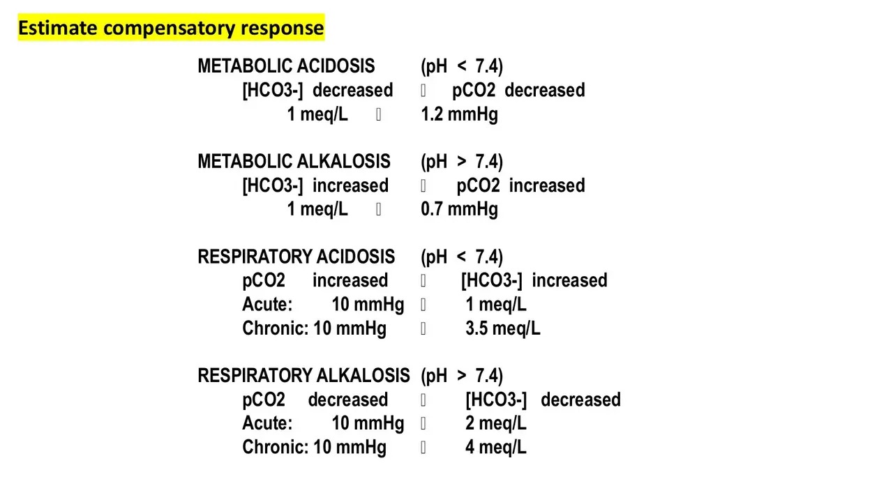
Slide 7, K19 Gangguan Asam Basa. Slide Estimate compensatory response: metabolic acidosis, HCO3- turun 1 meq/L diikuti pCO2 turun 1,2 mmHg.
Perempuan pH 7,3, pCO2 30, HCO3 12. Gangguan asam basa?
Lihat jawaban
a. Asidosis metabolik campuran (asidosis metabolik + asidosis respiratorik)
CO2 nyangkut = asidosis respiratorik ikut: asidosis metabolik (Metabolic Equal, pH dan HCO3- sama turun). Asam satu koma dua: pCO2 harusnya 40 - (12 x 1,2) = 25,6. Pasien 30, lebih tinggi, jadi campuran dengan asidosis respiratorik.
pH turun dan HCO3- turun berarti asidosis metabolik. Kompensasi ideal: tiap penurunan HCO3- 1 meq/L diikuti penurunan pCO2 1,2 mmHg, sehingga pCO2 seharusnya 40 - (12 x 1,2) = 25,6. pCO2 pasien 30 (kurang turun), jadi ada asidosis respiratorik yang menyertai.
Slide 10, K19 Gangguan Asam Basa. Tabel metabolic acidosis: PaCO2 = (1,5 x HCO3) + 8 +/- 2, dan PaCO2 terukur lebih tinggi dari prediksi berarti mixed respiratory acidosis.
Perempuan 22 tahun diagnosis acute abdomen. pH 7,3, pCO2 30, HCO3- 12. Gangguan asam basa yang terjadi?
Lihat jawaban
d. Asidosis metabolik dan asidosis respiratorik
CO2 nyangkut = asidosis respiratorik ikut: pH dan HCO3- sama turun = asidosis metabolik. Asam satu koma dua: pCO2 harusnya 40 - 14,4 = 25,6; pasien 30, kurang turun, jadi ditambah asidosis respiratorik.
pH turun dan HCO3- turun berarti asidosis metabolik. Kompensasi ideal: penurunan HCO3- 12 x 1,2 = 14,4, sehingga pCO2 seharusnya 25,6. pCO2 pasien hanya turun ke 30, jadi ada asidosis respiratorik yang menyertai.
Catatan: Di berkas pilihan diberi huruf f sampai j; di sini diubah menjadi a sampai e (kunci berkas i = d). Soal sama dengan nomor 4 dan dengan soal latihan Kapsel IPD.
Tn. D, pria 55 tahun segera dirujuk ke RS karena sesak nafas yang memburuk sejak 4 hari terakhir. Tanda vital menunjukkan tekanan darah 130/80 mmHg, denyut jantung 90 bpm, frekuensi pernafasan 28 rpm, dengan saturasi oksigen udara ruangan 90%. Investigasi darahnya menunjukkan: Hb 15,50 g/dL; WBC 5.830/uL; Trombosit 201.000/uL; Glukosa darah acak 116 mg/dL; Kreatinin 0,70 mg/dL. Gas darah arteri: pH 7,150; pCO2 7,7 mmHg; pO2 69,3 mmHg; HCO3 2,6 mmol/L; Natrium 147 mmol/L; Kalium 2,74 mmol/L; Klorida 74 mmol/L. Dari kasus ini, manakah dari pernyataan kompensasi asam basa berikut yang sesuai dengan diagnosis?
Lihat jawaban
d. Untuk setiap penurunan 1 mmol/L dalam HCO3-, PCO2 menurun 1,2 mmHg
Asam satu koma dua, Basa nol koma tujuh: asidosis metabolik, tiap HCO3- turun 1 mmol/L, PCO2 turun 1,2 mmHg. Pengecoh: 0,7 = alkalosis metabolik, 1 dan 3,5 per 10 mmHg = asidosis respiratorik akut-kronik, 2 = alkalosis respiratorik akut.
Diagnosisnya asidosis metabolik (pH 7,15, HCO3- 2,6), dan kompensasi respiratoriknya adalah penurunan PCO2 sekitar 1,2 mmHg untuk tiap penurunan 1 mmol/L HCO3-. Pilihan a dan e adalah kompensasi asidosis respiratorik akut dan kronik, b alkalosis metabolik, c alkalosis respiratorik akut.
Satu konsep: Sama-sama soal uretrografi retrograd, tetapi yang diuji jenis atau indikasi pemeriksaannya.
Kerjakan 4 soal Sumatif
2023 · Soal 21 Satu konsep
Seorang pria berusia 27 tahun dengan riwayat kecelakaan sepeda motor 6 bulan yang lalu kini mengeluh kesulitan buang air kecil: hanya keluar beberapa tetes meskipun sudah mengejan. Gambar radiologis berikut diperoleh.
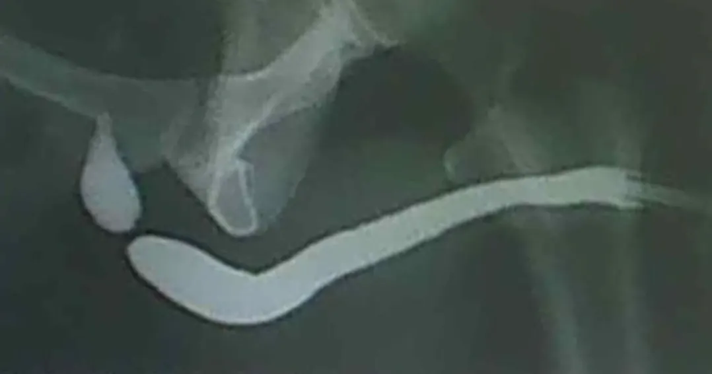
Lihat jawaban
e. Retrograde urethography
Fossa Foley: kontras disuntik dari meatus eksternus ke arah proksimal (Retrograde dari bawah) dan mengisi uretra = retrograde urethrography. Ureterografi dan sistografi salah organ: Uro-Sisto-Uretro, uretrografi untuk uretra.
Gambar menunjukkan kontras yang dimasukkan dari meatus eksternus mengisi uretra anterior dan terhenti atau menyempit di uretra posterior, yaitu uretrografi retrograd. Pemeriksaan ini adalah pilihan untuk menilai striktur uretra pascatrauma.
Catatan: Kalimat pertanyaan tidak tertulis di berkas; dari pilihannya, yang ditanyakan adalah nama pemeriksaan radiologi pada gambar. Ejaan pilihan d dan e ('urethography') mengikuti berkas, maksudnya urethrography.
Slide 58, K20 Radiologi Sistem Perkemihan. Slide Urethrografi: kontras dimasukkan lewat kateter di fossa navikulare (retrograd), indikasi riwayat trauma pelvis dan ruptur/striktur uretra.
Ada pasien laki-laki habis kecelakaan. Ada keluhan anuria. Lalu dirujuk ke departemen radiologi. Gambar di bawah ini adalah pemeriksaan apa?
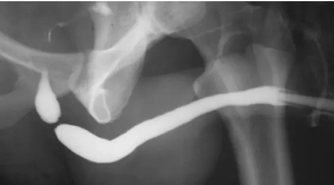
Lihat jawaban
d. Urethrography retrograde
Fossa Foley: ujung kateter di fossa navikularis, kontras dari meatus mengisi uretra ke arah proksimal = retrograde urethrography. Cari kolom kontras di uretra, bukan di buli (sistografi) atau ureter. Trauma uretra = RUG.
Kontras dimasukkan dari ujung uretra (kateter di fossa navikularis) dan mengisi uretra ke arah proksimal pada posisi oblik, yaitu retrograde urethrography (RUG). Indikasinya riwayat trauma pelvis dan kecurigaan ruptur atau striktur uretra.
Slide 58, K20 Radiologi Sistem Perkemihan. Slide Urethrografi: kateter di fossa navikulare, kontras dimasukkan lewat kateter; indikasi riwayat trauma pelvis dan ruptur atau striktur uretra.
Pasien laki-laki muda habis kecelakaan. Ada keluhan anuria. Lalu dirujuk ke departemen radiologi. Gambar di bawah ini adalah pemeriksaan apa?
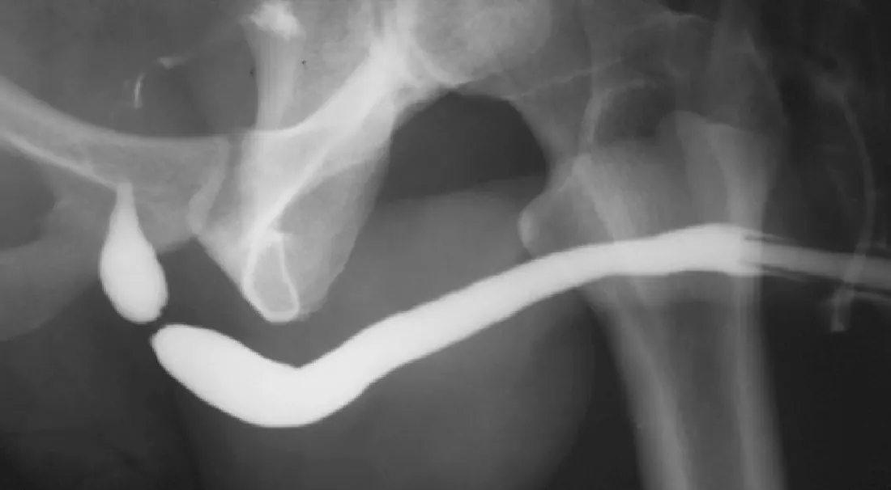
Lihat jawaban
d. Urethrography retrograde
Fossa Foley: kontras masuk dari meatus uretra eksterna naik ke proksimal = uretrografi retrograd. Uro-Sisto-Uretro: yang terisi uretra, bukan buli atau ureter. Sempit tapi tak bocor = Striktur; Bocor = Ruptur pada trauma.
Gambar memperlihatkan uretra laki-laki yang terisi kontras yang dimasukkan dari meatus uretra eksterna ke arah proksimal, yaitu uretrografi retrograd, pemeriksaan pilihan pada kecurigaan ruptur uretra setelah trauma.
Laki-laki, 28 tahun, dibawa ke unit gawat darurat karena kecelakaan lalu lintas. Setelah dilakukan radiografi pelvis, ditemukan fraktur pubis dan symphisiolysis. Pasien diduga menderita ruptur uretra. Apakah pemeriksaan radiologi yang paling tepat untuk menegakkan diagnosis tersebut?
Lihat jawaban
b. Uretrosistografi retrograd
Uro-Sisto-Uretro: curiga ruptur uretra, pilih uretro(sisto)grafi retrograd; kontras dari fossa navikulare (Fossa Foley). Bocor = Ruptur: cari ekstravasasi kontras. IVU dan CT tanpa kontras tidak menilai uretra.
Dugaan ruptur uretra pada trauma pelvis ditegakkan dengan uretrografi/uretrosistografi retrograd: kontras larut air dimasukkan lewat kateter di fossa navikulare sehingga ekstravasasi kontras di lokasi ruptur terlihat. Urografi intravena dan CT tanpa kontras tidak menilai uretra.
Cocok langsung: Fakta yang sama: kebutuhan energi pasien AKI 30-40 kkal/kgBB.
Kerjakan 2 soal Sumatif
2023 · Soal 27 Cocok langsung
Wanita berusia 57 tahun dirawat di ICU setelah operasi kanker serviks. Kondisinya stabil, tetapi menunjukkan gangguan fungsi ginjal dengan produksi urin yang masih adekuat. Hasil laboratorium menunjukkan ureum 185, kreatinin 1,9, dan albumin 2,7 g/dL. Pasien tidak memiliki riwayat penyakit ginjal, diabetes, atau hipertensi. Berapa kebutuhan energi yang sesuai untuk pasien ini?
Lihat jawaban
b. 30-40 kcal/kgBW
AKI = Angka Tiga puluh sampai Empat puluh: pasien pascaoperasi dengan gangguan ginjal akut (tanpa riwayat PGK) butuh energi 30-40 kcal/kg IBW, pakai berat kering. Pengecoh 30-35 adalah angka PGK pradialisis (Tiga puluh-Tiga lima di berat Ideal).
Menurut kuliah nutrisi, kebutuhan energi pada AKI adalah 30-40 kcal/kg berat badan ideal per hari (memakai dry weight karena pasien AKI sering overhidrasi).
Catatan sumber: Tabel 1 ESPEN 2006 menulis kebutuhan energi gagal ginjal akut 20-30 kcal/kgBB/hari (kalori nonprotein), sehingga sumber ini mendukung pilihan d, sedangkan kunci b mengikuti angka 30-40 di slide kuliah.
2021 · Soal 62 Cocok langsung
Nn. AS didiagnosis dengan AKI akibat perdarahan pasca operasi. Pemeriksaan antropometri menunjukkan IMT 18,5 kg/m2. Berapa jumlah target kalori total yang harus diberikan per hari?
Lihat jawaban
c. 30-40 kkal/kgBB
AKI = Angka Tiga puluh sampai Empat puluh: energi AKI 30-40 kkal/kg BB ideal per hari, pakai berat kering. Pagar PGK pradialisis lebih sempit (30-35).
Menurut slide nutrisi, kebutuhan energi pada AKI adalah 30-40 kkal/kg BB ideal per hari, dihitung dengan berat badan kering.
Catatan: Kunci mengikuti slide kuliah. Beberapa pedoman (ESPEN) memakai 20-30 kkal/kgBB/hari untuk AKI, sehingga pilihan b bisa menjadi kunci bila dosen memakai acuan itu.
Slide 8, K16 Nutrisi pada PGK dan AKI. Slide kebutuhan nutrisi AKI menulis energi 30-40 kcal/kg IBW/hari (berat badan kering).
Catatan sumber: Pedoman ESPEN menganjurkan kalorimetri indirek dan, bila tidak tersedia, sekitar 20-30 kkal/kgBB/hari, sehingga sumber luar lebih mendukung pilihan b; kunci c mengikuti angka 30-40 kkal/kg di slide kuliah.
Obat yang mempunyai berat molekul yang kecil (<500 Dalton) adalah obat yang mudah menembus membrane dialisat sehingga perlu diberikan suplementasi dosis setelah dilakukannya hemodialysis.
Cocok langsung: Fakta yang sama: obat dengan berat molekul di bawah 500 Dalton perlu suplementasi setelah hemodialisis.
Satu konsep: Sama-sama soal suplementasi setelah hemodialisis, tetapi parameter kuncinya volume distribusi.
Kerjakan 3 soal Sumatif
2019 · Soal 25 Cocok langsung
Apa parameter obat di bawah ini yang perlu dosis suplementasi setelah dilakukan hemodialisis?
Lihat jawaban
a. Berat molekul kurang dari 500 Dalton
Kecil, Cair, Lepas = Lolos dialiser: obat BM <500 Da, larut air, ikatan protein rendah, dan Vd kecil mudah terdialisis sehingga perlu dosis suplemen. Ikatan protein tinggi, Vd besar, dan lipofilik justru bertahan di tubuh.
Obat mudah terdialisis (sehingga perlu dosis tambahan pascadialisis) bila berat molekulnya kecil (<500 Da), larut air, ikatan proteinnya rendah, dan volume distribusinya kecil. Ikatan protein tinggi, Vd besar, dan sifat lipofilik membuat obat sulit terdialisis.
Kecil, Bebas, Diam di darah, Suka air: obat terbuang saat hemodialisis dan butuh dosis suplemen bila molekulnya kecil (BM <500 Dalton), ikatan protein rendah, volume distribusi kecil, dan hidrofilik. Obat lipofilik bersembunyi di jaringan sehingga tidak terdialisis.
Obat mudah terbuang saat hemodialisis (sehingga perlu dosis suplemen) bila berat molekulnya kecil (< 500 Dalton), dalam bentuk bebas (ikatan protein rendah), volume distribusinya kecil (< 1 L/kg), dan hidrofilik. Obat lipofilik tidak terdialisis.
Catatan: Pilihan e tidak teringat (kosong di berkas). Berkas menyertakan cuplikan slide kuliah tentang faktor obat pada hemodialisis sebagai pembahasan, bukan gambar soal.
Obat apa yang memerlukan suplementasi setelah hemodialisis?
Lihat jawaban
e. Volume distribusi 1 L/kg
Kecil, Cair, Bebas, Dekat: obat yang ikut tersaring dialisis dan butuh suplemen berukuran Kecil (< 500 Da), larut air (Cair), Bebas protein, dan volume distribusinya kecil (tetap Dekat di plasma, sekitar 1 L/kg). Larut lemak, terikat protein, dan BM besar justru tidak terdialisis.
Dosis suplemen pascahemodialisis diperlukan untuk obat yang banyak terbuang saat dialisis: berat molekul kecil (< 500 Da), larut air, ikatan protein rendah, dan volume distribusi kecil. Dari pilihan yang ada hanya volume distribusi kecil (sekitar 1 L/kg atau kurang) yang searah, pilihan lain justru ciri obat yang tidak terdialisis.
Kunci tidak ada di berkas dan dasarnya tidak ada di slide K10-K20, jawaban dari pengetahuan umum.
Catatan: Kunci kurang pasti karena pilihan tampaknya tidak diingat tepat. Di berkas tahun 2019 soal serupa berkunci 'berat molekul kurang dari 500 Dalton' dengan pengecoh 'volume distribusi lebih dari 1 L/kg'.
Seorang laki-laki berusia 66 tahun dengan pembesaran prostat mengalami demam, hipotensi, dan nyeri suprapubik. Urinalisis mendukung infeksi saluran kemih. Karena pasien mengalami infeksi, pemberian antibiotik saja sudah cukup tanpa mengevaluasi kemungkinan obstruksi saluran kemih.
Slide soal ini: K18 Infeksi Saluran Kemih, slide 21
Satu konsep: Sama-sama soal ISK dengan komplikasi, tetapi tidak menanyakan evaluasi obstruksi secara langsung.
Kerjakan 4 soal Sumatif
2021 · Soal 75 Satu konsep
Ny. W, 60 tahun dibawa oleh keluarganya ke unit gawat darurat dengan demam selama 5 hari. Dia pernah dirawat di rumah sakit karena stroke dan diabetes melitus. Setelah dipulangkan, dia diimobilisasi dan dipasang kateter. Dokter kemudian mendiagnosisnya dengan infeksi saluran kemih terkait kateter. Manakah dari faktor berikut yang mempengaruhi komplikasi ISK?
Lihat jawaban
b. Diabetes mellitus
Komplikata = Kelainan: diabetes adalah penyakit dasar pejamu yang otomatis membuat ISK berkomplikasi (FASIH PD, Diabetes). Imobilisasi, rawat inap, dan kateter adalah faktor risiko infeksi, bukan penentu komplikasi di kunci ini.
Diabetes melitus adalah penyakit dasar pejamu yang membuat ISK menjadi complicated dan meningkatkan risiko komplikasi (pielonefritis emfisematosa, abses, nekrosis papila, sepsis).
Kunci tidak ada di berkas dan dasarnya tidak ada di slide K10-K20, jawaban dari pengetahuan umum. Materi: K18 Infeksi Saluran Kemih.
Catatan: Kunci diragukan: soal yang sama di berkas tahun 2019 berkunci diabetes mellitus, tetapi kateter yang menetap (e) juga faktor penyulit ISK dan merupakan penyebab langsung infeksi pada kasus ini.
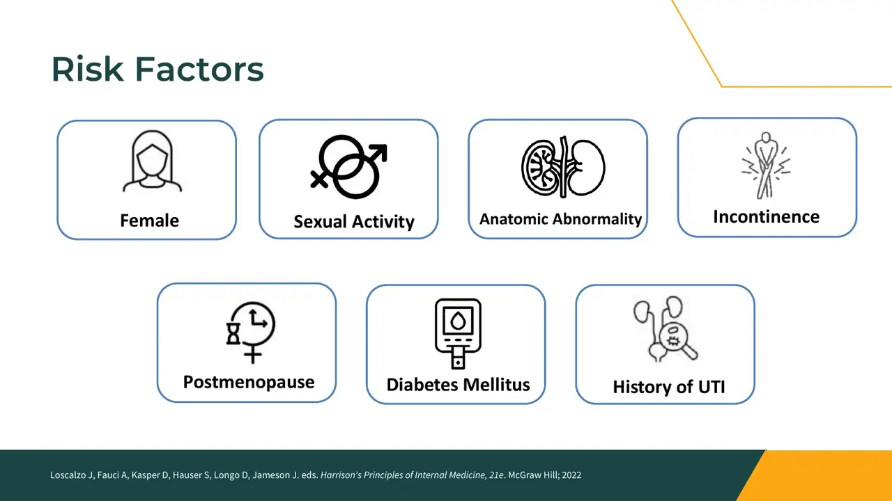
Slide 7, K18 Infeksi Saluran Kemih. Slide risk factors ISK mencantumkan diabetes mellitus (bersama female, anatomic abnormality, incontinence, dan lain-lain).
Pasien laki-laki dengan nyeri suprapubik (+), nyeri CVA (+), diagnosisnya?
Lihat jawaban
d. Complicated UTI
Komplikata = Kelainan: pasien laki-laki otomatis complicated UTI, apalagi bawah (suprapubik) dan atas (CVA) sekaligus. Uncomplicated hanya perempuan sehat tidak hamil.
ISK pada laki-laki digolongkan complicated UTI, apalagi dengan keterlibatan saluran kemih bawah (nyeri suprapubik) dan atas (nyeri CVA) sekaligus. Kategori uncomplicated hanya untuk perempuan sehat tidak hamil.
Kunci tidak ada di berkas dan dasarnya tidak ada di slide K10-K20, jawaban dari pengetahuan umum. Materi: K18 Infeksi Saluran Kemih.
Catatan: Stem sangat ringkas. Kunci diragukan: pielonefritis akut (a) juga masuk akal karena ada nyeri ketok CVA, tergantung apakah soal menanyakan lokasi atau kategori ISK.
Ny. W, 60 tahun dibawa oleh keluarganya ke unit gawat darurat dengan demam selama 5 hari. Dia pernah dirawat di rumah sakit karena stroke dan diabetes melitus. Setelah dipulangkan, dia diimobilisasi dan dipasang kateter. Dokter kemudian mendiagnosisnya dengan infeksi saluran kemih terkait kateter. Manakah dari faktor berikut yang mempengaruhi komplikasi ISK?
Lihat jawaban
b. Diabetes mellitus
Komplikata = Kelainan, termasuk Kencing manis: diabetes adalah faktor pejamu yang membuat ISK berkomplikasi (pielonefritis emfisematosa, abses, nekrosis papila, urosepsis) lewat imunitas turun, glukosuria, dan neuropati buli.
Diabetes melitus adalah faktor pejamu yang membuat ISK lebih mudah berkomplikasi (pielonefritis emfisematosa, abses, nekrosis papila, urosepsis) karena gangguan imunitas, glukosuria, dan neuropati kandung kemih.
Catatan: Kunci agak diragukan: kateter menetap (e) juga faktor yang menjadikan ISK tergolong komplikata. Kunci berkas memilih DM, mungkin karena soal menanyakan faktor yang memperberat komplikasi, sedangkan kateter adalah sumber infeksinya.
Slide 7, K18 Infeksi Saluran Kemih. Slide Risk Factors mencantumkan Diabetes Mellitus sebagai faktor risiko ISK (kateter tidak tercantum di slide ini).
Catatan sumber: Sumber menggolongkan baik diabetes melitus maupun kateter menetap sebagai faktor yang membuat ISK menjadi komplikata, sehingga pilihan e juga dapat dibenarkan dan kunci b tidak didukung secara eksklusif.
2017 · Soal 54 Satu konsep
Apa perbedaan antara ISK komplikata dengan ISK nonkomplikata?
Lihat jawaban
d. Terdapat gangguan struktur atau fungsi saluran kemih
Komplikata = Kelainan: ISK komplikata bila ada kelainan struktur atau fungsi saluran kemih (batu, obstruksi, refluks, buli neurogenik, diabetes). Prognosis dan pilihan antibiotik adalah akibat, bukan definisi.
ISK nonkomplikata terjadi tanpa kelainan anatomi, fungsi, metabolik, atau imunitas. Bila ada kelainan struktur atau fungsi saluran kemih (batu, obstruksi, refluks, buli neurogenik, diabetes, dan sebagainya), ISK tergolong komplikata.
Slide 8, K10 ISK pada Anak. Slide Classification of UTI: complex UTI = ISK dengan kelainan anatomi dan fungsi saluran kemih yang menyebabkan stasis urin.
Cocok langsung: Fakta yang sama: batu ginjal pada USG tampak hiperekoik dengan posterior acoustic shadow.
Satu konsep: Sama-sama soal USG ginjal, tetapi yang ditanyakan gambaran kista.
Kerjakan 11 soal Sumatif
2023 · Soal 12 Cocok langsung
Pria 35 tahun mengikuti pemeriksaan kesehatan. Gejala disangkal (asimtomatik). Berikut hasil ultrasound renal. Apa kesimpulan gambar ini?
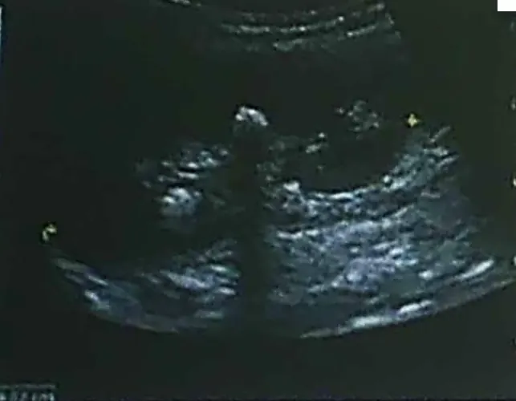
Lihat jawaban
c. Batu ginjal
Batu Bayangan, Kista Kilau: cari titik putih terang (hiperekoik) dengan pita bayangan hitam di belakangnya (posterior acoustic shadow) = batu ginjal. Kista justru bulat hitam (anekoik) dengan bagian belakang lebih terang.
USG menunjukkan fokus hiperekoik dengan bayangan akustik posterior (posterior acoustic shadow), gambaran khas batu ginjal. Kista tampak anekoik dengan posterior enhancement.
Seorang pria berusia 35 tahun menjalani pemeriksaan medis (MCU) sebagai syarat untuk bekerja di kapal pesiar. Ia tidak menunjukkan gejala apa pun. Temuan ultrasonografi ginjal ditunjukkan. Apa yang dilaporkan pada laporan radiologi?
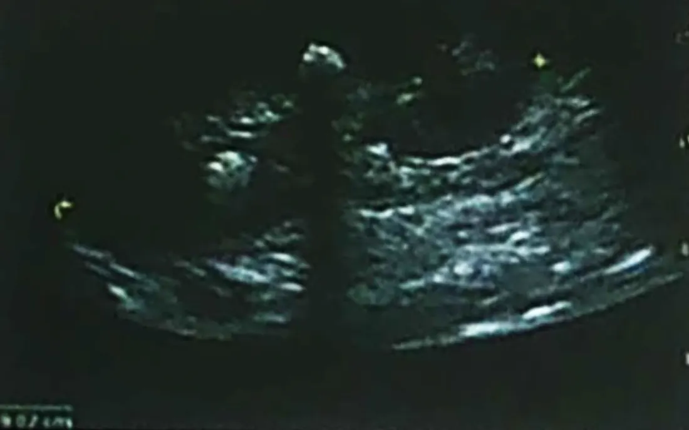
Lihat jawaban
e. Hyperechoic focus with posterior acoustic shadow
Batu Bayangan, Kista Kilau: batu memantulkan seluruh gelombang suara, jadi tampak hiperekoik (putih) dengan posterior acoustic shadow (bayangan gelap di belakang). Anekoik + posterior enhancement adalah kista.
Batu ginjal pada USG tampak sebagai fokus hiperekoik dengan posterior acoustic shadow karena gelombang suara dipantulkan seluruhnya oleh batu. Fokus anekoik dengan posterior enhancement adalah gambaran kista.
Batu Bayangan, Kista Kilau: batu memantulkan gelombang (hiperekhoik, putih) dan memblok suara di belakangnya (posterior acoustic shadow). Kista berisi cairan meneruskan suara: anekhoik dengan posterior enhancement. Hipoekhoik bukan ciri keduanya.
Batu ginjal pada USG tampak sebagai fokus hiperekhoik dengan posterior acoustic shadow. Kista sederhana sebaliknya tampak anekhoik dengan posterior acoustic enhancement.
Catatan: Soal tidak lengkap: gambar tidak disertakan dan penyusun tidak yakin apakah gambarnya batu atau kista. Kunci b berlaku bila gambarnya batu (seperti no. 39); bila kista, jawabannya a.
Batu Bayangan: di gambar cari titik putih terang di ginjal (hiperekhoik) dengan pita hitam memanjang di belakangnya (posterior acoustic shadow), karena batu memblok suara. Kista Kilau: bulatan hitam (anekhoik) dengan area belakang lebih terang (enhancement).
Pada gambar tampak fokus putih terang (hiperekhoik) di ginjal dengan bayangan hitam di belakangnya (posterior acoustic shadow), gambaran khas batu. Anekhoik dengan posterior enhancement adalah gambaran kista.
Slide 34, K20 Radiologi Sistem Perkemihan. Slide USG Batu ginjal: fokus hiperekhoik dengan posterior accoustic shadow, ditunjuk panah pada dua gambar USG.
Batu Bayangan, Kista Kilau: cari fokus putih terang (hiperekhoik) dengan pita gelap di belakangnya (posterior acoustic shadow). Anekhoik dengan posterior enhancement adalah kista.
Batu pada USG tampak sebagai fokus hiperekhoik dengan bayangan akustik di posteriornya (posterior acoustic shadow). Anekhoik dengan posterior enhancement adalah gambaran kista.
Gambar USG batu / kista ginjal. Bagaimana gambaran yang tampak pada USG tersebut?
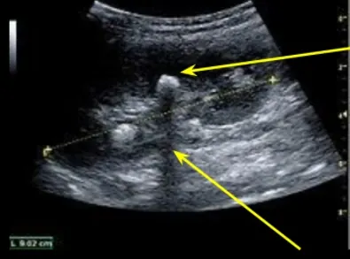
Lihat jawaban
b. Hiperekhoik with posterior acoustic shadow
Batu Bayangan, Kista Kilau: batu putih terang (hiperekhoik) dan memblok suara sehingga di belakangnya ada bayangan hitam (posterior acoustic shadow). Kista hitam (anekhoik) dengan belakang lebih terang (enhancement).
Menurut penyusun gambar di soal adalah batu karena ada bayangan hitam di belakang lesi: batu tampak hiperekhoik dengan posterior acoustic shadow. Kista tampak anekhoik dengan posterior acoustic enhancement.
Catatan: Stem soal tidak diingat lengkap dan penyusun awalnya ragu apakah soalnya batu atau kista ("tidak tahu jawabannya yang mana"), lalu menetapkan batu. Gambar adalah gambar yang menurut ingatan penyusun mirip dengan gambar soal.
Seorang laki-laki, usia 40 tahun dengan keluhan nyeri pinggang kanan datang ke IGD. Pada pemeriksaan fisik didapatkan nyeri ketok CVA kanan positif. Pasien kemudian dilakukan pemeriksaan ultrasonografi (USG) abdomen, dan didapatkan adanya batu ginjal. Bagaimana gambaran pemeriksaan radiologi pada kasus ini?
Lihat jawaban
c. Fokus hiperechoic dengan posterior acoustic shadow.
Batu Bayangan, Kista Kilau: batu = fokus hiperekhoik + posterior acoustic shadow. Enhancement milik kista anekhoik; edge shadow muncul di tepi struktur bulat, bukan khas batu.
Batu pada USG tampak sebagai fokus hiperekhoik (putih) dengan posterior acoustic shadow (bayangan hitam di belakangnya). Posterior acoustic enhancement adalah ciri kista yang anekhoik.
Seorang laki-laki, usia 40 tahun dengan keluhan nyeri pinggang kanan datang ke IGD. Pada pemeriksaan fisik didapatkan nyeri ketok CVA kanan positif. Pasien kemudian dilakukan pemeriksaan ultrasonografi (USG) abdomen, dan didapatkan adanya batu ginjal. Bagaimana gambaran pemeriksaan radiologi pada kasus ini?
Lihat jawaban
c. Fokus hiperechoic dengan posterior acoustic shadow
Batu Bayangan, Kista Kilau: batu = fokus hiperekhoik dengan posterior acoustic shadow karena memantulkan hampir semua gelombang. Posterior enhancement milik kista berisi cairan.
Batu memantulkan hampir seluruh gelombang suara sehingga tampak hiperekoik dengan bayangan akustik di posteriornya. Posterior acoustic enhancement adalah ciri struktur berisi cairan seperti kista.
Pasien laki-laki 40 tahun, datang dengan keluhan nyeri pinggang bagian kanan, pemeriksaan nyeri ketok CVA (+). Saat menjalani USG, ditemukan batu ginjal. Batu yang ditemukan dengan ciri
Lihat jawaban
c. Fokus hiperekoik dengan posterior acoustic shadow
Batu Bayangan, Kista Kilau: batu padat memantulkan suara (hiperekoik) dan menghalangi gelombang ke belakang sehingga ada posterior acoustic shadow. Posterior enhancement milik kista berisi cairan.
Batu bersifat padat sehingga memantulkan gelombang suara (tampak hiperekoik) dan menghalangi gelombang ke jaringan di belakangnya, sehingga terbentuk bayangan gelap di posterior (posterior acoustic shadow). Posterior enhancement adalah ciri struktur berisi cairan seperti kista.
Perempuan, 50 tahun, dengan keluhan nyeri pinggang sebelah kiri, dikirim ke bagian radiologi untuk pemeriksaan USG abdomen. Ditemukan adanya fokus hiperekoik konveks dengan posterior acoustic shadow pada ginjal kiri. Diagnosis manakah yang paling tepat untuk temuan pemeriksaan USG tersebut?
Lihat jawaban
d. Nefrolitiasis
Batu Bayangan, Kista Kilau: fokus hiperekoik dengan posterior acoustic shadow = batu yang memblok suara, jadi nefrolitiasis. Kista anekoik dengan posterior enhancement.
Batu ginjal pada USG tampak sebagai fokus hiperekoik dengan posterior acoustic shadow karena gelombang suara tertahan oleh batu. Kista tampak anekoik dengan posterior enhancement.
Laki-laki, 24 tahun, dengan keluhan nyeri perut kanan. Pada pemeriksaan USG abdomen ditemukan kista pada ginjal kanan. Gambaran USG manakah yang sesuai dengan hasil USG pasien ini?
Lihat jawaban
a. Lesi anekoik dengan posterior enhancement
Batu Bayangan, Kista Kilau: kista berisi cairan, anekoik, dan suara diteruskan sehingga belakangnya lebih terang (posterior enhancement). Posterior acoustic shadow milik batu.
Kista berisi cairan sehingga tidak memantulkan gelombang suara (anekoik) dan gelombang diteruskan lebih kuat ke belakangnya (posterior enhancement). Posterior acoustic shadow adalah ciri batu.
Cocok langsung: Angka yang sama: protein 0,6-0,8 g/kgBB pada PGK tanpa dialisis.
Satu konsep: Sama-sama soal protein pada PGK tanpa dialisis, tetapi angka di pilihannya 0,6-0,7.
Kerjakan 3 soal Sumatif
2022 · Soal 8 Cocok langsung
Pasien CKD pre dialisis, asupan protein yang dianjurkan berapa?
Lihat jawaban
b. 0,6-0,8
Pradialisis = Pelit protein, Enam-Delapan: PGK sebelum dialisis 0,6-0,8 g/kgBB/hari untuk mengurangi hiperfiltrasi dan toksin uremik. 0,3-0,5 adalah VLPD (Very Low wajib dibantu Keto), 1,0-1,3 milik pasien yang sudah dialisis.
Pada PGK pradialisis dianjurkan diet rendah protein 0,6-0,8 g/kgBB/hari untuk mengurangi hiperfiltrasi glomerulus, proteinuria, dan toksin uremik.
Protein untuk pasien derajat 5 yang belum hemodialisis (ini ada dua versi, ada yang sudah atau belum HD)
Lihat jawaban
c. 0,6-0,8 kg/BB
Pradialisis = Pelit protein, Enam-Delapan: derajat 5 yang belum HD tetap diet rendah protein 0,6-0,8 g/kgBB/hari. Versi soal yang sudah HD berubah jadi Dialisis = Ditambah protein, sekitar 1-1,2 g/kgBB/hari.
PGK derajat 5 yang belum dialisis diberi diet rendah protein 0,6-0,8 g/kgBB/hari. Untuk versi pasien yang sudah hemodialisis rutin, kebutuhannya lebih tinggi, sekitar 1-1,2 g/kgBB/hari.
Catatan: Soal hasil ingatan, hanya 4 pilihan yang tercatat di berkas. Satuan di berkas tertulis kg/BB (maksudnya g/kgBB/hari). Penyusun mencatat ada dua versi soal: untuk versi sudah HD jawabannya pilihan d.
Slide 22, K16 Nutrisi pada PGK dan AKI. Slide kutipan ESPEN 2021: pasien CKD rawat inap tanpa penyakit akut/kritis diberi protein 0,6-0,8 g/kg BB/hari.
Wanita berumur 56 tahun, mengalami penurunan kalium dan diuresis. Dokter menyarankan untuk dialisis namun pasien menolak. Asupan protein yang direkomendasikan adalah
Lihat jawaban
c. 0,6-0,7
Pradialisis = Pelit protein, Enam-Delapan: menolak dialisis berarti tetap pakai protein rendah 0,6-0,8 g/kgBB/hari (pilihan yang paling cocok 0,6-0,7). Dialisis = Ditambah protein: 1-1,2 hanya untuk yang sudah HD.
Asupan protein pasien dengan kerusakan ginjal yang tidak menjalani dialisis adalah 0,6-0,8 g/kgBB/hari (maksimal 1 g/kgBB/hari); protein lebih tinggi (1-1,2) baru diberikan bila pasien menjalani hemodialisis.
Catatan: Berkas menandai dua kunci sekaligus, C (0,6-0,7) dan D (0,7-0,8), karena rentang yang benar 0,6-0,8 terbagi ke dua pilihan; kemungkinan pilihan salah diingat. Di sini ditulis c, tetapi d sama kuatnya. Satuan pilihan A di berkas tertulis mg/kgBB, maksudnya g/kgBB.
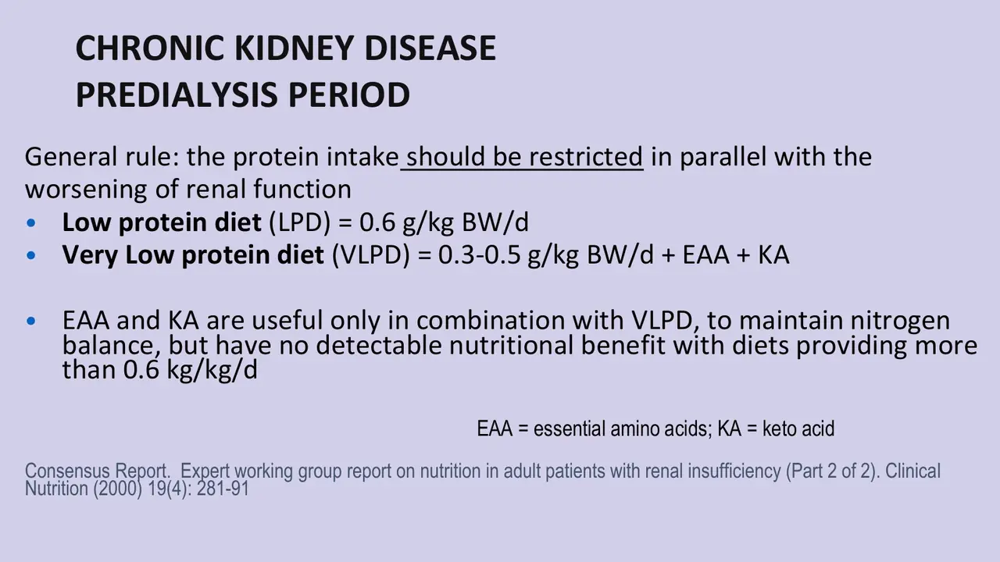
Slide 24, K16 Nutrisi pada PGK dan AKI. Slide CKD predialysis: asupan protein dibatasi, low protein diet = 0,6 g/kgBB/hari.
Satu konsep: Sama-sama soal batu pada foto polos, tetapi batu di soal itu tampak opak.
Kerjakan 4 soal Sumatif
2021 · Soal 35 Satu konsep
Ada foto radiografi dari depan (foto polos abdomen). Kelihatan ada batu ginjal di sebelah kiri (gumpalan putih hampir memenuhi satu pelvis). Ada vignette pasien perempuan, tetapi fokusnya ke foto radiografi. Ditanyakan apa kelainannya.
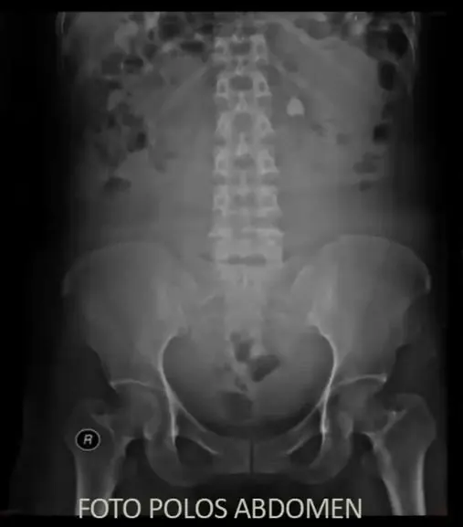
Lihat jawaban
a. Batu ginjal kiri
Pasien menghadap kita: bayangan opak putih di proyeksi ginjal di sisi kanan gambar (lawan penanda R) = batu ginjal kiri. Polos hanya melihat yang putih: hidronefrosis tidak bisa dinilai dari BNO.
Pada foto polos abdomen tampak bayangan opak di proyeksi ginjal kiri (sisi kanan gambar, berlawanan dengan penanda R), sesuai batu radioopak ginjal kiri. Hidronefrosis tidak dapat dinilai dari foto polos.
Kunci tidak ada di berkas dan dasarnya tidak ada di slide K10-K20, jawaban dari pengetahuan umum. Materi: K20 Radiologi Sistem Perkemihan.
Catatan: Stem ditulis ulang dari ingatan penyusun, vignette aslinya tidak ada. Gambar di berkas adalah gambar pengganti dari penyusun.
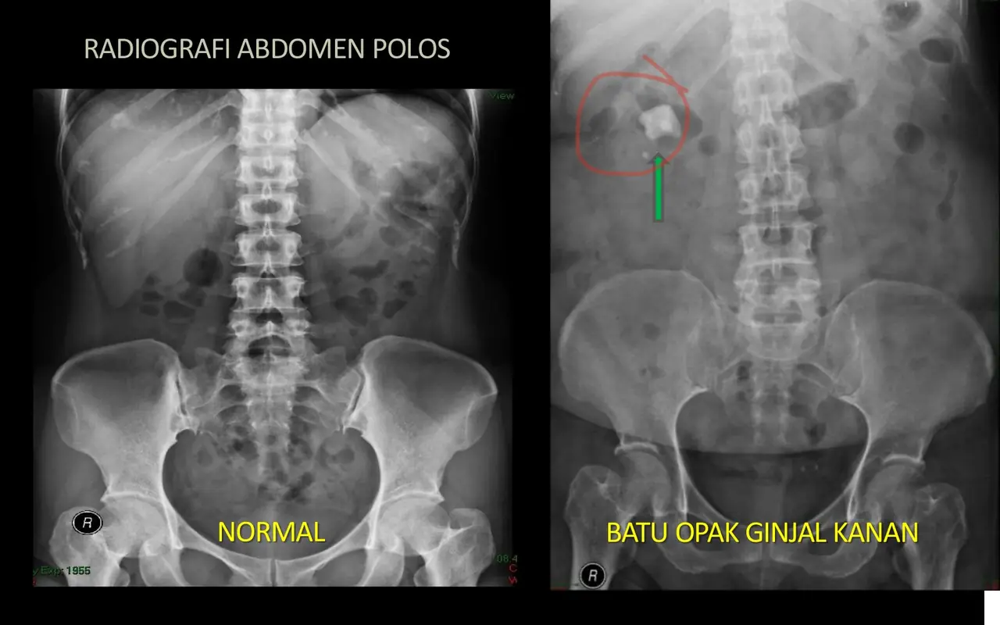
Slide 11, K20 Radiologi Sistem Perkemihan. Slide radiografi abdomen polos: contoh batu opak ginjal (sisi ditentukan dari penanda R), berdampingan dengan foto normal.
2020 · Soal 42 Satu konsep
Ada foto radiografi dari depan pada seorang perempuan (vignette tidak diingat, fokusnya pada foto). Kelihatan gumpalan putih hampir memenuhi satu pelvis ginjal di sebelah kiri. Ditanyakan apa kelainannya.
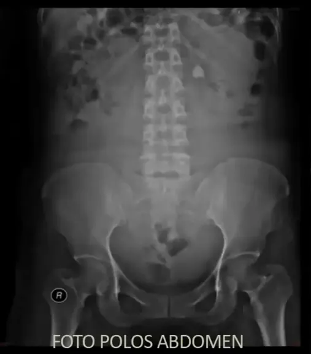
Lihat jawaban
a. Batu ginjal kiri
Polos hanya melihat yang putih: bayangan radioopak memenuhi pelvis ginjal kiri = batu (staghorn bila mengisi pelvis-kaliks). Hidronefrosis tidak bisa dinilai di foto polos tanpa kontras. Ingat Pasien menghadap kita untuk sisi kiri-kanan.
Pada foto polos abdomen tampak bayangan radioopak di proyeksi ginjal kiri, sesuai batu ginjal kiri. Hidronefrosis (pelebaran pelvis dan kaliks) tidak dapat dinilai dari foto polos tanpa kontras.
Catatan: Vignette soal tidak diingat penyusun dan pilihan E tidak diingat.
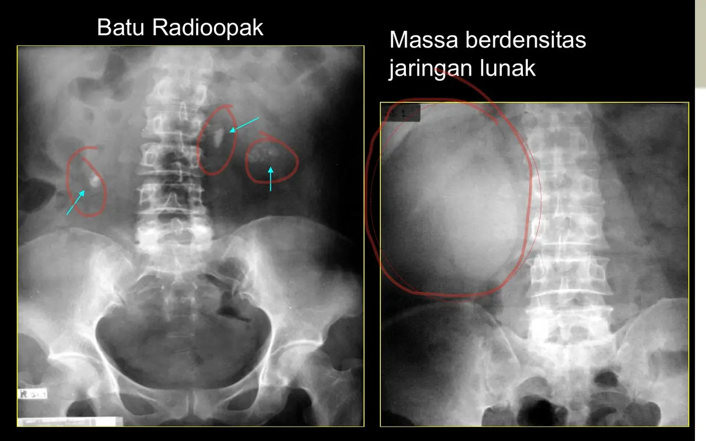
Slide 12, K20 Radiologi Sistem Perkemihan. Slide Batu Radioopak memperlihatkan foto polos abdomen dengan bayangan opak di proyeksi ginjal, termasuk sisi kiri.
Seorang laki-laki, usia 30 tahun dengan keluhan nyeri perut dan BAK berwarna merah seperti air cucian daging, pasien dirujuk ke Departemen Radiologi dan telah dilakukan pemeriksaan radiografi abdomen polos. Hasil foto rontgen ditampilkan sebagai berikut. Apakah diagnosis yang paling tepat pada pasien ini (sesuai foto yang telah dilakukan)?
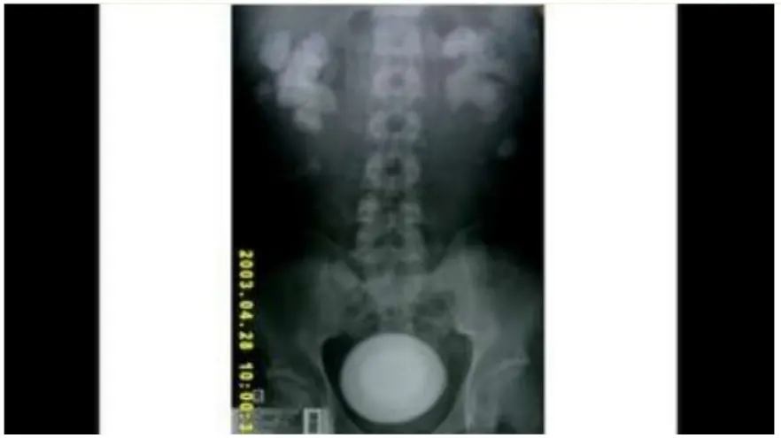
Lihat jawaban
c. Nephrolithiasis bilateral dan vesicolithiasis
Dua ginjal dan satu bola di panggul: cari opak di proyeksi kedua ginjal plus bayangan bulat besar di pelvis = nefrolitiasis bilateral + vesikolitiasis. Polos hanya melihat yang putih: hidronefrosis dan tumor tidak dinilai dari foto polos.
Foto polos abdomen memperlihatkan bayangan radioopak di proyeksi kedua ginjal dan satu bayangan radioopak bulat besar di rongga pelvis (buli), sesuai nefrolitiasis bilateral dan vesikolitiasis. Hidronefrosis dan tumor tidak dapat dinilai dari foto polos.
Catatan: Berkas gambar di folder raw berupa tangkapan layar utuh (foto rontgen ada di sisi kiri); foto yang sudah terpotong terlihat di halaman 5 berkas asli.
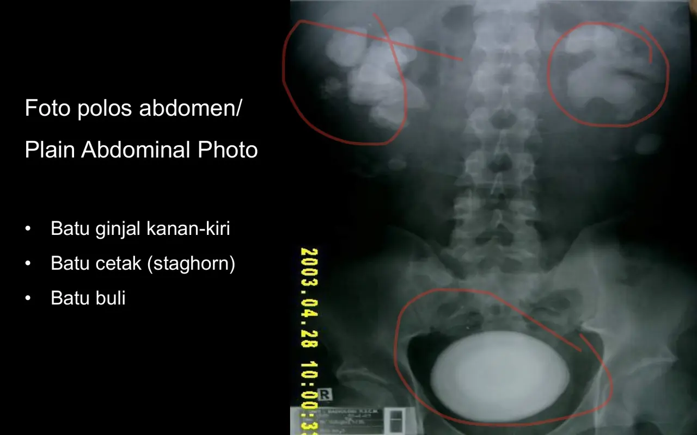
Slide 66, K20 Radiologi Sistem Perkemihan. Foto polos abdomen pada slide: batu ginjal kanan-kiri (batu cetak/staghorn) dan batu buli.
Ada gambar foto polos abdomen radiologi. Gambaran apa yang ditunjukkan dari gambar tersebut?
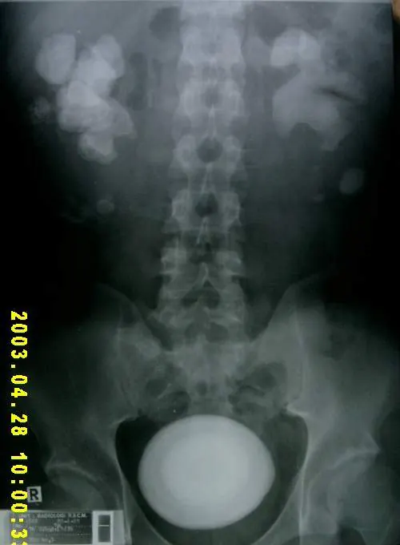
Lihat jawaban
c. Nefrolithiasis bilateral dan vesicolithiasis
Dua ginjal dan satu bola di panggul: opak di proyeksi kedua ginjal plus bayangan bulat opak di pelvis = nefrolitiasis bilateral dan vesikolitiasis. Polos hanya melihat yang putih: tumor dan hidronefrosis tidak tampak sebagai opasitas padat.
Pada foto polos abdomen tampak bayangan radioopak di proyeksi kedua ginjal dan di buli-buli, yaitu batu ginjal bilateral dan batu buli. Tumor dan hidronefrosis tidak tampak sebagai opasitas padat pada foto polos.
Catatan: Gambar di berkas adalah gambar pengganti yang menurut penyusun mirip gambar soal (diambil dari slide kuliah radiologi). Pilihan d dan e kosong di berkas.
Slide 66, K20 Radiologi Sistem Perkemihan. Slide foto polos abdomen dengan gambar yang sama: batu ginjal kanan-kiri, batu cetak (staghorn), batu buli.
Inhibisi transporter P-glycoprotein oleh kuinidin dapat meningkatkan konsentrasi digoksin sehingga risiko toksisitas meningkat, meskipun perubahan tersebut tidak semata-mata disebabkan oleh inhibisi enzim metabolisme.
Slide soal ini: K15 Dasar Terapi Parenteral, slide 54
Satu konsep: Sama-sama soal interaksi digoksin, tetapi obat dan mekanismenya berbeda.
Kerjakan 4 soal Sumatif
2022 · Soal 31 Satu konsep
Obat yang bisa meningkatkan renal blood flow jika dikombinasikan dengan digoxin ...
Lihat jawaban
a. Hydralazine
Hidralazin = Hidran buka aliran ginjal: vasodilator yang menaikkan aliran darah ginjal sehingga digoksin lebih cepat dibuang (interaksi tahap ekskresi). Simetidin pasangannya ketokonazol (pH lambung), gentamisin justru nefrotoksik.
Hydralazine adalah vasodilator yang meningkatkan aliran darah ginjal, sehingga klirens ginjal digoxin meningkat. Ini contoh interaksi pada tahap ekskresi ginjal.
Manakah obat berikut yang dapat berinteraksi dengan digoksin yang dapat meningkatkan renal blood flow?
Lihat jawaban
e. Hydralazine
Hidralazin = Hidran buka aliran ginjal: vasodilator menaikkan aliran darah ginjal sehingga digoksin lebih cepat dibuang. Pasangan lain: Fenilbutazon Fengusir Warfarin, Keto butuh Kecut, simetidin dengan teofilin.
Hidralazin adalah vasodilator yang meningkatkan aliran darah ginjal sehingga ekskresi digoksin lewat ginjal meningkat. Pengecoh lain adalah contoh interaksi berbeda: fenilbutazon dengan warfarin (ikatan protein), ketokonazol dengan ranitidin (absorpsi), simetidin dengan teofilin (metabolisme).
Kunci dari berkas soal.
Slide 48, K15 Dasar Terapi Parenteral. Slide Alterations in renal clearance, increase in renal blood flow: hydralazine + digoxin, hydralazine meningkatkan klirens ginjal digoksin.
Yang dapat meningkatkan renal blood flow apabila dikonsumsi dengan digoxin ialah...
Lihat jawaban
d. hydralazine
Hidralazin = Hidran buka aliran ginjal: vasodilator ini menaikkan aliran darah ginjal sehingga digoksin lebih cepat dibuang. Kuinidin justru menurunkan klirens digoksin dan antasida mengganggu absorpsinya.
Hidralazin adalah vasodilator yang meningkatkan aliran darah ginjal sehingga klirens ginjal digoksin meningkat. Kuinidin justru menurunkan klirens digoksin, dan antasida mengganggu absorpsinya.
Catatan: Pilihan a tertulis "prozasin" di berkas (maksudnya prazosin).
Slide 48, K15 Dasar Terapi Parenteral. Slide alterations in renal clearance: peningkatan aliran darah ginjal, contoh hidralazin + digoksin; hidralazin meningkatkan klirens ginjal digoksin.
Satu konsep: Sama-sama soal faktor batu asam urat.
Perlu dicek: Sumatif 2022 no. 5 memasang pH urin >5,5 sebagai faktor risiko, sedangkan Formatif menyebut urine persisten asam. Baca kembali slide 8 K17.
Kerjakan 4 soal Sumatif
2022 · Soal 5 Satu konsep
Berikut yang merupakan faktor risiko terbentuknya batu asam urat, kecuali:
Lihat jawaban
c. Proteus mirabilis
Urat di Asam, Struvit di Basa: batu asam urat lahir di urin asam lama (pH < 5,5), hiperurisemia, kemoterapi, dan dehidrasi. Proteus memecah urea jadi amonia (Pesing), urin basa, lahirlah struvit, jadi Proteus mirabilis BUKAN faktor batu asam urat.
Faktor risiko batu asam urat adalah urin asam yang berlangsung lama (pH < 5,5), hiperurisemia/gout, hiperurikosuria akibat kemoterapi, dan dehidrasi. Proteus mirabilis adalah kuman penghasil urease yang menyebabkan batu struvit, bukan batu asam urat.
Kunci tidak ada di berkas, jawaban ditentukan dari slide kuliah. Materi: K17 Batu Saluran Kemih.
Catatan: Di berkas pilihan pH tertulis lebih dari 5,5. Kalau memang begitu bunyinya, pilihan itu juga bukan faktor risiko (batu asam urat terbentuk pada urin asam, pH < 5,5), sehingga ada dua pilihan yang bisa dianggap pengecualian. Kunci dipilih Proteus mirabilis dengan anggapan tanda pH salah diingat; kunci ini perlu dicek ulang.
Slide 8, K17 Batu Saluran Kemih. Slide Batu asam urat: faktor risiko utama urin asam yang lama (kelarutan rendah pada pH < 5,5), gout/hiperurisemia, dan hiperurikosuria akibat kemoterapi; tidak ada infeksi kuman urease.
Catatan sumber: Sumber mendukung Proteus mirabilis sebagai pengecualian, tetapi juga menyebut asam urat mengendap pada pH urin 5,5 atau kurang, sehingga pilihan pH > 5,5 (bila memang begitu bunyinya) juga bukan faktor risiko.
2022 · Soal 12 Satu konsep
Faktor yang menyebabkan terjadinya batu asam urat, kecuali
Lihat jawaban
c. Proteus mirabilis
Pak PKEP bau Pesing: Proteus mirabilis memecah urea, urin jadi basa, lahir batu struvit. Batu asam urat justru suka urin Asam (pH < 5,5), hiperurisemia, kemoterapi, dan dehidrasi, jadi Proteus adalah jawaban kecuali.
Faktor risiko batu asam urat adalah urin asam yang berlangsung lama (pH < 5,5), hiperurisemia/gout, hiperurikosuria akibat kemoterapi, dan dehidrasi. Proteus mirabilis adalah kuman penghasil urease yang menyebabkan batu struvit, bukan batu asam urat.
Kunci tidak ada di berkas, jawaban ditentukan dari slide kuliah. Materi: K17 Batu Saluran Kemih.
Catatan: Soal sama dengan no. 5. Di berkas pilihan pH tertulis lebih dari 5,5. Kalau memang begitu bunyinya, pilihan itu juga bukan faktor risiko (batu asam urat terbentuk pada urin asam, pH < 5,5), sehingga ada dua pilihan yang bisa dianggap pengecualian. Kunci dipilih Proteus mirabilis dengan anggapan tanda pH salah diingat; kunci ini perlu dicek ulang.
Slide 8, K17 Batu Saluran Kemih. Slide Batu asam urat: faktor risiko utama urin asam yang lama (kelarutan rendah pada pH < 5,5), gout/hiperurisemia, dan hiperurikosuria akibat kemoterapi; tidak ada infeksi kuman urease.
Catatan sumber: Sumber mendukung Proteus mirabilis sebagai pengecualian, tetapi juga menyebut asam urat mengendap pada pH urin 5,5 atau kurang, sehingga pilihan pH > 5,5 (bila memang begitu bunyinya) juga bukan faktor risiko.
2022 · Soal 24 Satu konsep
Faktor pembentukan batu asam urat adalah, kecuali
Lihat jawaban
b. Proteus mirabilis
Urat di Asam: asam urat mengendap pada urin asam lama, hiperurisemia, dan kemoterapi. Struvit di Basa: Proteus mirabilis pemecah urea membuat urin basa dan batu struvit, jadi Proteus adalah jawaban kecuali.
Faktor risiko batu asam urat adalah urin asam yang berlangsung lama (pH < 5,5), hiperurisemia/gout, hiperurikosuria akibat kemoterapi, dan dehidrasi. Proteus mirabilis adalah kuman penghasil urease yang menyebabkan batu struvit, bukan batu asam urat.
Kunci tidak ada di berkas, jawaban ditentukan dari slide kuliah. Materi: K17 Batu Saluran Kemih.
Catatan: Soal sama dengan no. 5 dan 12, di sini hanya 4 pilihan yang tercatat. Di berkas pilihan pH tertulis lebih dari 5,5. Kalau memang begitu bunyinya, pilihan itu juga bukan faktor risiko (batu asam urat terbentuk pada urin asam, pH < 5,5), sehingga ada dua pilihan yang bisa dianggap pengecualian. Kunci dipilih Proteus mirabilis dengan anggapan tanda pH salah diingat; kunci ini perlu dicek ulang.
Slide 8, K17 Batu Saluran Kemih. Slide Batu asam urat: faktor risiko utama urin asam yang lama (kelarutan rendah pada pH < 5,5), gout/hiperurisemia, dan hiperurikosuria akibat kemoterapi; tidak ada infeksi kuman urease.
Catatan sumber: Sumber mendukung Proteus mirabilis sebagai pengecualian, tetapi juga menyebut asam urat mengendap pada pH urin 5,5 atau kurang, sehingga pilihan pH > 5,5 (bila memang begitu bunyinya) juga bukan faktor risiko.
2018 · Soal 52 Satu konsep
Faktor penyebab batu asam urat, kecuali
Lihat jawaban
e. Proteus mirabilis
Urat di Asam, Struvit di Basa: batu asam urat lahir dari urin asam (pH <5,5), gout, kemoterapi, dan dehidrasi. Pak PKEP bau Pesing: Proteus memecah urea, urin basa, lahir batu struvit, jadi Proteus bukan faktor batu asam urat.
Batu asam urat terbentuk pada urin yang asam berkepanjangan (pH < 5,5), hiperurisemia/gout, hiperurikosuria akibat kemoterapi, dan volume urin rendah. Proteus mirabilis adalah kuman penghasil urease yang membuat urin basa dan menyebabkan batu struvit, bukan batu asam urat.
Kunci tidak ada di berkas, jawaban ditentukan dari slide kuliah. Materi: K17 Batu Saluran Kemih.
Catatan: Berkas tidak menandai kunci.
Slide 8, K17 Batu Saluran Kemih. Slide batu asam urat: faktor risiko urin asam berkepanjangan (pH < 5,5), gout, dan hiperurikosuria akibat kemoterapi; Proteus tidak disebut (slide 10: Proteus penyebab batu struvit).
Seorang perempuan hamil 16 minggu tidak memiliki keluhan berkemih. Kultur urin menunjukkan bakteriuria bermakna. Karena tidak ada gejala, kondisi tersebut tidak memerlukan terapi antibiotik.
Slide soal ini: K18 Infeksi Saluran Kemih, slide 15
Cocok langsung: Fakta yang sama: bakteriuria asimtomatik pada ibu hamil perlu diobati.
Satu konsep: Sama-sama soal bakteriuria atau dugaan ISK saat hamil, tetapi yang diuji diagnosis atau pemeriksaan lanjutan.
Kerjakan 6 soal Sumatif
2023 · Soal 47 Cocok langsung
Seorang wanita hamil 32 tahun ditemukan memiliki bakteriuria pada kultur urin tetapi tanpa gejala saluran kemih. Apa tatalaksana terbaik?
Lihat jawaban
c. Amoksisilin oral
3T: Tengah hamil, Transplantasi ginjal, Tindakan urologi = bakteriuria asimtomatik wajib diobati (risiko pielonefritis dan prematur). Hamil Hindari Quinolon: pilih amoksisilin, bukan siprofloksasin; kotrimoksazol juga dihindari.
Bakteriuria asimtomatik pada kehamilan harus diobati karena berisiko menjadi pielonefritis dan persalinan prematur, dengan antibiotik yang aman seperti amoksisilin. Fluorokuinolon dan kotrimoksazol dihindari pada kehamilan.
Slide 20, K18 Infeksi Saluran Kemih. Slide Treatment UTI in Pregnant Woman menulis nitrofurantoin, ampicillin, dan cephalosporins selama 4-7 hari sebagai pilihan pada kehamilan.
Justifikasi pemberian antibiotik pada bakteriuria asimtomatik
Lihat jawaban
c. Ibu hamil
3T: Tengah hamil, Transplantasi ginjal, Tindakan urologi invasif. Di luar 3T (HIV, PGK, obesitas, diabetes), bakteriuria asimtomatik dibiarkan tanpa antibiotik.
Bakteriuria asimtomatik hanya diskrining dan diterapi pada kehamilan, resipien transplantasi ginjal, dan sebelum prosedur urologi invasif. Pada diabetes, PGK, atau HIV tanpa gejala tidak perlu terapi.
Slide 21, K18 Infeksi Saluran Kemih. Slide Asymptomatic Bacteriuria: yang ditangani adalah perempuan hamil dan pasien yang akan menjalani prosedur urologi (kultur urin dahulu).
Wanita hamil 28 tahun, tidak ada gejala, saat cek urin rutin ditemukan Streptococcus beta hemolitikus > 100.000 CFU, tidak ada piuria, diagnosisnya apa?
Lihat jawaban
a. Bakteriuria asimptomatik
Seratus ribu tanpa keluhan = Asimtomatik: bakteriuria > 100.000 CFU tanpa gejala dan tanpa piuria = bakteriuria asimtomatik. Sistitis butuh keluhan (Bawah Basah), pielonefritis butuh demam dan nyeri pinggang (Atas Api). Karena hamil, tetap diobati (3T: Tengah hamil).
Bakteriuria bermakna (lebih dari 100.000 CFU/mL) tanpa gejala saluran kemih adalah bakteriuria asimptomatik. Pada perempuan hamil keadaan ini tetap perlu diskrining dan diobati sesuai hasil kultur.
Kunci tidak ada di berkas dan dasarnya tidak ada di slide K10-K20, jawaban dari pengetahuan umum. Materi: K18 Infeksi Saluran Kemih.
Slide 15, K18 Infeksi Saluran Kemih. Bagan Diagnosis: tanpa gejala saluran kemih dengan kultur urin positif pada pasien hamil mengarah ke ASB yang perlu diskrining dan diterapi.
Seorang perempuan 26 tahun ingin kontrol kehamilan. Usia janin 24 minggu. Tanpa keluhan. Urinalisis: eritrosit 0-3/LPB, leukosit 10-14/LPB, albumin negatif, nitrit +, bakteri +, leukosit esterase +. Bagaimana tata laksananya?
Lihat jawaban
c. Menunggu hasil kultur
Hamil + urinalisis positif = Kultur dulu: bakteriuria asimtomatik ditegakkan dari kultur, lalu diterapi sesuai hasilnya. Setelah terbukti, Fosfo-MOM, Sekali Sachet: fosfomisin 3 g dosis tunggal. Hamil Hindari Quinolon: levofloksasin salah.
Ibu hamil tanpa gejala dengan urinalisis positif dicurigai bakteriuria asimtomatik. Slide K18 menulis tunggu hasil kultur urin lebih dulu, karena diagnosis dan pilihan antibiotik bergantung pada kultur. Fosfomisin aman untuk kehamilan dan dipakai setelah terbukti; levofloksasin dikontraindikasikan pada kehamilan.
Koreksi: Kunci berkas d (fosfomisin) diganti ke c, sama dengan soal serupa di 2018 no. 50 dan no. 58. Pilihan d juga menulis 3 mg, padahal dosis fosfomisin yang benar 3 gram dosis tunggal.
Wanita hamil curiga ISK tapi tanpa demam dan keluhan. Sudah diberikan levofloksasin 3 hari. Urinalisis awal leukosit normal, eritrosit normal, bakteri +, leukosit esterase -, nitrit -. Setelah memberhentikan levofloksasin apa yang dilakukan?
Lihat jawaban
e. Kultur
Hamil Hindari Quinolon, kultur dulu: levofloksasin dihentikan, dan bakteriuria asimtomatik pada ibu hamil dipastikan dengan kultur urin untuk memandu antibiotik. Seratus ribu Sah: bakteri pada urinalisis belum sama dengan bakteriuria bermakna.
Bakteriuria tanpa gejala pada kehamilan memang perlu diobati, tetapi diagnosisnya ditegakkan dengan kultur urin, bukan dari bakteri pada urinalisis, sehingga setelah fluorokuinolon (kontraindikasi pada kehamilan) dihentikan langkah berikutnya adalah kultur urin untuk memastikan dan memandu antibiotik.
Catatan: Berkas tidak menandai kunci. Soal no. 58 adalah soal yang sama dengan redaksi berbeda; kuncinya sudah dikoreksi sehingga sama-sama kultur urin.
Slide 21, K18 Infeksi Saluran Kemih. Slide bakteriuria asimtomatik: pada perempuan hamil, hasil kultur urin lebih dulu.
Ibu hamil datang dirujuk oleh bidan karena dugaan ISK. Hasil anamnesis, ibu tersebut tidak mengalami nyeri saat berkemih atau perubahan lainnya. Saat ini sudah minum antibiotik oral (nama obat tidak teringat) 3x500 mg selama tiga hari. Hasil urinalisis (yang teringat) bakteri +, nitrit -, leukosit esterase -. Apa tatalaksana selanjutnya?
Lihat jawaban
d. Kultur urin
Hamil + bakteri = Kultur dulu: tanpa gejala, nitrit dan leukosit esterase negatif, bakteriuria asimtomatik belum terbukti. Kultur urin menegakkan diagnosis dan memandu antibiotik. Setelah terbukti, Fosfo-MOM adalah pilihan aman.
Bakteriuria asimtomatik pada kehamilan ditegakkan dengan kultur urin, bukan dari bakteri pada urinalisis, dan slide K18 menulis tunggu hasil kultur lebih dulu. Antibiotik baru dipilih sesuai hasilnya. Tidak memberi terapi tanpa kultur juga salah, karena bakteriuria pada kehamilan berisiko pielonefritis dan persalinan prematur.
Koreksi: Kunci berkas b (ganti ke fosfomycin) diganti ke d, sama dengan soal no. 50 yang berkunci kultur (di sana antibiotiknya disebut levofloksasin). Pilihan e kosong di berkas.
Slide 21, K18 Infeksi Saluran Kemih. Slide bakteriuria asimtomatik: pada perempuan hamil, hasil kultur urin lebih dulu.
Digoksin adalah obat yang mempunyai indeks terapi yang sempit sehingga tidak perlu dilakukan penyesuaian dosis pada pasien dengan gangguan fungsi ginjal.
Slide soal ini: K15 Dasar Terapi Parenteral, slide 48
Cocok langsung: Fakta yang sama: obat dengan indeks terapi sempit perlu penyesuaian dosis pada gagal ginjal.
Satu konsep: Membahas digoksin atau penyesuaian dosis pada gangguan ginjal, tetapi yang diuji fakta lain.
Kerjakan 13 soal Sumatif
2021 · Soal 5 Cocok langsung
Obat yang memerlukan penyesuaian dosis pada pasien gangguan fungsi ginjal
Lihat jawaban
a. Digoksin
DIGoksin = DIbuang Ginjal, jendela sempit: ekskresi utama lewat ginjal dan indeks terapinya sempit, jadi dosis muat dan pemeliharaan wajib disesuaikan. Amoksisilin dan ampisilin juga lewat ginjal, tetapi indeksnya lebar.
Digoksin terutama diekskresi lewat ginjal dan indeks terapinya sempit, sehingga dosis muat dan dosis pemeliharaannya harus disesuaikan pada gangguan fungsi ginjal. Penisilin (amoksisilin, ampisilin) juga diekskresi ginjal tetapi indeks terapinya lebar.
Kunci tidak ada di berkas dan dasarnya tidak ada di slide K10-K20, jawaban dari pengetahuan umum.
Catatan: Soal serupa di berkas tahun 2019 dan 2020 juga berkunci digoksin. Recap K14 menyebut penisilin perlu penyesuaian dosis pada gangguan ginjal, tetapi yang dimaksud soal adalah obat berindeks terapi sempit.
Catatan sumber: Sumber mendukung digoksin, tetapi tinjauan Drug Dosing Adjustments in Patients with CKD (American Family Physician 2007) juga mencantumkan amoksisilin dan ampisilin perlu penyesuaian interval dosis, jadi pilihan b dan e tidak sepenuhnya salah.
2021 · Soal 39 Cocok langsung
Apa karakteristik obat yang memerlukan penyesuaian dosis obat pada pasien dengan gangguan fungsi ginjal?
Lihat jawaban
d. Mempunyai indeks terapi yang sempit
Sempit jendelanya, setel dosisnya: obat berindeks terapi sempit (digoksin, aminoglikosida) wajib disesuaikan pada gangguan ginjal. Fraksi ginjal ≤0,33 dan metabolit inaktif justru ciri obat yang aman tanpa penyesuaian.
Penyesuaian dosis diperlukan untuk obat yang sebagian besar dieliminasi ginjal (fraksi tinggi, bukan <= 0,33), punya metabolit aktif atau toksik, dan indeks terapinya sempit, misalnya digoksin dan aminoglikosida.
Kunci tidak ada di berkas dan dasarnya tidak ada di slide K10-K20, jawaban dari pengetahuan umum.
Catatan: Soal yang sama di berkas tahun 2019 juga berkunci pilihan d.
Obat apa di bawah ini yang memerlukan penyesuaian dosis muat dan dosis pemeliharaan pada pasien dengan gangguan fungsi ginjal?
Lihat jawaban
b. Digoksin
Digoksin = Dua masalah: dibuang lewat ginjal DAN indeks terapinya sempit, jadi dosis muat dan pemeliharaan disesuaikan. Ampisilin Aman lebar: betalaktam indeks terapi lebar; parasetamol dan ibuprofen tidak perlu koreksi.
Digoksin (seperti aminoglikosida) diekskresi terutama lewat ginjal dan berindeks terapi sempit sehingga dosisnya harus disesuaikan. Golongan penisilin seperti ampisilin berindeks terapi lebar sehingga tidak perlu; parasetamol/asetaminofen dan ibuprofen juga tidak.
Obat yang perlu penyesuaian dosis pada pasien dengan gangguan fungsi ginjal
Lihat jawaban
a. Digoxin
Digoksin = Dua masalah: eliminasi utama lewat ginjal dan indeks terapi sempit, jadi perlu penyesuaian dosis. Ampisilin Aman lebar: betalaktam indeks terapi lebar; parasetamol dan amlodipin tidak perlu koreksi.
Penyesuaian dosis diperlukan untuk obat yang eliminasi utamanya di ginjal (fraksi ekskresi ginjal >= 0,5) atau berindeks terapi sempit, seperti digoksin dan aminoglikosida. Betalaktam seperti ampisilin dan amoksisilin indeks terapinya lebar, sehingga koreksi baru penting pada gangguan ginjal berat.
Obat apa di bawah ini yang memerlukan penyesuaian dosis muat dan dosis pemeliharaan pada pasien dengan gangguan fungsi ginjal?
Lihat jawaban
b. Digoksin
Digoksin = Dua dosis Dipangkas: indeks terapi sempit, diekskresi ginjal, dan volume distribusinya mengecil pada gagal ginjal, jadi dosis muat DAN pemeliharaan diturunkan. Parasetamol dan asetaminofen obat yang sama, petunjuk keduanya pengecoh.
Digoksin berindeks terapi sempit, diekskresi terutama lewat ginjal, dan volume distribusinya berkurang pada gagal ginjal, sehingga dosis muat maupun dosis pemeliharaan harus diturunkan. Menurut catatan berkas, aminoglikosida juga termasuk obat yang kedua dosisnya perlu disesuaikan.
Apa karakteristik obat yang memerlukan penyesuaian dosis obat pada pasien dengan gangguan fungsi ginjal?
Lihat jawaban
d. Mempunyai indeks terapi yang sempit
3S = Sesuaikan dosis: Sempit indeks terapinya, Sebagian besar dibuang ginjal (fraksi >0,33), Sisa metabolitnya aktif/toksik. Fraksi ginjal ≤0,33 dan metabolit inaktif adalah kebalikannya, tidak perlu disesuaikan.
Penyesuaian dosis pada gangguan ginjal diperlukan bila obat berindeks terapi sempit, fraksi yang diekskresi utuh lewat ginjal besar (lebih dari 0,33), atau metabolitnya aktif/toksik. Obat dengan fraksi ekskresi ginjal kecil dan metabolit inaktif tidak perlu disesuaikan.
Apa karakteristik obat yang memerlukan penyesuaian dosis obat pada pasien dengan gangguan fungsi ginjal?
Lihat jawaban
d. Mempunyai indeks terapi yang sempit
3S = Sesuaikan dosis: Sempit indeks terapinya, Sebagian besar dibuang ginjal (fraksi >0,33), Sisa metabolitnya aktif/toksik. Fraksi ginjal ≤0,33 dan metabolit inaktif adalah kebalikannya, tidak perlu disesuaikan.
Penyesuaian dosis pada gangguan ginjal diperlukan bila obat berindeks terapi sempit, fraksi yang diekskresi utuh lewat ginjal besar (lebih dari 0,33), atau metabolitnya aktif/toksik. Obat dengan fraksi ekskresi ginjal kecil dan metabolit inaktif tidak perlu disesuaikan.
Kunci dari berkas soal.
Catatan: Soal ini di berkas sama persis dengan nomor 39 (terduplikasi).
Apa parameter obat yang perlu penyesuaian dosis pada pasien gagal ginjal?
Lihat jawaban
e. Indeks terapi sempit
Sempit sedikit, racun cepat: obat dengan indeks terapi sempit (atau metabolit aktif yang dibuang ginjal) menjadi toksik dengan akumulasi kecil, jadi perlu penyesuaian dosis. Eliminasi di hati dan tanpa metabolit aktif justru tidak perlu disesuaikan.
Penyesuaian dosis pada gagal ginjal terutama diperlukan untuk obat (atau metabolit aktifnya) yang dieliminasi lewat ginjal dan yang indeks terapinya sempit, karena akumulasi sedikit saja sudah toksik. Obat yang dieliminasi di hati dan tidak punya metabolit aktif umumnya tidak perlu disesuaikan.
Kunci tidak ada di berkas dan dasarnya tidak ada di slide K10-K20, jawaban dari pengetahuan umum. Materi: K15 Dasar Terapi Parenteral.
Manakah pernyataan yang BENAR mengenai perlunya penyesuaian dosis obat pada pasien dengan gangguan fungsi ginjal?
Lihat jawaban
b. Hanya untuk obat dengan batas keamanan sempit
Sempit dan lewat ginjal, baru disesuaikan: penyesuaian dosis hanya untuk obat berindeks terapi sempit yang eliminasinya terutama renal. Metabolit inaktif, eliminasi hepar, atau indeks terapi lebar tidak perlu; dosis muat umumnya tetap kecuali D-A.
Penyesuaian regimen dosis pada gangguan ginjal hanya dianjurkan untuk obat dengan indeks terapi sempit yang eliminasinya terutama lewat ginjal (fe >= 0,5). Tidak perlu bila metabolitnya inaktif dengan fe <= 0,33, gangguan ginjal ringan, atau indeks terapinya lebar (mis. beta laktam); dosis muat umumnya tidak diubah kecuali digoksin dan aminoglikosida.
Kunci dari berkas soal.
Catatan: Soal di berkas hanya memuat 4 pilihan. Pembahasan berkas merujuk slide farmakologi tahun itu (penyesuaian dosis pada gangguan ginjal) yang tidak ada di recap K10-K20 sekarang.
Obat yang bisa meningkatkan renal blood flow jika dikombinasikan dengan digoxin ...
Lihat jawaban
a. Hydralazine
Hidralazin = Hidran buka aliran ginjal: vasodilator yang menaikkan aliran darah ginjal sehingga digoksin lebih cepat dibuang (interaksi tahap ekskresi). Simetidin pasangannya ketokonazol (pH lambung), gentamisin justru nefrotoksik.
Hydralazine adalah vasodilator yang meningkatkan aliran darah ginjal, sehingga klirens ginjal digoxin meningkat. Ini contoh interaksi pada tahap ekskresi ginjal.
Obat manakah yang tidak memerlukan koreksi dosis pada pasien dengan gangguan ginjal?
Lihat jawaban
b. Warfarin
Warfarin = Wilayah hati: dimetabolisme di hati, dosis dititrasi menurut INR, bukan GFR. Li-Di-Mor: litium dan digoksin (indeks sempit, dibuang ginjal) serta morfin (metabolit aktif menumpuk) jelas perlu penyesuaian dosis. Ampisilin dibuang ginjal, dan slide K14 menulis perlu penyesuaian.
Warfarin dieliminasi hampir seluruhnya lewat metabolisme hati dan dosisnya dititrasi menurut INR. Litium dan digoksin diekskresi ginjal dengan indeks terapi sempit, dan metabolit aktif morfin menumpuk pada gangguan ginjal. Ampisilin juga diekskresi ginjal dan perlu penyesuaian pada gangguan ginjal.
Koreksi: Kunci berkas d (ampisilin) diganti ke b. Slide 18 K14 menulis penisilin perlu penyesuaian dosis pada gangguan fungsi ginjal. Indeks terapi ampisilin memang lebar (lihat 2017 no. 36) sehingga koreksi baru penting pada gangguan ginjal berat, tetapi warfarin satu-satunya pilihan yang eliminasinya bukan lewat ginjal.
Yang dapat meningkatkan renal blood flow apabila dikonsumsi dengan digoxin ialah...
Lihat jawaban
d. hydralazine
Hidralazin = Hidran buka aliran ginjal: vasodilator ini menaikkan aliran darah ginjal sehingga digoksin lebih cepat dibuang. Kuinidin justru menurunkan klirens digoksin dan antasida mengganggu absorpsinya.
Hidralazin adalah vasodilator yang meningkatkan aliran darah ginjal sehingga klirens ginjal digoksin meningkat. Kuinidin justru menurunkan klirens digoksin, dan antasida mengganggu absorpsinya.
Catatan: Pilihan a tertulis "prozasin" di berkas (maksudnya prazosin).
Slide 48, K15 Dasar Terapi Parenteral. Slide alterations in renal clearance: peningkatan aliran darah ginjal, contoh hidralazin + digoksin; hidralazin meningkatkan klirens ginjal digoksin.
Satu konsep: Penyakit sama, tetapi yang diuji gambaran patologinya.
Kerjakan 5 soal Sumatif
2019 · Soal 6 Cocok langsung
Manakah pernyataan berikut yang sesuai dengan analgesic nephropathy?
Lihat jawaban
b. Aspirin menghambat kerja prostaglandin sehingga menyebabkan jejas iskemia
Aspirin = Aliran, Fenasetin = Fisik sel: aspirin menghambat prostaglandin vasodilator sehingga papila iskemik. Pembeda: Papila Pertama, korteks kemudian (pilihan e membalik urutan), timbul pada campuran analgesik dan ginjal mengecil.
Pada nefropati analgesik, aspirin menghambat sintesis prostaglandin vasodilator sehingga papila menjadi iskemik, sementara metabolit fenasetin/parasetamol merusak sel secara oksidatif. Penyakit ini timbul pada pemakaian campuran analgesik jangka panjang, ginjal mengecil, dan nekrosis papila terjadi lebih dulu baru diikuti nefritis tubulointerstisial kortikal (kebalikan pilihan e).
Pemakaian analgesik yang mengandung fenasetin dan aspirin secara berlebihan dalam jangka waktu yang lama dapat menyebabkan kelainan pada ginjal yang dikenal sebagai nefropati analgesik. Manakah yang merupakan salah satu mekanisme yang dapat menyebabkan terjadinya kelainan tersebut?
Lihat jawaban
b. Aspirin menghambat pembentukan prostaglandin yang berpotensi menyebabkan jejas iskemia
Aspirin = Aliran, Fenasetin = Fisik sel: aspirin menghambat prostaglandin vasodilator sehingga papila iskemik; metabolit fenasetin merusak sel secara kovalen dan oksidatif. Opsi "meningkatkan prostaglandin" atau "NO naik" membalik arah.
Aspirin menghambat sintesis prostaglandin yang bersifat vasodilator sehingga terjadi vasokonstriksi dan iskemia medula/papila, sedangkan metabolit fenasetin (asetaminofen) merusak sel lewat ikatan kovalen dan jejas oksidatif. Gabungan keduanya menimbulkan nekrosis papiler lalu nefritis tubulointerstisial.
Perempuan usia 56 tahun sering konsumsi obat pereda nyeri sejak muda. Gambaran nefropati analgesik?
Lihat jawaban
d. Nefritis tubulointerstisial
Papila Pertama, korteks kemudian: analgesik lama menimbulkan nekrosis papila lalu nefritis tubulointerstisial kronik. Pielonefritis dan pionefrosis butuh kuman, bukan obat.
Nefropati analgesik adalah nefritis tubulointerstisial kronik akibat toksin (obat), disertai nekrosis papila. Pielonefritis dan pionefrosis disebabkan infeksi.
Slide 73, K12 PA 2: Vaskular, Tubulus, Interstisium. Slide menulis analgesic nephropathy ditandai secara morfologi oleh chronic tubulointerstitial nephritis dengan nekrosis papila.
Pernyataan yang benar mengenai analgesik nefropati
Lihat jawaban
c. Nekrosis papiler??
Papila Pertama, korteks kemudian: nefropati analgesik ditandai nekrosis papila yang terjadi lebih dulu, lalu nefritis tubulointerstisial korteks menyusul. Aspirin = Aliran: aspirin menghambat prostaglandin sehingga papila iskemik.
Nefropati analgesik adalah penyakit ginjal kronik akibat konsumsi analgesik berlebihan dengan kelainan utama nekrosis papiler, yang terjadi lebih dulu, lalu diikuti nefritis tubulointerstisial korteks sebagai fenomena sekunder.
Catatan: Soal tidak lengkap: hanya tiga pilihan yang teringat dan isinya ditulis samar oleh penyusun. Berkas tidak menandai kunci. Pilihan a juga dapat dibenarkan, karena aspirin menghambat prostaglandin vasodilator sehingga papila rentan iskemia.
Slide 74, K12 PA 2: Vaskular, Tubulus, Interstisium. Slide patogenesis nefropati analgesik: nekrosis papiler terjadi lebih dulu, nefritis tubulointerstisial korteks adalah fenomena sekunder.
Seorang perempuan berusia 56 tahun datang ke RS dengan keluhan nyeri pinggang, setelah dilakukan anamnesis pasien ini mengaku sering minum obat-obatan pengurang rasa sakit sejak masih muda. Setelah dilakukan pemeriksaan diputuskan untuk dilakukan nefrektomi dan gambarannya sesuai dengan nefropati analgesik. Manakah kelainan yang sesuai dengan gambaran penyakit pasien?
Lihat jawaban
d. Nefritis tubulointerstisialis
Papila Pertama, korteks kemudian: analgesik menghambat prostaglandin, papila iskemik dan nekrosis dulu, lalu korteks menyusul dengan nefritis tubulointerstisial kronik. Glomerulosklerosis bukan pola nefropati analgesik.
Nefropati analgesik: penghambatan prostaglandin menimbulkan jejas iskemia dan nekrosis papiler, kemudian diikuti nefritis tubulointerstisial kronik di korteks.
Satu konsep: Sama-sama soal interaksi obat yang menaikkan risiko efek toksik, tetapi pasangannya warfarin dan fenilbutazon.
Kerjakan 4 soal Sumatif
2021 · Soal 46 Satu konsep
Obat warfarin akan menimbulkan perdarahan hebat apabila dikonsumsi dengan obat:
Lihat jawaban
a. Phenylbutazone
Fenilbutazon Fengusir Warfarin: menggeser warfarin dari ikatan protein plasma, warfarin bebas naik, perdarahan hebat. Rifampisin kebalikannya, menginduksi metabolisme sehingga efek warfarin turun.
Fenilbutazon menggeser warfarin dari ikatan protein plasma sehingga kadar warfarin bebas naik dan terjadi perdarahan, ini pasangan contoh di slide interaksi obat. Rifampisin justru menginduksi metabolisme warfarin sehingga efeknya berkurang.
Catatan: Ketokonazol dan simetidin (penghambat enzim) juga dapat meningkatkan efek warfarin, tetapi contoh yang diajarkan di slide adalah phenylbutazon + warfarin.
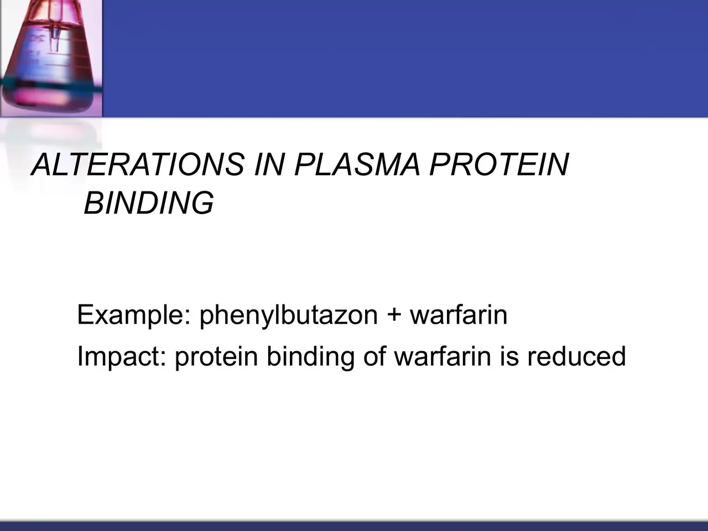
Slide 51, K15 Dasar Terapi Parenteral. Slide menulis contoh phenylbutazon + warfarin: ikatan protein warfarin berkurang.
Obat yang berinteraksi dengan fenilbutazon menyebabkan pendarahan
Lihat jawaban
a. Warfarin
Fenilbutazon Fengusir Warfarin: menggeser warfarin dari ikatan protein, warfarin bebas naik, terjadi perdarahan. Keto butuh Kecut (interaksi absorpsi), simetidin hambat metabolisme, bukan penyebab perdarahan.
Fenilbutazon menggeser warfarin dari ikatan proteinnya sehingga kadar warfarin bebas di plasma meningkat dan terjadi perdarahan. Ketokonazol berinteraksi dengan H2 bloker pada tahap absorpsi, dan cimetidine (penghambat CYP) menghambat metabolisme teofilin.
Slide 51, K15 Dasar Terapi Parenteral. Slide Alterations in plasma protein binding: contoh phenylbutazon + warfarin, ikatan protein warfarin berkurang.
Manakah obat yang dapat berinteraksi dengan warfarin dan menimbulkan pendarahan?
Lihat jawaban
d. Fenilbutazon
Fenilbutazon Fengusir Warfarin: menggeser warfarin dari ikatan protein plasma, warfarin bebas naik, terjadi perdarahan. Rifampisin kebalikannya: induktor enzim yang melemahkan warfarin.
Fenilbutazon menggeser warfarin dari ikatan protein plasma (dan menghambat metabolismenya) sehingga kadar warfarin bebas naik dan risiko perdarahan meningkat. Rifampisin justru menginduksi enzim dan menurunkan efek warfarin.
Kunci dari berkas soal.
Catatan: Simetidin (c) dan ketokonazol (a) sebenarnya juga dapat meningkatkan efek warfarin lewat hambatan metabolisme; kunci berkas mengikuti contoh klasik dari kuliah (pergeseran ikatan protein oleh fenilbutazon).
Slide 51, K15 Dasar Terapi Parenteral. Slide Alterations in plasma protein binding: phenylbutazon + warfarin, ikatan protein warfarin berkurang.
Manakah obat yang dapat berinteraksi dengan warfarin dan menimbulkan pendarahan?
Lihat jawaban
b. Fenilbutazon
Fenilbutazon Fengusir Warfarin: warfarin digeser dari ikatan protein plasma, kadar bebasnya naik, terjadi perdarahan. Rifampisin kebalikannya: Rif = Rontokkan warfarin lewat induksi enzim, efek antikoagulan turun.
Fenilbutazon menggeser warfarin dari ikatan protein plasma (dan menghambat metabolismenya), sehingga kadar warfarin bebas naik dan risiko perdarahan meningkat. Rifampisin justru menginduksi metabolisme warfarin sehingga efek antikoagulannya turun.
Catatan: Secara farmakologi ketokonazol (penghambat CYP) juga dapat meningkatkan efek warfarin, tetapi contoh yang diajarkan di slide kuliah adalah fenilbutazon + warfarin.
Slide 51, K15 Dasar Terapi Parenteral. Slide Alterations in plasma protein binding: contoh phenylbutazon + warfarin, ikatan protein warfarin berkurang.
Cocok langsung: Fakta yang sama: pembesaran prostat jinak terjadi di zona transisional.
Satu konsep: Sama-sama soal BPH, tetapi yang ditanyakan penyebab retensi.
Kerjakan 3 soal Sumatif
2023 · Soal 56 Cocok langsung
Seorang pria 69 tahun datang dengan inkontinensia urin. Pemeriksaan colok dubur menunjukkan pembesaran prostat dengan batas atas tidak teraba, konsistensi keras, tanpa nodul atau indurasi. PSA 0,7 ng/mL. Berdasarkan data tersebut, di mana letak pembesaran prostat yang menyebabkan inkontinensia pada pasien ini?
Lihat jawaban
e. Zona transisional
Transisi menekan Tengah, Perifer jadi Penyakit ganas: prostat besar tanpa nodul, PSA 0,7 = BPH dari zona transisional periuretra yang menekan uretra sampai retensi dengan inkontinensia overflow. Zona perifer tempat karsinoma (teraba nodul).
Pembesaran prostat tanpa nodul dengan PSA normal sesuai BPH, yang berasal dari zona transisional (periuretra) sehingga menekan uretra dan menimbulkan retensi dengan inkontinensia overflow. Karsinoma prostat umumnya berasal dari zona perifer.
Catatan: Berkas menulis 'konsistensi keras'; pada BPH konsistensi biasanya kenyal. Kunci tetap sesuai.
Slide 4, K17 BPH. Slide Overview of BPH menulis BPH sebagai peningkatan sel epitel dan stroma di area periuretra prostat (zona transisional tidak disebut dengan nama).
Pasien laki-laki 78 tahun tidak bisa BAK. Penyebab terseringnya adalah
Lihat jawaban
a. Hipertrofi prostat
Kakek tak bisa pipis = Kelenjar prostat: retensi urin pada laki-laki tua paling sering karena BPH. Usia = Persen: usia 80 tahun hampir 90% pria punya BPH.
Retensi urin akut pada laki-laki usia lanjut (>50 tahun) paling sering disebabkan pembesaran prostat jinak (BPH).
Slide 4, K17 BPH. Slide Overview of BPH: pada usia 80 tahun 90% pria terdiagnosis BPH, dan pembesaran prostat menghambat aliran urin (bladder outlet obstruction).
Seorang lelaki berusia 78 tahun susah mengeluarkan urin. Penyebab terseringnya adalah
Lihat jawaban
b. Pembesaran prostat jinak
Kakek susah pipis = Kelenjar prostat: laki-laki usia lanjut dengan sulit berkemih paling sering karena pembesaran prostat jinak (WISH susah pipis), bukan batu atau tumor.
Laki-laki usia lanjut dengan kesulitan mengeluarkan urin paling sering disebabkan pembesaran prostat jinak.
Catatan: Hanya tiga pilihan yang diingat. Soal serupa: nomor 15.
Slide 4, K17 BPH. Slide Overview of BPH: pada usia 80 tahun 90% pria terdiagnosis BPH, dan pembesaran prostat menghambat aliran urin (bladder outlet obstruction).
OAINS adalah obat analgesic yang menghambat enzim siklooksigenase dan dapat berinteraksi dengan diuretic sehingga efektivitas diuretic untuk menurunkan tekanan darah dapat berkurang.
Sumatif 2023 no. 17Cocok langsungK13 Diuretik dan Antidiuretik, tanpa nomor slide
Sumatif 2021 no. 38Cocok langsungK13 Diuretik dan Antidiuretik, tanpa nomor slide
Sumatif 2020 no. 29Cocok langsungK13 Diuretik dan Antidiuretik, tanpa nomor slide
Sumatif 2020 no. 61Cocok langsungK13 Diuretik dan Antidiuretik, tanpa nomor slide
Sumatif 2018 no. 11Cocok langsungK13 Diuretik dan Antidiuretik, tanpa nomor slide
Sumatif 2017 no. 27Cocok langsungK13 Diuretik dan Antidiuretik, tanpa nomor slide
Cocok langsung: Fakta yang sama: OAINS mengurangi efek diuretik dalam menurunkan tekanan darah.
Kerjakan 6 soal Sumatif
2023 · Soal 17 Cocok langsung
Pria 45 tahun didiagnosis hipertensi stadium 1. Dokter memberikan diuretik tiazid (hidroklorotiazid 25 mg/hari). Obat apa yang dapat mengurangi efektivitas diuretik tersebut?
Lihat jawaban
a. OAINS
NSAID mematikan diuretik: OAINS menghambat PGE2 ginjal sehingga Na dan air tertahan, efek HCT turun. Digitalis tidak melemahkan tiazid, malah makin toksik bila tiazid menimbulkan hipokalemia.
OAINS menghambat sintesis prostaglandin ginjal sehingga menyebabkan retensi natrium dan air serta menurunkan efek diuretik dan antihipertensi tiazid. Digitalis justru menjadi lebih toksik bila tiazid menimbulkan hipokalemia, bukan mengurangi efeknya.
Seorang pasien laki-laki, 45 tahun didiagnosis hipertensi derajat 1. Dokter memberikan obat hidroklorotiazid 25 mg/hari. Obat apa yang dapat mengurangi efektivitas diuretik tersebut?
Lihat jawaban
d. OAINS
NSAID mematikan diuretik: OAINS menghambat PGE2 ginjal, Na dan air tertahan, efek HCT turun. ACE inhibitor justru sinergis dengan tiazid.
OAINS menghambat sintesis prostaglandin ginjal sehingga terjadi retensi natrium dan air, yang mengurangi efek diuretik dan antihipertensi tiazid.
Kunci tidak ada di berkas dan dasarnya tidak ada di slide K10-K20, jawaban dari pengetahuan umum. Materi: K13 Diuretik dan Antidiuretik.
Seorang pasien laki-laki, 45 tahun didiagnosis hipertensi derajat 1. Dokter memberikan obat hidroklorotiazid 25 mg/hari. Obat apa yang dapat mengurangi efektivitas diuretik tersebut?
Lihat jawaban
d. OAINS (NSAID)
NSAID mematikan diuretik: hambat prostaglandin yang membuka arteriol aferen (NSAID Nutup Aferen), GFR turun, retensi Na dan air, efek HCT berkurang. Kuinidin berinteraksi dengan digoksin, bukan tiazid.
NSAID menghambat sintesis prostaglandin yang berperan dalam vasodilatasi arteriol aferen, sehingga aliran darah ginjal dan GFR turun dan efek semua diuretik berkurang. Kuinidin berinteraksi dengan digoksin (menghambat P-gp), bukan dengan tiazid.
Pasien 45 tahun, hipertensi stage 1, diberi obat thiazid (hidroklorotiazid 25 mg/kgBB). Obat apa yang bisa mengganggu kerja thiazid?
Lihat jawaban
e. NSAIDs
NSAID mematikan diuretik: hambat COX, prostaglandin vasodilator turun, aferen menyempit (NSAID Nutup Aferen), GFR turun sehingga efek tiazid berkurang. Parasetamol, omeprazol, alopurinol tidak.
NSAID menghambat COX sehingga produksi prostaglandin vasodilator turun, terjadi vasokonstriksi, aliran darah ginjal dan GFR turun, dan efek diuretik tiazid berkurang.
Laki-laki, 45 tahun, didiagnosis hipertensi derajat 1. Dokter memberikan obat hidroklorotiazid 25 mg/hari. Obat apa yang dapat mengurangi efektivitas diuretik tersebut?
Lihat jawaban
d. OAINS (NSAID)
NSAID mematikan diuretik: OAINS menghambat PGE2 ginjal sehingga Na dan air tertahan dan aliran darah ginjal turun, efek HCT melemah. ACE-inhibitor justru pasangan tiazid (A + D), bukan penghambat.
OAINS menghambat sintesis prostaglandin ginjal sehingga terjadi retensi natrium dan air serta berkurangnya aliran darah ginjal, yang melemahkan efek diuretik dan antihipertensi tiazid. ACE-inhibitor justru bersinergi dengan tiazid.
Laki-laki, 45 tahun, didiagnosa hipertensi derajat 1. Dokter memberikan obat hidroklorotiazid 25 mg/hari. Obat apa yang dapat mengurangi efektivitas diuretik tersebut?
Lihat jawaban
d. OAINS
NSAID Nutup Aferen: OAINS menghambat prostaglandin ginjal, Na dan air tertahan, aliran darah ginjal turun, efek tiazid melemah. Kuinidin dan digitalis berinteraksi lewat hipokalemia (aritmia), bukan menurunkan efektivitas.
OAINS menghambat sintesis prostaglandin ginjal sehingga terjadi retensi natrium dan air serta penurunan aliran darah ginjal, yang mengurangi efek diuretik dan antihipertensi tiazid. Kuinidin dan digitalis berinteraksi dengan tiazid lewat hipokalemia yang meningkatkan risiko aritmia, bukan dengan menurunkan efektivitasnya.
Seorang pasien dengan PGK memiliki kreatinin dasar 2,0 mg/dl. Setelah mengalami infeksi berat, kreatinin meningkat menjadi 3,0 mg/dl dalam 48 jam. Karena pasien telah memiliki PGK, perubahan kreatinin tersebut tidak dapat didiagnosis sebagai AKI.
Satu konsep: Sama-sama soal kenaikan kreatinin pada AKI, tetapi yang diuji stadiumnya.
Kerjakan 1 soal Sumatif
2021 · Soal 48 Satu konsep
Pasien urinasi 350 mL dalam 24 jam terakhir. Diketahui dia sudah menerima Renal Replacement Therapy. Peningkatan kreatinin dari 1,9 jadi 3 sekian. Stadiumnya berapa?
Lihat jawaban
c. AKI AKIN 3
Tiga jalan tol ke stage 3: SCr ≥4, sudah RRT, atau anuria ≥12 jam. Pasien ini sudah menerima RRT, jadi stage 3 walaupun kreatinin 1,9 ke 3 sekian hanya setara stage 1.
Pasien yang sudah memerlukan renal replacement therapy langsung masuk AKI stadium 3, berapa pun kenaikan kreatininnya. Kenaikan 1,9 ke 3 sekian saja (kurang dari 2 kali) hanya setara stadium 1.
Kunci tidak ada di berkas, jawaban ditentukan dari slide kuliah. Materi: K18 Penyakit Ginjal Akut.
Catatan: Angka kreatinin kedua tidak diingat tepat oleh penyusun ('3, sekian').
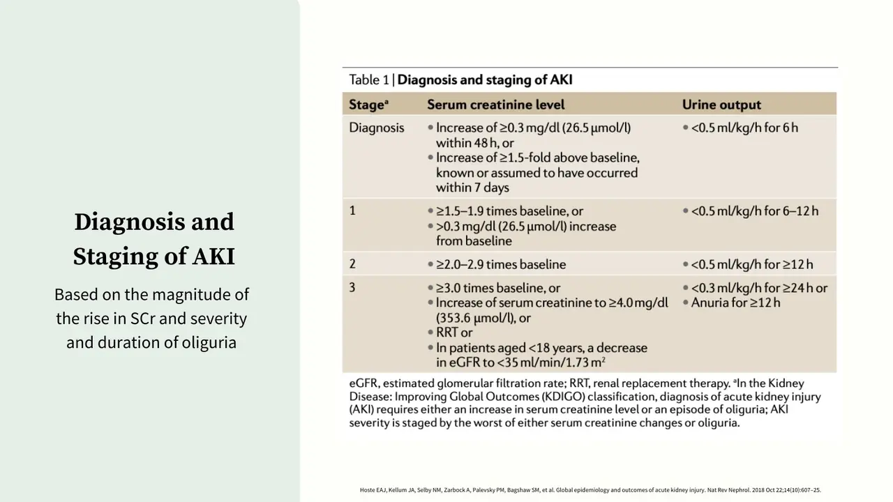
Slide 3, K18 Penyakit Ginjal Akut. Tabel staging AKI di slide memasukkan RRT (renal replacement therapy) sebagai kriteria stadium 3.
Satu konsep: Halamannya sama, tentang rute intratekal, tetapi yang diuji sifat rutenya.
Kerjakan 1 soal Sumatif
2023 · Soal 19 Satu konsep
Pernyataan mana yang benar mengenai pemberian obat intratekal?
Lihat jawaban
d. Melewati sawar darah-otak
Teka = Tembus tembok otak: intratekal masuk langsung ke LCS sehingga melewati sawar darah-otak. Volumenya kecil, sediaan khusus tanpa pengawet, dan harus oleh tenaga terlatih, jadi pilihan lain salah.
Rute intratekal memasukkan obat langsung ke cairan serebrospinal sehingga melewati (mem-bypass) sawar darah-otak. Volumenya kecil, hanya untuk sediaan tertentu tanpa pengawet, dan harus dilakukan tenaga terlatih.
Slide 25, K15 Dasar Terapi Parenteral. Slide Intrathecal: injeksi intraspinal/subarachnoid untuk efek cepat atau lokal pada otak, medula spinalis, dan meningen (sawar darah-otak tidak disebut eksplisit).
Dua obat dengan dosis yang sama diberikan secara intravena dan oral. Karena bioavailabilitas intravena mencapai 100%, dosis intravena yang sama pasti menghasilkan efek terapi yang lebih kuat daripada dosis oral.
Slide soal ini: K15 Dasar Terapi Parenteral, slide 17
Pasien dengan AKI yang sakit kritis dan menjalani continuous kidney replacement therapy (CKRT) atau prolonged intermittent kidney replacement therapy (PIKRT) dapat memerlukan protein 1,5 hingga 1,7 g/kg per hari
Slide soal ini: K16 Nutrisi pada PGK dan AKI, slide 9
Satu konsep: Sama-sama soal protein pada AKI, tetapi kondisi dan angkanya berbeda.
Kerjakan 3 soal Sumatif
2023 · Soal 71 Satu konsep
Seorang wanita berusia 57 tahun dirawat di ICU setelah menjalani operasi kanker serviks. Kondisinya stabil, namun terdapat gangguan fungsi ginjal dengan produksi urin yang masih adekuat. Hasil laboratorium menunjukkan: ureum 185, kreatinin 1,9, dan albumin 2,7 g/dL. Pasien tidak memiliki riwayat penyakit ginjal, diabetes, atau hipertensi. Berapa kebutuhan asupan protein yang sesuai untuk pasien ini?
Lihat jawaban
d. 0,8-1 g/kgBB
Delapan sampai Satu, tak lebih dari Satu: AKI tanpa sakit kritis dan tanpa KRT butuh protein 0,8-1,0 g/kg/hari. Protein naik seiring Parahnya: KRT intermiten 1,3-1,5, CKRT 1,5-1,7, sedangkan 0,6-0,8 milik PGK pradialisis.
Menurut kuliah nutrisi (ESPEN), AKI tanpa sakit kritis dan tanpa terapi pengganti ginjal membutuhkan protein 0,8-1,0 g/kgBB/hari. Kebutuhan naik menjadi 1,3-1,5 pada dialisis intermiten dan 1,5-1,7 pada CKRT, sedangkan 0,6-0,8 untuk PGK stabil.
Catatan: Pasien dirawat di ICU; bila dianggap sakit kritis tanpa terapi pengganti ginjal, slide menyebut mulai 1 g/kg lalu naik bertahap ke 1,3 g/kg (pilihan a). Kunci berkas menganggap pasien stabil (tidak kritis).
Slide 9, K16 Nutrisi pada PGK dan AKI. Slide PROTEIN menulis pasien rawat dengan AKI tanpa acute/critical illness: 0.8-1.0 g/kg BW/d (dengan critical illness tanpa KRT: mulai 1 g/kg lalu naik sampai 1.3 g/kg).
Protein maksimal pada pasien dengan gagal ginjal akut
Lihat jawaban
e. 1,0 mg/kgBB
Delapan sampai Satu, tak lebih dari Satu: AKI tanpa sakit kritis mendapat protein 0,8-1,0 g/kg/hari, jadi maksimal 1,0. Angka baru naik bila sakit kritis atau KRT.
Menurut ESPEN 2021 di slide, pasien AKI tanpa sakit kritis mendapat protein 0,8-1,0 g/kgBB/hari, sehingga batas atasnya 1,0 g/kgBB/hari. Kebutuhan baru naik (1,3 sampai 1,7 g/kgBB/hari) bila sakit kritis atau menjalani terapi pengganti ginjal.
Ada laki-laki yang mengalami AKI karena kecelakaan. Berapakah rekomendasi asupan protein pada kondisi tersebut?
Lihat jawaban
d. 1-1,2 g/kgBB
Protein naik seiring Parahnya: AKI pascakecelakaan termasuk sakit akut, mulai 1 g/kg lalu naik sampai 1,3 (ESPEN), paling dekat dengan 1-1,2. Pradialisis = Pelit protein: angka 0,6-0,8 milik PGK stabil, bukan AKI.
Menurut ESPEN 2021 di slide kuliah, AKI dengan sakit akut atau kritis tanpa terapi pengganti ginjal mulai 1 g/kgBB/hari lalu naik bertahap sampai 1,3. Angka 0,6-0,8 berlaku untuk PGK stabil, dan lebih dari 1,5 untuk CKRT atau PIKRT.
Koreksi: Kunci berkas c (0,6-0,8) diganti ke d. Di slide 9 angka 0,6-0,8 tidak ada untuk AKI. Rentang 1-1,2 tidak persis sama dengan ESPEN, tetapi paling dekat. Pilihan E tidak diingat penyusun, dan satuan di berkas tertulis "kg/BB", maksudnya g/kgBB/hari.
Slide 9, K16 Nutrisi pada PGK dan AKI. Slide PROTEIN (ESPEN 2021) menulis AKI tanpa sakit akut/kritis 0,8-1,0 g/kgBB/hari dan AKI dengan sakit kritis tanpa KRT mulai 1 g/kgBB/hari naik sampai 1,3; angka 0,6-0,8 tidak ada untuk AKI.
Satu konsep: Sama-sama soal pielonefritis kronik, tetapi yang diuji diagnosis atau gambarannya, bukan etiologi.
Kerjakan 6 soal Sumatif
2023 · Soal 61 Satu konsep
Seorang pria 56 tahun mengalami nyeri pinggang kanan kronik. Setelah dilakukan nefrektomi, hasil mikroskopik menunjukkan sklerosis global difus dengan infiltrasi sel inflamasi limfoplasmasitik pada interstisium, terutama di pelvis renalis. Apa diagnosis yang paling sesuai?
Lihat jawaban
a. Pielonefritis kronik (Chronic pyelonephritis)
Pielo kronik = Parut: radang limfoplasmasitik interstisial yang dominan di pelvis renalis + sklerosis glomerulus sekunder = pielonefritis kronik. Kata pelvis adalah kuncinya; GN kresen menunjukkan Bulan sabit = Bowman Banjir sel, bukan radang pelvis.
Radang kronik limfoplasmasitik di interstisium yang dominan di pelvis dan kaliks, dengan sklerosis glomerulus sekunder, adalah gambaran pielonefritis kronik. Glomerulonefritis kresen ditandai proliferasi ekstrakapiler, bukan radang pelvis.
Slide 99, K12 PA 2: Vaskular, Tubulus, Interstisium. Slide memperlihatkan mikrograf Pelvic Inflammation in Pyelonephritis dengan sebukan padat sel radang kronik di bawah urotel pelvis.
Seorang pria berusia 56 tahun datang dengan nyeri kronik di pinggang kanan. Setelah pemeriksaan lengkap, diputuskan dilakukan nefrektomi. Spesimen dikirim ke patologi anatomi. Pemeriksaan makro dan mikro menunjukkan sklerosis global difus dengan infiltrasi sel inflamasi limfoplasmasitik di interstisium, terutama pada pelvis renalis. Pernyataan manakah yang benar mengenai diagnosis pasien ini?
Lihat jawaban
e. Kelainan ditemukan di semua kompartemen ginjal
Akut = Abses neutrofil, Kronik = Komplit semua kompartemen: pielonefritis kronik lanjut mengenai tubulus (tiroidisasi), interstisium, glomerulus, dan pembuluh. Pengecoh: kresen milik RPGN, streptokokus milik APSGN, fusi kutub milik ginjal tapal kuda.
Diagnosisnya pielonefritis kronik, yang pada tahap lanjut mengenai semua kompartemen: tubulus (atrofi, tiroidisasi), interstisium (fibrosis dan radang), glomerulus (sklerosis), dan pembuluh darah. Pilihan a adalah GN kresentik, b adalah GN pasca-streptokokus, dan d adalah ginjal tapal kuda.
Slide 94, K12 PA 2: Vaskular, Tubulus, Interstisium. Slide Chronic pyelonephritis menulis kelainan tubulointerstisial kronik dengan radang dan jaringan parut yang melibatkan kaliks dan pelvis; frasa semua kompartemen tidak tertulis.
Laki-laki berusia 56 tahun mengalami nyeri pinggang kanan menahun, dilakukan nefrektomi untuk dilakukan pemeriksaan patologi anatomi dan ditemukan gambaran sklerosis global difus dan limfoplasmasitik di bagian interstisial pelvis renalis. Apa diagnosis dari kondisi tersebut?
Lihat jawaban
b. Pyelonephritis kronik
Pielo kronik = Parut: nyeri pinggang menahun, radang limfoplasmasitik interstisial di pelvis renalis, glomerulus sklerosis global = pielonefritis kronik (tubulus kadang menyamar jadi tiroid). Glomerulonefritis dan GN kresentik tidak mengenai pelvis-kaliks.
Pielonefritis kronik adalah kelainan tubulointerstisial kronik dengan inflamasi kronik (limfosit dan sel plasma) dan parut ginjal yang melibatkan kaliks dan pelvis, pada tahap lanjut disertai sklerosis glomerulus. Glomerulonefritis tidak mengenai pelvis dan kaliks.
Slide 94, K12 PA 2: Vaskular, Tubulus, Interstisium. Slide Chronic pyelonephritis: kelainan tubulointerstisial kronik dengan inflamasi kronik dan parut ginjal yang melibatkan kaliks dan pelvis.
Pasien berusia 54 tahun mengalami nyeri pinggang lalu dinefrektomi. Patologi anatomi dari pemeriksaan makroskopis dan mikroskopis menunjukkan adanya sklerosis global difus dengan peradangan sel infiltratif limfoplasmasitik interstisial pada area pelviokaliks. Apakah yang berhubungan dengan diagnosis penyakit tersebut?
Lihat jawaban
d. Terjadi di semua kompartemen ginjal
Akut = Abses neutrofil, Kronik = Komplit semua kompartemen: pielonefritis kronik lanjut mengenai tubulus, interstisium, pelviokaliks, pembuluh, sampai glomerulus. Streptokokus = GN pascainfeksi, gagal berpisah kutub = ginjal tapal kuda, proliferasi ekstrakapiler = GN kresentik.
Diagnosisnya pielonefritis kronik, yang pada tahap lanjut mengenai semua kompartemen ginjal: tubulus atrofi atau melebar (thyroidization), interstisium meradang dan fibrosis, kaliks dan pelvis berubah bentuk, pembuluh darah menebal, dan glomerulus menjadi sklerotik. Pilihan lain menggambarkan GN pasca streptokokus, ginjal tapal kuda, dan GN kresentik.
Slide 94, K12 PA 2: Vaskular, Tubulus, Interstisium. Slide Chronic pyelonephritis: inflamasi tubulointerstisial kronik dan parut ginjal disertai keterlibatan kaliks dan pelvis (slide tidak menulis kata semua kompartemen).
Seorang laki-laki 45 tahun memiliki keluhan sakit pinggang. PF: nyeri ketok costovertebral (+). Setelah pemeriksaan lengkap akhirnya dilakukan nefrektomi. Dari hasil nefrektomi, dilakukan biopsi ginjal dan diamati di bawah mikroskop. Ditemukan sebagian tubulus hilang, sebagian atrofi, dan mengalami tiroidisasi. Terdapat sebukan sel radang. Apa diagnosisnya?
Lihat jawaban
c. Pielonefritis kronik
Ginjal menyamar jadi tiroid: tubulus atrofi dan melebar berisi colloid cast (tiroidisasi) + radang kronik = pielonefritis kronik. Akut = Abses neutrofil, jadi pielonefritis akut tidak cocok.
Atrofi tubulus, tubulus melebar berisi colloid cast (tiroidisasi), dan sebukan radang kronik adalah gambaran khas pielonefritis kronik. Pielonefritis akut ditandai neutrofil dan abses.
Seorang laki-laki 45 tahun memiliki keluhan sakit pinggang. PF: nyeri ketok costovertebral (+). Setelah pemeriksaan lengkap akhirnya dilakukan nefrektomi. Dari hasil nefrektomi, dilakukan biopsi ginjal dan diamati di bawah mikroskop. Ditemukan sebagian tubulus hilang, sebagian atrofi, dan mengalami tiroidisasi. Terdapat sebukan sel radang. Apa diagnosisnya?
Lihat jawaban
c. Pyelonefritis kronik
Ginjal menyamar jadi tiroid: tiroidisasi (tubulus melebar berisi colloid cast) dengan atrofi tubulus dan sebukan radang kronik. Pielo kronik = Parut, sedangkan akut = neutrofil dan abses. Nefritis tubulointerstisial terlalu umum.
Atrofi tubulus, tubulus melebar berisi colloid cast (tiroidisasi), dan sebukan radang kronik adalah gambaran khas pielonefritis kronik. Pielonefritis akut ditandai neutrofil dan abses. Pielonefritis kronik memang termasuk kelompok nefritis tubulointerstisial, tetapi pilihan c lebih spesifik.
Koreksi: Kunci berkas a (tubulointerstitial nephritis) diganti ke c, sama dengan soal yang sama di 2021 no. 57. Penyusun berkas menambahkan bahwa seingatnya ada temuan tentang glomerulus juga, tetapi lupa.
Slide 95, K12 PA 2: Vaskular, Tubulus, Interstisium. Slide Morphology pielonefritis kronik menulis tubulus atrofi di sebagian area dan tubulus melebar berisi colloid cast (thyroidization); slide ini mendukung pilihan c.
Seorang perempuan berusia 29 tahun mengalami disuria berulang. Kultur urin menunjukkan E. coli yang resisten terhadap antibiotik yang sebelumnya diberikan. Pasien masih stabil dan tidak menunjukkan tanda sepsis. Pemilihan antibiotik berikutnya sebaiknya mempertimbangkan hasil kultur dan uji kepekaan antimikroba.
Slide soal ini: K18 Infeksi Saluran Kemih, slide 16
Satu konsep: Sama-sama soal sistitis berulang, tetapi yang diuji pencegahan.
Kerjakan 1 soal Sumatif
2023 · Soal 57 Satu konsep
Seorang wanita 55 tahun datang dengan sistitis berulang (>3 kali/tahun). Apa yang direkomendasikan untuk pencegahan?
Lihat jawaban
e. Pemberian antibiotik dosis rendah secara terus-menerus (profilaksis)
Terus, Habis Hubungan, Hasil kultur: tiga pola profilaksis ISK berulang; jawabannya yang Terus = antibiotik dosis rendah kontinu. Vitamin C, pantang susu, dan ceftriaxone IV tiap 6 bulan tidak termasuk strategi ini.
Pada ISK berulang, bila tindakan non-antibiotik gagal, diberikan profilaksis antibiotik dosis rendah kontinu (atau pascakoitus) yang terbukti menurunkan kekambuhan.
Cocok langsung: Fakta yang sama: uretrografi memakai kontras iodium, bukan barium.
Satu konsep: Sama-sama soal jenis kontras, tetapi konteksnya urografi intravena.
Kerjakan 5 soal Sumatif
2018 · Soal 71 Cocok langsung
Pasien 40 tahun setelah kemoterapi. Pasien mengalami trauma urethra dan perlu pemeriksaan urethrografi. Kontras yang dipakai untuk trauma adalah?
Lihat jawaban
a. Iodium
IVU = Iodin Via Urat, uretrografi juga iodin larut air: aman bila kontras bocor pada ruptur uretra. Barium dan lipiodol tidak larut air, biligrafin untuk empedu, gadolinium untuk MRI.
Uretrografi memakai kontras larut air (water soluble) yang berbasis iodium, yang aman bila terjadi ekstravasasi pada ruptur. Barium dan lipiodol tidak larut air, biligrafin adalah kontras saluran empedu, dan gadolinium adalah kontras MRI.
Seorang laki-laki, usia 40 tahun, dengan riwayat limfoma maligna post kemoterapi datang ke klinik penyakit dalam dengan keluhan nyeri berkemih dan hematuria sejak 1 minggu yang lalu. Pasien memiliki riwayat trauma tumpul abdomen sekitar 1 bulan yang lalu. Setelah pemeriksaan fisik, pasien dirujuk ke Departemen Radiologi untuk dilakukan pemeriksaan urografi intravena. Saat dilakukan skin test media kontras didapatkan skin test (+). Kontras yang dipakai untuk trauma adalah?
Lihat jawaban
a. Iodium
IVU = Iodin Via Urat: urografi intravena memakai kontras iodin larut air, dan kontras inilah yang diuji skin test. Barium untuk usus, gadolinium untuk MRI.
Urografi intravena memakai kontras iodin larut air (misalnya meglumine amidotrizoate) yang disuntikkan intravena, dan kontras inilah yang diuji dengan skin test. Barium untuk saluran cerna dan gadolinium untuk MRI.
Catatan: Kalimat pertanyaan tidak diingat tepat. Di berkas tahun 2019 pertanyaannya 'Apakah kandungan kontras media yang dipakai pada pemeriksaan radiologi tersebut?' dengan kunci iodium.
Seorang laki-laki, usia 40 tahun, dengan riwayat limfoma maligna post kemoterapi datang ke klinik penyakit dalam dengan keluhan nyeri berkemih dan hematuria sejak 1 minggu yang lalu. Pasien memiliki riwayat trauma tumpul abdomen sekitar 1 bulan yang lalu. Setelah pemeriksaan fisik, pasien dirujuk ke Departemen Radiologi untuk dilakukan pemeriksaan urografi intravena. Saat dilakukan skin test media kontras didapatkan skin test (+). Apakah kandungan kontras media yang dipakai pada pemeriksaan radiologi tersebut?
Lihat jawaban
e. Iodium
IVU = Iodin Via Urat: urografi intravena memakai kontras beriodium; skin test positif berarti alergi kontras (A-G-D). Gadolinium = MRI, barium = saluran cerna, technetium = renogram.
Urografi intravena (IVP) memakai kontras beriodium yang disuntikkan intravena dan diekskresi ginjal. Gadolinium untuk MRI, barium untuk saluran cerna, dan technetium untuk kedokteran nuklir.
Kontras media apa yang dipakai untuk pemeriksaan urografi intravena?
Lihat jawaban
e. Yodium
IVU = Iodin Via Urat: urografi intravena memakai kontras iodin larut air. Barium untuk saluran cerna, gadolinium untuk MRI, lipiodol berbasis minyak.
Urografi intravena memakai kontras iodin larut air yang disuntikkan intravena dan diekskresi ginjal (mis. meglumine amidotrizoate). Barium untuk saluran cerna, gadolinium untuk MRI.
Seorang laki-laki berusia 55 tahun dirawat karena gastroenteritis dengan muntah dan diare. Kreatinin serum meningkat dari 0,9 menjadi 1,3 mg/dl dalam 36 jam. Temuan tersebut memenuhi kriteria diagnosis AKI berdasarkan perubahan kreatinin serum.
Satu konsep: Sama-sama soal diagnosis AKI, tetapi data dan arah pertanyaannya berbeda.
Kerjakan 3 soal Sumatif
2023 · Soal 4 Satu konsep
Seorang pria berusia 65 tahun mengalami hipotensi setelah diare berat. Kadar kreatinin serum meningkat dari 0,9 menjadi 2,0 mg/dL dalam 48 jam. Kadar natrium urin <20 mEq/L. Apakah diagnosis yang paling mungkin?
Lihat jawaban
e. Gagal ginjal akut prerenal
Prerenal Pelit natrium: diare + hipotensi = Pipa suplai darah kurang, tubulus masih sehat sehingga Na urin <20. ATN Asal buang: tubulus rusak membuang Na >40, jadi bukan nekrosis tubular akut.
Hipovolemia akibat diare dengan hipotensi menurunkan perfusi ginjal, dan natrium urin <20 mEq/L menunjukkan tubulus masih utuh dan menahan natrium, khas AKI prerenal. Pada nekrosis tubular akut natrium urin biasanya >40 mEq/L karena tubulus tidak mampu mereabsorpsi.
Kunci tidak ada di berkas, jawaban ditentukan dari slide kuliah. Materi: K18 Penyakit Ginjal Akut.
Catatan: Berkas tidak menandai kunci untuk soal ini; jawaban ditentukan sendiri.
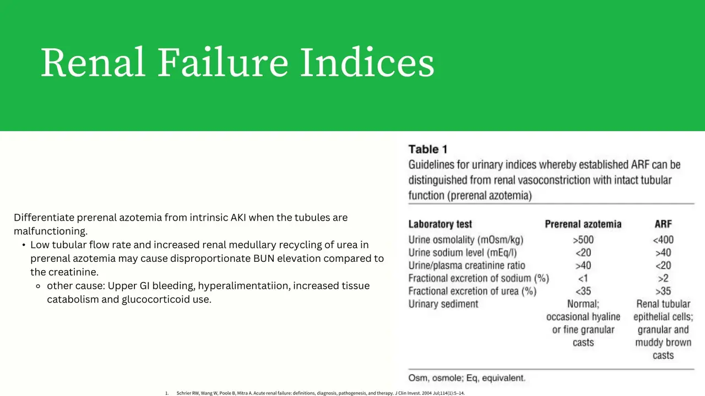
Slide 13, K18 Penyakit Ginjal Akut. Tabel Renal Failure Indices: pada prerenal azotemia urine sodium <20 mEq/L, sedangkan pada ARF (ATN) >40.
Pasien, 18 tahun, dibawa ke IGD karena kecelakaan 2 jam lalu. Pasien tidak sadar, tekanan darah 70/palpasi, akral dingin. Hematom di abdomen kuadran kanan atas dan tengah, selama di IGD tidak mengeluarkan urin. Diagnosis AKI ditegakkan berdasarkan:
Lihat jawaban
a. Anuria
Kreatinin naik atau Kencing turun: hanya dua kunci diagnosis AKI, di sini anuria. Akral dingin, tidak sadar, hematom, dan hemodinamik tidak stabil adalah tanda syok, penyebab, bukan kriteria.
Diagnosis AKI menurut KDIGO didasarkan pada kenaikan kreatinin serum atau penurunan urine output (oliguria/anuria). Akral dingin, penurunan kesadaran, dan hemodinamik tidak stabil adalah tanda syok, yaitu penyebabnya, bukan kriteria diagnosis AKI.
Laki-laki datang ke IGD dengan keadaan lemah. TD 80/60. Kreatinin 6, 2 bulan yang lalu kreatininnya masih 1. Mata cekung, turgor kulit turun, sudah tidak BAK 24 jam. Grade gagal ginjalnya?
Lihat jawaban
c. Stadium 3
Tiga jalan tol ke stage 3: kreatinin 1 ke 6 (≥3x baseline, juga ≥4 mg/dL) dan tidak BAK 24 jam (anuria ≥12 jam) sama-sama stage 3. Yang paling parah menang; KDIGO AKI tidak punya stadium 4 dan 5.
Gambaran akut (hipotensi, dehidrasi, anuria 24 jam, kreatinin naik dari 1 menjadi 6 mg/dL) sesuai gangguan ginjal akut. Menurut kriteria AKIN/KDIGO, kenaikan kreatinin 3 kali baseline atau lebih, kreatinin 4 mg/dL atau lebih, atau anuria 12 jam atau lebih adalah stadium 3.
Catatan: Berkas memberi DUA kunci: c (stadium 3, distabilo, berdasarkan AKIN) dan e (stadium 5, dicetak tebal, berdasarkan eGFR sekitar 11 mL/min dari kalkulator). Dipakai c karena stadium 1 sampai 5 berbasis eGFR hanya berlaku untuk penyakit ginjal kronik (kelainan lebih dari 3 bulan), sedangkan kasus ini akut; staging AKI hanya sampai 3.
Slide 3, K18 Penyakit Ginjal Akut. Tabel Diagnosis and staging of AKI: stadium 3 bila kreatinin 3 kali baseline atau lebih, kreatinin 4,0 mg/dL atau lebih, atau anuria 12 jam atau lebih.
Satu konsep: Sama-sama soal nefritis tubulointerstisial akibat obat, tetapi obatnya analgesik.
Kerjakan 2 soal Sumatif
2021 · Soal 72 Satu konsep
Perempuan usia 56 tahun sering konsumsi obat pereda nyeri sejak muda. Gambaran nefropati analgesik?
Lihat jawaban
d. Nefritis tubulointerstisial
Papila Pertama, korteks kemudian: analgesik lama menimbulkan nekrosis papila lalu nefritis tubulointerstisial kronik. Pielonefritis dan pionefrosis butuh kuman, bukan obat.
Nefropati analgesik adalah nefritis tubulointerstisial kronik akibat toksin (obat), disertai nekrosis papila. Pielonefritis dan pionefrosis disebabkan infeksi.
Slide 73, K12 PA 2: Vaskular, Tubulus, Interstisium. Slide menulis analgesic nephropathy ditandai secara morfologi oleh chronic tubulointerstitial nephritis dengan nekrosis papila.
Seorang perempuan berusia 56 tahun datang ke RS dengan keluhan nyeri pinggang, setelah dilakukan anamnesis pasien ini mengaku sering minum obat-obatan pengurang rasa sakit sejak masih muda. Setelah dilakukan pemeriksaan diputuskan untuk dilakukan nefrektomi dan gambarannya sesuai dengan nefropati analgesik. Manakah kelainan yang sesuai dengan gambaran penyakit pasien?
Lihat jawaban
d. Nefritis tubulointerstisialis
Papila Pertama, korteks kemudian: analgesik menghambat prostaglandin, papila iskemik dan nekrosis dulu, lalu korteks menyusul dengan nefritis tubulointerstisial kronik. Glomerulosklerosis bukan pola nefropati analgesik.
Nefropati analgesik: penghambatan prostaglandin menimbulkan jejas iskemia dan nekrosis papiler, kemudian diikuti nefritis tubulointerstisial kronik di korteks.
Pada pasien dengan gangguan fungsi ginjal, dosis muat digoksin perlu diturunkan menjadi 50%nya karena adanya penurunan volume of distribution digoksin.
Slide soal ini: K15 Dasar Terapi Parenteral, slide 48
Satu konsep: Sama-sama soal digoksin pada gangguan ginjal, tetapi tidak menyebut dosis muat.
Kerjakan 4 soal Sumatif
2020 · Soal 16 Cocok langsung
Obat apa di bawah ini yang memerlukan penyesuaian dosis muat dan dosis pemeliharaan pada pasien dengan gangguan fungsi ginjal?
Lihat jawaban
b. Digoksin
Digoksin = Dua masalah: dibuang lewat ginjal DAN indeks terapinya sempit, jadi dosis muat dan pemeliharaan disesuaikan. Ampisilin Aman lebar: betalaktam indeks terapi lebar; parasetamol dan ibuprofen tidak perlu koreksi.
Digoksin (seperti aminoglikosida) diekskresi terutama lewat ginjal dan berindeks terapi sempit sehingga dosisnya harus disesuaikan. Golongan penisilin seperti ampisilin berindeks terapi lebar sehingga tidak perlu; parasetamol/asetaminofen dan ibuprofen juga tidak.
Obat apa di bawah ini yang memerlukan penyesuaian dosis muat dan dosis pemeliharaan pada pasien dengan gangguan fungsi ginjal?
Lihat jawaban
b. Digoksin
Digoksin = Dua dosis Dipangkas: indeks terapi sempit, diekskresi ginjal, dan volume distribusinya mengecil pada gagal ginjal, jadi dosis muat DAN pemeliharaan diturunkan. Parasetamol dan asetaminofen obat yang sama, petunjuk keduanya pengecoh.
Digoksin berindeks terapi sempit, diekskresi terutama lewat ginjal, dan volume distribusinya berkurang pada gagal ginjal, sehingga dosis muat maupun dosis pemeliharaan harus diturunkan. Menurut catatan berkas, aminoglikosida juga termasuk obat yang kedua dosisnya perlu disesuaikan.
Obat yang memerlukan penyesuaian dosis pada pasien gangguan fungsi ginjal
Lihat jawaban
a. Digoksin
DIGoksin = DIbuang Ginjal, jendela sempit: ekskresi utama lewat ginjal dan indeks terapinya sempit, jadi dosis muat dan pemeliharaan wajib disesuaikan. Amoksisilin dan ampisilin juga lewat ginjal, tetapi indeksnya lebar.
Digoksin terutama diekskresi lewat ginjal dan indeks terapinya sempit, sehingga dosis muat dan dosis pemeliharaannya harus disesuaikan pada gangguan fungsi ginjal. Penisilin (amoksisilin, ampisilin) juga diekskresi ginjal tetapi indeks terapinya lebar.
Kunci tidak ada di berkas dan dasarnya tidak ada di slide K10-K20, jawaban dari pengetahuan umum.
Catatan: Soal serupa di berkas tahun 2019 dan 2020 juga berkunci digoksin. Recap K14 menyebut penisilin perlu penyesuaian dosis pada gangguan ginjal, tetapi yang dimaksud soal adalah obat berindeks terapi sempit.
Catatan sumber: Sumber mendukung digoksin, tetapi tinjauan Drug Dosing Adjustments in Patients with CKD (American Family Physician 2007) juga mencantumkan amoksisilin dan ampisilin perlu penyesuaian interval dosis, jadi pilihan b dan e tidak sepenuhnya salah.
2020 · Soal 73 Satu konsep
Obat yang perlu penyesuaian dosis pada pasien dengan gangguan fungsi ginjal
Lihat jawaban
a. Digoxin
Digoksin = Dua masalah: eliminasi utama lewat ginjal dan indeks terapi sempit, jadi perlu penyesuaian dosis. Ampisilin Aman lebar: betalaktam indeks terapi lebar; parasetamol dan amlodipin tidak perlu koreksi.
Penyesuaian dosis diperlukan untuk obat yang eliminasi utamanya di ginjal (fraksi ekskresi ginjal >= 0,5) atau berindeks terapi sempit, seperti digoksin dan aminoglikosida. Betalaktam seperti ampisilin dan amoksisilin indeks terapinya lebar, sehingga koreksi baru penting pada gangguan ginjal berat.
Satu konsep: Sama-sama soal kelainan arteriol pada hipertensi, tetapi yang diuji patofisiologi nefrosklerosis.
Kerjakan 1 soal Sumatif
2021 · Soal 58 Satu konsep
Nefrosklerosis di arteriol dan arteri berhubungan dengan hipertensi. Patofisiologinya bagaimana?
Lihat jawaban
c. Penebalan tunika media dan intima
Benign = Bening: nefrosklerosis hipertensif berupa penebalan tunika media dan intima arteri plus hialin homogen di dinding arteriol. Trombus dan kalsifikasi media bukan mekanismenya.
Pada nefrosklerosis hipertensif terjadi penebalan media dan intima arteri sebagai respons terhadap perubahan hemodinamik, serta hyaline arteriolosclerosis akibat ekstravasasi protein plasma melalui endotel yang rusak. Trombus dan kalsifikasi media bukan mekanismenya.
Catatan: Pilihan d dan e tidak diingat tepat oleh penyusun (pilihan e diberi tanda tanya, kemungkinan aslinya 'hialin akibat ekstravasasi protein plasma melalui endotel'). Bila pilihan asli berbunyi demikian, pilihan itu juga benar, jadi kunci ini kurang pasti.
Slide 14, K12 PA 2: Vaskular, Tubulus, Interstisium. Slide patologi nefrosklerosis hipertensif: arteriol menunjukkan medial and intimal thickening sebagai respons perubahan hemodinamik, serta hyaline arteriolosclerosis akibat ekstravasasi protein plasma.
Pada pasien dengan perfusi jaringan perifer yang menurun, absorpsi obat subkutan dapat melambat sehingga respons klinisnya tidak selalu sesuai dengan waktu onset yang diharapkan.
Slide soal ini: K15 Dasar Terapi Parenteral, slide 12
Seorang laki-laki berusia 72 tahun mengalami AKI setelah tiga hari diare berat. Tekanan darah 85/55 mmHg, mukosa mulut kering, dan tidak ditemukan edema. Penyebab yang paling mungkin adalah gangguan perfusi ginjal akibat hipovolemia.
Slide soal ini: K18 Penyakit Ginjal Akut, slide 19
Cocok langsung: Kasus yang sama: AKI setelah diare atau hipovolemia mengarah ke prarenal.
Satu konsep: Sama-sama soal AKI prarenal, tetapi penyebabnya trauma.
Kerjakan 6 soal Sumatif
2023 · Soal 4 Cocok langsung
Seorang pria berusia 65 tahun mengalami hipotensi setelah diare berat. Kadar kreatinin serum meningkat dari 0,9 menjadi 2,0 mg/dL dalam 48 jam. Kadar natrium urin <20 mEq/L. Apakah diagnosis yang paling mungkin?
Lihat jawaban
e. Gagal ginjal akut prerenal
Prerenal Pelit natrium: diare + hipotensi = Pipa suplai darah kurang, tubulus masih sehat sehingga Na urin <20. ATN Asal buang: tubulus rusak membuang Na >40, jadi bukan nekrosis tubular akut.
Hipovolemia akibat diare dengan hipotensi menurunkan perfusi ginjal, dan natrium urin <20 mEq/L menunjukkan tubulus masih utuh dan menahan natrium, khas AKI prerenal. Pada nekrosis tubular akut natrium urin biasanya >40 mEq/L karena tubulus tidak mampu mereabsorpsi.
Kunci tidak ada di berkas, jawaban ditentukan dari slide kuliah. Materi: K18 Penyakit Ginjal Akut.
Catatan: Berkas tidak menandai kunci untuk soal ini; jawaban ditentukan sendiri.
Slide 13, K18 Penyakit Ginjal Akut. Tabel Renal Failure Indices: pada prerenal azotemia urine sodium <20 mEq/L, sedangkan pada ARF (ATN) >40.
Nn. K, wanita berusia 30 tahun dirawat di unit gawat darurat karena dia mengalami diare parah. Tanda vital menunjukkan tekanan darah 90/75 mmHg, denyut nadi 115 bpm, frekuensi pernapasan 24 rpm, dan saturasi oksigen 98% udara ruangan. Buang air kecil terakhirnya adalah 6 jam yang lalu dengan urin pekat. Dokter mendiagnosisnya dengan kondisi syok dengan cedera ginjal akut. Apa kemungkinan besar penyebab cedera ginjalnya?
Lihat jawaban
e. Pra-renal
Pipa, Pabrik, Pembuangan: diare berat membuat pipa suplai darah kurang = prerenal. Prerenal Pelit natrium, Pekat urinnya: urin pekat berarti tubulus masih bekerja.
Diare berat menyebabkan hipovolemia dan syok sehingga perfusi ginjal turun, yaitu AKI prerenal. Urin yang pekat menunjukkan fungsi tubulus masih baik.
Kunci tidak ada di berkas, jawaban ditentukan dari slide kuliah. Materi: K18 Penyakit Ginjal Akut.
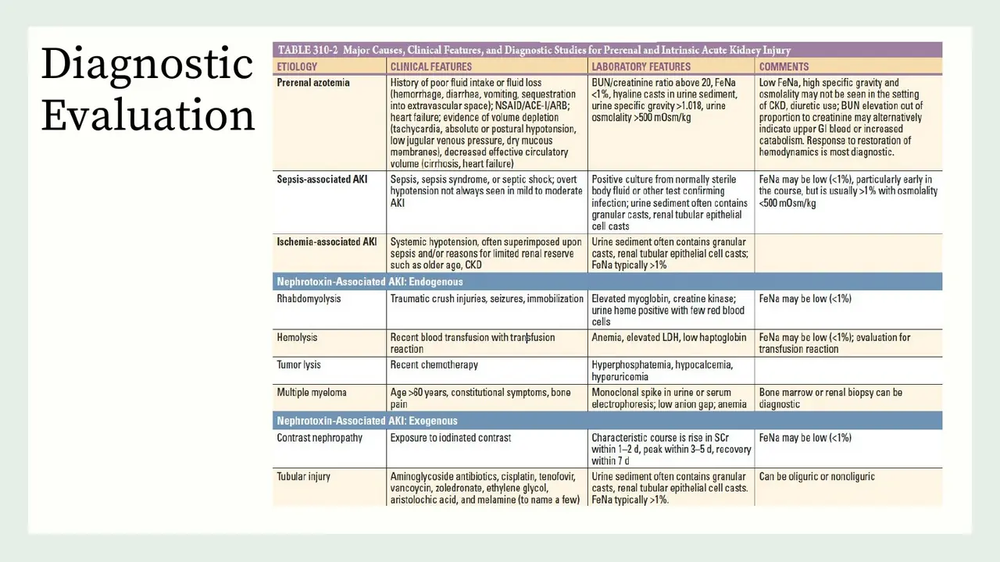
Slide 8, K18 Penyakit Ginjal Akut. Tabel slide: prerenal azotemia dengan riwayat asupan cairan kurang atau kehilangan cairan (perdarahan, diare, muntah).
Nn. K, wanita berusia 30 tahun dirawat di unit gawat darurat karena dia mengalami diare parah. Tanda vital menunjukkan tekanan darah 90/75 mmHg, denyut nadi 115 bpm, frekuensi pernapasan 24 rpm, dan saturasi oksigen 98% udara ruangan. Buang air kecil terakhirnya adalah 6 jam yang lalu dengan urin pekat. Dokter mendiagnosisnya dengan kondisi syok dengan cedera ginjal akut. Apa kemungkinan besar penyebab cedera ginjalnya?
Lihat jawaban
e. Pra-renal
Pipa, Pabrik, Pembuangan: diare berat sampai syok = pipa suplai kosong, AKI prarenal. Prerenal Pelit natrium, Pekat urinnya: tubulus masih sehat sehingga urin sedikit dan pekat.
Diare berat menyebabkan hipovolemia dan syok sehingga perfusi ginjal turun: AKI prarenal, ditandai urin sedikit dan pekat karena fungsi tubulus masih baik.
Slide 8, K18 Penyakit Ginjal Akut. Tabel Diagnostic Evaluation: prerenal azotemia didahului kehilangan cairan seperti diare, dengan hipotensi dan takikardia.
Laki-laki, 20 tahun, datang ke IGD tampak lemah. Pasien diare sejak 2 hari yang lalu, dengan frekuensi > 15 kali/hari. Pada pemeriksaan fisik didapatkan TD 80/60 mmHg, nadi 120 kali/menit, lemah, mata tampak cekung, turgor kulit kembali lambat. Pemeriksaan laboratorium: kreatinin serum 2 mg/dl. Pada hasil pemeriksaan kesehatan rutin 1 bulan sebelumnya kreatinin serum 1 mg/dl. Kondisi apa yang terjadi pada pasien?
Lihat jawaban
c. Gangguan ginjal akut prerenal
Pipa, Pabrik, Pembuangan: diare >15 kali dengan hipotensi, takikardia, mata cekung = pipa suplai darah kurang, jadi AKI prerenal. Kreatinin 1 ke 2 dalam sebulan pada orang yang sebelumnya normal = akut, bukan PGK.
Kreatinin naik dua kali lipat dalam waktu singkat pada pasien yang semula normal adalah gangguan ginjal akut, dan penyebabnya hipovolemia akibat diare berat (hipotensi, takikardia, tanda dehidrasi) sehingga perfusi ginjal turun: tipe prerenal. Tidak ada riwayat penyakit ginjal kronik maupun obstruksi.
Kunci tidak ada di berkas, jawaban ditentukan dari slide kuliah. Materi: K18 Penyakit Ginjal Akut.
Catatan: Berkas tidak menandai kunci.
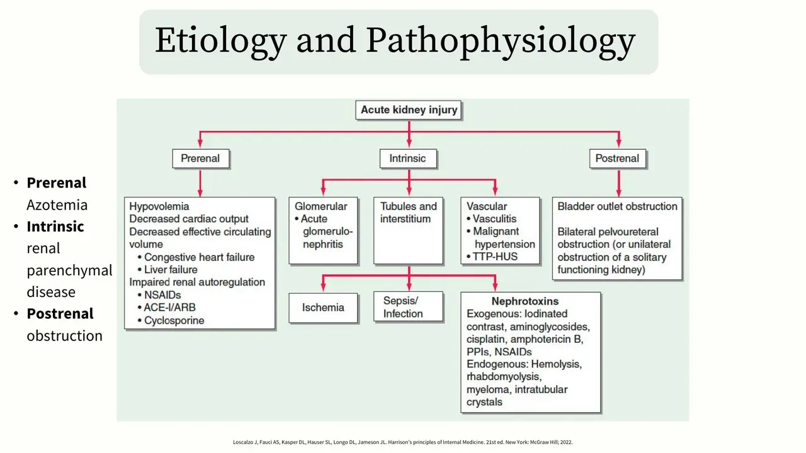
Slide 6, K18 Penyakit Ginjal Akut. Bagan etiologi AKI: prerenal disebabkan hipovolemia dan penurunan curah jantung.
Laki-laki, 20 tahun, datang ke IGD tampak lemah. Pasien diare sejak 2 hari yang lalu, dengan frekuensi > 15 kali/hari. Pada pemeriksaan fisik didapatkan TD 80/60 mmHg, nadi 120 kali/menit, lemah, mata tampak cekung, turgor kulit kembali lambat. Pemeriksaan laboratorium: kreatinin serum 2 mg/dl. Pada hasil pemeriksaan kesehatan rutin 1 bulan sebelumnya kreatinin serum 1 mg/dl. Kondisi apa yang terjadi pada pasien?
Lihat jawaban
c. Gangguan ginjal akut prerenal
Pipa, Pabrik, Pembuangan: diare hebat, hipotensi, mata cekung = pipa suplai darah kurang, jadi prerenal. Kreatinin 1 menjadi 2 dalam sebulan (7 dan 90 jadi garis) berarti akut, bukan PGK.
Kreatinin naik dua kali lipat dari nilai normal sebulan sebelumnya, jadi ini gangguan ginjal akut, bukan kronik. Diare hebat dengan hipotensi, takikardia, mata cekung, dan turgor menurun menunjukkan hipovolemia yang menurunkan perfusi ginjal, yaitu penyebab prerenal.
Slide 6, K18 Penyakit Ginjal Akut. Bagan Etiology and Pathophysiology AKI: kelompok prerenal mencakup hipovolemia, penurunan curah jantung, dan penurunan volume sirkulasi efektif.
Laki-laki, 28 tahun, dibawa ke IGD setelah kecelakaan lalu lintas. Pasien mengalami fraktur terbuka femur dextra disertai perdarahan masif. Pemeriksaan fisik: TD 80/50 mmHg, nadi 140 x/menit. Pemeriksaan laboratorium: kreatinin serum 3 mg/dl, data sebelumnya tidak tersedia. Apa diagnosis pasien yang paling mungkin?
Lihat jawaban
c. Gangguan ginjal akut prerenal
Pipa, Pabrik, Pembuangan: perdarahan masif dengan TD 80/50 dan nadi 140 = pipa suplai darah kosong, gangguan ginjal akut prerenal. Tidak ada nefrotoksin (pabrik) dan tidak ada sumbatan (pembuangan).
Perdarahan masif dengan hipotensi dan takikardia menandakan hipovolemia sehingga perfusi ginjal turun: gangguan ginjal akut prerenal. Tidak ada riwayat nefrotoksin (renal) maupun tanda obstruksi (postrenal).
Cocok langsung: Fakta yang sama: pH lambung naik menurunkan absorpsi obat asam lemah, bukan basa lemah.
Satu konsep: Sama-sama soal absorpsi obat yang dipengaruhi pH lambung.
Perlu dicek: Ketokonazol bersifat basa lemah, dan di Sumatif absorpsinya turun saat ranitidin menaikkan pH lambung. Ini tampak berbeda dengan kunci Formatif 45, jadi perjelas ke dosen bila perlu.
Kerjakan 9 soal Sumatif
2019 · Soal 80 Cocok langsung
Pernyataan di bawah ini yang BENAR untuk kondisi yang menyebabkan absorpsi obat terganggu pada pasien dengan gangguan fungsi ginjal adalah
Lihat jawaban
b. Meningkatnya pH lambung sehingga menurunkan absorpsi obat asam lemah
Urea jadi amonia, lambung jadi basa: pada uremia urea di saliva dan lambung diubah menjadi amonia, pH lambung naik, obat asam lemah lebih terionisasi sehingga absorpsi turun. Pilihan lain bicara ekskresi atau metabolisme.
Pada uremia, urea di saliva dan lambung diubah menjadi amonia sehingga pH lambung naik; obat asam lemah lebih terionisasi dan absorpsinya turun. Pilihan lain menyangkut ekskresi atau metabolisme, bukan absorpsi.
Manakah obat yang secara signifikan dapat menurunkan absorpsi ketokonazol?
Lihat jawaban
b. Ranitidin
Keto butuh Kecut: ketokonazol hanya larut di lambung yang asam; ranitidin (H2 bloker) menaikkan pH lambung sehingga disolusi dan absorpsi ketokonazol turun. Parasetamol, gentamisin, flukonazol, dan amoksisilin tidak mengubah pH lambung.
Ketokonazol memerlukan suasana asam lambung untuk larut. Ranitidin (penghambat H2) menaikkan pH lambung sehingga disolusi dan absorpsi ketokonazol menurun.
Pernyataan yang benar terkait gangguan absorbsi obat pada pasien dengan gangguan fungsi ginjal adalah ....
Lihat jawaban
a. Mual dan muntah akibat edema saluran cerna
Absorpsi = Awal di usus: gangguan absorpsi terjadi di saluran cerna, yaitu edema GI dengan mual muntah. Protein dan Volume = Distribusi, P450 = Pengolahan (metabolisme): pengecoh lain bukan tahap absorpsi.
Pada gangguan fungsi ginjal absorpsi obat menurun karena edema saluran cerna dengan mual dan muntah. Kompetisi ikatan protein, perubahan volume distribusi, dan hipoalbuminemia memengaruhi distribusi, sedangkan sitokrom P450 menyangkut metabolisme.
Apa yang menyebabkan penurunan absorbsi obat pada penyakit ginjal kronis?
Lihat jawaban
d. Edema saluran GI menyebabkan mual muntah
Absorpsi = Awal di usus: edema GI dengan mual muntah menurunkan absorpsi semua obat. Ikatan protein dan hipoalbuminemia urusan distribusi; amonia (pH lambung naik) hanya mengganggu obat bersifat asam.
Kompetisi ikatan protein dan hipoalbuminemia memengaruhi distribusi, bukan absorpsi. Edema saluran cerna dengan mual muntah menurunkan absorpsi semua jenis obat, sedangkan kenaikan amonia (pH lambung naik) hanya menurunkan absorpsi obat yang bersifat asam.
Kunci dari berkas soal.
Catatan: Penyusun mengakui pilihan C juga benar (untuk obat asam) dan memilih D karena berlaku lebih umum ("menurutku ini lebih benar, cmiiw").
Obat yang akan menurunkan absorbsi dari ketoconazole adalah?
Lihat jawaban
c. Cimetidine
Keto butuh Kecut: ketokonazol perlu asam lambung; simetidin (H2 bloker) menaikkan pH sehingga absorpsinya turun. Fenilbutazon Fengusir Warfarin (distribusi), Hidralazin = Hidran (klirens ginjal).
Ketokonazol memerlukan suasana asam lambung untuk diabsorpsi. Cimetidine (H2 bloker) menurunkan sekresi asam sehingga pH lambung naik dan absorpsi ketokonazol turun.
Catatan: Penyusun mengingat contoh di kuliah adalah ranitidine; cimetidine dipilih karena sama-sama H2 bloker.
Slide 45, K15 Dasar Terapi Parenteral. Slide Alterations in Absorption memberi contoh H-2 blockers + ketoconazole: disolusi ketoconazole turun sehingga absorpsi berkurang.
Manakah obat yang secara signifikan dapat menurunkan absorpsi ketokonazol?
Lihat jawaban
c. Ranitidin
Keto butuh Kecut: ketokonazol perlu asam lambung untuk larut; ranitidin (H2 bloker) menaikkan pH lambung sehingga absorpsinya turun bermakna.
Ketokonazol membutuhkan suasana asam lambung untuk larut dan diabsorpsi; ranitidin (antagonis H2) menaikkan pH lambung sehingga absorpsinya turun bermakna.
Kunci dari berkas soal.
Slide 45, K15 Dasar Terapi Parenteral. Slide Altered gastric pH: H-2 blockers + ketoconazole, disolusi ketokonazol menurun sehingga absorpsi berkurang.
Manakah pernyataan yang BENAR mengenai perubahan absorpsi obat pada pasien dengan gangguan fungsi ginjal?
Lihat jawaban
c. Penggunaan pengikat fosfat menurunkan absorpsi obat
Pengikat fosfat ikut Pengikat obat: kalsium karbonat untuk hiperfosfatemia ikut mengikat obat lain di usus, absorpsi turun. Pada uremia pH lambung justru naik dan edema usus menurunkan absorpsi; albumin dan CYP urusan distribusi dan metabolisme.
Pada gangguan fungsi ginjal, pengikat fosfat (misalnya kalsium karbonat) yang dipakai untuk hiperfosfatemia dapat mengikat obat lain di saluran cerna sehingga absorpsinya turun. Pada uremia pH lambung justru naik (amonia lambung meningkat), edema saluran cerna menurunkan absorpsi, sedangkan albumin dan enzim CYP berkaitan dengan distribusi dan metabolisme, bukan absorpsi.
Kunci dari berkas soal.
Catatan: Pilihan c ditebalkan di berkas. Materi ini (farmakokinetik pada gangguan ginjal) berasal dari kuliah tahun 2017 dan tidak ada di slide K10-K20 saat ini.
Manakah obat yang secara signifikan dapat menurunkan absorbsi ketokonazol?
Lihat jawaban
b. Ranitidin
Keto butuh Kecut: ketokonazol perlu asam lambung untuk larut; ranitidin (H2 bloker) menaikkan pH sehingga absorpsinya turun.
Ketokonazol membutuhkan suasana asam lambung untuk melarut. Ranitidin (H2 blocker) menaikkan pH lambung sehingga disolusi dan absorpsi ketokonazol menurun.
Cocok langsung: Fakta yang sama: penghambat reseptor alfa-1 dapat menyebabkan hipotensi ortostatik.
Satu konsep: Sama-sama soal hipotensi ortostatik karena antihipertensi, tetapi obat yang diuji nifedipin, bukan prazosin.
Kerjakan 9 soal Sumatif
2023 · Soal 83 Cocok langsung
Seorang pria berusia 71 tahun datang ke IGD dengan keluhan sulit buang air kecil selama 6 bulan yang memburuk dalam 3 minggu terakhir. Pasien mengeluh aliran urin lemah dan rasa tidak nyaman di perut bawah. Pada pemeriksaan fisik ditemukan distensi kandung kemih dengan nyeri tekan ringan, dan pada pemeriksaan colok dubur (DRE) didapatkan pembesaran prostat. Pasien diberi dua obat untuk mengatasi keluhannya. Setelah satu minggu, ia sering mengalami hidung tersumbat dan pusing saat bangun dari posisi tidur (hipotensi ortostatik). Mekanisme kerja obat yang menyebabkan hidung tersumbat dan pusing pada pasien adalah
Lihat jawaban
a. Menghambat reseptor alfa-1
Tamsulosin bikin Tumbang: blokade alfa-1 di pembuluh darah = pusing saat bangun dan hidung tersumbat (Pusing, Pingsan, Pilek). Obat kedua (5-ARI) memberi efek samping seksual, bukan hipotensi.
Penghambat alfa-1 merelaksasi otot polos leher kandung kemih dan prostat, tetapi juga menyebabkan vasodilatasi sehingga timbul hipotensi ortostatik dan kongesti hidung. Penghambat 5-alfa-reduktase memberi efek samping seksual, bukan hipotensi.
Intinya pasien BPH diberikan 2 obat. Obat apa yang bisa menyebabkan hipotensi ortostatik?
Lihat jawaban
a. Tamsulosin
Tamsulosin bikin Tumbang: blokade alfa-1 juga melemaskan pembuluh darah, pusing saat bangun (hipotensi ortostatik). -sterid = Susut: dutasterid dan finasterid mengecilkan prostat, efek sampingnya disfungsi seksual, bukan hipotensi.
Tamsulosin adalah penghambat reseptor alfa-1 yang merelaksasi otot polos prostat dan leher buli, tetapi juga pembuluh darah, sehingga dapat menimbulkan hipotensi ortostatik. Dutasteride dan finasteride (inhibitor 5-alfa reduktase) efek sampingnya disfungsi seksual.
Kunci tidak ada di berkas, jawaban ditentukan dari slide kuliah. Materi: K17 BPH.
Catatan: Soal hasil ingatan, hanya 4 pilihan yang tercatat di berkas.
Pasien dengan pembesaran prostat mendapat tatalaksana obat-obatan. Pasien mengeluh pusing atau berputar setiap berpindah posisi. Pasien diduga menderita hipotensi ortostatik. Berikut cara kerja obat yang bisa mempengaruhi keadaan tersebut.
Lihat jawaban
a. Berikatan pada reseptor alfa-1
Tamsulosin bikin Tumbang: obat BPH yang berikatan dengan reseptor alfa-1 juga melemaskan pembuluh darah, pusing setiap berpindah posisi = hipotensi ortostatik (Dosis pertama, langsung jatuh). Antimuskarinik dipakai untuk urgensi, efek khasnya bukan hipotensi.
Obat BPH yang menimbulkan hipotensi ortostatik adalah penghambat alfa-1 (tamsulosin, doxazosin, terazosin): blokade reseptor alfa-1 merelaksasi otot polos prostat dan juga pembuluh darah.
Kunci tidak ada di berkas, jawaban ditentukan dari slide kuliah. Materi: K17 BPH.
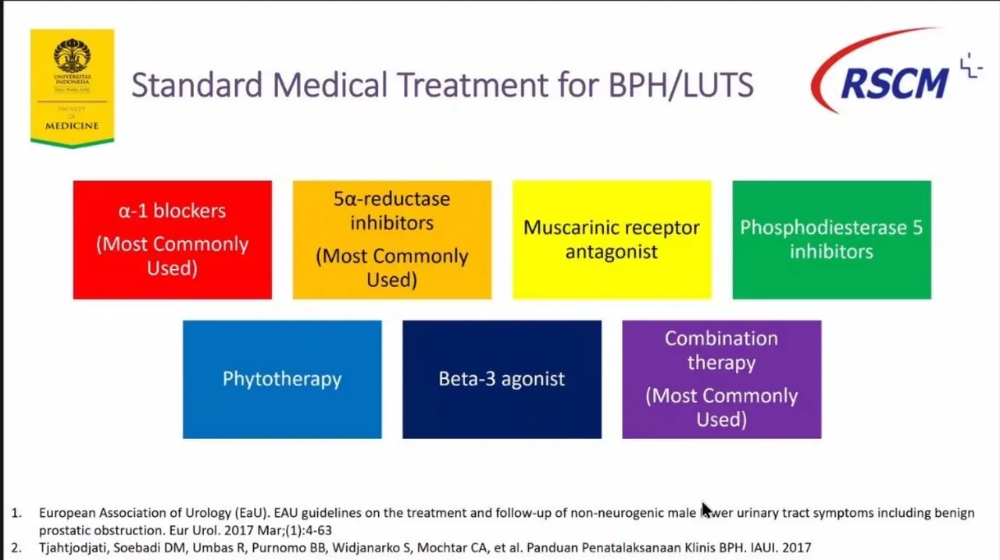
Slide 28, K17 BPH. Slide Standard Medical Treatment for BPH/LUTS menempatkan alpha-1 blockers sebagai obat yang paling sering dipakai (efek hipotensi ortostatik tidak tertulis di slide).
Seorang pria berusia 50 tahun datang ke IGD dengan keluhan sakit kepala berdenyut, terutama saat bangun tidur atau setelah berdiri dari posisi duduk (hipotensi ortostatik). Pasien memiliki riwayat hipertensi dan sedang mengonsumsi obat antihipertensi. Obat antihipertensi yang paling sering menyebabkan keluhan seperti pada pasien ini adalah:
Lihat jawaban
c. Nifedipine
Nifedipin cepat = Nyut-nyutan: vasodilator arteri kuat sehingga sakit kepala berdenyut, flushing, dan hipotensi postural, terutama sediaan kerja cepat. DHP = Dilatasi Pembuluh, bukan propranolol atau valsartan.
Nifedipine (CCB dihidropiridin) adalah vasodilator arteri kuat sehingga sering menimbulkan sakit kepala berdenyut, flushing, dan hipotensi postural, terutama sediaan kerja cepat.
Laki-laki, 50 tahun, datang ke IGD dengan keluhan sakit kepala berdenyut terutama saat bangun tidur atau setelah beranjak dari duduk (hipotensi ortostatik). Pasien mempunyai riwayat tekanan darah tinggi dan mengkonsumsi obat antihipertensi. Apa obat antihipertensi berikut yang sering menyebabkan keluhan seperti pasien di atas?
Lihat jawaban
c. Nifedipin
Nifedipin cepat = Nyut-nyutan: DHP vasodilator arteri kuat (DHP = Dilatasi Pembuluh), maka sakit kepala berdenyut, flushing, dan hipotensi saat beranjak bangun. Tiazid, valsartan, dan propranolol jarang memberi keluhan ini; α1 bloker juga khas tetapi tidak ada di pilihan.
Nifedipin adalah penghambat kanal kalsium dihidropiridin yang bekerja sebagai vasodilator arteri kuat, sehingga sering menimbulkan sakit kepala berdenyut dan hipotensi, terutama sediaan kerja cepat. Beta blocker, tiazid, dan valsartan jarang menimbulkan keluhan ini.
Kunci tidak ada di berkas dan dasarnya tidak ada di slide K10-K20, jawaban dari pengetahuan umum. Materi: K13 Antihipertensi.
Catatan: Kunci agak diragukan. Berkas 2019 (soal yang sama, no. 22) menandai nifedipin sebagai kunci, tetapi metildopa sebagai simpatolitik sentral juga dapat menyebabkan hipotensi postural. Sakit kepala berdenyut lebih mengarah ke nifedipin.
Slide 29, K13 Antihipertensi. Slide Efek samping nifedipin dan CCB DHP: hipotensi (terutama nifedipine immediate-release), takikardi, sakit kepala, flushing.
Laki-laki, 50 tahun, datang ke IGD dengan keluhan sakit kepala berdenyut terutama saat bangun tidur atau setelah beranjak dari duduk (hipotensi ortostatik). Pasien mempunyai riwayat tekanan darah tinggi dan mengkonsumsi obat antihipertensi. Apa obat antihipertensi berikut yang sering menyebabkan keluhan seperti pasien di atas?
Lihat jawaban
c. Nifedipin
Nifedipin cepat = Nyut-nyutan: vasodilator arteriol kuat, jadi sakit kepala berdenyut, flushing, dan hipotensi saat bangun dari duduk. Pengecoh punya ciri sendiri: tiazid hipokalemia, valsartan santai, propranolol bikin bengek.
Nifedipin (CCB dihidropiridin kerja cepat) adalah vasodilator arteriol kuat sehingga sering menimbulkan sakit kepala berdenyut dan hipotensi, termasuk hipotensi postural. Dari pilihan yang ada, ini yang paling sesuai dengan sakit kepala berdenyut akibat vasodilatasi.
Kunci tidak ada di berkas dan dasarnya tidak ada di slide K10-K20, jawaban dari pengetahuan umum. Materi: K13 Antihipertensi.
Catatan: Soal yang sama di berkas tahun 2019 berkunci nifedipin. Metildopa (simpatolitik sentral) juga dapat menimbulkan hipotensi postural, dan penyebab klasik hipotensi ortostatik (alfa-1 bloker) tidak ada di pilihan, jadi kunci ini masih bisa diperdebatkan.
Slide 29, K13 Antihipertensi. Slide efek samping nifedipin dan CCB DHP: hipotensi (terutama nifedipin immediate-release), takikardi, sakit kepala, flushing.
Wanita 23 tahun mengalami hipotensi ortostatik. Beliau memiliki riwayat hipertensi dan mengonsumsi obat antihipertensi. Apa obat hipertensi yang dikonsumsi yang dapat menyebabkan efek samping tersebut?
Lihat jawaban
c. Nifedipine
Nifedipin cepat = Nyut-nyutan: vasodilator DHP (DHP = Dilatasi Pembuluh) gagal vasokonstriksi saat berdiri, timbul hipotensi ortostatik, flushing, sakit kepala. Propranolol, tiazid, valsartan, kaptopril bukan kunci di sini.
Hipotensi ortostatik terjadi karena gagal vasokonstriksi saat berubah posisi, sehingga ditimbulkan oleh obat yang bekerja sebagai vasodilator. Nifedipine adalah CCB dihidropiridin yang memblok kanal kalsium otot polos pembuluh darah; alfa bloker dan simpatolitik sentral juga dapat menimbulkannya tetapi tidak ada di pilihan.
Slide 29, K13 Antihipertensi. Slide efek samping CCB menulis nifedipin dan CCB DHP menimbulkan hipotensi (terutama nifedipine immediate-release) dan takikardi; kata ortostatik tidak tertulis untuk CCB.
Catatan sumber: Sumber mencantumkan lightheadedness, hipotensi akut, dan sinkop untuk dihidropiridin tetapi tidak menyebut hipotensi ortostatik secara khusus untuk golongan ini, jadi kunci c hanya didukung sebagian.
2019 · Soal 22 Satu konsep
Laki-laki, 50 tahun, datang ke IGD dengan keluhan sakit kepala berdenyut terutama saat bangun tidur atau setelah beranjak dari duduk (hipotensi ortostatik). Pasien mempunyai riwayat tekanan darah tinggi dan mengkonsumsi obat antihipertensi. Apa obat antihipertensi berikut yang sering menyebabkan keluhan seperti pasien di atas?
Lihat jawaban
c. Nifedipin
Nifedipin cepat = Nyut-nyutan: vasodilator arteriol kuat (terutama sediaan lepas cepat) menimbulkan sakit kepala berdenyut, flushing, hipotensi, dan takikardia refleks. Ingat DHP = Dilatasi Pembuluh.
Menurut kunci berkas, nifedipin (terutama sediaan lepas cepat) adalah vasodilator arteriol kuat yang menimbulkan hipotensi, sakit kepala berdenyut, flushing, dan takikardia refleks.
Catatan: Kunci diragukan. Hipotensi ortostatik paling khas untuk alfa-1 bloker (prazosin, first dose phenomenon) yang tidak ada di pilihan; di antara pilihan, metildopa (simpatolitik sentral) juga dikenal menyebabkan hipotensi postural. Nifedipin lebih khas menimbulkan sakit kepala berdenyut dan flushing.
Slide 29, K13 Antihipertensi. Slide Efek samping CCB: nifedipin dan CCB DHP menyebabkan hipotensi (terutama nifedipin immediate-release), takikardi, sakit kepala, flushing.
Pasien hipertensi mengeluh hipotensi ortostatik, akibat dari obat yang diberikan :
Nifedipine
Propanolol
Losartan
Lihat jawaban
Lihat pembahasan
Dosis pertama, langsung jatuh: hipotensi ortostatik paling khas pada alfa-1 bloker (-zosin), tetapi obat ini tidak ada di pilihan. Nifedipin cepat = Nyut-nyutan: dari pilihan yang ada, vasodilator kuat nifedipin (sediaan kerja cepat) paling mungkin menimbulkan hipotensi.
Antihipertensi yang khas menimbulkan hipotensi ortostatik adalah penghambat alfa-1 (prazosin, terazosin, doksazosin) lewat first dose phenomenon, dan obat ini tidak ada di antara pilihan yang teringat. Dari tiga pilihan yang ada, nifedipin (vasodilator, terutama sediaan kerja cepat) paling mungkin menimbulkan hipotensi, tetapi ini tidak dapat dipastikan.
Kunci tidak ada di berkas dan dasarnya tidak ada di slide K10-K20, jawaban dari pengetahuan umum. Materi: K13 Antihipertensi.
Catatan: Soal tidak lengkap: hanya tiga pilihan yang teringat dan jawaban klasiknya (penghambat alfa-1) tidak ada di antaranya, sehingga huruf jawaban tidak ditentukan. Berkas tidak menandai kunci. "Propanolol" maksudnya propranolol.
Catatan sumber: Sumber dan slide menunjuk penghambat alfa-1 (prazosin) sebagai penyebab khas hipotensi ortostatik; obat ini tidak ada di antara pilihan yang teringat, sehingga jawaban dibiarkan kosong.
Cocok langsung: Sama-sama soal fosfomisin pada kehamilan. Di Sumatif fosfomisin justru jadi pilihan terapi.
Kerjakan 4 soal Sumatif
2021 · Soal 34 Cocok langsung
Seorang perempuan, usia 30 tahun, dengan usia kehamilan 5 bulan, tidak memiliki keluhan apapun, datang ke dokter untuk pemeriksaan rutin kehamilan. Dari hasil pemeriksaan urinalisis didapatkan bahwa pasien mengalami bakteriuria. Apa pilihan terapi untuk pasien ini?
Lihat jawaban
e. Fosfomisin
Fosfo-MOM, Sekali Sachet: fosfomisin 3 g dosis tunggal aman untuk ibu hamil dengan bakteriuria. Kuinolon Kunci sendi (ofloksasin, siprofloksasin) dan Gentamisin nongkrong di Telinga (aminoglikosida) bukan pilihan.
Fosfomisin 3 g dosis tunggal aman untuk perempuan hamil. Fluorokuinolon (ofloksasin, siprofloksasin) dikontraindikasikan pada kehamilan karena merusak sendi, dan aminoglikosida bersifat ototoksik pada janin.
Seorang perempuan, usia 30 tahun, dengan usia kehamilan 5 bulan, tidak memiliki keluhan apapun, datang ke dokter untuk pemeriksaan rutin kehamilan. Dari hasil pemeriksaan urinalisis didapatkan bahwa pasien mengalami bakteriuria. Apa pilihan terapi untuk pasien ini?
Lihat jawaban
e. Fosfomisin
3T: Tengah hamil termasuk bakteriuria asimtomatik yang wajib diobati. Fosfo-MOM, Sekali Sachet: fosfomisin aman untuk ibu hamil. Kuinolon Kunci sendi (ofloksasin, siprofloksasin) KI hamil; aminoglikosida bukan pilihan.
Bakteriuria asimtomatik pada kehamilan wajib diterapi, dan fosfomisin (antiseptik saluran kemih) aman untuk kehamilan. Ofloxacin dan siprofloksasin adalah fluorokuinolon yang tidak dipakai pada kehamilan, sedangkan amikasin dan gentamisin adalah aminoglikosida yang bukan pilihan untuk kondisi ini.
Seorang perempuan, usia 30 tahun, dengan usia kehamilan 5 bulan, tidak memiliki keluhan apapun, datang ke dokter untuk pemeriksaan rutin kehamilan. Dari hasil pemeriksaan urinalisis didapatkan bahwa pasien mengalami bakteriuria. Apa pilihan terapi untuk pasien ini?
Lihat jawaban
e. Fosfomisin
Fosfo-MOM, Sekali Sachet: bakteriuria asimtomatik pada ibu hamil wajib diobati, fosfomisin dosis tunggal aman. Kuinolon Kunci sendi (ofloksasin, siprofloksasin merusak kartilago janin) dan aminoglikosida (ototoksik janin) dihindari.
Bakteriuria asimtomatik pada kehamilan harus diobati, dan fosfomisin dosis tunggal aman untuk ibu hamil. Fluorokuinolon (ofloksasin, siprofloksasin) merusak kartilago janin dan aminoglikosida (amikasin, gentamisin) ototoksik bagi janin.
Wanita 30 tahun hamil 5 bulan, disuria dan frekuensi, tidak ada demam dan tidak ada nyeri ketok CVA. Antibiotik yang sesuai adalah...
Lihat jawaban
a. Fosfomisin
Fosfo-MOM, Sekali Sachet: fosfomisin aman untuk ibu (mom) hamil, cukup 3 g dosis tunggal untuk sistitis. Kuinolon Kunci sendi: levofloksasin dan siprofloksasin KI pada kehamilan; seftriakson parenteral untuk pielonefritis.
Sistitis pada kehamilan diobati dengan antibiotik oral yang aman untuk janin. Fosfomisin 3 g dosis tunggal diindikasikan untuk ISK bawah tanpa komplikasi dan aman untuk perempuan hamil, sedangkan fluorokuinolon (levofloksasin, siprofloksasin) dikontraindikasikan pada kehamilan dan seftriakson parenteral dicadangkan untuk pielonefritis.
Catatan: Berkas tidak menandai kunci. Ampisilin (e) juga aman pada kehamilan dan disebut di slide K18 ISK untuk ISK pada perempuan hamil, sehingga e masih dapat diperdebatkan; fosfomisin dipilih karena praktis (dosis tunggal) dan resistansi E. coli terhadap ampisilin tinggi.
Sumatif 2018 no. 19Satu konsepK14 Antibiotik dan Antiseptik Saluran Kemih, tanpa nomor slide
Cocok langsung: Fakta yang sama: dosis muat aminoglikosida diturunkan pada gangguan ginjal.
Satu konsep: Obat sama, tetapi yang diuji perhitungan dosis gentamisin.
Kerjakan 2 soal Sumatif
2017 · Soal 31 Cocok langsung
Obat manakah yang memerlukan penurunan dosis muat pada pasien penyakit ginjal kronik?
Lihat jawaban
d. Aminoglikosida
Dosis muat tetap, kecuali D-A: pada gangguan ginjal dosis muat umumnya sama, kecuali Digoksin dan Aminoglikosida (turun 75-80%). Polar = Pulang lewat ginjal: aminoglikosida diekskresi utuh lewat filtrasi dan nefrotoksik.
Menurut slide kuliah tahun itu, dosis muat pada gangguan ginjal umumnya sama dengan pasien berfungsi ginjal normal, kecuali digoksin (turun 50-75%) dan aminoglikosida (turun 75-80%). Aminoglikosida tidak dimetabolisme, diekskresi lewat filtrasi glomerulus, dan bersifat nefrotoksik serta ototoksik.
Catatan: Rujukan farmakoterapi ginjal mutakhir umumnya menyatakan dosis muat aminoglikosida tidak perlu diturunkan (yang disesuaikan adalah dosis rumatan atau intervalnya), jadi kunci ini mengikuti slide kuliah, bukan pustaka terbaru.
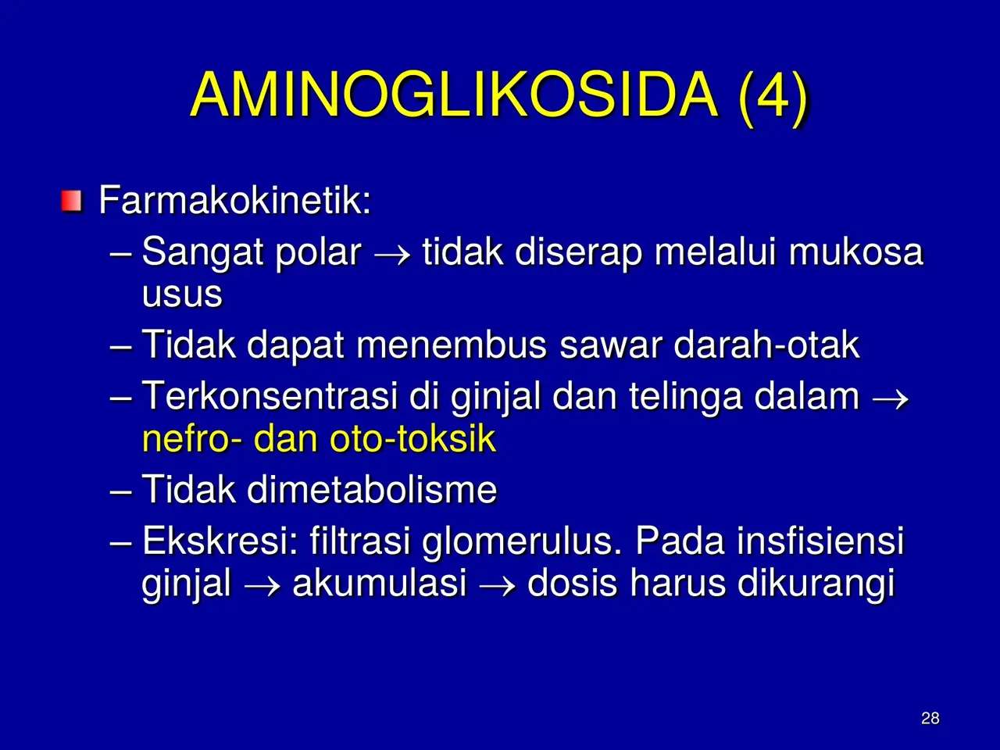
Slide 28, K14 Antibiotik dan Antiseptik Saluran Kemih. Slide Aminoglikosida (4): ekskresi lewat filtrasi glomerulus, pada insufisiensi ginjal terjadi akumulasi sehingga dosis harus dikurangi (dosis muat tidak disebut khusus).
Catatan sumber: Prinsip umum farmakoterapi ginjal (topik sumber ini) adalah dosis muat tidak diubah dan yang disesuaikan dosis rumatan atau interval, jadi penurunan dosis muat aminoglikosida pada kunci d hanya bersandar pada slide kuliah 2017; isi lengkap artikel tidak dibuka di sesi ini.
2018 · Soal 19 Satu konsep
Pasien BB 70 kg, eGFR <15 mL, mau dikasih gentamisin (dosis normal 5 mg/kgBB/hari). Giusti-Hayton = 0,1. Dosis muat pemeliharaan?
Lihat jawaban
a. 35 mg/hari
Normal kali Faktor: Giusti-Hayton, dosis pemeliharaan = dosis normal x faktor penyesuaian. 5 mg x 70 kg = 350 mg/hari, lalu x 0,1 = 35 mg/hari.
Dosis normal = 5 mg/kg x 70 kg = 350 mg/hari. Menurut metode Giusti-Hayton, dosis pemeliharaan pada gangguan ginjal = dosis normal x faktor penyesuaian = 350 x 0,1 = 35 mg/hari.
Catatan: Kalimat tanya di berkas tertulis 'dosis muat pemeliharaan'; yang dihitung adalah dosis pemeliharaan (dosis muat tidak dikurangi pada gangguan ginjal).
Satu konsep: Sama-sama soal antihipertensi saat hamil, tetapi obat yang diuji labetalol atau kaptopril, bukan metildopa.
Kerjakan 6 soal Sumatif
2023 · Soal 18 Satu konsep
Seorang wanita berusia 32 tahun, G1P0A0 (kehamilan trimester 1) dengan hipertensi. Obat apa yang benar-benar dikontraindikasikan untuk pasien ini?
Lihat jawaban
e. Captopril
H-H-S terlarang: Hamil, Hiperkalemia, Stenosis a. renalis bilateral untuk ACEi/ARB. Kaptopril fetotoksik (ginjal janin, oligohidramnion, malformasi). Sebaliknya Metildopa = Mama, obat pilihan hipertensi kehamilan.
ACE inhibitor (dan ARB) dikontraindikasikan mutlak pada kehamilan karena fetotoksik: gangguan ginjal janin, oligohidramnion, dan malformasi. Methyldopa justru obat pilihan pada kehamilan.
Seorang perempuan 36 tahun sedang hamil trimester 2 datang dengan keluhan pusing [vignette tidak diingat]. Obat antihipertensi yang dikontraindikasikan kepada pasien tersebut adalah
Lihat jawaban
b. Captopril
Pril-Perut hamil: ACEi (kaptopril) dan ARB fetotoksik, terlarang terutama trimester 2 dan 3 (H-H-S terlarang: Hamil, Hiperkalemia, Stenosis a. renalis bilateral). Yang aman: Metildopa = Mama, LABetalol = LABor, dan nifedipin.
ACE inhibitor (captopril) dan ARB dikontraindikasikan pada kehamilan karena fetotoksik, terutama pada trimester 2 dan 3. Obat pilihan pada kehamilan adalah metildopa, labetalol, dan nifedipin.
Kunci tidak ada di berkas, jawaban ditentukan dari slide kuliah. Materi: K13 Antihipertensi.
Catatan: Vignette tidak diingat lengkap oleh penyusun.
Slide 21, K13 Antihipertensi. Slide Kontraindikasi ACEi: kehamilan dan menyusui karena risiko gagal ginjal pada fetus.
Perempuan, 32 tahun, G1P0A0 (hamil trimester 1) dengan hipertensi. Apa obat antihipertensi di bawah ini yang dikontraindikasikan untuk pasien tersebut di atas?
Lihat jawaban
e. Kaptopril
H-H-S terlarang: Hamil, Hiperkalemia, Stenosis a. renalis bilateral untuk ACEi/ARB, jadi kaptopril dilarang pada kehamilan (fetotoksik). Metildopa = Mama, justru obat pilihan.
ACE inhibitor (kaptopril) dan ARB dikontraindikasikan pada kehamilan karena efek buruk serius pada janin, termasuk gagal ginjal fetus. Metildopa justru obat pilihan hipertensi dalam kehamilan.
Kunci tidak ada di berkas, jawaban ditentukan dari slide kuliah. Materi: K13 Antihipertensi.
Slide 21, K13 Antihipertensi. Slide kontraindikasi ACEi: kehamilan dan menyusui, risiko gagal ginjal pada fetus.
Perempuan, 32 tahun, G1P0A0 (hamil trimester 1) dengan hipertensi. Apa obat antihipertensi di bawah ini yang dikontraindikasikan untuk pasien tersebut di atas?
Lihat jawaban
e. Kaptopril
Pril-Perut hamil: kaptopril (ACEi) fetotoksik, masuk H-H-S terlarang (Hamil, Hiperkalemia, Stenosis a. renalis bilateral). Metildopa = Mama: justru obat pilihan hipertensi kehamilan.
ACE inhibitor (kaptopril) dan ARB dikontraindikasikan pada kehamilan karena fetotoksik (gangguan ginjal janin, oligohidramnion). Metildopa justru obat pilihan hipertensi pada kehamilan.
Perempuan 32 tahun G1P0A0 (hamil trimester 1), hipertensi. Obat yang dikontraindikasikan?
Lihat jawaban
a. Kaptopril
H-H-S terlarang: ACEi dan ARB dilarang pada Hamil (trimester berapa pun, fetotoksik), Hiperkalemia, Stenosis a. renalis bilateral, jadi kaptopril dikontraindikasikan. Metildopa = Mama: obat aman hipertensi kehamilan.
ACE-inhibitor (dan ARB) dikontraindikasikan pada semua usia kehamilan karena fetotoksik, antara lain menyebabkan gagal ginjal pada janin. Metildopa adalah pilihan yang aman untuk hipertensi pada kehamilan.
Cocok langsung: Fakta yang sama: penghambat 5-alfa-reduktase mengecilkan prostat.
Satu konsep: Sama-sama soal obat pengecil prostat, tetapi yang diuji efek samping atau obat lain.
Kerjakan 7 soal Sumatif
2023 · Soal 88 Cocok langsung
Obat manakah yang dapat mengurangi ukuran atau mencegah pertumbuhan kelenjar prostat?
Lihat jawaban
e. Dutasteride
-sterid = Susut: dutasterid menghambat 5α-reduktase, DHT turun, prostat mengecil. Empat pilihan lain berakhiran -osin = Ongkang-ongkang: hanya melemaskan otot polos, ukuran prostat tetap.
Dutasteride adalah penghambat 5-alfa-reduktase yang menurunkan dihidrotestosteron sehingga volume prostat mengecil. Empat pilihan lain adalah penghambat alfa-1 yang hanya merelaksasi otot polos tanpa mengubah ukuran prostat.
-sterid = Susut: finasterid menghambat 5α-reduktase, DHT turun, prostat menyusut. -osin = Ongkang-ongkang: tamsulosin dan prazosin hanya melemaskan otot polos, ukuran prostat tetap.
Finasteride menghambat 5-alfa reduktase sehingga pembentukan DHT berkurang dan ukuran prostat mengecil. Tamsulosin dan prazosin (antagonis alfa-1) hanya merelaksasi otot polos, tidak mengecilkan prostat.
Kasus BPH, pada akhirnya ditanya mekanisme kerja obat yang memperkecil ukuran prostat adalah
Lihat jawaban
a. Menghambat reseptor 5-alfa reduktase
-sterid = Susut: finasterid dan dutasterid menghambat 5α-reduktase (testosteron jadi DHT), prostat mengecil. Penghambat alfa-1 hanya melemaskan, antimuskarinik untuk OAB.
Inhibitor 5-alfa reduktase (finasterid, dutasterid) menghambat konversi testosteron menjadi DHT sehingga ukuran prostat mengecil. Antagonis alfa-1 hanya merelaksasi otot polos.
Catatan: Vignette kasus tidak disalin penyusun. Secara tepat 5-alfa reduktase adalah enzim, bukan reseptor.
Slide 39, K14 Antibiotik dan Antiseptik Saluran Kemih. Slide inhibitor 5-alfa reduktase: menghambat 5-alfa reduktase, enzim yang mengubah testosteron menjadi DHT, sehingga pembesaran prostat berkurang.
Pria, 70-an tahun, mengidap BPH. Apa yang dilakukan untuk mengurangi volume prostat?
Lihat jawaban
a. Inhibisi 5-alfa reductase
-sterid = Susut: inhibitor 5α-reduktase menghambat DHT sehingga prostat mengecil. Dinamik = Dilemaskan, Statik = Susutkan: alfa bloker hanya melemaskan otot polos.
Inhibitor 5-alfa reduktase menghambat pembentukan DHT sehingga volume prostat berkurang. Alfa bloker hanya merelaksasi otot polos untuk memperbaiki LUTS, tidak mengecilkan prostat.
Seorang laki-laki, usia 73 tahun, datang ke UGD dengan keluhan kesulitan berkemih sejak 1 tahun lalu. Pasien merasa pancaran berkemihnya melemah. Pada pemeriksaan fisik dokter menemukan distensi dan nyeri tekan ringan pada kandung kemih, serta pembesaran prostat pada pemeriksaan colok dubur. Apa obat yang tepat diberikan oleh dokter untuk memperkecil ukuran prostat pasien?
Lihat jawaban
a. Finasteride
-sterid = Susut: finasterid menghambat 5α-reduktase, DHT turun, prostat mengecil dalam beberapa bulan. Alfa Akrab otot: prazosin hanya melemaskan; darifenasin antimuskarinik untuk urgensi.
Finasteride adalah penghambat 5-alfa-reduktase yang menurunkan pembentukan dihidrotestosteron sehingga volume prostat mengecil dalam beberapa bulan. Prazosin (alfa-1 bloker) hanya merelaksasi otot polos tanpa mengecilkan prostat.
Terapi medikamentosa manakah yang dapat mengecilkan volume prostat?
Lihat jawaban
c. Flutamide
Yang -ster- dan -tamide menyusutkan: finaSTERide, dutaSTERide, fluTAMIDE mengecilkan prostat. Terazosin (-osin) hanya melemaskan otot polos, solifenacin hanya meredam gejala storage.
Pertumbuhan prostat bergantung pada androgen, sehingga antiandrogen seperti flutamide (dan penghambat 5-alfa-reduktase) dapat mengecilkan volume prostat. Terazosin (alpha blocker) hanya merelaksasi otot polos prostat dan leher buli tanpa mengecilkan prostat, dan solifenacin (antimuskarinik) hanya mengurangi gejala storage.
Catatan: Penyusun berkas juga menyebut saw palmetto (e) karena di kuliah fitofarmaka disebut punya efek penghambat 5-alfa-reduktase, tetapi kunci yang dipilih tetap C. Obat baku untuk mengecilkan prostat (finasteride, dutasteride) tidak ada di pilihan.
Slide 31, K17 BPH. Slide 5-ARI: obat yang menekan jalur androgen menginduksi apoptosis epitel prostat dan mengurangi volume prostat 18-30% (flutamide sendiri tidak disebut di slide).
Satu konsep: Sama-sama soal kerusakan minimal pada anak, tetapi yang diuji gambaran atau diagnosisnya.
Kerjakan 6 soal Sumatif
2021 · Soal 63 Satu konsep
Seorang anak laki-laki berusia 5 tahun datang dengan keluhan edema di seluruh tubuh, proteinuria masif, tanpa hematuria, albumin serum 2,8 g/dL, kolesterol total 300 g/dL. Setelah diberikan terapi dengan steroid, gejala berkurang. Pada penyakit ini, gambaran apa yang paling mungkin ditemukan pada pemeriksaan mikroskopis imunofluoresensi?
Lihat jawaban
e. Tidak ada endapan imun
Normal-Nol-Nempel datar: anak 5 tahun nefrotik murni yang responsif steroid = MCD; LM normal, IF nol deposit, EM effacement. Linear milik anti-GBM, granular milik kompleks imun.
Sindrom nefrotik anak yang responsif steroid adalah minimal change disease: glomerulus normal pada mikroskop cahaya, imunofluoresensi negatif (tanpa endapan imun), dan hanya effacement foot process pada mikroskop elektron.
Anak laki-laki berusia 4 tahun dibawa ke rumah sakit karena saat berkemih terlihat air seni yang keruh dan berbusa. Tubuhnya terlihat lebih besar. Pada pemeriksaan fisik ditemukan pitting edema. Pemeriksaan darah menunjukkan hiperkolesterolemia. Bila dilakukan biopsi ginjal dan diperiksa dengan mikroskop elektron, gambaran ultrastruktur yang paling mungkin ditemui adalah:
Lihat jawaban
b. Effacement podosit
Minimal = Mini (anak kecil), trias Normal-Nol-Nempel datar: di mikroskop elektron foot process podosit mendatar (effacement). Hump subepitel milik pascastreptokokus.
Sindrom nefrotik pada anak paling sering minimal change disease, dengan gambaran mikroskop elektron berupa effacement difus foot process podosit. Hump subepitel khas GN pascainfeksi, dan membran basal tipis pada thin basement membrane disease.
Slide 36, K11 PA 1: Kelainan Glomerulus. Slide MCD: penyebab tersering sindrom nefrotik anak, diffuse effacement of foot processes sel epitel pada glomerulus yang tampak normal di mikroskop cahaya.
Anak laki-laki berusia 4 tahun dibawa ke rumah sakit karena saat berkemih terlihat air seni yang keruh dan berbusa. Tubuhnya terlihat lebih besar. Pada pemeriksaan fisik ditemukan pitting edema. Pemeriksaan darah menunjukkan hiperkolesterolemia. Bila dilakukan biopsi ginjal dan diperiksa dengan mikroskop elektron, gambaran ultrastruktur yang paling mungkin ditemui adalah:
Lihat jawaban
b. Effacement podosit
Normal-Nol-Nempel datar: nefrotik anak 4 tahun = MCD (Anak Minimal), LM normal, IF nol, EM effacement podosit. Hump subepitel milik pascastreptokokus, membran menebal milik membranosa.
Sindrom nefrotik pada anak paling sering disebabkan minimal change disease: mikroskop cahaya normal, imunofluoresensi negatif, dan mikroskop elektron menunjukkan pendataran (effacement) difus kaki podosit. Hump subepitelial khas untuk glomerulonefritis pascainfeksi.
Anak laki-laki 7 tahun datang bersama ibunya dengan keluhan menggemuk, mudah lelah, air seni keruh dan berbusa, serta proteinuria 3+. Lalu ada gambar glomerulusnya dengan mikroskop cahaya, apa yang bisa dilihat?
Lihat jawaban
a. Tidak ada kelainan
Normal-Nol-Nempel datar: anak nefrotik = MCD, mikroskop cahaya glomerulus tampak normal, IF tanpa deposit, kelainan (effacement podosit) baru terlihat di mikroskop elektron. Anak Minimal: 75% nefrotik anak.
Sindrom nefrotik pada anak paling sering disebabkan minimal change disease: glomerulus tampak normal pada mikroskop cahaya, dan kelainannya (effacement difus foot process podosit) baru terlihat pada mikroskop elektron.
Catatan: Soal tidak lengkap: gambar glomerulus pada soal asli tidak disertakan di berkas dan hanya satu pilihan yang diingat (pilihan b di berkas tertulis 'Hehe...').
Slide 40, K11 PA 1: Kelainan Glomerulus. Slide Ancillary Tests minimal change disease: imunofluoresens no deposit, mikroskop elektron diffuse effacement of podocyte.
Anak laki-laki 7 tahun datang bersama ibunya dengan keluhan menggemuk, mudah lelah, air seni keruh dan berbusa, serta proteinuria 3+. Kelainannya?
Lihat jawaban
a. Sindrom nefrotik
Nefrotik = Nyangkut di Podosit: proteinuria 3+, edema (tampak menggemuk), dan urin berbusa = sindrom nefrotik. Nefritik Naik volume: hematuria, hipertensi, dan azotemia tidak disebut.
Proteinuria berat, edema (tampak menggemuk), dan urin keruh berbusa adalah sindrom nefrotik. Sindrom nefritik ditandai hematuria, hipertensi, dan azotemia.
Seorang anak laki-laki berusia 8 tahun dibawa ibunya ke poliklinik rumah sakit karena terlihat semakin gemuk selama 1 minggu terakhir. Terdapat urine yang berbusa. Pada pemeriksaan fisik, ditemukan pitting edema di kaki, dan tekanan darah 120/80 mmHg. Pemeriksaan laboratorium menunjukkan kadar albumin serum 2,8 g/dL serta kolesterol total 220 g/dL, dan protein di urin mencapai 3,8 g/hari. Biopsi ginjal dilakukan dan hasilnya ditunjukkan pada gambar. Apa yang dapat terlihat pada mikroskop cahaya?
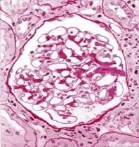
Lihat jawaban
b. Tidak ada kelainan
Normal-Nol-Nempel datar: nefrotik pada anak 8 tahun = Minimal = Mini, minimal change disease. Di gambar cari glomerulus yang tampak normal di mikroskop cahaya; kelainannya (foot process mendatar) hanya terlihat di mikroskop elektron.
Sindrom nefrotik pada anak paling sering disebabkan minimal change disease. Pada mikroskop cahaya glomerulus tampak normal, kelainannya (pendataran foot process podosit) baru terlihat dengan mikroskop elektron.
Oncocytoma pada ginjal memberikan gambaran inti sel dengan sitoplasma lebar yang berwarna kemerahan karena mengandung banyak mitokondria
Slide soal ini: K12 PA 2: Neoplasma Saluran Kemih, slide 5
Cocok dengan soal Sumatif:
Sumatif 2017 no. 22Cocok langsungK12 PA 2: Neoplasma Saluran Kemih, tanpa nomor slide
Cocok langsung: Fakta yang sama: onkositoma tampak merah muda karena banyak mitokondria.
Kerjakan 1 soal Sumatif
2017 · Soal 22 Cocok langsung
Apa penyebab sitoplasma berwarna pink pada renal oncocytoma?
Lihat jawaban
b. Mengandung banyak mitokondria
Onkositoma = Organel energi: sitoplasma pink granular karena penuh mitokondria. Banyak ribosom justru membuat sitoplasma basofilik (biru).
Sel onkositoma berukuran besar dengan sitoplasma eosinofilik granular karena secara ultrastruktur dipenuhi mitokondria dalam jumlah sangat banyak. Banyak ribosom justru membuat sitoplasma basofilik.
Cocok langsung: Fakta yang sama: acute tubular injury ditandai penggepengan sel epitel tubulus, bukan podosit.
Kerjakan 2 soal Sumatif
2021 · Soal 78 Cocok langsung
Ada orang habis perdarahan hebat karena kecelakaan, volume urin turun. Apa gambaran atau mekanisme yang mendasari terjadinya penurunan volume urin?
Lihat jawaban
a. Penggepengan sel epitel tubulus
Iskemik = Titik-titik, Toksik = Total proksimal: perdarahan hebat menimbulkan ATI iskemik yang fokal dengan epitel tubulus memipih (ATI = Tipis, Bocor, Sumbat). Nekrosis seluruh sel tubulus terlalu luas.
Perdarahan hebat menimbulkan acute tubular injury iskemik: epitel tubulus menjadi pipih (flattening) dan atrofi, bervakuol, brush border hilang, dengan debris dan cast di lumen yang menyumbat tubulus. Nekrosisnya bersifat fokal, tidak mengenai seluruh sel tubulus.
Catatan: Kalimat pertanyaan tidak diingat pasti oleh penyusun. Penyusun menduga kasusnya acute tubular injury dan menambahkan keterangan pada pilihan a: ada atrofi, vakuol di epitel tubulus, dan debris di lumen tubulus. Hanya tiga pilihan yang teringat.
Slide 47, K12 PA 2: Vaskular, Tubulus, Interstisium. Slide menulis kelainan histologik tersering pada AKI iskemik adalah flattening (simplification) sel epitel tubulus, overt necrosis lebih jarang.
Ada orang habis perdarahan hebat karena kecelakaan, volume urin turun. Apa mekanisme yang mendasari terjadinya penurunan volume urin?
Lihat jawaban
a. Penggepengan sel epitel tubulus
ATI = Tipis, Bocor, Sumbat: perdarahan hebat membuat tubulus iskemik, epitel memipih (gepeng), filtrat bocor balik, lumen tersumbat, urin turun. Iskemik = Titik-titik: patchy, bukan nekrosis seluruh tubulus.
Kasusnya acute tubular injury iskemik akibat perdarahan: epitel tubulus menjadi pipih/atrofi, bervakuol, dan ada debris di lumen tubulus. Nekrosis tidak mengenai seluruh sel tubulus.
Catatan: Penyusun tidak yakin dengan redaksi pertanyaan ("sepertinya ini"). Pilihan D hanya diingat sebagian dan pilihan E tidak diingat.
Slide 47, K12 PA 2: Vaskular, Tubulus, Interstisium. Slide Pathophysiology Ischemic AKI menulis kelainan histologi tersering adalah flattening (simplification) sel epitel tubulus, dan nekrosis nyata lebih jarang.
Satu konsep: Sama-sama soal modalitas yang menilai fungsi ginjal.
Kerjakan 1 soal Sumatif
2017 · Soal 17 Satu konsep
Pemeriksaan radiologi manakah yang TIDAK dapat menilai fungsi ginjal?
Lihat jawaban
c. Ultrasonografi
USG lihat Bentuk, bukan Kerja: USG hanya menilai morfologi (ukuran, hidronefrosis, kista atau padat). IVU, CT/MR urografi memakai kontras yang diekskresi ginjal, dan renogram (Teknesium menghitung) menilai fungsi kuantitatif.
USG hanya memberi informasi morfologi (ukuran ginjal, hidronefrosis, massa kistik atau padat) dan tidak menilai fungsi ekskresi. Urografi intravena, CT urografi, dan MR urografi memakai kontras yang diekskresi ginjal sehingga fungsi ikut ternilai, dan kedokteran nuklir (renogram) menilai fungsi secara kuantitatif.
Catatan: Kunci di berkas tertulis "Ckekuran" (salah ketik), dibaca sebagai C.
Slide 28, K20 Radiologi Sistem Perkemihan. Slide USG: tujuannya mengetahui ukuran ginjal, lokasi obstruksi, membedakan massa kistik atau padat, tumor buli, dan volume prostat; penilaian fungsi ginjal tidak termasuk.
Seorang pasien dengan AKI memiliki hasil laboratorium: Na⁺ 140 mmol/l, Cl⁻ 104 mmol/l, dan HCO₃⁻ 12 mmol/l. Anion gap tanpa memasukkan kalium adalah 24 mmol/l. Hasil tersebut menunjukkan asidosis metabolik dengan anion gap meningkat.
Cocok langsung: Fakta yang sama: hitung anion gap dari Na, Cl, dan HCO3, lalu simpulkan asidosis metabolik anion gap tinggi.
Satu konsep: Sama-sama soal anion gap, tetapi yang diuji komponen atau penyebabnya.
Kerjakan 4 soal Sumatif
2023 · Soal 80 Cocok langsung
Seorang pria berusia 65 tahun dengan penyakit ginjal kronis datang dengan keluhan mudah lelah dan mual. Hasil analisis gas darah (AGD) menunjukkan: pH 7,25, HCO3- 15 mEq/L, pCO2 34 mmHg. Elektrolit serum: Na+ 140 mEq/L, Cl- 104 mEq/L. Berdasarkan perhitungan anion gap, diagnosis yang paling mungkin adalah:
Lihat jawaban
c. Asidosis metabolik dengan anion gap tinggi
KULiT tebal = gap tinggi: Ketoasidosis, Uremia, Laktat, Toksin. AG = 140 - (104 + 15) = 21, di atas normal karena asam uremik tertahan pada PGK. Gap normal milik D-R (diare, RTA).
pH dan HCO3- rendah berarti asidosis metabolik; anion gap = 140 - (104 + 15) = 21 (normal sekitar 8-12), jadi anion gap tinggi akibat retensi asam uremik pada PGK.
Slide 11, K19 Gangguan Asam Basa. Slide Anion Gap menulis AG = Na+ - (Cl- + HCO3-) dengan rentang normal 6-12 mmol/L, sehingga 140 - (104 + 15) = 21 tergolong high anion gap.
Tn. D, pria 55 tahun, segera dirujuk ke RS karena sesak nafas yang memburuk sejak 4 hari terakhir. Tanda vital menunjukkan tekanan darah 130/80 mmHg, denyut jantung 90 bpm, frekuensi pernafasan 28 rpm, dengan saturasi oksigen udara ruangan 90%. Investigasi darahnya menunjukkan: Hb 15,50 g/dL; WBC 5.830/uL; trombosit 201.000/uL; glukosa darah acak 116 mg/dL; kreatinin 0,70 mg/dL; gas darah arteri: pH 7,150; pCO2 7,7 mmHg; pO2 69,3 mmHg; HCO3 2,6 mmol/L; natrium 147 mmol/L; kalium 2,74 mmol/L; klorida 74 mmol/L. Untuk menentukan penyebab gangguan asam basa pada pasien ini, celah anion serum dapat dihitung dari kadar elektrolit yang meliputi
Lihat jawaban
a. Natrium, klorida, bikarbonat
Na dikurangi Cl dan Bikarbonat: AG = Na - (Cl + HCO3-), normal 6-12. Pada Tn. D 147 - (74 + 2,6) sekitar 70. Kalium dan albumin tidak masuk rumus dasar.
Anion gap = Na+ - (Cl- + HCO3-), nilai normal 6-12 mmol/L. Pada pasien ini 147 - (74 + 2,6) sekitar 70, yaitu asidosis metabolik anion gap tinggi.
Kunci tidak ada di berkas, jawaban ditentukan dari slide kuliah. Materi: K19 Gangguan Asam Basa.
Slide 11, K19 Gangguan Asam Basa. Slide menulis AG = Na+ - (Cl- + HCO3-), normal 6-12 mmol/L.
Tn. D, pria 55 tahun segera dirujuk ke RS karena sesak nafas yang memburuk sejak 4 hari terakhir. Tanda vital menunjukkan tekanan darah 130/80 mmHg, denyut jantung 90 bpm, frekuensi pernafasan 28 rpm, dengan saturasi oksigen udara ruangan 90%. Investigasi darahnya menunjukkan: Hb 15,50 g/dL; WBC 5.830/uL; Trombosit 201.000/uL; Glukosa darah acak 116 mg/dL; Kreatinin 0,70 mg/dL. Gas darah arteri: pH 7,150; pCO2 7,7 mmHg; pO2 69,3 mmHg; HCO3 2,6 mmol/L; Natrium 147 mmol/L; Kalium 2,74 mmol/L; Klorida 74 mmol/L. Untuk menentukan penyebab gangguan asam basa pada pasien ini, celah anion serum dapat dihitung dari kadar elektrolit yang meliputi
Lihat jawaban
a. Natrium, klorida, bikarbonat
Na dikurangi Cl dan Bikarbonat: AG = Na - (Cl + HCO3-) = 147 - (74 + 2,6), sekitar 70, asidosis metabolik gap tinggi. Kalium dan albumin bukan komponen rumus dasar.
Anion gap = Na+ - (Cl- + HCO3-). Pada pasien ini 147 - (74 + 2,6) = sekitar 70, yaitu asidosis metabolik dengan anion gap tinggi.
Seorang pasien diketahui mengalami asidosis metabolik dengan anion gap 11. Apa kemungkinan etiologi pada pasien tersebut?
Lihat jawaban
c. Diare
D-R, gap Datar: AG 11 masih normal, jadi asidosis non-anion gap karena Diare (atau RTA). KULiT tebal = gap tinggi: Ketoasidosis, Uremia, Laktat, Toksin (metanol).
Anion gap 11 masih normal (sekitar 7-13), jadi ini asidosis metabolik non-anion gap akibat kehilangan bikarbonat, misalnya diare. Ketoasidosis, metanol, uremia, dan asidosis laktat menyebabkan anion gap meningkat.
Seorang perempuan berusia 24 tahun datang dengan keluhan nyeri saat berkemih, sering berkemih dalam jumlah sedikit, dan urgensi sejak dua hari lalu. Ia tidak mengalami demam maupun nyeri pinggang. Diagnosis paling mungkin adalah sistitis akut.
Slide soal ini: K18 Infeksi Saluran Kemih, slide 11
Satu konsep: Kasusnya sistitis, tetapi yang ditanyakan pilihan antibiotik.
Kerjakan 5 soal Sumatif
2023 · Soal 79 Satu konsep
Seorang wanita berusia 25 tahun mengeluh nyeri dan sering buang air kecil. Pada pemeriksaan fisik, suhu tubuh pasien 36,3 derajat C dan tidak terdapat nyeri ketok pada sudut kostovertebra. Pasien tidak memiliki riwayat alergi obat. Antibiotik pilihan utama untuk pasien ini adalah:
Lihat jawaban
c. Fosfomisin
Fosfo Sekali: sistitis tanpa komplikasi (afebris, CVA tidak nyeri) pada perempuan muda = fosfomisin dosis tunggal. Pilihan lain antibiotik parenteral untuk infeksi berat, padahal Bawah Basah cukup obat oral.
Sistitis akut tanpa komplikasi pada wanita muda diobati dengan antibiotik oral lini pertama seperti fosfomisin dosis tunggal (atau nitrofurantoin). Pilihan lain adalah antibiotik parenteral untuk infeksi berat.
Slide 18, K18 Infeksi Saluran Kemih. Tabel Treatment Uncomplicated Cystitis mencantumkan Fosfomycin 3 g single dose sachet di antara obat lini pertama.
Seorang laki-laki, usia 35 tahun, mengeluh nyeri dan sering berkemih sejak 3 hari lalu, namun hanya dapat mengeluarkan dalam jumlah sedikit. Pada pemeriksaan fisik didapatkan suhu 37,5 derajat Celcius dan tekanan darah 90/60 mmHg, disertai dengan nyeri tekan pada sudut kostovertebra. Ketika dokter akan memberikan antibiotik, pasien mengatakan bahwa ia pernah mengalami reaksi alergi ketika mendapatkan penisilin dan turunannya. Apa antibiotik pilihan untuk pasien ini?
Lihat jawaban
b. Siprofloksasin
Alergi penisilin? Pindah ke Cipro: nyeri ketok CVA dan hipotensi berarti ISK atas, butuh antimikroba sistemik (Ketok CVA nyeri = Ke atas). Ampisilin-sulbaktam dan amoks-klav masih penisilin, sefadroksil Sepupu penisilin (alergi silang).
Pasien mengalami ISK atas dengan tanda sistemik dan alergi penisilin, sehingga dipilih fluorokuinolon (siprofloksasin) yang aktif terhadap Gram negatif. Ampisilin-sulbaktam dan amoksisilin-klavulanat adalah penisilin, sefadroksil berisiko reaksi silang, dan klaritromisin bukan obat ISK.
Slide 19, K18 Infeksi Saluran Kemih. Slide menulis fluoroquinolone (ciprofloxacin oral 500 mg bid) sebagai terapi lini pertama pielonefritis, sedangkan pilihan lain adalah beta-laktam.
Seorang laki-laki, usia 35 tahun, mengeluh nyeri dan sering berkemih sejak 3 hari lalu, namun hanya dapat mengeluarkan dalam jumlah sedikit. Pada pemeriksaan fisik didapatkan suhu 37,5 derajat Celcius dan tekanan darah 90/60 mmHg, disertai dengan nyeri tekan pada sudut kostovertebra. Ketika dokter akan memberikan antibiotik, pasien mengatakan bahwa ia pernah mengalami reaksi alergi ketika mendapatkan penisilin dan turunannya. Apa antibiotik pilihan untuk pasien ini?
Lihat jawaban
b. Siprofloksasin
Alergi penisilin? Pindah ke Cipro: nyeri ketok CVA dan hipotensi = pielonefritis, butuh antimikroba sistemik. Ampisilin dan amoksisilin adalah penisilin, sefadroksil Sepupu penisilin (alergi silang), klaritromisin tidak efektif untuk Gram negatif.
Pielonefritis pada pasien alergi penisilin diobati dengan fluorokuinolon (siprofloksasin). Ampisilin dan amoksisilin adalah penisilin, sefalosporin (sefadroksil) berisiko reaksi silang, dan klaritromisin tidak efektif untuk uropatogen gram negatif.
Wanita 30 tahun datang ke klinik dengan keluhan nyeri saat berkemih dan frekuensi berkemih meningkat namun dalam volume yang sedikit. Pasien merasa demam, nyeri ketok disangkal. Saat ingin diberikan antibiotik oleh dokter, pasien menyebutkan bahwa dirinya memiliki alergi terhadap penicillin dan turunannya. Obat yang tepat diberikan bagi pasien adalah...
Lihat jawaban
d. Siprofloksasin
Alergi penisilin? Pindah ke Cipro: siprofloksasin bukan betalaktam, jadi aman untuk sistitis pasien ini. Ampisilin dan amoksisilin-klavulanat adalah penisilin, sefalosporin Sepupu penisilin (alergi silang), klaritromisin tidak dipakai untuk ISK.
Pasien alergi penisilin, jadi dicari obat ISK yang bukan betalaktam: siprofloksasin (fluorokuinolon). Ampisilin dan amoksisilin-klavulanat adalah golongan penisilin, sefalosporin masih satu keluarga betalaktam, dan klaritromisin tidak dipakai untuk ISK.
Catatan: Nama obat pada pilihan a dan b ditulis penyusun dari ingatan ("Selfaromide", "Ampicilin something"); menurut penyusun pilihan a adalah kerabat penisilin (kemungkinan suatu sefalosporin).
Slide 18, K18 Infeksi Saluran Kemih. Tabel terapi sistitis tanpa komplikasi memuat fluorokuinolon sebagai pilihan selain betalaktam.
Seorang perempuan usia 30 tahun mengeluh nyeri dan sering berkemih, namun hanya dapat mengeluarkan dalam jumlah sedikit. Pasien merasa demam dan nyeri tekan pada CVA disangkal. Apa obat pilihan untuk pasien?
Lihat jawaban
e. Sefiksim
Bawah Basah, Atas Api: disuria dan frekuensi tanpa nyeri CVA = sistitis, butuh antibiotik untuk Gram negatif, dan di pilihan hanya sefiksim yang cocok. Klindamisin tidak mencakup E. coli; furosemid, parasetamol, dan air bukan terapi kausal.
Disuria dan frekuensi tanpa nyeri CVA adalah sistitis, yang diobati dengan antibiotik yang aktif terhadap uropatogen Gram negatif. Di antara pilihan hanya sefiksim (betalaktam oral) yang sesuai; klindamisin tidak mencakup E. coli, dan furosemid, parasetamol, atau minum air bukan terapi kausal.
Cocok langsung: Fakta yang sama: diuretik loop dapat menyebabkan alkalosis metabolik hipokalemik.
Satu konsep: Membahas efek samping diuretik yang sama, tetapi yang ditanyakan elektrolit atau metabolit tertentu.
Kerjakan 9 soal Sumatif
2023 · Soal 48 Cocok langsung
Pernyataan manakah yang benar mengenai efek penggunaan diuretik loop kronik?
Lihat jawaban
d. Alkalosis metabolik hipokalemik
Loop kehilangan H dan K, darah jadi basa: alkalosis metabolik hipokalemik. Loop = Lepas semua (K, H, Ca, Mg), yang ditahan hanya asam urat, jadi pilihan penurunan ekskresi Ca dan peningkatan ekskresi asam urat terbalik.
Diuretik loop meningkatkan penghantaran Na+ ke distal dan mengaktifkan aldosteron sehingga K+ dan H+ terbuang: alkalosis metabolik hipokalemik. Loop justru meningkatkan ekskresi Ca2+ dan menurunkan ekskresi asam urat (hiperurisemia).
Slide 10, K13 Diuretik dan Antidiuretik. Slide Adverse Effects of loop diuretics menulis hypokalemic metabolic alkalosis (very common) serta hyperuricemia.
Apa pernyataan di bawah ini yang benar akibat penggunaan kronik loop diuretik?
Lihat jawaban
e. Hypokalemic alkalosis metabolik
Loop = Lepas semua: K dan H terbuang sehingga alkalosis metabolik hipokalemik; Ca dan Mg ikut lepas (ekskresi naik). Yang ditahan hanya asam urat, dan asidosis hiperkloremik milik asetazolamid.
Loop diuretik meningkatkan hantaran Na+ ke tubulus distal sehingga sekresi K+ dan H+ bertambah, menimbulkan alkalosis metabolik hipokalemik. Obat ini juga meningkatkan ekskresi Ca2+ dan Mg2+ serta menyebabkan hiperurisemia (ekskresi asam urat menurun).
Seorang pria berusia 45 tahun didiagnosis dengan hipertensi derajat 1. Dokter memberinya obat diuretik tiazid (hidroklorotiazid 25 mg/hari). Efek samping dari obat tersebut yang paling mengganggu bagi pasien adalah?
Lihat jawaban
b. Hipokalemia
Loop dan Tiazid sama-sama Low K: tiazid menambah Na+ yang sampai ke distal sehingga sekresi K+ naik, hipokalemia. Ingat GLUC naik (glukosa, lipid, urat, kalsium), jadi hipoglikemia salah; Tiazid Tahan Ca, jadi osteoporosis juga salah.
Tiazid meningkatkan penghantaran natrium ke tubulus distal sehingga sekresi K+ meningkat dan timbul hipokalemia. Tiazid justru menyebabkan hiperglikemia dan menahan kalsium (melindungi tulang).
Slide 17, K13 Diuretik dan Antidiuretik. Slide Adverse Effects of thiazide-type diuretics menebalkan hypokalemia di antara ADR paling serius, dan menyebut hiperglikemia serta hiperkalsemia.
Pasien 45 tahun didiagnosis dengan hipertensi stage 1. Dokter memberikannya obat tiazid (hidroklorotiazid 25 mL). Apa efek samping yang paling mengganggu dari obat ini?
Lihat jawaban
a. Hipokalemia
GLUC naik, Kalium turun: tiazid menaikkan Glukosa, Lipid, Urat, Calcium; yang turun kalium (hipokalemia tersering). Hipoglikemia salah arah, dan Tiazid Tahan Ca justru teman tulang, bukan penyebab osteoporosis.
Tiazid menambah Na+ yang sampai ke tubulus distal sehingga sekresi K+ meningkat, dan hipokalemia adalah efek samping tersering. Tiazid justru menimbulkan hiperglikemia, membuang Na+ dan air, serta menahan kalsium (menguntungkan pada osteoporosis).
Bapak-bapak hipertensi diberi hydrochlorothiazide, apa efek yang akan dikeluhkan?
Lihat jawaban
c. Hipokalemia
Loop dan Tiazid sama-sama Low K: tiazid membuang K+ dan H+, hipokalemia efek samping tersering. Tiazid Tahan Ca, jadi bukan osteoporosis; glaukoma justru diobati asetazolamid.
Tiazid meningkatkan ekskresi K+ dan H+ sehingga menimbulkan hipokalemia. Tiazid justru menurunkan ekskresi kalsium, jadi tidak menyebabkan osteoporosis.
Loop = Lepas semua: Na, K, Cl, Mg, dan Ca ikut terbuang, sehingga penggunaan kronik dapat menimbulkan hiponatremia. Ekskresi Ca justru naik (Loop Lepas Ca) dan asam urat satu-satunya yang ditahan.
Loop diuretik menghambat reabsorpsi Na+ di ansa Henle sehingga dapat menimbulkan hiponatremia, hipokalemia, hipokloremia, dan hipomagnesemia. Ekskresi Ca2+ justru meningkat, dan ekskresi asam urat menurun pada pemakaian kronik sehingga terjadi hiperurisemia.
Catatan: Hanya tiga pilihan yang teringat. Stem di berkas tertulis "Komplikasi dari penggunaan penyakit ginjal kronik dari loop diuretics", ditafsirkan sebagai penggunaan kronik loop diuretik.
Slide 10, K13 Diuretik dan Antidiuretik. Slide efek samping loop diuretik: hipo-K+, hipo-Na+, hipo-Cl-, hipo-Mg2+, serta hiperurisemia.
Loop dan Tiazid sama-sama Low K: tiazid menambah Na ke distal sehingga K terbuang, hipokalemia. GLUC naik: glukosa naik (bukan hipoglikemia), Ca ditahan (teman Tulang, bukan osteoporosis); hipertrikosis milik Minoxidil-Bulu.
Tiazid meningkatkan hantaran Na+ ke tubulus distal sehingga ekskresi K+ meningkat dan terjadi hipokalemia. Tiazid justru menyebabkan hiperglikemia, natriuresis, dan menurunkan ekskresi kalsium (bukan osteoporosis); hipertrikosis adalah efek minoksidil.
Manakah yang merupakan efek samping hidroklorotiazid?
Lihat jawaban
e. Hiperglikemia
GLUC naik semua: Glukosa, Lipid, Urat, Calcium naik pada tiazid; yang turun kalium. Hiperglikemia = huruf G.
Tiazid menurunkan toleransi glukosa (thiazide-induced hyperglycemia) dan dapat memunculkan diabetes laten, selain hipokalemia, hiponatremia, hiperkalsemia, dan hiperurisemia.
Catatan: Slide diuretik juga menyebut anemia hemolitik sebagai reaksi alergi serius yang jarang pada tiazid, tetapi efek samping khas yang dimaksud soal adalah hiperglikemia.
Slide 17, K13 Diuretik dan Antidiuretik. Slide Adverse Effects of thiazide-type diuretics: impaired carbohydrate tolerance, thiazide-induced hyperglycemia dan unmask latent diabetes mellitus.
Satu konsep: Sama-sama soal jejas tubulus akut akibat hipoperfusi, tetapi yang diuji gambaran atau mekanismenya.
Kerjakan 6 soal Sumatif
2023 · Soal 75 Satu konsep
Seorang pria berusia 35 tahun datang dengan diare kronis dan penurunan volume urin. Setelah pemeriksaan lengkap disimpulkan pasien mengalami acute tubular injury (ATI). Mekanisme yang benar terkait diagnosis pasien ini adalah:
Lihat jawaban
b. Terjadi "tubular back leak" yang menyebabkan penurunan aliran cairan
ATI = Tipis, Bocor, Sumbat: epitel rusak terlepas, filtrat bocor balik (tubular back leak) dan lumen tersumbat cast, aliran urin turun. Bocor ke luar, tekanan naik: tekanan interstisial meningkat, jadi pilihan tekanan menurun salah.
Pada ATI, sel tubulus yang rusak terlepas sehingga filtrat bocor kembali ke interstisium (tubular back leak) dan lumen tersumbat silinder, yang menurunkan aliran urin dan GFR. Tekanan interstisial justru meningkat, bukan menurun.
Slide 52, K12 PA 2: Vaskular, Tubulus, Interstisium. Slide Pathogenesis of acute renal failure caused by acute tubular injury menulis fluid back-leakage from the lumen into the interstitium dan obstruksi oleh cast.
Ada orang habis perdarahan hebat karena kecelakaan, volume urin turun. Apa gambaran atau mekanisme yang mendasari terjadinya penurunan volume urin?
Lihat jawaban
a. Penggepengan sel epitel tubulus
Iskemik = Titik-titik, Toksik = Total proksimal: perdarahan hebat menimbulkan ATI iskemik yang fokal dengan epitel tubulus memipih (ATI = Tipis, Bocor, Sumbat). Nekrosis seluruh sel tubulus terlalu luas.
Perdarahan hebat menimbulkan acute tubular injury iskemik: epitel tubulus menjadi pipih (flattening) dan atrofi, bervakuol, brush border hilang, dengan debris dan cast di lumen yang menyumbat tubulus. Nekrosisnya bersifat fokal, tidak mengenai seluruh sel tubulus.
Catatan: Kalimat pertanyaan tidak diingat pasti oleh penyusun. Penyusun menduga kasusnya acute tubular injury dan menambahkan keterangan pada pilihan a: ada atrofi, vakuol di epitel tubulus, dan debris di lumen tubulus. Hanya tiga pilihan yang teringat.
Slide 47, K12 PA 2: Vaskular, Tubulus, Interstisium. Slide menulis kelainan histologik tersering pada AKI iskemik adalah flattening (simplification) sel epitel tubulus, overt necrosis lebih jarang.
Seorang pasien laki-laki usia 37 tahun datang ke RS karena diare kronik yang berkepanjangan, dan mengeluh jumlah urinnya berkurang. Setelah dilakukan serangkaian pemeriksaan, selain ada gangguan pada pencernaannya juga terjadi gagal ginjal akut yang disebabkan oleh acute tubular injury (ATI). Mekanisme berikut ini yang berkaitan dengan oliguria yang terjadi pada pasien di atas adalah:
Lihat jawaban
c. Terjadi tubular backleak yang menyebabkan aliran cairan tubulus menurun
ATI = Tipis, Bocor, Sumbat: filtrat bocor balik (tubular backleak) sehingga aliran tubulus dan urin turun. Ginjal iskemik teriak renin: renin-angiotensin naik, bukan turun.
Pada ATI, sel epitel yang lepas membentuk cast yang menyumbat lumen, tekanan intraluminal naik, dan filtrat bocor balik ke interstisium (tubular backleak) sehingga aliran cairan tubulus dan urin berkurang. Vasokonstriksi pada ATI terjadi karena renin-angiotensin justru meningkat, bukan menurun.
Catatan: Hanya tiga pilihan yang tertulis di berkas. Di berkas tahun 2019 soal ini punya lima pilihan dan tubular backleak adalah pilihan e.
Slide 52, K12 PA 2: Vaskular, Tubulus, Interstisium. Slide patogenesis ATI: cast menyebabkan obstruksi dan tekanan intraluminal naik, lalu terjadi fluid back-leakage dari lumen ke interstisium (gambar bertanda Backleak).
Ada orang habis perdarahan hebat karena kecelakaan, volume urin turun. Apa mekanisme yang mendasari terjadinya penurunan volume urin?
Lihat jawaban
a. Penggepengan sel epitel tubulus
ATI = Tipis, Bocor, Sumbat: perdarahan hebat membuat tubulus iskemik, epitel memipih (gepeng), filtrat bocor balik, lumen tersumbat, urin turun. Iskemik = Titik-titik: patchy, bukan nekrosis seluruh tubulus.
Kasusnya acute tubular injury iskemik akibat perdarahan: epitel tubulus menjadi pipih/atrofi, bervakuol, dan ada debris di lumen tubulus. Nekrosis tidak mengenai seluruh sel tubulus.
Catatan: Penyusun tidak yakin dengan redaksi pertanyaan ("sepertinya ini"). Pilihan D hanya diingat sebagian dan pilihan E tidak diingat.
Slide 47, K12 PA 2: Vaskular, Tubulus, Interstisium. Slide Pathophysiology Ischemic AKI menulis kelainan histologi tersering adalah flattening (simplification) sel epitel tubulus, dan nekrosis nyata lebih jarang.
Seorang pasien laki-laki usia 37 tahun datang ke RS karena diare kronik yang berkepanjangan, dan mengeluh jumlah urinnya berkurang. Setelah dilakukan serangkaian pemeriksaan selain ada gangguan pada pencernaannya juga terjadi gagal ginjal akut yang disebabkan oleh acute tubular injury (ATI). Mekanisme berikut ini berkaitan dengan oliguria yang terjadi pada pasien di atas, KECUALI:
Lihat jawaban
d. Tekanan jaringan interstitial menurun sehingga menyebabkan kerusakan tubulus
Bocor ke luar, tekanan naik: backleak filtrat membuat interstisium edema sehingga tekanan interstisial MENINGKAT, maka pilihan "menurun" adalah jawaban KECUALI. Sisanya sah: ATI = Tipis, Bocor, Sumbat dan Ginjal iskemik teriak renin.
Pada ATI, filtrat yang bocor balik ke interstisium menimbulkan edema dan MENINGKATKAN tekanan interstisial, bukan menurunkannya, sehingga pernyataan d salah. Vasokonstriksi intrarenal, obstruksi lumen oleh sel yang terlepas, inflamasi (sel tubulus iskemik mengekspresikan sitokin dan molekul adhesi), dan backleak semuanya menurunkan LFG (Robbins).
Catatan: Catatan penyusun di berkas tidak konsisten ('harusnya naik' lalu 'harusnya turun'); menurut kutipan Robbins yang dilampirkan, tekanan interstisial meningkat, jadi kunci d tetap tepat.
Slide 50, K12 PA 2: Vaskular, Tubulus, Interstisium. Slide Pathophysiology of Ischemic AKI: back-leakage filtrat ke interstisium menimbulkan edema interstisial dan increased interstitial pressure.
Pria 37 tahun diare dan oligosuria. Diagnosis Acute Tubular Injury. Apa kondisi yang TIDAK menyebabkan oligosuria pada pasien?
Lihat jawaban
c. penurunan tekanan interstisial
Bocor ke luar, tekanan naik: pada ATI filtrat bocor balik ke interstisium sehingga edema dan tekanan interstisial MENINGKAT. ATI = Tipis, Bocor, Sumbat: aliran tubulus turun dan inflamasi interstisial ikut menekan; penurunan tekanan interstisial selalu salah.
Pada jejas tubulus akut, oliguria terjadi karena vasokonstriksi intrarenal, obstruksi tubulus oleh debris sel (aliran tubulus turun), dan kebocoran balik filtrat ke interstisium yang menimbulkan edema dan PENINGKATAN tekanan interstisial. Jadi penurunan tekanan interstisial bukan mekanismenya.
Catatan: Hanya tiga pilihan yang teringat. Berkas tidak menandai kunci.
Slide 50, K12 PA 2: Vaskular, Tubulus, Interstisium. Slide patofisiologi AKI iskemik: obstruksi tubulus oleh debris dan kebocoran balik filtrat menyebabkan edema dan peningkatan tekanan interstisial.
Pada pasien dewasa tidak hamil dengan kecurigaan kolik ureter yang memerlukan konfirmasi diagnostik, CT tanpa kontras umumnya memiliki akurasi tinggi untuk mendeteksi batu.
Slide soal ini: K20 Radiologi Sistem Perkemihan, slide 39
Cocok langsung: Fakta yang sama: CT punya akurasi tertinggi untuk batu saluran kemih.
Satu konsep: Sama-sama soal CT pada batu, tetapi yang diuji pengukuran densitas.
Kerjakan 9 soal Sumatif
2023 · Soal 8 Cocok langsung
Pemeriksaan manakah yang memiliki sensitivitas dan spesifisitas tertinggi untuk mendiagnosis urolitiasis pada pasien dengan nyeri pinggang akut?
Lihat jawaban
a. CT-Urografi
CT Tanpa kontras = Tertinggi: baku emas batu pada nyeri pinggang akut, melihat hampir semua batu termasuk yang radiolusen (di pilihan tertulis CT-urografi). Polos hanya melihat yang putih, sehingga KUB-IVU dan juga USG lebih rendah akurasinya.
CT (khususnya CT tanpa kontras) adalah baku emas urolitiasis pada nyeri pinggang akut dengan sensitivitas dan spesifisitas tertinggi, dapat melihat hampir semua jenis batu termasuk yang radiolusen. USG dan KUB-IVU lebih rendah akurasinya.
Pemeriksaan yang mempunyai nilai sensitivitas dan spesifisitas yang paling baik untuk menegakkan batu saluran kemih dengan nyeri pinggang akut adalah:
Lihat jawaban
a. CT-urografi
CT Tanpa kontras = Tertinggi: CT non kontras abdomen-pelvis paling sensitif dan spesifik untuk batu pada nyeri pinggang akut (di pilihan tertulis CT-urografi). USG, BNO/IVP, RPG, dan APG kalah akurat atau hanya dipakai atas indikasi.
CT scan (tanpa kontras) abdomen dan pelvis adalah pencitraan terbaik dan baku emas untuk batu ginjal dan ureter. USG, BNO/IVP, RPG, dan APG sensitivitas dan spesifisitasnya lebih rendah atau hanya dipakai atas indikasi.
Kunci tidak ada di berkas, jawaban ditentukan dari slide kuliah. Materi: K17 Batu Saluran Kemih.
Slide 23, K17 Batu Saluran Kemih. Slide Pemeriksaan Pencitraan: CT scan non kontras abdomen dan pelvis ditulis sebagai gold standard, di atas BNO-IVP dan USG.
Catatan sumber: Sumber mendukung CT, tetapi yang dimaksud adalah CT tanpa kontras (NCCT), bukan CT-urografi berkontras; pilihan a tetap yang paling dekat.
2022 · Soal 49 Cocok langsung
Berikut gold standard dari urolithiasis...
Lihat jawaban
a. CT urografi
CT Tanpa kontras = Tertinggi: baku emas urolitiasis adalah CT non kontras abdomen-pelvis, di pilihan tertulis CT urografi. USG lini pertama ibu hamil, APG dan RPG hanya atas indikasi (Antegrade dari Atas, Retrograde dari bawah).
Baku emas pencitraan batu saluran kemih adalah CT scan tanpa kontras abdomen dan pelvis; pilihan yang sesuai adalah CT urografi.
Kunci tidak ada di berkas, jawaban ditentukan dari slide kuliah. Materi: K17 Batu Saluran Kemih.
Catatan: Soal hasil ingatan, hanya 4 pilihan yang tercatat di berkas. Pilihan c tertulis CPG, kemungkinan maksudnya RPG.
Slide 23, K17 Batu Saluran Kemih. Slide Pemeriksaan Pencitraan: CT Scan non kontras abdomen dan pelvis (GOLD STANDART).
Pemeriksaan yang mempunyai nilai sensitivitas dan spesifisitas yang paling baik untuk menegakkan batu saluran kemih dengan nyeri pinggang akut adalah:
Lihat jawaban
a. CT-urografi
CT Tanpa kontras = Tertinggi: CT paling sensitif dan spesifik untuk batu pada nyeri pinggang akut (di pilihan tertulis CT-urografi). USG hanya pemeriksaan awal dan untuk ibu hamil.
CT (terutama CT tanpa kontras) memiliki sensitivitas dan spesifisitas tertinggi untuk batu saluran kemih pada nyeri pinggang akut. USG dipakai sebagai pemeriksaan awal dan pada ibu hamil.
Yang memiliki sensitivitas dan spesifisitas paling tinggi untuk pemeriksaan batu di saluran kemih adalah
Lihat jawaban
d. CT urografi
CT Tanpa kontras = Tertinggi: CT abdomen-pelvis (di pilihan tertulis CT urografi) paling sensitif dan spesifik untuk batu, termasuk batu non-opak. BNO-IVP dan USG kalah akurat, sedangkan APG dan RPG invasif.
CT scan (terutama CT tanpa kontras abdomen dan pelvis) adalah baku emas pencitraan batu saluran kemih dengan sensitivitas dan spesifisitas tertinggi, termasuk untuk batu non opak.
Catatan: Baku emas menurut slide dan pedoman adalah CT scan TANPA kontras; di antara pilihan yang ada, CT urografi adalah satu-satunya pemeriksaan berbasis CT.
Slide 23, K17 Batu Saluran Kemih. Slide Pemeriksaan Pencitraan: CT scan non kontras abdomen dan pelvis adalah gold standard.
Seorang wanita berusia 50 tahun mengeluhkan nyeri perut dan urin berwarna kemerahan seperti "meat wash water". Dilakukan foto polos abdomen, dan hasilnya ditunjukkan (gambar tidak ditampilkan). Untuk menentukan kepadatan batu (nilai Hounsfield Unit), pemeriksaan apa yang paling tepat dilakukan?
Lihat jawaban
b. Pemindaian tomografi terkomputasi (Computed Tomography Scan / CT scan)
Hounsfield = punya CT: HU adalah satuan atenuasi sinar X pada CT, jadi densitas batu hanya terukur dengan CT tanpa kontras. Foto polos, IVU, USG, dan MRI tidak memberi angka HU.
Hounsfield Unit adalah satuan atenuasi sinar X pada CT, sehingga kepadatan batu hanya dapat diukur dengan CT scan (tanpa kontras).
Catatan: Gambar foto polos abdomen tidak disertakan di berkas (tertulis 'gambar tidak ditampilkan'); soal tetap bisa dijawab tanpa gambar.
Slide 39, K20 Radiologi Sistem Perkemihan. Slide CT Scan: tanpa kontras sangat akurat memperlihatkan batu saluran kencing termasuk batu non opak; satuan Hounsfield tidak disebut.
(Ditampilkan foto polos dengan batu ginjal) Pemeriksaan selanjutnya yang dilakukan untuk menilai densitas batu
Lihat jawaban
a. CT scan
Hounsfield = punya CT: densitas batu diukur dalam Hounsfield Unit, hanya bisa dengan CT tanpa kontras (CT = Cek Tebal batu). IVU menilai ekskresi dan anatomi, foto polos hanya melihat yang opak, sistografi untuk buli.
CT scan tanpa kontras dapat mengukur densitas batu dalam Hounsfield unit, yang berguna untuk memperkirakan komposisi dan kekerasan batu. IVU menilai fungsi ekskresi dan anatomi, bukan densitas.
Kunci tidak ada di berkas dan dasarnya tidak ada di slide K10-K20, jawaban dari pengetahuan umum. Materi: K20 Radiologi Sistem Perkemihan.
Catatan: Gambar foto polos pada soal asli tidak disertakan di berkas.
Slide 39, K20 Radiologi Sistem Perkemihan. Slide CT scan: tanpa kontras sangat akurat memperlihatkan batu saluran kencing termasuk batu non opak (pengukuran densitas tidak tertulis di slide).
Untuk melihat densitas batu dilakukan pemeriksaan:
Lihat jawaban
a. CT scan
CT = Cek Tebal batu: Hounsfield = punya CT, densitas batu (HU) hanya bisa diukur dengan CT tanpa kontras. MRI, uretrografi, dan IVU tidak memberi angka densitas.
CT scan tanpa kontras paling akurat untuk batu saluran kemih, termasuk batu non-opak, dan dapat mengukur densitas batu (Hounsfield unit).
Slide 39, K20 Radiologi Sistem Perkemihan. Slide CT scan: tanpa kontras sangat akurat memperlihatkan batu saluran kencing, termasuk batu non opak pada foto polos.
Untuk melihat densitas batu dilakukan pemeriksaan:
Lihat jawaban
a. CT scan
Hounsfield = punya CT: densitas batu hanya bisa diukur dengan CT (tanpa kontras). IVP menilai fungsi ekskresi, MRI untuk jaringan lunak.
CT scan tanpa kontras adalah baku emas untuk batu saluran kemih dan dapat mengukur densitas batu. IVP/IVU lebih untuk menilai fungsi ekskresi ginjal dengan kontras iodine intravena, dan MRI lebih untuk jaringan lunak.
Slide 39, K20 Radiologi Sistem Perkemihan. Slide CT scan menulis CT tanpa kontras sangat akurat memperlihatkan batu saluran kencing, termasuk batu non opak pada foto polos.
Seorang perempuan berusia 30 tahun mengalami demam 39°C, menggigil, nyeri pinggang kanan, dan nyeri ketok sudut kostovertebral. Urinalisis menunjukkan leukosituria. Tidak ditemukan disuria yang dominan. Tidak adanya disuria menyingkirkan diagnosis pielonefritis akut.
Slide soal ini: K18 Infeksi Saluran Kemih, slide 14
Cocok langsung: Kasus yang sama: demam, nyeri pinggang, dan piuria mengarah ke pielonefritis akut.
Satu konsep: Sama-sama soal pielonefritis, tetapi yang diuji terapinya.
Kerjakan 3 soal Sumatif
2023 · Soal 85 Cocok langsung
Seorang wanita berusia 30 tahun mengeluh demam, nyeri pinggang (flank pain), dan mual. Hasil urinalisis menunjukkan piuria (adanya sel leukosit dalam urin). Apa diagnosis yang paling mungkin?
Lihat jawaban
c. Pielonefritis akut
Bawah Basah, Atas Api: demam + nyeri pinggang + mual dengan piuria = pielonefritis akut. Sistitis hanya sibuk kencing tanpa demam dan nyeri pinggang.
Demam, nyeri pinggang, dan mual dengan piuria adalah trias ISK atas (pielonefritis akut). Sistitis hanya memberi gejala saluran kemih bawah tanpa demam dan nyeri pinggang.
Slide 11, K18 Infeksi Saluran Kemih. Slide Sign and Symptoms kolom Pyelonephritis menulis fever, lower back or costovertebral-angle pain, rigors, nausea/vomiting.
Seorang pria 45 tahun dengan diabetes datang dengan demam, nyeri pinggang, menggigil, mual, dan muntah. Kultur urin menunjukkan E. coli. Apa terapi yang sesuai?
Lihat jawaban
d. Ceftriaxone intravena
Bawah Basah, Atas Api: demam, nyeri pinggang, menggigil = pielonefritis. Pria + diabetes + muntah = Parenteral: ISK terkomplikasi dan obat oral tidak bisa diandalkan, mulai ceftriaxone IV. Cipro Tujuh untuk pielonefritis tanpa komplikasi yang bisa minum obat. Nitrofurantoin Nongkrong di buli: hanya untuk sistitis.
Pria dengan diabetes dan pielonefritis termasuk ISK terkomplikasi, dan mual-muntah membuat obat oral tidak bisa diandalkan, sehingga terapi awal harus parenteral. Ceftriaxone adalah satu-satunya pilihan parenteral dan mencakup E. coli. Ciprofloxacin oral menurut slide adalah lini pertama pielonefritis tanpa komplikasi. Nitrofurantoin tidak mencapai kadar jaringan yang cukup sehingga hanya untuk sistitis.
Koreksi: Kunci berkas e (ciprofloxacin oral) diganti ke d. Slide 19 membatasi ciprofloxacin oral untuk pielonefritis tanpa komplikasi, dan pedoman IDSA memberi terapi oral hanya bila pasien mampu minum obat. Slide menulis beta-laktam dengan penghambat beta-laktamase atau karbapenem untuk pielonefritis komplikata; keduanya tidak ada di pilihan.
Slide 19, K18 Infeksi Saluran Kemih. Slide Uncomplicated Pyelonephritis menulis fluoroquinolones (first-line therapy): oral ciprofloxacin 500 mg bid, with/without an initial IV 400 mg; untuk complicated pyelonephritis slide menulis beta-laktam + penghambat beta-laktamase atau karbapenem.
Manakah pernyataan yang sesuai dengan wanita yang mengalami pielonefritis nonkomplikata?
Lihat jawaban
c. Antibiotik pilihan untuk kondisi ini adalah fluoroquinolon
Nonkomplikata = Nyaman di rumah: boleh rawat jalan dengan antibiotik oral, jadi wajib IV dan wajib rawat inap salah. Cipro Tujuh: fluorokuinolon lini pertama, siprofloksasin oral 7 hari; regimen 3 hari hanya untuk sistitis.
Slide K18 menulis fluorokuinolon sebagai lini pertama pielonefritis nonkomplikata, yaitu siprofloksasin oral 500 mg dua kali sehari selama 7 hari. Pasien boleh berobat jalan dengan antibiotik oral, sehingga pilihan a dan b salah. Terapi 3 hari adalah untuk sistitis, dan kultur urin tetap dianjurkan pada pielonefritis.
Koreksi: Kunci berkas d (antibiotik 3 hari) diganti ke c. Slide yang ditempel penyusun tidak menyebut 3 hari, dan bagan di berkas menulis terapi 10-14 hari.
Seorang perempuan berusia 68 tahun menjalani pemeriksaan urin sebelum operasi katarak. Kultur urin menunjukkan pertumbuhan Escherichia coli sebanyak 10⁵ CFU/ml. Ia tidak mengalami gejala saluran kemih dan tidak demam. Pasien harus segera diberikan antibiotik karena kultur urin positif.
Slide soal ini: K18 Infeksi Saluran Kemih, slide 15
Cocok langsung: Fakta yang sama: bakteriuria asimtomatik hanya diobati pada kelompok tertentu seperti ibu hamil.
Satu konsep: Sama-sama soal bakteriuria asimtomatik, tetapi yang ditanyakan diagnosisnya.
Kerjakan 3 soal Sumatif
2021 · Soal 11 Cocok langsung
Justifikasi pemberian antibiotik pada bakteriuria asimtomatik
Lihat jawaban
c. Ibu hamil
3T: Tengah hamil, Transplantasi ginjal, Tindakan urologi invasif. Di luar 3T (HIV, PGK, obesitas, diabetes), bakteriuria asimtomatik dibiarkan tanpa antibiotik.
Bakteriuria asimtomatik hanya diskrining dan diterapi pada kehamilan, resipien transplantasi ginjal, dan sebelum prosedur urologi invasif. Pada diabetes, PGK, atau HIV tanpa gejala tidak perlu terapi.
Slide 21, K18 Infeksi Saluran Kemih. Slide Asymptomatic Bacteriuria: yang ditangani adalah perempuan hamil dan pasien yang akan menjalani prosedur urologi (kultur urin dahulu).
Wanita hamil 28 tahun, tidak ada gejala, saat cek urin rutin ditemukan Streptococcus beta hemolitikus > 100.000 CFU, tidak ada piuria, diagnosisnya apa?
Lihat jawaban
a. Bakteriuria asimptomatik
Seratus ribu tanpa keluhan = Asimtomatik: bakteriuria > 100.000 CFU tanpa gejala dan tanpa piuria = bakteriuria asimtomatik. Sistitis butuh keluhan (Bawah Basah), pielonefritis butuh demam dan nyeri pinggang (Atas Api). Karena hamil, tetap diobati (3T: Tengah hamil).
Bakteriuria bermakna (lebih dari 100.000 CFU/mL) tanpa gejala saluran kemih adalah bakteriuria asimptomatik. Pada perempuan hamil keadaan ini tetap perlu diskrining dan diobati sesuai hasil kultur.
Kunci tidak ada di berkas dan dasarnya tidak ada di slide K10-K20, jawaban dari pengetahuan umum. Materi: K18 Infeksi Saluran Kemih.
Slide 15, K18 Infeksi Saluran Kemih. Bagan Diagnosis: tanpa gejala saluran kemih dengan kultur urin positif pada pasien hamil mengarah ke ASB yang perlu diskrining dan diterapi.
Seorang wanita berusia 27 tahun membawa hasil medical check up. Tidak memiliki keluhan apa-apa. Pemeriksaan fisik tidak ditemukan apa-apa. Urinalisis: jernih, protein (-), darah (+), leukosit 2-3/LPB, eritrosit 0-1/LPB, nitrit (+), esterase leukosit (+). Pernyataan yang benar..
Lihat jawaban
c. Mengalami bakteriuria asimtomatik
Bakteri ada, keluhan dan nanah tiada: nitrit (+) tanpa gejala dan leukosit 2-3/LPB (tanpa piuria) = bakteriuria asimtomatik. 3T: hanya Tengah hamil, Transplantasi, Tindakan urologi yang diobati; perempuan tidak hamil ini tidak perlu kultur atau antibiotik.
Nitrit positif menandakan adanya bakteri di urin, sedangkan pasien tanpa gejala dan tanpa piuria bermakna, sehingga sesuai bakteriuria asimtomatik. Pada perempuan tidak hamil, kondisi ini tidak memerlukan pemeriksaan lanjutan maupun antibiotik.
Catatan: Secara baku, diagnosis bakteriuria asimtomatik memerlukan kultur urin positif; soal ini menilainya hanya dari carik celup.
Slide 15, K18 Infeksi Saluran Kemih. Bagan Diagnosis: tanpa gejala saluran kemih dengan kultur urin positif pada pasien lain (bukan hamil, transplan, atau prosedur urologi) = consider ASB, tanpa pemeriksaan atau terapi tambahan.
Cocok langsung: Sama-sama soal disgeusia. Penyebabnya kaptopril, bukan beta-bloker.
Kerjakan 3 soal Sumatif
2022 · Soal 10 Cocok langsung
Antihipertensi yang menyebabkan gangguan pengecapan (dysgeusia)?
Lihat jawaban
c. Kaptopril
KAPtopril: salah meng-KECAP + batuK: ACEi bergugus sulfhidril ini mengganggu pengecapan (disgeusia), plus batuk kering dan angioedema (Pril Batuk). Propranolol, furosemid, dan nifedipin tidak punya efek pengecapan.
Kaptopril (ACE inhibitor dengan gugus sulfhidril) dikenal menimbulkan gangguan pengecapan, selain batuk kering dan angioedema.
Kunci tidak ada di berkas dan dasarnya tidak ada di slide K10-K20, jawaban dari pengetahuan umum. Materi: K13 Antihipertensi.
Catatan: Soal hasil ingatan, hanya 4 pilihan yang tercatat di berkas.
Slide 20, K13 Antihipertensi. Slide Efek samping ACEi mencantumkan disgeusia, selain batuk kering dan angioedema.
Satu konsep: Sama-sama soal nefroblastoma, tetapi yang diuji diagnosis atau cirinya, bukan tiga komponen secara khusus.
Kerjakan 5 soal Sumatif
2023 · Soal 58 Satu konsep
Seorang ibu membawa anak laki-lakinya usia 3 tahun karena dicurigai memiliki massa intraabdominal. Hasil mikroskopik menunjukkan kumpulan sel imatur, pembentukan tubulus primitif, dan jaringan fibrotik dengan kartilago. Pernyataan mana yang benar mengenai entitas tumor ini?
Lihat jawaban
a. Struktur epitel membentuk pola roset secara mikroskopik
BES: Blastemal, Epitelial, Stromal (dengan kartilago) pada balita 3 tahun = Wilms; komponen epitelnya membentuk tubulus primitif dan roset. VHL dan obesitas milik RCC, dan Wilms tetap ganas walau Wadahnya rapi.
Gambaran trifasik (blastema, epitel, stroma) pada anak 3 tahun adalah tumor Wilms; komponen epitelnya membentuk tubulus abortif dan roset. Gen VHL dan obesitas berkaitan dengan karsinoma sel ginjal, dan tumor Wilms bersifat ganas (terkait gen WT1).
Slide 36, K12 PA 2: Neoplasma Saluran Kemih. Slide Nephroblastoma (Wilms tumor, microscopic) memperlihatkan struktur glomeruloid/tubulus primitif tersusun melingkar dan menyebut gen WT1; kata roset tidak tertulis.
Seorang ibu membawa anak laki-lakinya usia 3 tahun karena dicurigai memiliki massa intraabdominal. Hasil mikroskopik menunjukkan kumpulan sel imatur, pembentukan tubulus primitif, dan jaringan fibrotik dengan kartilago. Apa diagnosis pasien ini?
Lihat jawaban
a. Nefroblastoma (Wilms tumor)
Wilms = Wilayah balita: anak 3 tahun + trifasik BES (sel imatur, tubulus primitif, stroma dengan kartilago) = nefroblastoma. Hipernefroma dan tumor Grawitz hanyalah nama lain RCC, tumor kakek.
Massa abdomen pada anak 3 tahun dengan histologi trifasik (blastema imatur, tubulus primitif, stroma dengan elemen heterolog seperti kartilago) adalah nefroblastoma. Hipernefroma dan tumor Grawitz adalah nama lain karsinoma sel ginjal.
Slide 32, K12 PA 2: Neoplasma Saluran Kemih. Slide Nephroblastoma: Morphology menulis mikroskopik trifasik: blastemal, mesenchymal/stromal, dan epithelial (tubule/glomeruloid).
Seorang anak 3 tahun dibawa ke rumah sakit karena teraba massa intraabdomen. Setelah diperiksa, dilakukan nefrektomi. Diagnosisnya adalah nefroblastoma. Apa yang benar terkait nefroblastoma?
Lihat jawaban
b. Secara mikroskopik ditemukan gambaran menyerupai nefrogenik primitif
BES: Blastemal, Epitelial, Stromal, trifasik meniru zona nefrogenik primitif ginjal fetus. Wilms Wadahnya rapi (berbatas tegas, bukan infiltratif), sedangkan obesitas dan VHL milik RCC.
Tumor Wilms berhistologi trifasik (blastemal, stromal, epitelial) yang menyerupai zona nefrogenik primitif ginjal fetus, dan terkait gen WT1 dan WT2. Obesitas dan gen VHL adalah faktor pada karsinoma sel ginjal, dan tumor Wilms umumnya berbatas tegas.
Slide 32, K12 PA 2: Neoplasma Saluran Kemih. Slide menulis mikroskopik nephroblastoma trifasik: blastemal (sheet of small blue cells), mesenkimal/stromal, dan epitelial (tubulus/glomeruloid).
Seorang ibu membawa anaknya usia 3 tahun datang ke RS dengan keluhan ada benjolan di perut. Setelah dilakukan pemeriksaan klinik dan radiologik ditemukan massa tumor di ginjal. Kemudian dilakukan operasi dan jaringan hasil operasi didiagnosis sebagai Nephroblastoma. Manakah pernyataan berikut yang TIDAK SESUAI dengan Nefroblastoma?
Lihat jawaban
d. Tumor pada umumnya tidak mempunyai batas yang jelas (not circumscribed)
Wilms Wadahnya rapi: tumor Wilms berbatas tegas (well circumscribed), jadi "not circumscribed" yang TIDAK sesuai. Sisanya benar: trifasik BES, Wilms Sebelas (WT1), anaplasia unfavorable.
Tumor Wilms umumnya berupa massa besar, soliter, dan berbatas tegas (well circumscribed), sehingga pernyataan d tidak sesuai. Gambaran trifasik (blastema, stroma, epitel), kaitan dengan WT1, dan anaplasia sebagai penanda histologi unfavorable semuanya benar.
Yang bukan merupakan ciri dari nefroblastoma adalah
Memiliki 3 lapisan yang mudah dibedakan (?)
Dikode WT1
Lihat jawaban
Lihat pembahasan
BES di Wilayah balita, Wilms Sebelas: nefroblastoma trifasik (Blastemal, Epitelial, Stromal), usia 2-5 tahun, gen WT1/WT2 di 11p, sindrom WAGR, Denys-Drash, Beckwith-Wiedemann. Wilms Wadahnya rapi: pilihan tidak berbatas tegas berarti bukan ciri.
Nefroblastoma (tumor Wilms) terkait gen supresor tumor WT1 dan WT2, paling sering pada anak usia 2-5 tahun, berasosiasi dengan sindrom WAGR, Denys-Drash, dan Beckwith-Wiedemann, serta secara mikroskopik trifasik (blastemal, mesenkimal/stromal, epitelial). Kedua pilihan yang teringat sama-sama merupakan ciri nefroblastoma, sehingga jawaban yang benar ada pada pilihan yang tidak teringat.
Kunci tidak ada di berkas dan dasarnya tidak ada di slide K10-K20, jawaban dari pengetahuan umum. Materi: K12 PA 2: Neoplasma Saluran Kemih.
Catatan: Soal tidak lengkap: hanya dua pilihan yang teringat (pilihan c dan seterusnya kosong) dan pilihan a diberi tanda tanya oleh penyusun. Berkas tidak menandai kunci dan menulis bahwa tidak ada jawaban benar di pilihan yang ada.
Slide 32, K12 PA 2: Neoplasma Saluran Kemih. Slide morfologi nefroblastoma: mikroskopik trifasik (blastemal, mesenkimal/stromal, epitelial).
Satu konsep: Sama-sama soal puasa sebelum pemeriksaan, tetapi untuk urografi intravena.
Kerjakan 3 soal Sumatif
2023 · Soal 34 Satu konsep
Seorang pria berusia 45 tahun datang ke poliklinik penyakit dalam dengan keluhan nyeri perut dan hematuria sejak satu minggu terakhir. Ia memiliki riwayat trauma tumpul pada perut sekitar satu bulan yang lalu. Setelah dilakukan anamnesis dan pemeriksaan fisik, dokter penyakit dalam merujuk pasien ke Departemen Radiologi untuk dilakukan pemeriksaan urografi intravena (intravenous urography). Sebelum menjalani pemeriksaan tersebut, petugas radiologi menginstruksikan pasien untuk berpuasa selama sekitar 6-8 jam sebelum prosedur dilakukan. Apa tujuan dari puasa sebelum prosedur ini?
Lihat jawaban
a. Untuk memastikan bahwa kontras menjadi lebih pekat sehingga visualisasi saluran kemih lebih baik
Puasa bikin Pekat: puasa 6-8 jam membuat dehidrasi ringan sehingga kontras di urin lebih pekat dan saluran kemih tampak jelas. Bayangan feses diatasi dengan urus-urus (pencahar), bukan dengan puasa.
Menurut kuliah radiologi, puasa minimal 6 jam sebelum IVU membuat pasien dehidrasi ringan sehingga kontras di urin lebih pekat dan visualisasi saluran kemih lebih baik. Bayangan feses diatasi dengan persiapan saluran cerna (pencahar), bukan dengan puasa.
Catatan: Berkas menebalkan dua pilihan sekaligus (a dan c), jadi penyusun berkas sendiri ragu. Pilihan a sesuai slide kuliah; pilihan c tidak tepat karena feses tidak mengganggu fungsi ginjal.
Slide 7, K20 Radiologi Sistem Perkemihan. Slide menulis pasien puasa minimal 6 jam sebelum pemeriksaan agar dehidrasi ringan, konsentrasi kontras pekat, visualisasi urinary tract baik.
Catatan: Pilihan D dan E tidak diingat penyusun. Stem menyebut foto polos, tetapi kuncinya tentang kontras, jadi yang dimaksud pemeriksaan dengan kontras (IVP/IVU); penyusun menulis kunci ini berdasarkan ingatan dari praktikum ("cmiiw"). Soal serupa: nomor 56.
Slide 7, K20 Radiologi Sistem Perkemihan. Slide menulis pasien puasa minimal 6 jam sebelum pemeriksaan agar dehidrasi ringan, konsentrasi kontras pekat, visualisasi urinary tract baik.
Catatan: Pilihan D tidak diingat. Kasus sama dengan nomor 55, soal serupa dengan nomor 22. Pilihan C (feses tidak menghalangi) adalah tujuan persiapan kebersihan saluran cerna, bukan tujuan puasanya.
Slide 7, K20 Radiologi Sistem Perkemihan. Slide menulis pasien puasa minimal 6 jam agar dehidrasi ringan, konsentrasi kontras pekat, visualisasi urinary tract baik.
Obat yang mempunyai indeks terapi yang lebar dan eliminasi utamanya melalui liver, pada umumnya tidak memerlukan penyesuaian dosis pada pasien dengan gangguan fungsi ginjal
Satu konsep: Sama-sama soal kapan dosis perlu disesuaikan pada gangguan ginjal, tetapi sudut yang diuji obat berindeks terapi sempit atau contoh obat.
Kerjakan 6 soal Sumatif
2021 · Soal 39 Satu konsep
Apa karakteristik obat yang memerlukan penyesuaian dosis obat pada pasien dengan gangguan fungsi ginjal?
Lihat jawaban
d. Mempunyai indeks terapi yang sempit
Sempit jendelanya, setel dosisnya: obat berindeks terapi sempit (digoksin, aminoglikosida) wajib disesuaikan pada gangguan ginjal. Fraksi ginjal ≤0,33 dan metabolit inaktif justru ciri obat yang aman tanpa penyesuaian.
Penyesuaian dosis diperlukan untuk obat yang sebagian besar dieliminasi ginjal (fraksi tinggi, bukan <= 0,33), punya metabolit aktif atau toksik, dan indeks terapinya sempit, misalnya digoksin dan aminoglikosida.
Kunci tidak ada di berkas dan dasarnya tidak ada di slide K10-K20, jawaban dari pengetahuan umum.
Catatan: Soal yang sama di berkas tahun 2019 juga berkunci pilihan d.
Apa karakteristik obat yang memerlukan penyesuaian dosis obat pada pasien dengan gangguan fungsi ginjal?
Lihat jawaban
d. Mempunyai indeks terapi yang sempit
3S = Sesuaikan dosis: Sempit indeks terapinya, Sebagian besar dibuang ginjal (fraksi >0,33), Sisa metabolitnya aktif/toksik. Fraksi ginjal ≤0,33 dan metabolit inaktif adalah kebalikannya, tidak perlu disesuaikan.
Penyesuaian dosis pada gangguan ginjal diperlukan bila obat berindeks terapi sempit, fraksi yang diekskresi utuh lewat ginjal besar (lebih dari 0,33), atau metabolitnya aktif/toksik. Obat dengan fraksi ekskresi ginjal kecil dan metabolit inaktif tidak perlu disesuaikan.
Apa karakteristik obat yang memerlukan penyesuaian dosis obat pada pasien dengan gangguan fungsi ginjal?
Lihat jawaban
d. Mempunyai indeks terapi yang sempit
3S = Sesuaikan dosis: Sempit indeks terapinya, Sebagian besar dibuang ginjal (fraksi >0,33), Sisa metabolitnya aktif/toksik. Fraksi ginjal ≤0,33 dan metabolit inaktif adalah kebalikannya, tidak perlu disesuaikan.
Penyesuaian dosis pada gangguan ginjal diperlukan bila obat berindeks terapi sempit, fraksi yang diekskresi utuh lewat ginjal besar (lebih dari 0,33), atau metabolitnya aktif/toksik. Obat dengan fraksi ekskresi ginjal kecil dan metabolit inaktif tidak perlu disesuaikan.
Kunci dari berkas soal.
Catatan: Soal ini di berkas sama persis dengan nomor 39 (terduplikasi).
Obat manakah yang tidak memerlukan koreksi dosis pada pasien dengan gangguan ginjal?
Lihat jawaban
b. Warfarin
Warfarin = Wilayah hati: dimetabolisme di hati, dosis dititrasi menurut INR, bukan GFR. Li-Di-Mor: litium dan digoksin (indeks sempit, dibuang ginjal) serta morfin (metabolit aktif menumpuk) jelas perlu penyesuaian dosis. Ampisilin dibuang ginjal, dan slide K14 menulis perlu penyesuaian.
Warfarin dieliminasi hampir seluruhnya lewat metabolisme hati dan dosisnya dititrasi menurut INR. Litium dan digoksin diekskresi ginjal dengan indeks terapi sempit, dan metabolit aktif morfin menumpuk pada gangguan ginjal. Ampisilin juga diekskresi ginjal dan perlu penyesuaian pada gangguan ginjal.
Koreksi: Kunci berkas d (ampisilin) diganti ke b. Slide 18 K14 menulis penisilin perlu penyesuaian dosis pada gangguan fungsi ginjal. Indeks terapi ampisilin memang lebar (lihat 2017 no. 36) sehingga koreksi baru penting pada gangguan ginjal berat, tetapi warfarin satu-satunya pilihan yang eliminasinya bukan lewat ginjal.
Apa parameter obat yang perlu penyesuaian dosis pada pasien gagal ginjal?
Lihat jawaban
e. Indeks terapi sempit
Sempit sedikit, racun cepat: obat dengan indeks terapi sempit (atau metabolit aktif yang dibuang ginjal) menjadi toksik dengan akumulasi kecil, jadi perlu penyesuaian dosis. Eliminasi di hati dan tanpa metabolit aktif justru tidak perlu disesuaikan.
Penyesuaian dosis pada gagal ginjal terutama diperlukan untuk obat (atau metabolit aktifnya) yang dieliminasi lewat ginjal dan yang indeks terapinya sempit, karena akumulasi sedikit saja sudah toksik. Obat yang dieliminasi di hati dan tidak punya metabolit aktif umumnya tidak perlu disesuaikan.
Kunci tidak ada di berkas dan dasarnya tidak ada di slide K10-K20, jawaban dari pengetahuan umum. Materi: K15 Dasar Terapi Parenteral.
Manakah pernyataan yang BENAR mengenai perlunya penyesuaian dosis obat pada pasien dengan gangguan fungsi ginjal?
Lihat jawaban
b. Hanya untuk obat dengan batas keamanan sempit
Sempit dan lewat ginjal, baru disesuaikan: penyesuaian dosis hanya untuk obat berindeks terapi sempit yang eliminasinya terutama renal. Metabolit inaktif, eliminasi hepar, atau indeks terapi lebar tidak perlu; dosis muat umumnya tetap kecuali D-A.
Penyesuaian regimen dosis pada gangguan ginjal hanya dianjurkan untuk obat dengan indeks terapi sempit yang eliminasinya terutama lewat ginjal (fe >= 0,5). Tidak perlu bila metabolitnya inaktif dengan fe <= 0,33, gangguan ginjal ringan, atau indeks terapinya lebar (mis. beta laktam); dosis muat umumnya tidak diubah kecuali digoksin dan aminoglikosida.
Kunci dari berkas soal.
Catatan: Soal di berkas hanya memuat 4 pilihan. Pembahasan berkas merujuk slide farmakologi tahun itu (penyesuaian dosis pada gangguan ginjal) yang tidak ada di recap K10-K20 sekarang.
Beta bloker dikontraindikasikan relative pada pasien dengan hipertensi dan diabetes mellitus karena dapat menyebabkan masking hipoglikemia effects terutama pada pasien diabetes yang sedang mengkonsumsi obat antidiabetes.
Cocok langsung: Fakta yang sama: beta-bloker kontraindikasi relatif pada hipertensi dengan diabetes.
Kerjakan 4 soal Sumatif
2020 · Soal 72 Cocok langsung
Pasien diabetes yang sedang mengonsumsi obat antidiabetik oral, apa obat antihipertensi yang kontraindikasi relatif?
Lihat jawaban
b. Propanolol
Beta bloker = Bertopeng: propranolol menutupi tremor, takikardi, gelisah saat hipoglikemia, jadi KI relatif pada pengguna antidiabetik oral. Valsartan, kaptopril, amlodipin, spironolakton tidak menyamarkan hipoglikemia.
Beta bloker menutupi gejala peringatan hipoglikemia (tremor, takikardia, gelisah) pada pasien yang memakai antidiabetik, sehingga dikontraindikasikan relatif.
Catatan: Di berkas stem aslinya tertulis "Kontraindikasi pada hiperglikemia", lalu dikoreksi mentor: tidak ada soal seperti itu, yang ada soal pasien diabetes dengan obat antidiabetik oral yang ditanya kontraindikasi relatifnya, dengan pilihan persis seperti ini. Kemungkinan salah ingat dari soal nomor 75.
Slide 37, K13 Antihipertensi. Slide Efek metabolik beta bloker menulis hambatan glikogenolisis menyebabkan hipoglikemia dan meniadakan tanda tremor, takikardia, nervousness.
Pasien diabetes mengalami hipertensi, apa obat yang kontraindikasi relatif untuk pasien tersebut?
Lihat jawaban
e. Propanolol
Beta bloker = Bertopeng: propranolol menyamarkan tanda hipoglikemia (tremor, takikardi, gelisah) pada pasien diabetes. Relatif karena masih boleh asal gula darah dipantau.
Beta bloker menutupi tanda hipoglikemia (tremor, takikardia, gelisah) pada pasien diabetes yang memakai antidiabetik, sehingga hipoglikemia tidak terdeteksi dan tidak tertangani. Disebut relatif karena masih boleh diberikan asalkan gula darah dipantau.
Perempuan, 60 tahun datang ke puskesmas dengan keluhan sakit kepala. Pada pemeriksaan fisik didapatkan tekanan darah 160/90 mmHg. Pemeriksaan darah didapatkan hiperglikemia (peningkatan kadar glukosa plasma) dan sudah mengkonsumsi antidiabetik oral selama 1 tahun terakhir. Apa antihipertensi di bawah ini yang dikontraindikasikan relatif pada pasien di atas?
Lihat jawaban
c. Propranolol
Beta bloker = Bertopeng: propranolol nonselektif menutupi tremor dan takikardia hipoglikemia pada pasien yang minum antidiabetik. Ginjal bocor, tambal pakai ACEi/ARB: kaptopril dan valsartan justru dianjurkan pada DM.
Beta bloker nonselektif seperti propranolol menutupi gejala adrenergik hipoglikemia (takikardia, tremor) dan memperlambat pemulihan glukosa pada pasien yang memakai antidiabetik, serta dapat memperburuk toleransi glukosa. ACE inhibitor dan ARB justru dianjurkan pada diabetes.
Slide 40, K13 Antihipertensi. Slide Efek samping beta bloker: efek masking pada keadaan hipoglikemia pada pasien yang sedang mengonsumsi antihiperglikemia.
Wanita hipertensi, hiperglikemi, dan sudah mengonsumsi antidiabetik oral. Obat antihipertensi yang dikontraindikasikan relatif?
Lihat jawaban
a. Propranolol
Beta bloker = Bertopeng: propranolol (non-selektif) menutupi takikardia dan tremor saat hipoglikemia serta menghambat glikogenolisis lewat β2 hati, jadi KI relatif pada pasien yang minum antidiabetik. ARB tidak mengganggu respons hipoglikemia.
Beta bloker non selektif seperti propranolol menghambat glikogenolisis (reseptor beta-2 di hati) dan menutupi gejala hipoglikemia (takikardia, tremor) pada pasien yang memakai obat antidiabetik, sehingga dikontraindikasikan relatif.
Catatan: Pilihan b di berkas tertulis 'Vankosartan', kemungkinan maksudnya valsartan. Pilihan c tidak tercatat di berkas.
Slide 40, K13 Antihipertensi. Slide Efek samping beta bloker: hipoglikemia akibat hambatan beta-2 dan efek masking hipoglikemia pada pasien yang memakai antihiperglikemia.
Cocok langsung: Fakta yang sama: aminoglikosida bersifat ototoksik.
Satu konsep: Golongan obat sama, tetapi keluhan yang ditanyakan vertigo.
Kerjakan 4 soal Sumatif
2023 · Soal 82 Cocok langsung
Seorang wanita berusia 69 tahun dirawat di rumah sakit karena infeksi saluran kemih yang terkomplikasi dan telah mendapat antibiotik injeksi selama 4 hari terakhir. Saat ini pasien mengeluh telinga berdenging (tinnitus) dan mengalami penurunan pendengaran. Antibiotik yang paling mungkin menyebabkan keluhan tersebut adalah:
Lihat jawaban
b. Gentamisin
Gentamisin nongkrong di Telinga dan Ginjal: lansia, ISK komplikata, beberapa hari injeksi, lalu tinitus dan tuli = aminoglikosida ototoksik. Levofloksasin dan betalaktam tidak khas merusak koklea.
Aminoglikosida (gentamisin) bersifat ototoksik (koklea dan vestibular) dan nefrotoksik, terutama pada lansia dan pemberian beberapa hari.
Wanita usia 73 tahun, dirawat inap di rumah sakit karena ISK dengan komplikasi dan diberi antibiotik injeksi. Pasien mengeluhkan telinga berdenging dan penurunan pendengaran. Antibiotik apa yang dapat menyebabkan keluhan tersebut?
Lihat jawaban
c. Gentamisin
Gentamisin nongkrong di Telinga dan Ginjal: aminoglikosida menumpuk di koklea, jadi lansia yang beberapa hari mendapat injeksi lalu telinga berdenging dan pendengaran turun = gentamisin. Efek samping levofloksasin T-Q-F: tendinitis, QT memanjang, fototoksisitas.
Gentamisin (aminoglikosida) bersifat ototoksik dan nefrotoksik; tinitus dan penurunan pendengaran adalah tanda ototoksisitas koklea, terutama pada usia lanjut.
Seorang perempuan, usia 63 tahun, sudah dirawat selama 1 minggu karena mengalami infeksi saluran kemih dengan komplikasi, yang disertai dengan DM. Dokter memberikan antibiotik injeksi sejak hari pertama. Pada hari ke-5, pasien mengeluh ruangan terasa berputar (vertigo). Apa antibiotik yang kemungkinan dapat menyebabkan kondisi pasien?
Lihat jawaban
a. Amikasin
Gentamisin nongkrong di Telinga dan Ginjal: aminoglikosida (termasuk amikasin) ototoksik, vestibular memberi vertigo. Levofloksasin, sefiksim, dan penisilin plus inhibitor betalaktamase tidak khas ototoksik.
Amikasin adalah aminoglikosida yang bersifat ototoksik (vestibular dan koklear) dan nefrotoksik, sehingga dapat menimbulkan vertigo. Levofloksasin adalah kuinolon, sefiksim sefalosporin generasi ke-3, dan dua pilihan terakhir golongan penisilin dengan penghambat betalaktamase.
Catatan: Di berkas, nomor 32 memuat dua soal. Soal pertama hanya potongan tanpa pilihan: "Hipokalemia, gelombang di EKG apa", dengan jawaban penyusun: gelombang U (pada hiperkalemia gelombang T tinggi dan lancip, QRS melebar). Soal kedua adalah soal amikasin yang disalin di sini lengkap dengan pilihannya.
Seorang perempuan, usia 63 tahun, sudah dirawat selama 1 minggu karena mengalami infeksi saluran kemih dengan komplikasi, yang disertai dengan DM. Dokter memberikan antibiotik injeksi sejak hari pertama. Pada hari ke-5, pasien mengeluh ruangan terasa berputar (vertigo). Apa antibiotik yang kemungkinan dapat menyebabkan kondisi pasien?
Lihat jawaban
a. Amikasin
Gentamisin nongkrong di Telinga dan Ginjal: amikasin (aminoglikosida) injeksi beberapa hari pada lansia, lalu vertigo = ototoksisitas vestibular. Sefiksim obat oral, bukan injeksi.
Amikasin adalah aminoglikosida yang bersifat ototoksik, baik koklear (gangguan dengar) maupun vestibular (vertigo), terutama pada pemberian beberapa hari. Sefiksim adalah obat oral, bukan injeksi.
Cocok langsung: Fakta yang sama: spironolakton dapat menyebabkan ginekomastia.
Satu konsep: Golongan obat sama, tetapi yang ditanyakan risiko hiperkalemia pada gangguan ginjal.
Kerjakan 3 soal Sumatif
2023 · Soal 54 Cocok langsung
Manakah pernyataan yang benar tentang diuretik hemat kalium antagonis aldosteron?
Lihat jawaban
d. Spironolakton dapat menyebabkan ginekomastia
SPIRONOlakton bikin pria punya PAYUdara: blok reseptor androgen, ginekomastia. Hemat K = Hiper K (K dan H ditahan), dan menutup kanal Na adalah jalur A-T tutup pintu (amilorid, triamteren), bukan antagonis aldosteron.
Spironolakton juga menghambat reseptor androgen sehingga dapat menimbulkan ginekomastia. Antagonis aldosteron menahan K+ dan H+ (hiperkalemia), dan yang menghambat kanal Na+ secara langsung adalah amilorid dan triamteren.
Slide 28, K13 Diuretik dan Antidiuretik. Slide Adverse effects of K-Sparing diuretics menulis anti androgenic effect (gynecomastia) pada spironolactone, serta hyperkalemia.
Ciri diuretik hemat kalium aldosteron antagonis adalah
Lihat jawaban
a. Spironolakton menyebabkan ginekomastia
SPIRONOlakton bikin pria punya PAYUdara: spironolakton juga memblok reseptor androgen sehingga ginekomastia. Hemat K = Hiper K: K dan H ditahan, jadi pilihan hipokalemia dan ekskresi K/H naik terbalik; asam urat naik milik tiazid dan loop.
Spironolakton juga menghambat reseptor androgen sehingga menimbulkan efek antiandrogen: ginekomastia, penurunan libido, impotensi, dan gangguan haid. Golongan ini justru menahan K+ dan H+ sehingga berisiko hiperkalemia dan asidosis metabolik.
Kenapa diuretik hemat kalium dan penghambat aldosteron tidak boleh diberi pada pasien gangguan fungsi ginjal?
Lihat jawaban
a. Meningkatkan kadar kalium
Hemat K = Hiper K: Ginjal rusak + hemat K = K menumpuk, karena ekskresi kalium sudah turun pada gangguan fungsi ginjal.
Efek samping paling berbahaya diuretik hemat kalium adalah hiperkalemia, dan gagal ginjal adalah kondisi yang rentan hiperkalemia karena ekskresi kalium sudah menurun.
Seorang laki-laki berusia 48 tahun dengan diabetes melitus memiliki eGFR 95 ml/menit/1,73 m², tetapi urine albumin-creatinine ratio (UACR) 450 mg/g yang menetap selama empat bulan. Karena eGFR normal, pasien tidak memenuhi kriteria PGK.
Slide soal ini: K18 Penyakit Ginjal Kronik, slide 8
Satu konsep: Sama-sama soal albuminuria dan PGK, tetapi yang diuji pemeriksaan atau kategorinya.
Kerjakan 6 soal Sumatif
2023 · Soal 31 Satu konsep
Seorang pria berusia 62 tahun dengan diabetes yang sudah lama diderita datang untuk evaluasi rutin. Pemeriksaan fisik menunjukkan tekanan darah 140/90 mmHg, tanpa edema. Pemeriksaan laboratorium menunjukkan eGFR 48 mL/menit/1,73 m2 dan rasio albumin-kreatinin urin (ACR) sebesar 300 mg/g. Kategori penyakit ginjal kronik (CKD) manakah yang benar untuk pasien ini?
Lihat jawaban
b. G3aA3
90-60-45-30-15 dan 3-30-300: eGFR 48 masuk 45-59 = G3a, ACR 300 mg/g dihitung albuminuria berat = A3, jadi G3aA3. G4 di bawah 30, G2 di atas 60.
eGFR 45-59 termasuk G3a, dan albuminuria berat termasuk A3, sehingga G3aA3. Pilihan lain tidak cocok kategori GFR-nya (G4 15-29, G5 <15, G2 60-89).
Catatan: Di berkas hanya ada 4 pilihan. Secara ketat A3 adalah ACR >300 mg/g (A2: 30-300), jadi nilai tepat 300 berada di batas, tetapi hanya pilihan b yang kategori GFR-nya benar.
Slide 9, K18 Penyakit Ginjal Kronik. Tabel Prognosis of CKD by GFR and albuminuria categories: G3a = 45-59, A2 = 30-300 mg/g, A3 = >300 mg/g.
Tn. T, pria berumur 70 tahun dirujuk ke nephrologist karena dicurigai menderita penyakit ginjal kronis. Tes urine apa yang dapat membantu dokter untuk menentukan diagnosis?
Lihat jawaban
c. Rasio albumin/kreatinin urin
CGA + 3 bulan: diagnosis CKD memakai Cause, GFR, dan Albuminuria; tes urinnya rasio albumin/kreatinin (ACR), 3-30-300. Dipstick dan kultur tidak mengukur albuminuria secara kuantitatif.
Diagnosis CKD memakai tiga komponen: eGFR, rasio albumin/kreatinin urin (urine ACR), dan penyebab dasarnya. Albuminuria yang menetap lebih dari 3 bulan adalah penanda kerusakan ginjal.
Slide 6, K18 Penyakit Ginjal Kronik. Slide evaluation of cause mencantumkan urine albumin-to-creatinine ratio di antara pemeriksaan laboratorium untuk evaluasi CKD.
Tn. T, pria berumur 70 tahun dirujuk ke nephrologist karena dicurigai menderita penyakit ginjal kronis. Tes urine apa yang dapat membantu dokter untuk menentukan diagnosis?
Lihat jawaban
c. Rasio albumin / kreatinin urin
CGA: PGK dinilai dari Cause, GFR, dan Albuminuria, yang diukur dengan rasio albumin/kreatinin urin (3-30-300 mg/g). Dipstick kurang sensitif untuk albuminuria ringan.
Diagnosis dan stadium PGK ditegakkan dari LFG dan penanda kerusakan ginjal, terutama albuminuria yang diukur dengan rasio albumin/kreatinin urin (ACR 30 mg/g atau lebih selama lebih dari 3 bulan). Dipstick kurang sensitif untuk albuminuria derajat ringan.
Slide 11, K18 Penyakit Ginjal Kronik. Slide Diagnosing CKD: tiga komponen diagnosis PGK yaitu eGFR, urine ACR (normo, mikro, atau makroalbuminuria), dan patologi yang mendasari.
Laki-laki 42 tahun datang untuk konsultasi kesehatan dengan membawa hasil pemeriksaan eGFR 32 mL/min/1,73 m2. Pasien dengan DM lama, terkontrol dengan insulin. Ketika diulang 3 bulan kemudian didapatkan eGFR 31 mL/min/1,73 m2. Pemeriksaan albumin creatinine ratio urine 330 mg/g. Apa stadium penyakit ginjal kronik pasien tersebut?
Lihat jawaban
b. G3bA3
90-60-45-30-15 dan 3-30-300: eGFR 31-32 berada di 30-44 = G3b, menetap >3 bulan; ACR 330 mg/g di atas 300 = A3. Jadi G3bA3.
eGFR 30-44 mL/min/1,73 m2 termasuk kategori G3b, dan rasio albumin-kreatinin urin lebih dari 300 mg/g termasuk A3, sehingga stadiumnya G3bA3.
Laki-laki, 58 tahun, datang ke klinik untuk kontrol diabetes melitus sejak 20 tahun yang lalu. Saat ini tidak ada keluhan. Pasien rutin mengonsumsi obat hipoglikemik oral, tidak memakai insulin. Pemeriksaan laboratorium: albumin to creatinine ratio (ACR) 330 mg/dl. Apa langkah selanjutnya yang tepat terkait tatalaksana pasien?
Lihat jawaban
a. Pemeriksaan laboratorium fungsi ginjal
Satu potret belum film: satu kali ACR tinggi belum diagnosis PGK; butuh eGFR (fungsi ginjal) untuk kategori G dan bukti menetap >3 bulan. Jangan langsung vonis PGK, dan Biopsi selagi Bisa tidak rutin pada nefropati diabetik yang khas.
Albuminuria berat (kategori A3) pada penyandang diabetes lama mengarah ke penyakit ginjal diabetik, tetapi penilaian PGK memerlukan fungsi ginjal (kreatinin/eGFR) untuk menentukan kategori G dan kronisitasnya (lebih dari 3 bulan). Diagnosis PGK belum bisa ditegakkan dari satu kali ACR, dan biopsi tidak rutin diperlukan pada gambaran klinis yang khas.
Catatan: Satuan ACR tertulis mg/dl di berkas (lazimnya mg/g).
Slide 8, K18 Penyakit Ginjal Kronik. Slide klasifikasi PGK: berdasarkan Cause, kategori GFR (G1-G5), dan kategori albuminuria (A1-A3; A3 > 300 mg/g), sehingga GFR harus diketahui.
Laki-laki, 58 tahun, datang ke klinik untuk kontrol diabetes melitus sejak 20 tahun yang lalu. Saat ini tidak ada keluhan. Pasien rutin mengonsumsi obat hipoglikemik oral, tidak memakai insulin. Pemeriksaan laboratorium: albumin to creatinine ratio (ACR) 330 mg/dl. Apa langkah selanjutnya yang tepat terkait tatalaksana pasien?
Lihat jawaban
a. Pemeriksaan laboratorium fungsi ginjal
Satu potret belum film: satu ACR tinggi (A3) belum cukup untuk diagnosis PGK. Butuh eGFR/kreatinin dan bukti menetap lebih dari 3 bulan (CGA + 3 bulan), jadi periksa fungsi ginjal dulu, bukan biopsi atau breaking bad news.
ACR di atas 300 berarti albuminuria kategori A3, tetapi penyakit ginjal kronik baru dapat ditegakkan dan ditentukan stadiumnya bila fungsi ginjal (kreatinin, eGFR) juga dinilai dan kelainannya menetap lebih dari 3 bulan. Karena itu langkah berikutnya adalah memeriksa fungsi ginjal, bukan biopsi atau langsung menyampaikan diagnosis PGK.
Catatan: Berkas ragu: tertulis "tidak tahu maaf, mungkin a karena paling gak drastis". Satuan ACR ditulis mg/dl seperti di berkas (lazimnya mg/g).
Slide 12, K18 Penyakit Ginjal Kronik. Slide Laboratory investigation: fungsi ginjal harus diukur serial dan urin 24 jam diperiksa untuk albuminuria (ekskresi protein >300 mg menandakan risiko progresi lebih tinggi).
Satu konsep: Sama-sama soal mekanisme kelainan tubulus, tetapi tidak menguji kompleks imun.
Kerjakan 4 soal Sumatif
2023 · Soal 75 Satu konsep
Seorang pria berusia 35 tahun datang dengan diare kronis dan penurunan volume urin. Setelah pemeriksaan lengkap disimpulkan pasien mengalami acute tubular injury (ATI). Mekanisme yang benar terkait diagnosis pasien ini adalah:
Lihat jawaban
b. Terjadi "tubular back leak" yang menyebabkan penurunan aliran cairan
ATI = Tipis, Bocor, Sumbat: epitel rusak terlepas, filtrat bocor balik (tubular back leak) dan lumen tersumbat cast, aliran urin turun. Bocor ke luar, tekanan naik: tekanan interstisial meningkat, jadi pilihan tekanan menurun salah.
Pada ATI, sel tubulus yang rusak terlepas sehingga filtrat bocor kembali ke interstisium (tubular back leak) dan lumen tersumbat silinder, yang menurunkan aliran urin dan GFR. Tekanan interstisial justru meningkat, bukan menurun.
Slide 52, K12 PA 2: Vaskular, Tubulus, Interstisium. Slide Pathogenesis of acute renal failure caused by acute tubular injury menulis fluid back-leakage from the lumen into the interstitium dan obstruksi oleh cast.
Seorang pasien laki-laki usia 37 tahun datang ke RS karena diare kronik yang berkepanjangan, dan mengeluh jumlah urinnya berkurang. Setelah dilakukan serangkaian pemeriksaan, selain ada gangguan pada pencernaannya juga terjadi gagal ginjal akut yang disebabkan oleh acute tubular injury (ATI). Mekanisme berikut ini yang berkaitan dengan oliguria yang terjadi pada pasien di atas adalah:
Lihat jawaban
c. Terjadi tubular backleak yang menyebabkan aliran cairan tubulus menurun
ATI = Tipis, Bocor, Sumbat: filtrat bocor balik (tubular backleak) sehingga aliran tubulus dan urin turun. Ginjal iskemik teriak renin: renin-angiotensin naik, bukan turun.
Pada ATI, sel epitel yang lepas membentuk cast yang menyumbat lumen, tekanan intraluminal naik, dan filtrat bocor balik ke interstisium (tubular backleak) sehingga aliran cairan tubulus dan urin berkurang. Vasokonstriksi pada ATI terjadi karena renin-angiotensin justru meningkat, bukan menurun.
Catatan: Hanya tiga pilihan yang tertulis di berkas. Di berkas tahun 2019 soal ini punya lima pilihan dan tubular backleak adalah pilihan e.
Slide 52, K12 PA 2: Vaskular, Tubulus, Interstisium. Slide patogenesis ATI: cast menyebabkan obstruksi dan tekanan intraluminal naik, lalu terjadi fluid back-leakage dari lumen ke interstisium (gambar bertanda Backleak).
Seorang pasien laki-laki usia 37 tahun datang ke RS karena diare kronik yang berkepanjangan, dan mengeluh jumlah urinnya berkurang. Setelah dilakukan serangkaian pemeriksaan selain ada gangguan pada pencernaannya juga terjadi gagal ginjal akut yang disebabkan oleh acute tubular injury (ATI). Mekanisme berikut ini berkaitan dengan oliguria yang terjadi pada pasien di atas, KECUALI:
Lihat jawaban
d. Tekanan jaringan interstitial menurun sehingga menyebabkan kerusakan tubulus
Bocor ke luar, tekanan naik: backleak filtrat membuat interstisium edema sehingga tekanan interstisial MENINGKAT, maka pilihan "menurun" adalah jawaban KECUALI. Sisanya sah: ATI = Tipis, Bocor, Sumbat dan Ginjal iskemik teriak renin.
Pada ATI, filtrat yang bocor balik ke interstisium menimbulkan edema dan MENINGKATKAN tekanan interstisial, bukan menurunkannya, sehingga pernyataan d salah. Vasokonstriksi intrarenal, obstruksi lumen oleh sel yang terlepas, inflamasi (sel tubulus iskemik mengekspresikan sitokin dan molekul adhesi), dan backleak semuanya menurunkan LFG (Robbins).
Catatan: Catatan penyusun di berkas tidak konsisten ('harusnya naik' lalu 'harusnya turun'); menurut kutipan Robbins yang dilampirkan, tekanan interstisial meningkat, jadi kunci d tetap tepat.
Slide 50, K12 PA 2: Vaskular, Tubulus, Interstisium. Slide Pathophysiology of Ischemic AKI: back-leakage filtrat ke interstisium menimbulkan edema interstisial dan increased interstitial pressure.
Pria 37 tahun diare dan oligosuria. Diagnosis Acute Tubular Injury. Apa kondisi yang TIDAK menyebabkan oligosuria pada pasien?
Lihat jawaban
c. penurunan tekanan interstisial
Bocor ke luar, tekanan naik: pada ATI filtrat bocor balik ke interstisium sehingga edema dan tekanan interstisial MENINGKAT. ATI = Tipis, Bocor, Sumbat: aliran tubulus turun dan inflamasi interstisial ikut menekan; penurunan tekanan interstisial selalu salah.
Pada jejas tubulus akut, oliguria terjadi karena vasokonstriksi intrarenal, obstruksi tubulus oleh debris sel (aliran tubulus turun), dan kebocoran balik filtrat ke interstisium yang menimbulkan edema dan PENINGKATAN tekanan interstisial. Jadi penurunan tekanan interstisial bukan mekanismenya.
Catatan: Hanya tiga pilihan yang teringat. Berkas tidak menandai kunci.
Slide 50, K12 PA 2: Vaskular, Tubulus, Interstisium. Slide patofisiologi AKI iskemik: obstruksi tubulus oleh debris dan kebocoran balik filtrat menyebabkan edema dan peningkatan tekanan interstisial.
Cocok langsung: Fakta yang sama: nifedipin (CCB) sering menyebabkan hipotensi ortostatik.
Kerjakan 6 soal Sumatif
2023 · Soal 81 Cocok langsung
Seorang pria berusia 50 tahun datang ke IGD dengan keluhan sakit kepala berdenyut, terutama saat bangun tidur atau setelah berdiri dari posisi duduk (hipotensi ortostatik). Pasien memiliki riwayat hipertensi dan sedang mengonsumsi obat antihipertensi. Obat antihipertensi yang paling sering menyebabkan keluhan seperti pada pasien ini adalah:
Lihat jawaban
c. Nifedipine
Nifedipin cepat = Nyut-nyutan: vasodilator arteri kuat sehingga sakit kepala berdenyut, flushing, dan hipotensi postural, terutama sediaan kerja cepat. DHP = Dilatasi Pembuluh, bukan propranolol atau valsartan.
Nifedipine (CCB dihidropiridin) adalah vasodilator arteri kuat sehingga sering menimbulkan sakit kepala berdenyut, flushing, dan hipotensi postural, terutama sediaan kerja cepat.
Laki-laki, 50 tahun, datang ke IGD dengan keluhan sakit kepala berdenyut terutama saat bangun tidur atau setelah beranjak dari duduk (hipotensi ortostatik). Pasien mempunyai riwayat tekanan darah tinggi dan mengkonsumsi obat antihipertensi. Apa obat antihipertensi berikut yang sering menyebabkan keluhan seperti pasien di atas?
Lihat jawaban
c. Nifedipin
Nifedipin cepat = Nyut-nyutan: DHP vasodilator arteri kuat (DHP = Dilatasi Pembuluh), maka sakit kepala berdenyut, flushing, dan hipotensi saat beranjak bangun. Tiazid, valsartan, dan propranolol jarang memberi keluhan ini; α1 bloker juga khas tetapi tidak ada di pilihan.
Nifedipin adalah penghambat kanal kalsium dihidropiridin yang bekerja sebagai vasodilator arteri kuat, sehingga sering menimbulkan sakit kepala berdenyut dan hipotensi, terutama sediaan kerja cepat. Beta blocker, tiazid, dan valsartan jarang menimbulkan keluhan ini.
Kunci tidak ada di berkas dan dasarnya tidak ada di slide K10-K20, jawaban dari pengetahuan umum. Materi: K13 Antihipertensi.
Catatan: Kunci agak diragukan. Berkas 2019 (soal yang sama, no. 22) menandai nifedipin sebagai kunci, tetapi metildopa sebagai simpatolitik sentral juga dapat menyebabkan hipotensi postural. Sakit kepala berdenyut lebih mengarah ke nifedipin.
Slide 29, K13 Antihipertensi. Slide Efek samping nifedipin dan CCB DHP: hipotensi (terutama nifedipine immediate-release), takikardi, sakit kepala, flushing.
Laki-laki, 50 tahun, datang ke IGD dengan keluhan sakit kepala berdenyut terutama saat bangun tidur atau setelah beranjak dari duduk (hipotensi ortostatik). Pasien mempunyai riwayat tekanan darah tinggi dan mengkonsumsi obat antihipertensi. Apa obat antihipertensi berikut yang sering menyebabkan keluhan seperti pasien di atas?
Lihat jawaban
c. Nifedipin
Nifedipin cepat = Nyut-nyutan: vasodilator arteriol kuat, jadi sakit kepala berdenyut, flushing, dan hipotensi saat bangun dari duduk. Pengecoh punya ciri sendiri: tiazid hipokalemia, valsartan santai, propranolol bikin bengek.
Nifedipin (CCB dihidropiridin kerja cepat) adalah vasodilator arteriol kuat sehingga sering menimbulkan sakit kepala berdenyut dan hipotensi, termasuk hipotensi postural. Dari pilihan yang ada, ini yang paling sesuai dengan sakit kepala berdenyut akibat vasodilatasi.
Kunci tidak ada di berkas dan dasarnya tidak ada di slide K10-K20, jawaban dari pengetahuan umum. Materi: K13 Antihipertensi.
Catatan: Soal yang sama di berkas tahun 2019 berkunci nifedipin. Metildopa (simpatolitik sentral) juga dapat menimbulkan hipotensi postural, dan penyebab klasik hipotensi ortostatik (alfa-1 bloker) tidak ada di pilihan, jadi kunci ini masih bisa diperdebatkan.
Slide 29, K13 Antihipertensi. Slide efek samping nifedipin dan CCB DHP: hipotensi (terutama nifedipin immediate-release), takikardi, sakit kepala, flushing.
Wanita 23 tahun mengalami hipotensi ortostatik. Beliau memiliki riwayat hipertensi dan mengonsumsi obat antihipertensi. Apa obat hipertensi yang dikonsumsi yang dapat menyebabkan efek samping tersebut?
Lihat jawaban
c. Nifedipine
Nifedipin cepat = Nyut-nyutan: vasodilator DHP (DHP = Dilatasi Pembuluh) gagal vasokonstriksi saat berdiri, timbul hipotensi ortostatik, flushing, sakit kepala. Propranolol, tiazid, valsartan, kaptopril bukan kunci di sini.
Hipotensi ortostatik terjadi karena gagal vasokonstriksi saat berubah posisi, sehingga ditimbulkan oleh obat yang bekerja sebagai vasodilator. Nifedipine adalah CCB dihidropiridin yang memblok kanal kalsium otot polos pembuluh darah; alfa bloker dan simpatolitik sentral juga dapat menimbulkannya tetapi tidak ada di pilihan.
Slide 29, K13 Antihipertensi. Slide efek samping CCB menulis nifedipin dan CCB DHP menimbulkan hipotensi (terutama nifedipine immediate-release) dan takikardi; kata ortostatik tidak tertulis untuk CCB.
Catatan sumber: Sumber mencantumkan lightheadedness, hipotensi akut, dan sinkop untuk dihidropiridin tetapi tidak menyebut hipotensi ortostatik secara khusus untuk golongan ini, jadi kunci c hanya didukung sebagian.
2019 · Soal 22 Cocok langsung
Laki-laki, 50 tahun, datang ke IGD dengan keluhan sakit kepala berdenyut terutama saat bangun tidur atau setelah beranjak dari duduk (hipotensi ortostatik). Pasien mempunyai riwayat tekanan darah tinggi dan mengkonsumsi obat antihipertensi. Apa obat antihipertensi berikut yang sering menyebabkan keluhan seperti pasien di atas?
Lihat jawaban
c. Nifedipin
Nifedipin cepat = Nyut-nyutan: vasodilator arteriol kuat (terutama sediaan lepas cepat) menimbulkan sakit kepala berdenyut, flushing, hipotensi, dan takikardia refleks. Ingat DHP = Dilatasi Pembuluh.
Menurut kunci berkas, nifedipin (terutama sediaan lepas cepat) adalah vasodilator arteriol kuat yang menimbulkan hipotensi, sakit kepala berdenyut, flushing, dan takikardia refleks.
Catatan: Kunci diragukan. Hipotensi ortostatik paling khas untuk alfa-1 bloker (prazosin, first dose phenomenon) yang tidak ada di pilihan; di antara pilihan, metildopa (simpatolitik sentral) juga dikenal menyebabkan hipotensi postural. Nifedipin lebih khas menimbulkan sakit kepala berdenyut dan flushing.
Slide 29, K13 Antihipertensi. Slide Efek samping CCB: nifedipin dan CCB DHP menyebabkan hipotensi (terutama nifedipin immediate-release), takikardi, sakit kepala, flushing.
Pasien hipertensi mengeluh hipotensi ortostatik, akibat dari obat yang diberikan :
Nifedipine
Propanolol
Losartan
Lihat jawaban
Lihat pembahasan
Dosis pertama, langsung jatuh: hipotensi ortostatik paling khas pada alfa-1 bloker (-zosin), tetapi obat ini tidak ada di pilihan. Nifedipin cepat = Nyut-nyutan: dari pilihan yang ada, vasodilator kuat nifedipin (sediaan kerja cepat) paling mungkin menimbulkan hipotensi.
Antihipertensi yang khas menimbulkan hipotensi ortostatik adalah penghambat alfa-1 (prazosin, terazosin, doksazosin) lewat first dose phenomenon, dan obat ini tidak ada di antara pilihan yang teringat. Dari tiga pilihan yang ada, nifedipin (vasodilator, terutama sediaan kerja cepat) paling mungkin menimbulkan hipotensi, tetapi ini tidak dapat dipastikan.
Kunci tidak ada di berkas dan dasarnya tidak ada di slide K10-K20, jawaban dari pengetahuan umum. Materi: K13 Antihipertensi.
Catatan: Soal tidak lengkap: hanya tiga pilihan yang teringat dan jawaban klasiknya (penghambat alfa-1) tidak ada di antaranya, sehingga huruf jawaban tidak ditentukan. Berkas tidak menandai kunci. "Propanolol" maksudnya propranolol.
Catatan sumber: Sumber dan slide menunjuk penghambat alfa-1 (prazosin) sebagai penyebab khas hipotensi ortostatik; obat ini tidak ada di antara pilihan yang teringat, sehingga jawaban dibiarkan kosong.
Slide Formatif 72
Slide 29, K13 Antihipertensi. Slide terdekat: isi soal tidak tertulis persis di slide ini.
Seorang laki-laki berusia 68 tahun dengan eksaserbasi PPOK mengalami somnolen. Gas darah menunjukkan pH 7,25; PaCO₂ 68 mmHg; HCO₃⁻ 29 mmol/l. Temuan ini paling sesuai dengan asidosis respiratorik.
Cocok langsung: Kasus yang sama: PPOK dengan pCO2 tinggi mengarah ke asidosis respiratorik.
Satu konsep: Sama-sama soal asidosis respiratorik, tetapi yang diuji pola gas darah atau akut-kroniknya.
Kerjakan 11 soal Sumatif
2023 · Soal 44 Cocok langsung
Seorang pria 55 tahun dengan PPOK datang dengan sesak napas yang meningkat. Analisis gas darah arteri (AGD): pH 7,30, pCO2 60 mmHg, HCO3- 26 mEq/L. Gangguan asam-basa apa yang paling mungkin?
Lihat jawaban
b. Asidosis respiratorik
ROME: Respiratory Opposite, pH 7,30 turun sedangkan pCO2 60 naik = asidosis respiratorik. PPOK = Paru Penuh CO2. HCO3- 26 masih normal, jadi tidak ada komponen metabolik.
pH rendah dengan pCO2 tinggi menunjukkan asidosis respiratorik akibat retensi CO2 pada PPOK. HCO3- masih normal atau sedikit naik, jadi tidak ada komponen asidosis metabolik.
Seorang ibu berusia 60 (?) tahun mengalami obstruksi paru-paru kronik. Saat pemeriksaan, terdengar mengi. Apa kondisi yang mungkin dapat terjadi akibat itu...
Lihat jawaban
b. Asidosis respiratorik
PPOK = Paru Penuh CO2: obstruksi kronik dan mengi membuat ventilasi alveolar kurang, CO2 tertahan, kelainan primernya pCO2 naik = asidosis respiratorik. Gangguan metabolik berawal dari HCO3-, bukan dari paru.
PPOK menyebabkan hipoventilasi alveolar dan retensi CO2, sehingga terjadi asidosis respiratorik (kelainan primer: pCO2 naik).
Kunci tidak ada di berkas, jawaban ditentukan dari slide kuliah. Materi: K19 Gangguan Asam Basa.
Catatan: Soal hasil ingatan, hanya 4 pilihan yang tercatat di berkas. Usia pasien tidak diingat pasti oleh penyusun.
Slide 25, K19 Gangguan Asam Basa. Slide Etiology asidosis respiratorik memuat kelainan airway (obstruction, asthma) dan parenkim (emphysema, bronchitis).
Ny. D, 60 tahun datang ke RS karena sesak nafas. Dia pernah didiagnosis dengan penyakit paru obstruktif kronik tanpa pengobatan yang tepat. Pada auskultasi, mengi terdengar di seluruh hemitoraks. Pada pasien dapat terjadi?
Lihat jawaban
a. Asidosis respiratorik
PPOK = Paru Penuh CO2: hipoventilasi alveolar menahan CO2, pCO2 naik primer = asidosis respiratorik.
PPOK menyebabkan hipoventilasi alveolar dan retensi CO2, sehingga perubahan primernya pCO2 naik, yaitu asidosis respiratorik.
Kunci tidak ada di berkas dan dasarnya tidak ada di slide K10-K20, jawaban dari pengetahuan umum. Materi: K19 Gangguan Asam Basa.
Slide 25, K19 Gangguan Asam Basa. Slide etiologi asidosis respiratorik mencantumkan obstruksi jalan napas, emfisema, dan bronkitis.
Ny. D, 60 tahun datang ke rumah sakit karena sesak nafas. Dia pernah didiagnosis dengan penyakit paru obstruktif kronik tanpa pengobatan yang tepat. Pada auskultasi, mengi terdengar di seluruh hemitoraks. Berdasarkan riwayat kesehatannya, gangguan asam basa seperti apa yang mungkin terjadi pada pasien ini?
Lihat jawaban
b. Asidosis pernapasan
PPOK = Paru Penuh CO2: hipoventilasi alveolar menahan CO2 sehingga terjadi asidosis respiratorik (kronik, HCO3- dinaikkan ginjal). PPOK termasuk penyebab Airway dalam S-A-N-P.
PPOK menyebabkan hipoventilasi alveolar dan retensi CO2 sehingga terjadi asidosis respiratorik (kronik, dengan kompensasi kenaikan HCO3- oleh ginjal).
Slide 25, K19 Gangguan Asam Basa. Slide Etiology respiratory acidosis: kelainan parenkim paru seperti emphysema dan bronchitis serta obstruksi jalan napas.
Laki-laki, 60 tahun, datang ke IGD dengan keluhan sesak napas disertai dengan mengi sejak 1 hari yang lalu. Pasien mengeluh batuk produktif, mukus kekuningan dan demam. Sejak 20 tahun yang lalu, pasien merokok 1 bungkus sehari. Gangguan asam basa apa yang paling mungkin terjadi pada pasien?
Lihat jawaban
b. Asidosis respiratorik
PPOK = Paru Penuh CO2: perokok lama dengan sesak, mengi, sputum purulen = eksaserbasi PPOK, hipoventilasi alveolar, CO2 tertahan, asidosis respiratorik.
Perokok lama dengan sesak, mengi, dan sputum purulen mengarah ke eksaserbasi akut PPOK. Obstruksi jalan napas menyebabkan hipoventilasi alveolar dan retensi CO2, sehingga terjadi asidosis respiratorik.
Pasien D, wanita berusia 60 tahun datang ke IGD dengan keluhan sesak napas. Beliau pernah didiagnosis penyakit paru obstruktif kronis tanpa pengobatan yang memadai. Manakah hasil berikut yang mungkin diperoleh dari hasil analisis gas darah arteri pasien?
Lihat jawaban
b. pH turun, pCO2 turun, HCO3 turun, dan kompensasi reabsorpsi HCO3 naik
PPOK = Paru Penuh CO2: retensi CO2, pH turun, lalu ginjal menambah reabsorpsi HCO3- (pola lengkap: pH ↓, pCO2 ↑, HCO3- ↑). Pembeda pilihan a-d hanya kompensasinya: yang benar kompensasi ginjal, reabsorpsi HCO3- naik; hiperventilasi atau hipoventilasi adalah kompensasi paru.
PPOK menyebabkan retensi CO2, jadi asidosis respiratorik kronik: pH turun, pCO2 naik, HCO3- naik, dengan kompensasi ginjal berupa peningkatan reabsorpsi HCO3-. Pilihan b adalah satu-satunya yang kompensasinya benar.
Kunci tidak ada di berkas, jawaban ditentukan dari slide kuliah. Materi: K19 Gangguan Asam Basa.
Catatan: Pilihan di berkas tampaknya salah diingat: pilihan a sampai d semuanya menulis pCO2 turun dan HCO3 turun, padahal pada PPOK keduanya naik, sehingga tidak ada pilihan yang benar sepenuhnya. Versi yang pilihannya benar ada di no. 28.
Slide 24, K19 Gangguan Asam Basa. Tabel Respiratory acidosis: pH low, HCO3 high, PaCO2 high, dengan kompensasi kenaikan HCO3.
Catatan sumber: Sumber menyatakan pada asidosis respiratorik kronik PaCO2 dan HCO3 naik; semua pilihan a sampai d menulis keduanya turun, jadi tidak ada pilihan yang benar penuh dan b hanya benar pada arah kompensasi ginjal.
2022 · Soal 28 Satu konsep
Pasien perempuan Ibu D, 60 tahun, datang ke rumah sakit karena keluhan sesak. Pasien memiliki kondisi Penyakit Paru Obstruktif Kronik. Apa mekanisme keadaan asam-basa yang terjadi pada tubuh pasien?
Lihat jawaban
c. pH ↓, PCO2 ↑, HCO3- ↑, kompensasi reabsorpsi HCO3- ↑ di ginjal
PPOK = Paru Penuh CO2: PCO2 ↑ sehingga pH ↓ (Respiratory Opposite), lalu ginjal menambah reabsorpsi HCO3- sehingga HCO3- ikut ↑ (kompensasi ikut arus). Pilihan e membalik arah kompensasi, pilihan a dan d bukan asidosis.
PPOK menimbulkan asidosis respiratorik: kelainan primernya PCO2 naik sehingga pH turun, dan ginjal mengompensasi dengan menaikkan reabsorpsi HCO3- sehingga HCO3- naik. Pilihan e salah karena arah kompensasinya terbalik.
Kunci tidak ada di berkas, jawaban ditentukan dari slide kuliah. Materi: K19 Gangguan Asam Basa.
Slide 24, K19 Gangguan Asam Basa. Tabel Respiratory acidosis: pH low, HCO3 high, PaCO2 high, dengan kompensasi kenaikan HCO3.
Ada pasien, hasil labnya pH 7,2; pCO2 84; HCO3 39. Yang diderita pasien adalah?
Lihat jawaban
b. Asidosis respiratorik kronik simpel
PPOK = Paru Penuh CO2: pH turun, pCO2 naik = asidosis respiratorik. Asidosis 1 lalu 3,5: kronik naik 3,5 per 10; (44/10) x 3,5 = 15,4, HCO3- ideal 39,4, cocok dengan 39, jadi kronik simpel.
pH turun dan pCO2 naik berarti asidosis respiratorik. Pada yang kronik tiap kenaikan pCO2 10 mmHg diikuti kenaikan HCO3- 3,5 meq/L: (44/10) x 3,5 = 15,4, sehingga HCO3- ideal 39,4, cocok dengan 39, jadi kronik simpel.
Catatan: Soal diingat tidak lengkap (soal Kapsel; penyusun mencatat konteks soalnya kronik) dan hanya dua pilihan yang diingat. Soal serupa lebih lengkap di nomor 76.
Pasca operasi akut, perokok lama kronik: pH turun, pCO2 naik = asidosis respiratorik akut. Asidosis 1 lalu 3,5: akut naik 1 per 10; pCO2 naik 20 sehingga HCO3- ideal 26, dekat 27, jadi simpel akut.
pH turun dan pCO2 naik berarti asidosis respiratorik, konteks pasca operasi berarti akut. Pada yang akut tiap kenaikan pCO2 10 mmHg diikuti kenaikan HCO3- 1 meq/L: kenaikan 20 berarti HCO3- ideal 26, mendekati 27, jadi simpel akut.
Pasien perokok aktif berumur 50 tahun dan sudah merokok lama (50 bungkus tiap tahun). pH 7,28, pCO2 84, HCO3 39. Pasien ini memiliki kondisi?
Lihat jawaban
a. Asidosis respiratorik simpel kronis
Pasca operasi akut, perokok lama kronik: perokok 50 pack-year = PPOK = Paru Penuh CO2. Asidosis 1 lalu 3,5: (44/10) x 3,5 = 15,4, HCO3- ideal 39,4, cocok dengan 39, jadi kronik simpel.
pH turun dan pCO2 naik berarti asidosis respiratorik, kronik karena perokok lama. Kompensasi kronik: kenaikan pCO2 44 berarti HCO3- naik (44/10) x 3,5 = 15,4, ideal 39,4, cocok dengan 39, jadi kronik simpel.
Ny. D, 60 tahun datang ke RS karena sesak nafas. Dia pernah didiagnosis dengan penyakit paru obstruktif kronik tanpa pengobatan yang tepat. Pada auskultasi, mengi terdengar di seluruh hemitoraks. Manakah dari hasil berikut ini yang mungkin muncul dari pemeriksaan gas darah arteri?
PPOK = Paru Penuh CO2: pH ↓, PCO2 ↑, lalu ginjal menahan basa sehingga HCO3- ↑ lewat reabsorpsi ↑. Kompensasi ikut arus: pilihan c benar arah gasnya tetapi membalik arah kompensasi ginjal.
PPOK menyebabkan retensi CO2, yaitu asidosis respiratorik: pH turun dan PCO2 naik, lalu ginjal mengompensasi dengan meningkatkan reabsorpsi (dan pembentukan) HCO3- sehingga HCO3- naik. Pilihan c salah pada arah kompensasi ginjalnya.
Satu konsep: Sama-sama soal tumor ginjal anak. Yang muncul di Sumatif adalah nefroblastoma.
Kerjakan 3 soal Sumatif
2023 · Soal 59 Satu konsep
Seorang ibu membawa anak laki-lakinya usia 3 tahun karena dicurigai memiliki massa intraabdominal. Hasil mikroskopik menunjukkan kumpulan sel imatur, pembentukan tubulus primitif, dan jaringan fibrotik dengan kartilago. Apa diagnosis pasien ini?
Lihat jawaban
a. Nefroblastoma (Wilms tumor)
Wilms = Wilayah balita: anak 3 tahun + trifasik BES (sel imatur, tubulus primitif, stroma dengan kartilago) = nefroblastoma. Hipernefroma dan tumor Grawitz hanyalah nama lain RCC, tumor kakek.
Massa abdomen pada anak 3 tahun dengan histologi trifasik (blastema imatur, tubulus primitif, stroma dengan elemen heterolog seperti kartilago) adalah nefroblastoma. Hipernefroma dan tumor Grawitz adalah nama lain karsinoma sel ginjal.
Slide 32, K12 PA 2: Neoplasma Saluran Kemih. Slide Nephroblastoma: Morphology menulis mikroskopik trifasik: blastemal, mesenchymal/stromal, dan epithelial (tubule/glomeruloid).
Seorang anak 3 tahun dibawa ke rumah sakit karena teraba massa intraabdomen. Setelah diperiksa, dilakukan nefrektomi. Diagnosisnya adalah nefroblastoma. Apa yang benar terkait nefroblastoma?
Lihat jawaban
b. Secara mikroskopik ditemukan gambaran menyerupai nefrogenik primitif
BES: Blastemal, Epitelial, Stromal, trifasik meniru zona nefrogenik primitif ginjal fetus. Wilms Wadahnya rapi (berbatas tegas, bukan infiltratif), sedangkan obesitas dan VHL milik RCC.
Tumor Wilms berhistologi trifasik (blastemal, stromal, epitelial) yang menyerupai zona nefrogenik primitif ginjal fetus, dan terkait gen WT1 dan WT2. Obesitas dan gen VHL adalah faktor pada karsinoma sel ginjal, dan tumor Wilms umumnya berbatas tegas.
Slide 32, K12 PA 2: Neoplasma Saluran Kemih. Slide menulis mikroskopik nephroblastoma trifasik: blastemal (sheet of small blue cells), mesenkimal/stromal, dan epitelial (tubulus/glomeruloid).
Seorang ibu membawa anaknya usia 3 tahun datang ke RS dengan keluhan ada benjolan di perut. Setelah dilakukan pemeriksaan klinik dan radiologik ditemukan massa tumor di ginjal. Kemudian dilakukan operasi dan jaringan hasil operasi didiagnosis sebagai Nephroblastoma. Manakah pernyataan berikut yang TIDAK SESUAI dengan Nefroblastoma?
Lihat jawaban
d. Tumor pada umumnya tidak mempunyai batas yang jelas (not circumscribed)
Wilms Wadahnya rapi: tumor Wilms berbatas tegas (well circumscribed), jadi "not circumscribed" yang TIDAK sesuai. Sisanya benar: trifasik BES, Wilms Sebelas (WT1), anaplasia unfavorable.
Tumor Wilms umumnya berupa massa besar, soliter, dan berbatas tegas (well circumscribed), sehingga pernyataan d tidak sesuai. Gambaran trifasik (blastema, stroma, epitel), kaitan dengan WT1, dan anaplasia sebagai penanda histologi unfavorable semuanya benar.
Cocok langsung: Fakta yang sama: reserpin dihindari pada riwayat depresi.
Kerjakan 4 soal Sumatif
2022 · Soal 37 Cocok langsung
Obat antihipertensi yang tidak boleh diberikan pada orang dengan riwayat depresi?
Lihat jawaban
d. Reserpine
RESERPIN = RESERvoir kosong: simpanan katekolamin dan serotonin di otak dikuras habis, timbul depresi berat, jadi terlarang pada riwayat depresi (Sentral-Sedih). Furosemid, propranolol, tiazid, dan nifedipin tidak mengosongkan monoamin.
Reserpine mengosongkan simpanan katekolamin dan serotonin di saraf pusat sehingga dapat mencetuskan depresi berat; depresi adalah kontraindikasi simpatolitik sentral.
Kunci tidak ada di berkas, jawaban ditentukan dari slide kuliah. Materi: K13 Antihipertensi.
Catatan: Propranolol juga dapat mencetuskan depresi dan di tabel kuliah depresi tercantum sebagai kontraindikasi relatif beta blocker, tetapi jawaban klasik dan paling kuat adalah reserpine.
Slide 56, K13 Antihipertensi. Tabel kontraindikasi antihipertensi (Goodman & Gilman): Central sympatholytic drugs berkontraindikasi kuat pada Depression, sedangkan pada beta blocker depresi hanya precaution.
Obat antihipertensi yang tidak boleh diberikan pada orang dengan riwayat depresi?
Lihat jawaban
d. Reserpine
RESERPIN = RESERvoir kosong: simpanan monoamin SSP habis sehingga timbul depresi berat; Sentral-Sedih, jangan diberikan pada riwayat depresi.
Reserpin mengosongkan simpanan monoamin (norepinefrin, serotonin, dopamin) di sistem saraf pusat sehingga dapat menimbulkan depresi berat, dan dikontraindikasikan pada riwayat depresi.
Kunci tidak ada di berkas dan dasarnya tidak ada di slide K10-K20, jawaban dari pengetahuan umum. Materi: K13 Antihipertensi.
Catatan: Recap kuliah menyebut beta bloker dapat mencetuskan depresi, sehingga propranolol (b) juga mungkin dimaksud dosen. Reserpin adalah jawaban farmakologi klasik, kunci ini kurang pasti.
RESERPIN = RESERvoir kosong: simpanan norepinefrin, serotonin, dan dopamin di otak habis, sehingga depresi muncul atau memburuk. Sentral-Sedih: simpatolitik sentral dilarang pada depresi.
Reserpin (simpatolitik sentral) mengosongkan simpanan monoamin (norepinefrin, serotonin, dopamin) di otak sehingga dapat mencetuskan atau memperberat depresi.
RESERPIN = RESERvoir kosong: cadangan katekolamin dan serotonin di otak dikosongkan, depresi muncul atau kambuh. Sentral-Sedih: furosemid dan amlodipin tidak menguras monoamin.
Reserpin mengosongkan cadangan katekolamin dan serotonin di sistem saraf pusat sehingga dapat mencetuskan atau memperberat depresi, dan dikontraindikasikan pada pasien depresi.
Satu konsep: Sama-sama soal karsinoma urotel invasif, tetapi tidak menanyakan faktor prognosis.
Kerjakan 3 soal Sumatif
2023 · Soal 16 Satu konsep
Seorang pria berusia 55 tahun datang ke rumah sakit dengan hematuria tanpa rasa sakit. Setelah diperiksa, ditemukan massa tumor di dalam kandung kemihnya. Biopsi dilakukan dan hasilnya menunjukkan adanya massa papiler yang tumbuh dengan gangguan polaritas dan maturitas di seluruh lapisan urotelium. Massa tersebut juga telah menginvasi muskularis detrusor. Apa diagnosis yang tepat untuk pasien ini?
Lihat jawaban
e. Karsinoma urothelial invasif
Papiler atau Pipih, Diam atau Dalam: massa papiler dengan polaritas dan maturasi kacau di seluruh tebal urotel yang sudah masuk Dalam ke muskularis detrusor = karsinoma urotel invasif. Papiloma jinak: urotel teratur, tanpa invasi.
Massa papiler dengan hilangnya polaritas dan maturasi di seluruh tebal urotelium yang sudah menembus muskularis detrusor adalah karsinoma urotelial invasif. Papiloma bersifat jinak dengan urotelium teratur dan tanpa invasi.
Slide 53, K12 PA 2: Neoplasma Saluran Kemih. Skema empat pola tumor kandung kemih memperlihatkan invasive papillary carcinoma yang menembus lapisan otot.
Seorang laki-laki usia 53 tahun datang berobat ke RS dengan keluhan buang air kecil berdarah. Setelah dilakukan berbagai pemeriksaan diketahui terdapat massa tumor di kandung kemih dan setelah dilakukan biopsi, spesimen dibawa ke Dept PA dan diagnosis pasien ini adalah Karsinoma Sel Urotel. Manakah pernyataan berikut yang sesuai dengan diagnosis di atas?
Lihat jawaban
d. Dapat tumbuh papiler dan invasive
Papiler atau Pipih, Diam atau Dalam: karsinoma urotel dapat tumbuh papiler DAN invasif. Pembeda: Gleason hanya untuk Glandula prostat, dan Rendah = Reseptor, Tinggi = Tumor suppressor (TP53/RB milik derajat tinggi).
Karsinoma urotel dapat tumbuh papiler maupun datar dan dapat menginvasi dinding kandung kemih. Gleason dipakai untuk prostat, karsinoma in situ justru berupa sel atipik pada urotel datar yang sering tidak menebal (sel mudah terlepas), dan mutasi TP53/RB khas untuk derajat tinggi (derajat rendah: FGFR3, HRAS).
Pernyataan yang sesuai dengan karsinoma sel urotel
Lihat jawaban
a. Dapat tumbuh papiler dan invasif
Papiler atau Pipih, Diam atau Dalam: karsinoma urotel bisa papiler atau datar, noninvasif atau invasif, jadi papiler DAN invasif mungkin. Rendah = Reseptor, Tinggi = Tumor suppressor: TP53/RB milik derajat tinggi; Gleason hanya untuk Glandula prostat.
Tumor urotel punya empat pola pertumbuhan: papiler non invasif, papiler invasif, datar non invasif (CIS), dan datar invasif. Mutasi TP53 dan RB terdapat pada tumor derajat tinggi, sedangkan Gleason adalah grading untuk karsinoma prostat.
Cocok langsung: Sama-sama soal mekanisme finasterid, yaitu menghambat 5-alfa-reduktase.
Satu konsep: Obat sama, tetapi yang diuji efek samping atau pilihan terapinya.
Kerjakan 4 soal Sumatif
2021 · Soal 44 Cocok langsung
Kasus BPH, pada akhirnya ditanya mekanisme kerja obat yang memperkecil ukuran prostat adalah
Lihat jawaban
a. Menghambat reseptor 5-alfa reduktase
-sterid = Susut: finasterid dan dutasterid menghambat 5α-reduktase (testosteron jadi DHT), prostat mengecil. Penghambat alfa-1 hanya melemaskan, antimuskarinik untuk OAB.
Inhibitor 5-alfa reduktase (finasterid, dutasterid) menghambat konversi testosteron menjadi DHT sehingga ukuran prostat mengecil. Antagonis alfa-1 hanya merelaksasi otot polos.
Catatan: Vignette kasus tidak disalin penyusun. Secara tepat 5-alfa reduktase adalah enzim, bukan reseptor.
Slide 39, K14 Antibiotik dan Antiseptik Saluran Kemih. Slide inhibitor 5-alfa reduktase: menghambat 5-alfa reduktase, enzim yang mengubah testosteron menjadi DHT, sehingga pembesaran prostat berkurang.
Pria, 70-an tahun, mengidap BPH. Apa yang dilakukan untuk mengurangi volume prostat?
Lihat jawaban
a. Inhibisi 5-alfa reductase
-sterid = Susut: inhibitor 5α-reduktase menghambat DHT sehingga prostat mengecil. Dinamik = Dilemaskan, Statik = Susutkan: alfa bloker hanya melemaskan otot polos.
Inhibitor 5-alfa reduktase menghambat pembentukan DHT sehingga volume prostat berkurang. Alfa bloker hanya merelaksasi otot polos untuk memperbaiki LUTS, tidak mengecilkan prostat.
Seorang laki-laki, usia 73 tahun, datang ke UGD dengan keluhan kesulitan berkemih sejak 1 tahun lalu. Pasien merasa pancaran berkemihnya melemah. Pada pemeriksaan fisik dokter menemukan distensi dan nyeri tekan ringan pada kandung kemih, serta pembesaran prostat pada pemeriksaan colok dubur. Apa obat yang tepat diberikan oleh dokter untuk memperkecil ukuran prostat pasien?
Lihat jawaban
a. Finasteride
-sterid = Susut: finasterid menghambat 5α-reduktase, DHT turun, prostat mengecil dalam beberapa bulan. Alfa Akrab otot: prazosin hanya melemaskan; darifenasin antimuskarinik untuk urgensi.
Finasteride adalah penghambat 5-alfa-reduktase yang menurunkan pembentukan dihidrotestosteron sehingga volume prostat mengecil dalam beberapa bulan. Prazosin (alfa-1 bloker) hanya merelaksasi otot polos tanpa mengecilkan prostat.
Seorang laki-laki berusia 59 tahun dengan sepsis berat memiliki hasil gas darah: pH 7,10; PaCO₂ 60 mmHg; HCO₃⁻ 18 mmol/l. Gangguan tersebut dapat dijelaskan oleh asidosis metabolik saja dengan kompensasi respiratorik yang adekuat.
Satu konsep: Sama-sama soal menilai kompensasi dan gangguan campuran, tetapi data kasusnya berbeda.
Kerjakan 4 soal Sumatif
2022 · Soal 51 Satu konsep
Tn. D pria 55 tahun segera dirujuk ke RS karena sesak nafas yang memburuk sejak 4 hari terakhir. Tanda vital menunjukkan tekanan darah 130/80 mmHg, denyut jantung 90 bpm, frekuensi pernapasan 28 rpm, dengan saturasi oksigen udara ruangan 90%. Investigasi darahnya menunjukkan: Hb 15,50 g/dL; WBC 5.830/uL; trombosit 201.000/uL; glukosa darah acak 116 mg/dL; kreatinin 0,70 mg/dL; gas darah arteri: pH 7,150; pCO2 7,7 mmHg; pO2 69,3 mmHg; HCO3 2,6 mmol/L (normal: 22-28 mmol/L); natrium 147 mmol/L; kalium 2,74 mmol/L; klorida 74 mmol/L. Dari kasus ini, manakah dari pernyataan kompensasi asam basa berikut yang sesuai dengan diagnosis?
Lihat jawaban
d. Untuk setiap penurunan 1 mmol/L dalam HCO3-, PCO2 menurun 1,2 mmHg
Asam satu koma dua: pH 7,15 dengan HCO3- 2,6 = asidosis metabolik berat (gap tinggi, napas 28 kali), kompensasinya PCO2 turun 1,2 mmHg per 1 mmol/L HCO3-. Basa nol koma tujuh milik alkalosis metabolik; angka per 10 mmHg PCO2 milik gangguan respiratorik.
pH 7,15 dengan HCO3- 2,6 mmol/L adalah asidosis metabolik (anion gap sangat tinggi). Kompensasi respiratoriknya: PaCO2 turun sekitar 1,2 mmHg (1,25) untuk tiap penurunan 1 mmol/L HCO3-. Pilihan a dan e adalah kompensasi asidosis respiratorik akut dan kronik, b alkalosis metabolik, c alkalosis respiratorik akut.
Kunci tidak ada di berkas, jawaban ditentukan dari slide kuliah. Materi: K19 Gangguan Asam Basa.
Slide 7, K19 Gangguan Asam Basa. Slide Estimate compensatory response: metabolic acidosis, HCO3- turun 1 meq/L diikuti pCO2 turun 1,2 mmHg.
Perempuan pH 7,3, pCO2 30, HCO3 12. Gangguan asam basa?
Lihat jawaban
a. Asidosis metabolik campuran (asidosis metabolik + asidosis respiratorik)
CO2 nyangkut = asidosis respiratorik ikut: asidosis metabolik (Metabolic Equal, pH dan HCO3- sama turun). Asam satu koma dua: pCO2 harusnya 40 - (12 x 1,2) = 25,6. Pasien 30, lebih tinggi, jadi campuran dengan asidosis respiratorik.
pH turun dan HCO3- turun berarti asidosis metabolik. Kompensasi ideal: tiap penurunan HCO3- 1 meq/L diikuti penurunan pCO2 1,2 mmHg, sehingga pCO2 seharusnya 40 - (12 x 1,2) = 25,6. pCO2 pasien 30 (kurang turun), jadi ada asidosis respiratorik yang menyertai.
Slide 10, K19 Gangguan Asam Basa. Tabel metabolic acidosis: PaCO2 = (1,5 x HCO3) + 8 +/- 2, dan PaCO2 terukur lebih tinggi dari prediksi berarti mixed respiratory acidosis.
Perempuan 22 tahun diagnosis acute abdomen. pH 7,3, pCO2 30, HCO3- 12. Gangguan asam basa yang terjadi?
Lihat jawaban
d. Asidosis metabolik dan asidosis respiratorik
CO2 nyangkut = asidosis respiratorik ikut: pH dan HCO3- sama turun = asidosis metabolik. Asam satu koma dua: pCO2 harusnya 40 - 14,4 = 25,6; pasien 30, kurang turun, jadi ditambah asidosis respiratorik.
pH turun dan HCO3- turun berarti asidosis metabolik. Kompensasi ideal: penurunan HCO3- 12 x 1,2 = 14,4, sehingga pCO2 seharusnya 25,6. pCO2 pasien hanya turun ke 30, jadi ada asidosis respiratorik yang menyertai.
Catatan: Di berkas pilihan diberi huruf f sampai j; di sini diubah menjadi a sampai e (kunci berkas i = d). Soal sama dengan nomor 4 dan dengan soal latihan Kapsel IPD.
Tn. D, pria 55 tahun segera dirujuk ke RS karena sesak nafas yang memburuk sejak 4 hari terakhir. Tanda vital menunjukkan tekanan darah 130/80 mmHg, denyut jantung 90 bpm, frekuensi pernafasan 28 rpm, dengan saturasi oksigen udara ruangan 90%. Investigasi darahnya menunjukkan: Hb 15,50 g/dL; WBC 5.830/uL; Trombosit 201.000/uL; Glukosa darah acak 116 mg/dL; Kreatinin 0,70 mg/dL. Gas darah arteri: pH 7,150; pCO2 7,7 mmHg; pO2 69,3 mmHg; HCO3 2,6 mmol/L; Natrium 147 mmol/L; Kalium 2,74 mmol/L; Klorida 74 mmol/L. Dari kasus ini, manakah dari pernyataan kompensasi asam basa berikut yang sesuai dengan diagnosis?
Lihat jawaban
d. Untuk setiap penurunan 1 mmol/L dalam HCO3-, PCO2 menurun 1,2 mmHg
Asam satu koma dua, Basa nol koma tujuh: asidosis metabolik, tiap HCO3- turun 1 mmol/L, PCO2 turun 1,2 mmHg. Pengecoh: 0,7 = alkalosis metabolik, 1 dan 3,5 per 10 mmHg = asidosis respiratorik akut-kronik, 2 = alkalosis respiratorik akut.
Diagnosisnya asidosis metabolik (pH 7,15, HCO3- 2,6), dan kompensasi respiratoriknya adalah penurunan PCO2 sekitar 1,2 mmHg untuk tiap penurunan 1 mmol/L HCO3-. Pilihan a dan e adalah kompensasi asidosis respiratorik akut dan kronik, b alkalosis metabolik, c alkalosis respiratorik akut.
Sumatif 2021 no. 47Satu konsepK14 Antibiotik dan Antiseptik Saluran Kemih, slide 19
Sumatif 2019 no. 43Satu konsepK14 Antibiotik dan Antiseptik Saluran Kemih, slide 19
Satu konsep: Sama-sama soal fluorokuinolon, tetapi yang diuji indikasi atau kontraindikasi.
Kerjakan 3 soal Sumatif
2023 · Soal 20 Satu konsep
Seorang anak perempuan berusia 10 tahun dibawa oleh ibunya ke klinik dengan keluhan nyeri dan sering buang air kecil. Pada pemeriksaan fisik, suhu pasien 38 derajat Celcius, tidak ada nyeri tekan pada sudut kostovertebral. Pasien tidak memiliki riwayat alergi obat. Antibiotik apa yang dikontraindikasikan untuk pasien ini?
Lihat jawaban
a. Ciprofloxacin
Kuinolon Kunci sendi: fluorokuinolon (ciprofloxacin) merusak kartilago sendi dan tendon anak yang masih tumbuh, jadi KI pada anak 10 tahun ini. Amoksisilin-klavulanat, kotrimoksazol, sefiksim, dan fosfomisin lazim untuk ISK anak.
Fluorokuinolon (ciprofloxacin) dihindari pada anak dan remaja yang masih tumbuh karena risiko kerusakan kartilago sendi (artropati) dan tendon. Pilihan lain lazim dipakai untuk ISK anak.
Seorang laki-laki, usia 35 tahun, mengeluh nyeri dan sering berkemih sejak 3 hari lalu, namun hanya dapat mengeluarkan dalam jumlah sedikit. Pada pemeriksaan fisik didapatkan suhu 37,5 derajat Celcius dan tekanan darah 90/60 mmHg, disertai dengan nyeri tekan pada sudut kostovertebra. Ketika dokter akan memberikan antibiotik, pasien mengatakan bahwa ia pernah mengalami reaksi alergi ketika mendapatkan penisilin dan turunannya. Apa antibiotik pilihan untuk pasien ini?
Lihat jawaban
b. Siprofloksasin
Alergi penisilin? Pindah ke Cipro: nyeri ketok CVA dan hipotensi berarti ISK atas, butuh antimikroba sistemik (Ketok CVA nyeri = Ke atas). Ampisilin-sulbaktam dan amoks-klav masih penisilin, sefadroksil Sepupu penisilin (alergi silang).
Pasien mengalami ISK atas dengan tanda sistemik dan alergi penisilin, sehingga dipilih fluorokuinolon (siprofloksasin) yang aktif terhadap Gram negatif. Ampisilin-sulbaktam dan amoksisilin-klavulanat adalah penisilin, sefadroksil berisiko reaksi silang, dan klaritromisin bukan obat ISK.
Slide 19, K18 Infeksi Saluran Kemih. Slide menulis fluoroquinolone (ciprofloxacin oral 500 mg bid) sebagai terapi lini pertama pielonefritis, sedangkan pilihan lain adalah beta-laktam.
Seorang laki-laki, usia 35 tahun, mengeluh nyeri dan sering berkemih sejak 3 hari lalu, namun hanya dapat mengeluarkan dalam jumlah sedikit. Pada pemeriksaan fisik didapatkan suhu 37,5 derajat Celcius dan tekanan darah 90/60 mmHg, disertai dengan nyeri tekan pada sudut kostovertebra. Ketika dokter akan memberikan antibiotik, pasien mengatakan bahwa ia pernah mengalami reaksi alergi ketika mendapatkan penisilin dan turunannya. Apa antibiotik pilihan untuk pasien ini?
Lihat jawaban
b. Siprofloksasin
Alergi penisilin? Pindah ke Cipro: nyeri ketok CVA dan hipotensi = pielonefritis, butuh antimikroba sistemik. Ampisilin dan amoksisilin adalah penisilin, sefadroksil Sepupu penisilin (alergi silang), klaritromisin tidak efektif untuk Gram negatif.
Pielonefritis pada pasien alergi penisilin diobati dengan fluorokuinolon (siprofloksasin). Ampisilin dan amoksisilin adalah penisilin, sefalosporin (sefadroksil) berisiko reaksi silang, dan klaritromisin tidak efektif untuk uropatogen gram negatif.
Seorang perempuan berusia 27 tahun datang dengan napas cepat saat mengalami serangan panik. Gas darah menunjukkan pH 7,52; PaCO₂ 27 mmHg; HCO₃⁻ 22 mmol/l. Gangguan primer yang paling mungkin adalah alkalosis respiratorik akut.
Cocok langsung: Kasus yang sama: serangan cemas dengan napas cepat mengarah ke alkalosis respiratorik akut.
Kerjakan 1 soal Sumatif
2020 · Soal 13 Cocok langsung
Seorang perempuan mengalami acute anxiety reaction dengan RR 40-50/menit (n: 15-20/menit). Hasil analisis gas darah menunjukkan pH 7,54 / pCO2 25 / HCO3- 21. Gangguan asam-basa yang terjadi pada pasien ini?
Lihat jawaban
a. Alkalosis respiratorik akut simpel
Cemas, Hamil, Hipoksia, Salisilat: cemas memicu hiperventilasi, alkalosis respiratorik (Respiratory Opposite: pH naik, pCO2 turun). Alkalosis 2 lalu 4: akut turun 2 per 10, pCO2 turun 15 sehingga HCO3- 24 - 3 = 21, cocok, jadi akut simpel.
pH naik dan pCO2 turun berarti alkalosis respiratorik, konteksnya akut (hiperventilasi karena cemas). Pada alkalosis respiratorik akut tiap penurunan pCO2 10 mmHg diikuti penurunan HCO3- 2 meq/L: pCO2 turun 15 sehingga HCO3- seharusnya 24 - 3 = 21, cocok dengan hasil, jadi simpel.
Satu konsep: Sama-sama soal suplementasi vitamin pada terapi pengganti ginjal, tetapi yang diuji vitamin B, C, dan D.
Kerjakan 1 soal Sumatif
2023 · Soal 26 Satu konsep
Pada pasien yang menjalani hemodialisis, vitamin yang perlu dipertimbangkan untuk suplementasi adalah
Lihat jawaban
a. Vitamin B, C, dan D
B-C-D dikasih, A-E jangan: vitamin larut air B dan C ikut terbuang saat dialisis, vitamin D kurang karena aktivasinya di ginjal terganggu. Vitamin A menumpuk pada gagal ginjal, jadi setiap pilihan yang memuat A atau tanpa D salah.
Vitamin larut air (B dan C) ikut terbuang saat dialisis, dan vitamin D kurang karena aktivasinya di ginjal terganggu. Vitamin A dihindari karena menumpuk pada gagal ginjal.
Slide 38, K16 Nutrisi pada PGK dan AKI. Slide Haemodialysis & CAPD: B complex, vitamin C, dan vitamin D diberikan; vitamin A dan E tidak rutin, vitamin K tidak diberikan pada pemakai antikoagulan.
Pada pasien dengan gejala saluran kemih bawah yang mengarah ke BPH, pemeriksaan PSA saja sudah cukup untuk menegakkan diagnosis sehingga anamnesis dan urinalisis tidak diperlukan.
Satu konsep: Sama-sama soal evaluasi LUTS dan PSA, tetapi tidak menanyakan apakah PSA cukup untuk diagnosis.
Kerjakan 4 soal Sumatif
2023 · Soal 69 Satu konsep
Seorang pria berusia 69 tahun datang dengan keluhan inkontinensia urin dan kadar PSA yang meningkat sebesar 20 ng/mL. Pemeriksaan colok dubur menunjukkan pembesaran prostat dengan adanya nodul. Langkah selanjutnya untuk menegakkan diagnosis adalah:
Lihat jawaban
d. Biopsi prostat
Empat ke atas, cek jaringan: PSA 20 dan nodul pada colok dubur (Keras Nodul = Ngeri), diagnosis pasti lewat biopsi prostat. CT dan bone scan baru untuk staging setelah diagnosis tegak.
PSA tinggi dengan nodul pada colok dubur mencurigakan karsinoma prostat, dan diagnosis pasti hanya ditegakkan dengan biopsi prostat (histopatologi). CT dan bone scan dipakai untuk staging setelah diagnosis tegak.
Slide 20, K17 BPH. Slide Laboratorium Evaluation (2) menulis PSA combined with DRE penting untuk membedakan PCa dan BPH dan cut off point to do biopsy is 4 ng/dL.
Slide 20, K17 BPH. Slide menulis PSA organ specific but not cancer specific dan dapat meningkat pada inflammation, cancer, or benign enlargement of prostate.
PSA itu Prostat Semua Alasan: spesifik organ, bukan spesifik kanker, tetapi tetap dipakai untuk deteksi dan pemantauan karsinoma prostat. Kanker = Kehilangan basal: lapisan sel basal hilang, bukan berproliferasi.
PSA dipakai untuk deteksi dan pemantauan karsinoma prostat, walaupun bersifat spesifik organ dan bukan spesifik kanker. Pada adenokarsinoma prostat lapisan sel basal justru hilang, bukan berproliferasi.
Catatan: Soal tidak lengkap: vignette tidak tercatat dan pilihan a sampai c hanya diingat sepotong.
Slide 20, K17 BPH. Slide Laboratorium Evaluation (2): PSA organ specific but not cancer specific, dan PSA bersama colok dubur penting untuk membedakan kanker prostat dari BPH.
Laki-laki, 68 tahun, datang ke poliklinik dengan keluhan BAK kurang lancar sejak 3 bulan sebelumnya. Urine keluar sedikit-sedikit dan pasien sering bolak-balik ke toilet pada malam hari. Pasien selama ini juga menderita hipertensi dan diabetes melitus namun tidak minum obat secara teratur. Urine darah disangkal. Pemeriksaan fisik: kompos mentis, TD 160/100 mmHg, nadi 80 x/menit, napas 16 x/menit, suhu 36,7 C. Pemeriksaan urologi: Flank kanan dan kiri: massa -/-, nyeri ketok -/-, Suprapubik: buli-buli kosong. Pemeriksaan rektum: tonus sfingter ani baik, ampula tidak kolaps, mukosa licin, prostat kenyal, permukaan licin, nodul (-), pole atas tidak teraba, nyeri tekan (-). Dengan tambahan data tersebut, apa diagnosis kerja pasien ini?
Lihat jawaban
a. Pembesaran prostat jinak
Kenyal Licin = Kalem (jinak), Keras Nodul = Ngeri (ganas), Nyeri = Nyala (prostatitis): pria 68 tahun dengan LUTS, prostat kenyal, licin, tanpa nodul dan tanpa nyeri, pole atas tak teraba = pembesaran prostat jinak.
Laki-laki lanjut usia dengan LUTS dan colok dubur yang menunjukkan prostat membesar (pole atas tidak teraba), kenyal, licin, tanpa nodul dan tanpa nyeri tekan sesuai dengan pembesaran prostat jinak. Nodul atau konsistensi keras mengarah ke keganasan prostat, sedangkan nyeri tekan mengarah ke prostatitis.
Sumatif 2021 no. 47Satu konsepK14 Antibiotik dan Antiseptik Saluran Kemih, slide 19
Sumatif 2019 no. 43Satu konsepK14 Antibiotik dan Antiseptik Saluran Kemih, slide 19
Satu konsep: Sama-sama soal fluorokuinolon, tetapi tidak menanyakan waktu paruh.
Kerjakan 3 soal Sumatif
2023 · Soal 20 Satu konsep
Seorang anak perempuan berusia 10 tahun dibawa oleh ibunya ke klinik dengan keluhan nyeri dan sering buang air kecil. Pada pemeriksaan fisik, suhu pasien 38 derajat Celcius, tidak ada nyeri tekan pada sudut kostovertebral. Pasien tidak memiliki riwayat alergi obat. Antibiotik apa yang dikontraindikasikan untuk pasien ini?
Lihat jawaban
a. Ciprofloxacin
Kuinolon Kunci sendi: fluorokuinolon (ciprofloxacin) merusak kartilago sendi dan tendon anak yang masih tumbuh, jadi KI pada anak 10 tahun ini. Amoksisilin-klavulanat, kotrimoksazol, sefiksim, dan fosfomisin lazim untuk ISK anak.
Fluorokuinolon (ciprofloxacin) dihindari pada anak dan remaja yang masih tumbuh karena risiko kerusakan kartilago sendi (artropati) dan tendon. Pilihan lain lazim dipakai untuk ISK anak.
Seorang laki-laki, usia 35 tahun, mengeluh nyeri dan sering berkemih sejak 3 hari lalu, namun hanya dapat mengeluarkan dalam jumlah sedikit. Pada pemeriksaan fisik didapatkan suhu 37,5 derajat Celcius dan tekanan darah 90/60 mmHg, disertai dengan nyeri tekan pada sudut kostovertebra. Ketika dokter akan memberikan antibiotik, pasien mengatakan bahwa ia pernah mengalami reaksi alergi ketika mendapatkan penisilin dan turunannya. Apa antibiotik pilihan untuk pasien ini?
Lihat jawaban
b. Siprofloksasin
Alergi penisilin? Pindah ke Cipro: nyeri ketok CVA dan hipotensi berarti ISK atas, butuh antimikroba sistemik (Ketok CVA nyeri = Ke atas). Ampisilin-sulbaktam dan amoks-klav masih penisilin, sefadroksil Sepupu penisilin (alergi silang).
Pasien mengalami ISK atas dengan tanda sistemik dan alergi penisilin, sehingga dipilih fluorokuinolon (siprofloksasin) yang aktif terhadap Gram negatif. Ampisilin-sulbaktam dan amoksisilin-klavulanat adalah penisilin, sefadroksil berisiko reaksi silang, dan klaritromisin bukan obat ISK.
Slide 19, K18 Infeksi Saluran Kemih. Slide menulis fluoroquinolone (ciprofloxacin oral 500 mg bid) sebagai terapi lini pertama pielonefritis, sedangkan pilihan lain adalah beta-laktam.
Seorang laki-laki, usia 35 tahun, mengeluh nyeri dan sering berkemih sejak 3 hari lalu, namun hanya dapat mengeluarkan dalam jumlah sedikit. Pada pemeriksaan fisik didapatkan suhu 37,5 derajat Celcius dan tekanan darah 90/60 mmHg, disertai dengan nyeri tekan pada sudut kostovertebra. Ketika dokter akan memberikan antibiotik, pasien mengatakan bahwa ia pernah mengalami reaksi alergi ketika mendapatkan penisilin dan turunannya. Apa antibiotik pilihan untuk pasien ini?
Lihat jawaban
b. Siprofloksasin
Alergi penisilin? Pindah ke Cipro: nyeri ketok CVA dan hipotensi = pielonefritis, butuh antimikroba sistemik. Ampisilin dan amoksisilin adalah penisilin, sefadroksil Sepupu penisilin (alergi silang), klaritromisin tidak efektif untuk Gram negatif.
Pielonefritis pada pasien alergi penisilin diobati dengan fluorokuinolon (siprofloksasin). Ampisilin dan amoksisilin adalah penisilin, sefalosporin (sefadroksil) berisiko reaksi silang, dan klaritromisin tidak efektif untuk uropatogen gram negatif.
Seorang wanita 65 tahun datang ke IGD dengan keluhan utama parestesia dan mual akibat asidosis metabolik. Obat manakah yang menjadi penyebab kondisi pasien ini?
Lihat jawaban
b. Asetazolamid
Asidosis + kesemutan + mual = Asetazolamid: ASEtazolamid bikin darah ASam, karbonat anhidrase di PCT dihambat sehingga bikarbonat terbuang. Tiazid dan furosemid justru membuat alkalosis metabolik.
Asetazolamid menghambat karbonat anhidrase di tubulus proksimal sehingga bikarbonat terbuang lewat urin dan timbul asidosis metabolik hiperkloremik, dengan efek samping khas parestesia. Tiazid dan furosemid menyebabkan alkalosis metabolik.
Perempuan, 65 tahun, datang ke IGD dengan keluhan parestesia dan mual akibat asidosis metabolik karena obat yang diminumnya. Apa obat di bawah ini yang dapat menyebabkan keadaan pasien di atas?
Lihat jawaban
d. Asetazolamid
ASEtazolamid bikin darah ASam: menghambat karbonat anhidrase di tubulus proksimal, HCO3- terbuang, asidosis metabolik dengan ciri kesemutan + mual. Furosemid dan tiazid kebalikannya: Loop kehilangan H dan K, darah jadi basa.
Asetazolamid menghambat karbonat anhidrase di tubulus proksimal sehingga reabsorpsi NaHCO3 terhenti dan timbul asidosis metabolik, dengan efek samping khas parestesia dan mengantuk. Furosemid dan tiazid justru menimbulkan alkalosis metabolik.
Perempuan, 65 tahun, datang ke IGD dengan keluhan parestesia dan mual akibat asidosis metabolik karena obat yang diminumnya. Apa obat di bawah ini yang dapat menyebabkan keadaan pasien di atas?
Lihat jawaban
d. Asetazolamid
Asidosis + kesemutan + mual = Asetazolamid: ASEtazolamid bikin darah ASam, bikarbonat terbuang di urin. Loop dan tiazid justru alkalosis, amilorid tidak khas parestesia.
Asetazolamid menghambat carbonic anhydrase sehingga bikarbonat terbuang lewat urin dan timbul asidosis metabolik, disertai parestesia dan drowsiness. Furosemid dan tiazid justru menimbulkan alkalosis metabolik.
Perempuan, 65 tahun, datang ke IGD dengan keluhan paresthesia dan mual akibat asidosis metabolik karena obat yang diminumnya. Apa obat di bawah ini yang dapat menyebabkan keadaan pasien di atas?
Lihat jawaban
d. Asetazolamid
ASEtazolamid bikin darah ASam: hambat karbonat anhidrase di PCT, bikarbonat terbuang. Asidosis + kesemutan + mual = Asetazolamid. Furosemid dan tiazid justru alkalosis; amilorid hemat K.
Asetazolamid adalah penghambat karbonik anhidrase yang menghambat reabsorpsi HCO3- di tubulus proksimal sehingga menimbulkan asidosis metabolik, dengan efek samping khas parestesia (kesemutan). Amiloride adalah diuretik hemat kalium, furosemide loop diuretic, hidroklorotiazid tiazid, dan mannitol diuretik osmotik.
Perempuan, 65 tahun, datang ke IGD dengan keluhan paresthesia dan mual akibat asidosis metabolik karena obat yang diminumnya. Apa obat di bawah ini yang dapat menyebabkan keadaan pasien di atas?
Lihat jawaban
d. Asetazolamid
Asidosis + kesemutan + mual = Asetazolamid: ASEtazolamid bikin darah ASam karena HCO3- terbuang di tubulus proksimal, dengan parestesia sebagai efek samping khas. Furosemid dan tiazid justru alkalosis.
Asetazolamid menghambat karbonik anhidrase di tubulus proksimal sehingga HCO3- terbuang lewat urin dan timbul asidosis metabolik hiperkloremik, dengan efek samping khas parestesia. Furosemid dan tiazid justru menyebabkan alkalosis metabolik.
Perempuan 65 tahun mengalami parestesia dan mual serta asidosis metabolik. Itu disebabkan obat...
Lihat jawaban
d. Acetazolamid
Asidosis + kesemutan + mual = Asetazolamid: ASEtazolamid bikin darah ASam karena bikarbonat terbuang lewat urin. Furosemid dan HCT justru membuat alkalosis, mannitol tidak mengubah asam basa secara khas.
Asetazolamid (penghambat karbonat anhidrase) membuang bikarbonat lewat urin sehingga menimbulkan asidosis metabolik; efek samping lainnya parestesia, mengantuk, disorientasi, dan batu ginjal.
Asam vs Basa: ASEtazolamid bikin darah ASam lewat bikarbonaturia, sedangkan Loop dan Tiazid membuang H dan K sehingga alkalosis. Hemat K (amilorid, spironolakton) bisa asidosis juga, tetapi efek samping utama yang khas asidosis adalah asetazolamid.
Efek samping utama penghambat karbonat anhidrase (asetazolamid) adalah asidosis metabolik akibat bikarbonaturia. Furosemid dan tiazid justru cenderung menimbulkan alkalosis metabolik.
Catatan: Diuretik hemat kalium (amilorid, spironolakton) juga dapat menimbulkan asidosis metabolik hiperkloremik, tetapi asidosis paling khas untuk asetazolamid.
Cocok langsung: Fakta yang sama: tiazid dipilih pada hipertensi dengan osteoporosis.
Kerjakan 2 soal Sumatif
2020 · Soal 57 Cocok langsung
Nenek-nenek dengan osteoporosis dan hipertensi, obatnya apa yang tepat?
Lihat jawaban
b. Thiazid
Tiazid musuh Gout, teman Tulang: Tiazid Tahan Ca, ekskresi kalsium turun, cocok untuk osteoporosis. Loop = Lepas semua termasuk Ca, jadi furosemid dihindari.
Tiazid menurunkan ekskresi Ca2+ di urin (pada pemakaian kronik) sehingga menguntungkan pada osteoporosis. Furosemid justru meningkatkan ekskresi kalsium sehingga dihindari.
Slide 19, K13 Diuretik dan Antidiuretik. Slide Indications of Thiazide-type diuretics menulis reduce urinary Ca2+ excretion: dipakai untuk nefrolitiasis kalsium dan osteoporosis.
Tiazid meningkatkan reabsorpsi Ca2+ di tubulus distal (menurunkan kalsiuria) sehingga menguntungkan pada osteoporosis, dan merupakan diuretik pilihan untuk hipertensi. Furosemid justru meningkatkan ekskresi kalsium.
Slide 19, K13 Diuretik dan Antidiuretik. Slide Indications of Thiazide-type diuretics: hipertensi, serta menurunkan ekskresi Ca2+ urin untuk nefrolitiasis kalsium dan osteoporosis.
Seorang pasien mengalami peningkatan kreatinin serum dari 1,0 menjadi 2,4 mg/dl dalam lima hari. Produksi urin tetap 0,8 ml/kg/jam. Berdasarkan kriteria kreatinin KDIGO, pasien tersebut mengalami AKI stadium 2.
Satu konsep: Sama-sama soal stadium AKI, tetapi kasusnya stadium 3.
Kerjakan 4 soal Sumatif
2022 · Soal 42 Satu konsep
Seorang pasien datang dengan keluhan tidak dapat berkemih dan penurunan kesadaran. Hasil laboratorium menunjukkan Cr naik dari 1,0 ke 3,8. Volume urin < 400 mL/hari. Apa diagnosis pasien ...
Lihat jawaban
c. AKI 3
Satu setengah, Dua, Tiga: kreatinin 1,0 ke 3,8 = 3,8 kali baseline, melewati 3 kali, maka AKI stage 3 (urin < 400 mL/hari mendukung). Stage 2 hanya untuk 2,0-2,9 kali; kenaikan akut seperti ini bukan CKD.
Menurut KDIGO, kreatinin serum naik 3,0 kali baseline atau lebih (di sini 3,8 kali) termasuk AKI derajat 3. Derajat 2 bila kenaikannya 2,0-2,9 kali.
Kunci tidak ada di berkas, jawaban ditentukan dari slide kuliah. Materi: K18 Penyakit Ginjal Akut.
Catatan: Pilihan d dan e di berkas sama-sama tertulis CKD, kemungkinan salah satunya salah diingat (di soal no. 44 pilihan e adalah gagal ginjal stadium akhir).
Slide 3, K18 Penyakit Ginjal Akut. Tabel Diagnosis and staging of AKI: stage 3 bila kreatinin >= 3,0 kali baseline atau naik menjadi >= 4,0 mg/dl.
Seorang pasien datang dengan keluhan tidak dapat berkemih. Hasil laboratorium menunjukkan Cr naik dari 1,1 ke 2,2. Volume urin kurang dari 0,5 ml/kg dalam 8 jam. Apa diagnosis pasien?
Lihat jawaban
b. AKI 2
Satu setengah, Dua, Tiga: kreatinin 1,1 ke 2,2 = tepat 2 kali, AKI stage 2. Urin < 0,5 mL/kg/jam selama 8 jam hanya stage 1 (kriteria 6-12 jam); yang paling parah menang, jadi stage 2.
Kreatinin naik 2,0 kali baseline masuk AKI derajat 2 (2,0-2,9 kali), sedangkan urin < 0,5 ml/kg/jam selama 6-12 jam baru derajat 1. Derajat ditentukan oleh kriteria yang paling buruk, jadi AKI derajat 2.
Kunci tidak ada di berkas, jawaban ditentukan dari slide kuliah. Materi: K18 Penyakit Ginjal Akut.
Slide 3, K18 Penyakit Ginjal Akut. Tabel Diagnosis and staging of AKI: stage 2 bila kreatinin 2,0-2,9 kali baseline; urin < 0,5 ml/kg/jam selama 6-12 jam baru stage 1, dan derajat memakai kriteria terburuk.
Pasien urinasi 350 mL dalam 24 jam terakhir. Diketahui dia sudah menerima Renal Replacement Therapy. Peningkatan kreatinin dari 1,9 jadi 3 sekian. Stadiumnya berapa?
Lihat jawaban
c. AKI AKIN 3
Tiga jalan tol ke stage 3: SCr ≥4, sudah RRT, atau anuria ≥12 jam. Pasien ini sudah menerima RRT, jadi stage 3 walaupun kreatinin 1,9 ke 3 sekian hanya setara stage 1.
Pasien yang sudah memerlukan renal replacement therapy langsung masuk AKI stadium 3, berapa pun kenaikan kreatininnya. Kenaikan 1,9 ke 3 sekian saja (kurang dari 2 kali) hanya setara stadium 1.
Kunci tidak ada di berkas, jawaban ditentukan dari slide kuliah. Materi: K18 Penyakit Ginjal Akut.
Catatan: Angka kreatinin kedua tidak diingat tepat oleh penyusun ('3, sekian').
Slide 3, K18 Penyakit Ginjal Akut. Tabel staging AKI di slide memasukkan RRT (renal replacement therapy) sebagai kriteria stadium 3.
Laki-laki datang ke IGD dengan keadaan lemah. TD 80/60. Kreatinin 6, 2 bulan yang lalu kreatininnya masih 1. Mata cekung, turgor kulit turun, sudah tidak BAK 24 jam. Grade gagal ginjalnya?
Lihat jawaban
c. Stadium 3
Tiga jalan tol ke stage 3: kreatinin 1 ke 6 (≥3x baseline, juga ≥4 mg/dL) dan tidak BAK 24 jam (anuria ≥12 jam) sama-sama stage 3. Yang paling parah menang; KDIGO AKI tidak punya stadium 4 dan 5.
Gambaran akut (hipotensi, dehidrasi, anuria 24 jam, kreatinin naik dari 1 menjadi 6 mg/dL) sesuai gangguan ginjal akut. Menurut kriteria AKIN/KDIGO, kenaikan kreatinin 3 kali baseline atau lebih, kreatinin 4 mg/dL atau lebih, atau anuria 12 jam atau lebih adalah stadium 3.
Catatan: Berkas memberi DUA kunci: c (stadium 3, distabilo, berdasarkan AKIN) dan e (stadium 5, dicetak tebal, berdasarkan eGFR sekitar 11 mL/min dari kalkulator). Dipakai c karena stadium 1 sampai 5 berbasis eGFR hanya berlaku untuk penyakit ginjal kronik (kelainan lebih dari 3 bulan), sedangkan kasus ini akut; staging AKI hanya sampai 3.
Slide 3, K18 Penyakit Ginjal Akut. Tabel Diagnosis and staging of AKI: stadium 3 bila kreatinin 3 kali baseline atau lebih, kreatinin 4,0 mg/dL atau lebih, atau anuria 12 jam atau lebih.
Pada pasien dengan AKI yang mengalami edema atau kelebihan cairan, berat badan aktual dapat digunakan tanpa penyesuaian untuk menghitung kebutuhan energi
Slide soal ini: K16 Nutrisi pada PGK dan AKI, slide 18
Catatan: Di slide dasar perhitungannya berat badan ideal (IBW), sedangkan di pilihan tertulis berat badan aktual; pada pasien edema berat aktual tidak tepat dipakai.
Slide 19, K16 Nutrisi pada PGK dan AKI. Slide CKD predialysis period (conservative therapy) menulis Energy >= 30-35 kcal/kg IBW/d.
Seorang perempuan 50 tahun datang berobat karena menderita penyakit ginjal kronik stadium IV dan hipertensi sejak 2 tahun lalu. Pasien teratur menjalani hemodialisis dan minum obat dari dokter penyakit dalam. Pasien mengeluh tidak nafsu makan sejak 2 bulan lalu dengan penurunan BB yang tidak direncanakan. Tekanan darah 150/90 mmHg, denyut nadi dan pernapasan dalam batas normal. Penurunan BB terjadi sebanyak 3 kg dalam 2 bulan. Tinggi badan 155 cm, berat badan 51 kg, dengan indeks massa tubuh 21,2 kg/m2. Ureum 97 mg/dl, kreatinin 3 mg/dl, dan kalium 5,5 mmol/dl. Jumlah asupan energi yang dapat diberikan sebesar
Lihat jawaban
c. 25-35 kkal/berat badan bebas edema
Kering dulu, baru hitung: energi pasien HD 25-35 kkal/kg berat badan bebas edema, karena berat aktual ikut menghitung air retensi.
Kebutuhan energi pasien hemodialisis menurut KDOQI adalah 25-35 kkal/kgBB/hari, dihitung dari berat badan kering atau bebas edema agar tidak berlebih akibat retensi cairan.
Catatan: Berkas menyertakan tabel KDOQI (hemodialisis dan CAPD: protein 1,0-1,2 dan 1,2-1,5 g/kgBB, energi 25-35 kkal/kgBB) di halaman 19 sebagai pembahasan.
Seorang perempuan berusia 45 tahun mengalami muntah berulang selama empat hari. Hasil laboratorium menunjukkan pH 7,51; HCO₃⁻ 34 mmol/L; PaCO₂ 46 mmHg. Gangguan primer yang paling sesuai adalah alkalosis metabolik dengan kompensasi respiratorik.
Cocok langsung: Pola yang sama: pH dan HCO3 naik berarti alkalosis metabolik dengan kompensasi respiratorik.
Satu konsep: Data sama dengan pola itu, tetapi yang ditanyakan jenis kompensasinya.
Kerjakan 4 soal Sumatif
2023 · Soal 76 Cocok langsung
Seorang pria berusia 40 tahun mengalami muntah selama 3 hari, disertai kelemahan dan dehidrasi. Hasil Analisis Gas Darah (AGD): pH 7,50, HCO3- 36 mEq/L, pCO2 48 mmHg. Apa diagnosisnya?
Lihat jawaban
d. Alkalosis metabolik
ROME: Metabolic Equal, pH 7,50 dan HCO3- 36 sama-sama naik = alkalosis metabolik. Muntah buang asam lambung, sisa basa; pCO2 48 naik karena Basa naik, napas ditahan (kompensasi), bukan gangguan campuran.
pH tinggi dengan HCO3- tinggi adalah alkalosis metabolik akibat hilangnya HCl lewat muntah dan kontraksi volume; pCO2 naik sebagai kompensasi respiratorik (hipoventilasi).
pCO2 47, HCO3 39, pH 7,54. Yang mana yang menjadi gangguan utama?
Lihat jawaban
c. Alkalosis metabolik
ROME, Metabolic Equal: pH naik dan HCO3- ikut naik (39), searah, jadi alkalosis metabolik primer. Alkalosis respiratorik butuh pCO2 turun, padahal di sini 47.
pH naik (alkalemia) dan perubahan yang searah dengan pH adalah HCO3 yang naik, jadi gangguan primernya alkalosis metabolik. Pada alkalosis respiratorik pCO2 seharusnya turun, bukan naik.
Kunci tidak ada di berkas, jawaban ditentukan dari slide kuliah. Materi: K19 Gangguan Asam Basa.
Slide 4, K19 Gangguan Asam Basa. Bagan klasifikasi: alkalosis metabolik = pH naik dengan HCO3 naik sebagai perubahan primer dan CO2 naik sebagai perubahan sekunder.
pCO2 47, HCO3 39, pH 7,54. Yang mana yang menjadi kompensasi?
Lihat jawaban
b. Asidosis respiratorik
Basa naik, napas ditahan: kompensasi alkalosis metabolik adalah hipoventilasi, pCO2 naik ke 47 = asidosis respiratorik kompensatorik. Kompensasi ikut arus: HCO3- dan pCO2 sama-sama naik.
Kompensasi alkalosis metabolik adalah hipoventilasi sehingga pCO2 naik (sekitar 0,7 mmHg tiap kenaikan 1 mEq/L HCO3), yaitu asidosis respiratorik kompensatorik. Di sini pCO2 47 mmHg.
Kunci tidak ada di berkas, jawaban ditentukan dari slide kuliah. Materi: K19 Gangguan Asam Basa.
Setengah jalan: pCO2 sudah bergerak naik ke 47, tetapi pH 7,54 masih di luar 7,35-7,45, jadi kompensasi parsial. Kompensasi penuh baru bila pH kembali ke rentang normal.
pH 7,54 dengan HCO3 39 berarti alkalosis metabolik. pCO2 sudah naik (47) sebagai respons kompensasi, tetapi pH belum kembali ke rentang normal, sehingga disebut terkompensasi sebagian.
Kunci tidak ada di berkas dan dasarnya tidak ada di slide K10-K20, jawaban dari pengetahuan umum. Materi: K19 Gangguan Asam Basa.
Slide 18, K19 Gangguan Asam Basa. Tabel alkalosis metabolik: pH, HCO3, dan PaCO2 sama-sama tinggi, artinya PaCO2 naik sebagai kompensasi sementara pH masih tinggi.
Satu konsep: Kasusnya obat untuk keluhan ingin berkemih terus, tetapi yang diuji kontraindikasi glaukoma.
Kerjakan 1 soal Sumatif
2023 · Soal 10 Satu konsep
Seorang pria berusia 73 tahun datang ke klinik mengeluhkan rasa ingin berkemih terus-menerus meskipun kandung kemihnya baru saja dikosongkan. Dokter memberikan obat untuk mengatasi keluhan tersebut. Apa kontraindikasi dari obat tersebut?
Lihat jawaban
a. Glaukoma sudut sempit
Muskarinik Melebarkan pupil: rasa ingin berkemih terus (urgensi, gejala storage) diobati antimuskarinik, yang memicu midriasis dan menutup sudut bilik mata, jadi KI glaukoma sudut sempit. Pusing, Pingsan, Pilek (hipotensi ortostatik, hidung tersumbat) adalah efek samping alfa-1 blocker, bukan kontraindikasi.
Keluhan urgensi (gejala penyimpanan/overactive bladder) diobati dengan antimuskarinik, yang dikontraindikasikan pada glaukoma sudut sempit karena midriasis menutup sudut bilik mata. Hipotensi ortostatik dan hidung tersumbat adalah efek samping penghambat alfa-1, bukan kontraindikasi.
Seorang perempuan berusia 60 tahun memiliki eGFR 52 ml/menit/1,73 m² pada dua pemeriksaan yang berjarak empat bulan. Ia juga memiliki hipertensi. Temuan tersebut memenuhi kriteria PGK berdasarkan penurunan eGFR yang menetap.
Slide soal ini: K18 Penyakit Ginjal Kronik, slide 8
Satu konsep: Sama-sama memakai eGFR untuk PGK, tetapi yang diuji kategori GA.
Kerjakan 2 soal Sumatif
2023 · Soal 31 Satu konsep
Seorang pria berusia 62 tahun dengan diabetes yang sudah lama diderita datang untuk evaluasi rutin. Pemeriksaan fisik menunjukkan tekanan darah 140/90 mmHg, tanpa edema. Pemeriksaan laboratorium menunjukkan eGFR 48 mL/menit/1,73 m2 dan rasio albumin-kreatinin urin (ACR) sebesar 300 mg/g. Kategori penyakit ginjal kronik (CKD) manakah yang benar untuk pasien ini?
Lihat jawaban
b. G3aA3
90-60-45-30-15 dan 3-30-300: eGFR 48 masuk 45-59 = G3a, ACR 300 mg/g dihitung albuminuria berat = A3, jadi G3aA3. G4 di bawah 30, G2 di atas 60.
eGFR 45-59 termasuk G3a, dan albuminuria berat termasuk A3, sehingga G3aA3. Pilihan lain tidak cocok kategori GFR-nya (G4 15-29, G5 <15, G2 60-89).
Catatan: Di berkas hanya ada 4 pilihan. Secara ketat A3 adalah ACR >300 mg/g (A2: 30-300), jadi nilai tepat 300 berada di batas, tetapi hanya pilihan b yang kategori GFR-nya benar.
Slide 9, K18 Penyakit Ginjal Kronik. Tabel Prognosis of CKD by GFR and albuminuria categories: G3a = 45-59, A2 = 30-300 mg/g, A3 = >300 mg/g.
Laki-laki 42 tahun datang untuk konsultasi kesehatan dengan membawa hasil pemeriksaan eGFR 32 mL/min/1,73 m2. Pasien dengan DM lama, terkontrol dengan insulin. Ketika diulang 3 bulan kemudian didapatkan eGFR 31 mL/min/1,73 m2. Pemeriksaan albumin creatinine ratio urine 330 mg/g. Apa stadium penyakit ginjal kronik pasien tersebut?
Lihat jawaban
b. G3bA3
90-60-45-30-15 dan 3-30-300: eGFR 31-32 berada di 30-44 = G3b, menetap >3 bulan; ACR 330 mg/g di atas 300 = A3. Jadi G3bA3.
eGFR 30-44 mL/min/1,73 m2 termasuk kategori G3b, dan rasio albumin-kreatinin urin lebih dari 300 mg/g termasuk A3, sehingga stadiumnya G3bA3.
Buka satu tahun untuk melihat apakah tiap soal cocok dengan Formatif. Ketuk nomor untuk membuka soalnya, atau F dan nomor untuk membuka soal Formatif-nya.
2023Sumatif 2, 202380 soal: 25 langsung, 23 satu konsep, 32 tidak ada
No. 1Tidak ada padanan Mempertimbangkan adanya hiperkolesterolemia pada penyakit ginjal kronis, berapakah asupan lemak yang sesuai?
No. 2Tidak ada padanan Seorang pria berusia 45 tahun datang ke poliklinik penyakit dalam dengan … ini. Kesimpulan dari pemeriksaan radiologi ini adalah:
No. 3Tidak ada padanan Seorang pria berusia 55 tahun dengan diabetes ketoasidosis menjalani terapi … Apakah penyebab paling mungkin dari hipokalemia pasien ini?
No. 4Cocok langsung Seorang pria berusia 65 tahun mengalami hipotensi setelah diare berat. Kadar … urin <20 mEq/L. Apakah diagnosis yang paling mungkin? F44F38
No. 5Tidak ada padanan Seorang pria berusia 68 tahun datang ke rumah sakit dengan hematuria dan nyeri … Manakah pernyataan yang benar mengenai entitas tumor ini?
No. 6Cocok langsung Seorang wanita berusia 36 tahun mengeluh nyeri pinggang kanan disertai demam … kiri tampak normal. Tindakan apa yang sebaiknya dilakukan? F5
No. 7Tidak ada padanan Seorang pria berusia 25 tahun mengalami cedera pinggang kanan akibat kecelakaan … sesuai dengan derajat cedera ginjal AAST tingkat berapa?
No. 8Cocok langsung Pemeriksaan manakah yang memiliki sensitivitas dan spesifisitas tertinggi untuk mendiagnosis urolitiasis pada pasien dengan nyeri pinggang akut? F60
No. 9Tidak ada padanan Seorang pria berusia 66 tahun dengan penyakit ginjal kronik (PGK) stadium 3b … ramipril dan furosemid. Manajemen awal terbaik adalah:
No. 10Satu konsep Seorang pria berusia 73 tahun datang ke klinik mengeluhkan rasa ingin berkemih … keluhan tersebut. Apa kontraindikasi dari obat tersebut? F91
No. 11Tidak ada padanan Pria 60 tahun dengan pneumonia datang dalam keadaan linglung. Hasil lab: Na+ … 500 mOsm/kg. CT otak normal. Apa penyebab paling mungkin?
No. 12Cocok langsung Pria 35 tahun mengikuti pemeriksaan kesehatan. Gejala disangkal (asimtomatik). Berikut hasil ultrasound renal. Apa kesimpulan gambar ini? F20
No. 13Tidak ada padanan Biopsi ginjal dilakukan pada anak laki-laki 10 tahun dengan urin keruh. Dari 20 … pada kasus ini, apa istilah yang paling menggambarkan?
No. 14Tidak ada padanan Seorang wanita berusia 35 tahun, saat ini sedang hamil 25 minggu, datang ke … tepat untuk mengevaluasi saluran kemih pada pasien ini?
No. 15Cocok langsung Pria 35 tahun datang ke puskesmas dengan keluhan sakit kepala. Pemeriksaan … obat tersebut. Obat apa yang menyebabkan keluhan pasien? F11
No. 16Satu konsep Seorang pria berusia 55 tahun datang ke rumah sakit dengan hematuria tanpa rasa … detrusor. Apa diagnosis yang tepat untuk pasien ini? F76
No. 17Cocok langsung Pria 45 tahun didiagnosis hipertensi stadium 1. Dokter memberikan diuretik … apa yang dapat mengurangi efektivitas diuretik tersebut? F30
No. 18Satu konsep Seorang wanita berusia 32 tahun, G1P0A0 (kehamilan trimester 1) dengan hipertensi. Obat apa yang benar-benar dikontraindikasikan untuk pasien ini? F49
No. 19Satu konsep Pernyataan mana yang benar mengenai pemberian obat intratekal? F32
No. 20Satu konsep Seorang anak perempuan berusia 10 tahun dibawa oleh ibunya ke klinik dengan … Antibiotik apa yang dikontraindikasikan untuk pasien ini? F79F83
No. 21Satu konsep Seorang pria berusia 27 tahun dengan riwayat kecelakaan sepeda motor 6 bulan … sudah mengejan. Gambar radiologis berikut diperoleh. F15
No. 22Tidak ada padanan Manakah dari berikut ini yang termasuk fase iritatif/penyimpanan dari gejala saluran kemih bagian bawah (LUTS)?
No. 23Cocok langsung Seorang pria berusia 35 tahun menjalani pemeriksaan medis (MCU) sebagai syarat … ditunjukkan. Apa yang dilaporkan pada laporan radiologi? F20
No. 24Tidak ada padanan Apa terapi lini pertama untuk nyeri kolik?
No. 25Tidak ada padanan Pria berusia 65 tahun datang dengan keluhan mudah lelah, kehilangan nafsu … ureum 90 mg/dL. Apa penyebab paling mungkin dari gejalanya?
No. 26Satu konsep Pada pasien yang menjalani hemodialisis, vitamin yang perlu dipertimbangkan untuk suplementasi adalah F81
No. 27Cocok langsung Wanita berusia 57 tahun dirawat di ICU setelah operasi kanker serviks. … Berapa kebutuhan energi yang sesuai untuk pasien ini? F16
No. 28Tidak ada padanan Pria berusia 55 tahun dengan penyakit ginjal kronik (CKD) mengeluh sesak napas … 10 mL/menit/1,73 m2. Langkah terbaik selanjutnya adalah?
No. 29Tidak ada padanan Pria berusia 45 tahun dengan penyakit ginjal kronik datang dengan kelemahan … Langkah terbaik berikutnya dalam penatalaksanaan adalah:
No. 30Cocok langsung Seorang wanita berusia 52 tahun datang ke rumah sakit dengan keluhan utama … antihipertensi mana yang harus dihindari pada pasien ini? F12
No. 31Satu konsep Seorang pria berusia 62 tahun dengan diabetes yang sudah lama diderita datang … ginjal kronik (CKD) manakah yang benar untuk pasien ini? F70F92
No. 32Tidak ada padanan Seorang wanita berusia 55 tahun dengan riwayat lupus datang dengan kadar … blood cell casts). Apakah diagnosis yang paling mungkin?
No. 33Satu konsep Seorang pria berusia 45 tahun didiagnosis dengan hipertensi derajat 1. Dokter … obat tersebut yang paling mengganggu bagi pasien adalah? F58
No. 34Satu konsep Seorang pria berusia 45 tahun datang ke poliklinik penyakit dalam dengan … dilakukan. Apa tujuan dari puasa sebelum prosedur ini? F65
No. 35Satu konsep Seorang wanita berusia 50 tahun mengeluhkan nyeri perut dan urin berwarna … Unit), pemeriksaan apa yang paling tepat dilakukan? F60
No. 37Tidak ada padanan International Prostate Symptom Score (IPSS) merupakan instrumen yang dapat … pasien sebagai memiliki gejala sedang (moderate)?
No. 38Satu konsep Sitratus (citrate) berperan sebagai inhibitor untuk jenis batu ginjal yang mana? F8
No. 39Tidak ada padanan Seorang wanita berusia 28 tahun diresepkan injeksi diklofenak intramuskular. … yang dapat diberikan dengan aman melalui otot deltoid?
No. 40Tidak ada padanan Pasien dengan benign prostatic hyperplasia (BPH) dapat didiagnosis oleh dokter … untuk dirujuk. Manakah yang merupakan indikasi rujukan?
No. 41Tidak ada padanan Seorang dokter menyuntikkan lidokain untuk anestesi lokal pada pasien berusia … mengenai injeksi lidokain ini (untuk satu kali pemberian)?
No. 42Tidak ada padanan Seorang pria 27 tahun dengan riwayat kecelakaan sepeda motor 6 bulan yang lalu … Apa diagnosis berdasarkan pemeriksaan radiologis tersebut?
No. 43Tidak ada padanan Seorang wanita 70 tahun dengan riwayat diabetes menahun mengalami oliguria. … granular cokelat keruh. Apa diagnosis yang paling mungkin?
No. 44Cocok langsung Seorang pria 55 tahun dengan PPOK datang dengan sesak napas yang meningkat. … HCO3- 26 mEq/L. Gangguan asam-basa apa yang paling mungkin? F73
No. 45Cocok langsung Seorang wanita 65 tahun datang ke IGD dengan keluhan utama parestesia dan mual … Obat manakah yang menjadi penyebab kondisi pasien ini? F84
No. 46Tidak ada padanan Seorang pria 68 tahun dengan penyakit ginjal kronik akibat nefropati diabetik … mg/dL, PTH meningkat. Apa diagnosis yang paling mungkin?
No. 47Cocok langsung Seorang wanita hamil 32 tahun ditemukan memiliki bakteriuria pada kultur urin tetapi tanpa gejala saluran kemih. Apa tatalaksana terbaik? F25
No. 48Cocok langsung Pernyataan manakah yang benar mengenai efek penggunaan diuretik loop kronik? F58
No. 49Tidak ada padanan Salah satu etiologi hipertensi berhubungan dengan stenosis atau oklusi total … stenosis lumen diatasi. Patogenesis kondisi ini adalah:
No. 50Satu konsep Obat manakah yang aman digunakan pada pasien hamil dengan hipertensi? F49
No. 51Tidak ada padanan Seorang wanita 58 tahun dengan hipertensi dan diabetes tipe 2 memiliki eGFR 35 … ginjal dan kardiovaskular sesuai rekomendasi KDIGO?
No. 52Cocok langsung Manakah indikasi yang memerlukan intervensi segera pada urolithiasis? F5
No. 53Tidak ada padanan Seorang wanita 59 tahun dengan hipertensi dan penyakit ginjal kronik memiliki … tambahan dengan menurunkan tekanan intraglomerulus?
No. 54Cocok langsung Manakah pernyataan yang benar tentang diuretik hemat kalium antagonis aldosteron? F69
No. 55Tidak ada padanan Seorang pria 68 tahun datang dengan hematuria dan nyeri tekan di CVA kiri. … sindrom paraneoplastik. Apa diagnosis yang paling mungkin?
No. 56Cocok langsung Seorang pria 69 tahun datang dengan inkontinensia urin. Pemeriksaan colok dubur … prostat yang menyebabkan inkontinensia pada pasien ini? F29
No. 57Satu konsep Seorang wanita 55 tahun datang dengan sistitis berulang (>3 kali/tahun). Apa yang direkomendasikan untuk pencegahan? F36
No. 58Satu konsep Seorang ibu membawa anak laki-lakinya usia 3 tahun karena dicurigai memiliki … Pernyataan mana yang benar mengenai entitas tumor ini? F64
No. 59Satu konsep Seorang ibu membawa anak laki-lakinya usia 3 tahun karena dicurigai memiliki … fibrotik dengan kartilago. Apa diagnosis pasien ini? F64F74
No. 60Tidak ada padanan ESWL memiliki tingkat keberhasilan paling rendah untuk batu yang terletak di area mana?
No. 61Satu konsep Seorang pria 56 tahun mengalami nyeri pinggang kanan kronik. Setelah dilakukan … di pelvis renalis. Apa diagnosis yang paling sesuai? F35
No. 69Satu konsep Seorang pria berusia 69 tahun datang dengan keluhan inkontinensia urin dan … Langkah selanjutnya untuk menegakkan diagnosis adalah: F82
No. 70Tidak ada padanan Seorang wanita berusia 50 tahun datang ke unit gawat darurat dengan keluhan … benar mengenai cairan infus yang diberikan pada pasien ini?
No. 71Satu konsep Seorang wanita berusia 57 tahun dirawat di ICU setelah menjalani operasi kanker … kebutuhan asupan protein yang sesuai untuk pasien ini? F34
No. 72Tidak ada padanan Seorang pria berusia 40 tahun datang dengan keluhan kejang otot dan mati rasa … Tanda fisik apa yang mungkin ditemukan pada pasien ini?
No. 73Tidak ada padanan Seorang wanita berusia 30 tahun, hamil G3P2A0 usia 24 minggu, mengeluh nyeri … untuk menegakkan diagnosis urolitiasis pada pasien ini?
No. 74Cocok langsung Seorang pria berusia 68 tahun datang dengan keluhan tidak berkemih selama 24 … Apa penyebab paling mungkin dari AKI pada pasien ini? F3
No. 75Satu konsep Seorang pria berusia 35 tahun datang dengan diare kronis dan penurunan volume … Mekanisme yang benar terkait diagnosis pasien ini adalah: F59F71
No. 76Cocok langsung Seorang pria berusia 40 tahun mengalami muntah selama 3 hari, disertai … pH 7,50, HCO3- 36 mEq/L, pCO2 48 mmHg. Apa diagnosisnya? F88
No. 77Satu konsep Seorang pria 45 tahun dengan diabetes datang dengan demam, nyeri pinggang, … Kultur urin menunjukkan E. coli. Apa terapi yang sesuai? F61
No. 78Satu konsep Seorang pria berusia 56 tahun datang dengan nyeri kronik di pinggang kanan. … manakah yang benar mengenai diagnosis pasien ini? F35
No. 79Satu konsep Seorang wanita berusia 25 tahun mengeluh nyeri dan sering buang air kecil. Pada … obat. Antibiotik pilihan utama untuk pasien ini adalah: F57
No. 80Cocok langsung Seorang pria berusia 65 tahun dengan penyakit ginjal kronis datang dengan … anion gap, diagnosis yang paling mungkin adalah: F55
No. 81Cocok langsung Seorang pria berusia 50 tahun datang ke IGD dengan keluhan sakit kepala … sering menyebabkan keluhan seperti pada pasien ini adalah: F72F46
No. 82Cocok langsung Seorang wanita berusia 69 tahun dirawat di rumah sakit karena infeksi saluran … yang paling mungkin menyebabkan keluhan tersebut adalah: F68
No. 83Cocok langsung Seorang pria berusia 71 tahun datang ke IGD dengan keluhan sulit buang air … menyebabkan hidung tersumbat dan pusing pada pasien adalah F46
No. 84Tidak ada padanan Mineral mana yang perlu mendapat perhatian pada pasien yang menjalani hemodialisis?
No. 85Cocok langsung Seorang wanita berusia 30 tahun mengeluh demam, nyeri pinggang (flank pain), … leukosit dalam urin). Apa diagnosis yang paling mungkin? F61
No. 86Tidak ada padanan Seorang pria berusia 45 tahun datang ke poliklinik penyakit dalam dengan … efek samping apa yang mungkin terjadi selama pemeriksaan?
No. 87Cocok langsung Seorang pasien yang sedang menerima TPN (Total Parenteral Nutrition) … pada jalur infus. Apa penyebab yang paling mungkin? F6F7
No. 88Cocok langsung Obat manakah yang dapat mengurangi ukuran atau mencegah pertumbuhan kelenjar prostat? F50
2022Sumatif 2, 202262 soal: 17 langsung, 18 satu konsep, 27 tidak ada
No. 1Tidak ada padanan Intinya ada pasien yang datang ke RS dengan urin warna coca-cola. Dia ada penurunan BB, tekanan darah 140/80 mmHg. Lalu mengalami peningkatan apa?
No. 2Tidak ada padanan Pasien setuju untuk melakukan dialisis, kadar protein yang diperlukan?
No. 3Tidak ada padanan Obat yang mempengaruhi sekresi tubular penicillin?
No. 4Cocok langsung Intinya pasien BPH diberikan 2 obat. Obat apa yang bisa menyebabkan hipotensi ortostatik? F46
No. 5Satu konsep Berikut yang merupakan faktor risiko terbentuknya batu asam urat, kecuali: F24
No. 6Cocok langsung Pemeriksaan yang mempunyai nilai sensitivitas dan spesifisitas yang paling baik untuk menegakkan batu saluran kemih dengan nyeri pinggang akut adalah: F60
No. 7Tidak ada padanan Seorang pasien gagal ginjal kronis sudah menjalani pengobatan secara teratur … tekan di tulang panjang; fosfat 6,5 mg/dL dan eGFR 24.
No. 8Cocok langsung Pasien CKD pre dialisis, asupan protein yang dianjurkan berapa? F21
No. 9Tidak ada padanan Pria perdarahan intraabdomen diperiksa radiologi intervensi. Berdasarkan AAST, injury ginjalnya grade berapa?
No. 10Cocok langsung Antihipertensi yang menyebabkan gangguan pengecapan (dysgeusia)? F63
No. 11Cocok langsung Perempuan, 65 tahun, datang ke IGD dengan keluhan parestesia dan mual akibat … di bawah ini yang dapat menyebabkan keadaan pasien di atas? F84
No. 12Satu konsep Faktor yang menyebabkan terjadinya batu asam urat, kecuali F24
No. 13Tidak ada padanan Tatalaksana lini pertama nyeri kolik
No. 14Cocok langsung Obat yang harus dihindari pada pasien asma? F12
No. 15Tidak ada padanan Tn S, 58 tahun, dirawat di RS karena sesak napas disertai asites dan edema di … < 20 mmol/L. Kondisi yang mendasari hiponatremia pasien?
No. 16Satu konsep Sitrat merupakan inhibitor batu... F8
No. 17Tidak ada padanan Natrium yang diberikan kepada pasien dengan CKD level 5 dengan riwayat diabetes dan hipertensi terkontrol, intinya ini
No. 18Tidak ada padanan Bagaimana mekanisme kerja propranolol?
No. 19Cocok langsung Gambar USG batu / kista ginjal F20
No. 20Tidak ada padanan Anak perempuan 11 tahun dibawa ke RS karena urin berwarna seperti teh. Kedua … temuan yang paling mungkin pada pemeriksaan histopatologi?
No. 21Tidak ada padanan Seorang laki-laki, usia 27 tahun, riwayat kecelakaan motor, saat ini memiliki … ini. Apakah diagnosis yang paling tepat untuk kasus ini?
No. 22Satu konsep Pasien D, wanita berusia 60 tahun datang ke IGD dengan keluhan sesak napas. … diperoleh dari hasil analisis gas darah arteri pasien? F73
No. 23Cocok langsung Wanita usia 73 tahun, dirawat inap di rumah sakit karena ISK dengan komplikasi … Antibiotik apa yang dapat menyebabkan keluhan tersebut? F68
No. 24Satu konsep Faktor pembentukan batu asam urat adalah, kecuali F24
No. 25Satu konsep Manakah obat yang secara signifikan dapat menurunkan absorpsi ketokonazol? F45
No. 26Tidak ada padanan Laki-laki 60 tahun datang dengan keluhan sakit kepala dan malaise sejak 6 bulan … K 6,7. Pada EKG, apakah yang paling memungkinkan terjadi?
No. 27Tidak ada padanan Seorang laki-laki 27 tahun datang ke dokter dengan keluhan utama urin yang … kapiler dan mesangium. Pewarnaan perak menggambarkan ...
No. 28Satu konsep Pasien perempuan Ibu D, 60 tahun, datang ke rumah sakit karena keluhan sesak. … mekanisme keadaan asam-basa yang terjadi pada tubuh pasien? F73
No. 29Cocok langsung Laki-laki, 50 tahun, datang ke IGD dengan keluhan sakit kepala berdenyut … yang sering menyebabkan keluhan seperti pasien di atas? F72F46
No. 30Tidak ada padanan Perempuan 58 tahun, datang dengan kondisi lemas, hipertensi ringan dan riwayat … 400 ml selama 24 jam. Apa diagnosis pasien tersebut?
No. 31Satu konsep Obat yang bisa meningkatkan renal blood flow jika dikombinasikan dengan digoxin ... F23F26
No. 32Tidak ada padanan Seorang wanita 45 tahun mengalami keluhan urine keruh dan berbusa. Tekanan … Gambaran makroskopik yang dapat dilihat adalah ...
No. 33Tidak ada padanan Pada pemeriksaan Doppler, apa yang dinilai?
No. 34Satu konsep Wanita hamil 28 tahun, tidak ada gejala, saat cek urin rutin ditemukan … > 100.000 CFU, tidak ada piuria, diagnosisnya apa? F25F62
No. 35Tidak ada padanan Pemberian natrium untuk pasien CKD grade 5 sebelum dialisis
No. 36Satu konsep Laki-laki berusia 56 tahun mengalami nyeri pinggang kanan menahun, dilakukan … pelvis renalis. Apa diagnosis dari kondisi tersebut? F35
No. 37Cocok langsung Obat antihipertensi yang tidak boleh diberikan pada orang dengan riwayat depresi? F75
No. 38Tidak ada padanan Batu struvit adalah produk dari pemecahan urea. Bakteri yang berperan dalam pemecahan urea adalah, kecuali
No. 39Cocok langsung Gambar USG batu ginjal, gambarnya. Apa tandanya? F20
No. 40Tidak ada padanan Pasien pria berusia 27 tahun memiliki keluhan berupa urin yang keruh, setelah … ultrastruktur dengan pewarnaan silver, dapat ditemukan?
No. 41Satu konsep Pasien berusia 54 tahun mengalami nyeri pinggang lalu dinefrektomi. Patologi … Apakah yang berhubungan dengan diagnosis penyakit tersebut? F35
No. 42Satu konsep Seorang pasien datang dengan keluhan tidak dapat berkemih dan penurunan … ke 3,8. Volume urin < 400 mL/hari. Apa diagnosis pasien ... F86
No. 43Satu konsep Obat yang menurunkan absorbsi ketoconazole F45
No. 44Satu konsep Seorang pasien datang dengan keluhan tidak dapat berkemih. Hasil laboratorium … kurang dari 0,5 ml/kg dalam 8 jam. Apa diagnosis pasien? F86
No. 45Cocok langsung Pria usia 75 tahun dengan keluhan tidak berkemih sejak 18 jam yang lalu. Hasil … pemeriksaan di atas, kemungkinan pria tersebut mengalami F3
No. 46Tidak ada padanan Seorang perempuan usia 41 tahun datang dengan keluhan edema seluruh tubuh … mikroskopik ginjal yang dapat ditemui pada pasien adalah...
No. 47Satu konsep Manakah obat yang berinteraksi dengan digoksin untuk meningkatkan renal blood flow? F23F26
No. 48Cocok langsung Pasien dengan pembesaran prostat mendapat tatalaksana obat-obatan. Pasien … cara kerja obat yang bisa mempengaruhi keadaan tersebut. F46
No. 49Cocok langsung Berikut gold standard dari urolithiasis... F60
No. 50Tidak ada padanan [Vignette tidak diingat]. Pemeriksaan antibodi yang bisa ditemukan positif pada pasien adalah
No. 51Satu konsep Tn. D pria 55 tahun segera dirujuk ke RS karena sesak nafas yang memburuk sejak … kompensasi asam basa berikut yang sesuai dengan diagnosis? F14F78
No. 52Satu konsep Seorang perempuan 36 tahun sedang hamil trimester 2 datang dengan keluhan … yang dikontraindikasikan kepada pasien tersebut adalah F49
No. 53Tidak ada padanan [Vignette tidak diingat] Pokoknya ada pasien datang penurunan kesadaran, pCO2 < 30. Apa yang menyebabkan penurunan kesadaran tersebut?
No. 54Tidak ada padanan [Vignette tidak diingat] hematuria tanpa proteinuria. Maka gambaran histopatologi yang mungkin terlihat adalah...
No. 55Tidak ada padanan Pemilihan pengobatan batu saluran kemih berdasarkan, kecuali...
No. 56Tidak ada padanan Wanita 35 tahun, hamil 25 minggu, datang ke RS dengan keluhan hematuria. Hasil … yang tepat untuk pemeriksaan traktus urinarius pasien ini?
No. 57Cocok langsung Seorang ibu berusia 60 (?) tahun mengalami obstruksi paru-paru kronik. Saat … mengi. Apa kondisi yang mungkin dapat terjadi akibat itu... F73
No. 58Cocok langsung Protein untuk pasien derajat 5 yang belum hemodialisis (ini ada dua versi, ada yang sudah atau belum HD) F21
No. 59Tidak ada padanan Ada pasien laki-laki 23 tahun mengalami air kencing seperti teh, ada bengkak, … ds-DNA. Gambaran mikroskop immunofluorescence bagaimana?
No. 60Tidak ada padanan Pasien dengan riwayat gagal ginjal kronis dengan BUN (blood urea nitrogen) 50 (soal staging pakai indikator BUN lumayan banyak)
No. 61Satu konsep (Ditampilkan foto polos dengan batu ginjal) Pemeriksaan selanjutnya yang dilakukan untuk menilai densitas batu F60
No. 62Cocok langsung Perempuan, 52 tahun, datang ke Rumah Sakit dengan keluhan sesak napas yang … yang harus dihindari untuk kondisi pasien tersebut di atas? F12
2021Sumatif 2, 202188 soal: 23 langsung, 28 satu konsep, 37 tidak ada
No. 1Satu konsep Pasien 45 tahun didiagnosis dengan hipertensi stage 1. Dokter memberikannya … mL). Apa efek samping yang paling mengganggu dari obat ini? F58
No. 2Satu konsep pCO2 47, HCO3 39, pH 7,54. Itu kompensasi apa? F88
No. 3Cocok langsung pCO2 47, HCO3 39, pH 7,54. Yang mana yang menjadi gangguan utama? F88
No. 4Cocok langsung pCO2 47, HCO3 39, pH 7,54. Yang mana yang menjadi kompensasi? F88
No. 5Cocok langsung Obat yang memerlukan penyesuaian dosis pada pasien gangguan fungsi ginjal F26F41
No. 6Cocok langsung Obat untuk mengurangi volume prostat F50
No. 7Tidak ada padanan Seorang ibu rumah tangga, usia 30 tahun, hamil G3P2A0 24 minggu, mengeluh sakit … anjurkan untuk mengetahui adanya batu saluran kemih adalah:
No. 8Tidak ada padanan Pernyataan tentang polycystic kidney tipe dewasa (adult) yang benar
No. 9Tidak ada padanan Pria dengan perdarahan intraabdomen diperiksa radiologi intervensi. Berdasarkan AAST, injury ginjalnya grade berapa?
No. 10Tidak ada padanan Pada pasien CKD, salah satu cara untuk menghambat progresivitas adalah
No. 11Cocok langsung Justifikasi pemberian antibiotik pada bakteriuria asimtomatik F25F62
No. 12Tidak ada padanan Seorang perempuan 50 tahun datang berobat karena menderita penyakit ginjal … ginjal kronik, bagaimana cara pemberian asupan lemak?
No. 13Cocok langsung Laki-laki, 50 tahun, datang ke IGD dengan keluhan sakit kepala berdenyut … yang sering menyebabkan keluhan seperti pasien di atas? F72F46
No. 14Tidak ada padanan Ny. H, wanita 60 tahun segera dirawat di rumah sakit karena gangguan kognitif. … Inisiasi dialisis ditunjukkan pada kondisi di bawah ini:
No. 15Cocok langsung Gambar USG batu ginjal. Apa tandanya? F20
No. 16Tidak ada padanan Batu struvit disebabkan oleh patogen penghasil urease. Mikroba di bawah ini yang tidak memproduksi urease adalah?
No. 17Tidak ada padanan Tn. S, 58 tahun, dirawat di RS karena sesak napas disertai asites dan edema di … <20 mmol/L. Kondisi yang mendasari hiponatremia pasien?
No. 18Cocok langsung Laki-laki mengalami batuk kering setelah minum obat hipertensi. Obat yang diminumnya apa? F11
No. 19Cocok langsung Laki-laki dengan pembesaran prostat jinak, obat antihipertensi yang dapat diberikan? F1
No. 20Cocok langsung Perempuan, 52 tahun, datang ke Rumah Sakit dengan keluhan sesak napas yang … yang harus dihindari untuk kondisi pasien tersebut di atas? F12
No. 21Tidak ada padanan Bagaimana mekanisme kerja propranolol?
No. 22Tidak ada padanan Penyebab hiperosmolar hiponatremia
No. 23Tidak ada padanan Seorang laki-laki berusia 65 tahun datang ke RS dengan keluhan utama hematuria. … yang merupakan pemeriksaan baku emas pada kondisi ini?
No. 24Tidak ada padanan Seorang laki-laki usia 65 tahun datang ke RS dengan keluhan sakit pinggang … kemungkinan diagnosis yang paling tepat untuk kasus ini?
No. 25Tidak ada padanan Tn. J usia 62 tahun datang ke IGD karena glukosa acaknya tinggi yaitu 600 … tetes. Apa kelainan elektrolit yang ada pada pasien?
No. 26Satu konsep Ada pasien laki-laki habis kecelakaan. Ada keluhan anuria. Lalu dirujuk ke departemen radiologi. Gambar di bawah ini adalah pemeriksaan apa? F15
No. 27Tidak ada padanan Ada pasien laki-laki habis kecelakaan. Ada keluhan anuria. Lalu dirujuk ke … uretrografi retrograd (gambar). Kondisi di atas merupakan?
No. 28Satu konsep Untuk melihat densitas batu dilakukan pemeriksaan: F60
No. 29Tidak ada padanan Pasien mengalami edema periorbital, memiliki riwayat HIV 5 tahun lalu, urin … Kalau dilakukan pemeriksaan darah, hasilnya akan bagaimana?
No. 30Tidak ada padanan Dari lokasi batu saluran kemih di bawah ini, yang mempunyai tingkat keberhasilan paling kecil apabila dilakukan prosedur ESWL adalah:
No. 31Satu konsep Tn. D, pria 55 tahun, segera dirujuk ke RS karena sesak nafas yang memburuk … medisnya, sesak nafas yang memburuk bisa disebabkan oleh: F2
No. 32Tidak ada padanan Seorang laki-laki 24 tahun diajak ke rumah sakit karena pemeriksaan urin saat … endapan IgA kuat. Bagaimana patogenesis penyakit ini?
No. 33Tidak ada padanan Kista pada ginjal dapat ditemukan pada usia yang bervariasi. Salah satu faktor … lama. Mekanisme yang mendasari terbentuknya kista adalah:
No. 34Cocok langsung Seorang perempuan, usia 30 tahun, dengan usia kehamilan 5 bulan, tidak memiliki … mengalami bakteriuria. Apa pilihan terapi untuk pasien ini? F47
No. 35Satu konsep Ada foto radiografi dari depan (foto polos abdomen). Kelihatan ada batu ginjal … fokusnya ke foto radiografi. Ditanyakan apa kelainannya. F22
No. 36Cocok langsung Perempuan, 65 tahun, datang ke IGD dengan keluhan parestesia dan mual akibat … di bawah ini yang dapat menyebabkan keadaan pasien di atas? F84
No. 37Tidak ada padanan Jenis obat yang tidak diberikan melalui rute injeksi intrakutan
No. 38Cocok langsung Seorang pasien laki-laki, 45 tahun didiagnosis hipertensi derajat 1. Dokter … apa yang dapat mengurangi efektivitas diuretik tersebut? F30
No. 39Cocok langsung Apa karakteristik obat yang memerlukan penyesuaian dosis obat pada pasien dengan gangguan fungsi ginjal? F26F66
No. 40Tidak ada padanan Obat yang perlu penyesuaian dosis?
No. 41Cocok langsung Seorang wanita, usia 36 tahun mengeluh sakit pinggang kanan disertai dengan … ginjal kiri tampak normal. Tindakan yang harus dilakukan: F5
No. 42Tidak ada padanan Pasien batu ginjal ukuran 5 mm di distal ureter dan merasakan nyeri. Sudah diberikan NSAID, tata laksana lanjutannya adalah
No. 43Tidak ada padanan Seorang wanita usia 38 tahun datang dengan keluhan nyeri pinggang yang … Doppler. Hal apa yang dinilai pada pemeriksaan tersebut?
No. 44Cocok langsung Kasus BPH, pada akhirnya ditanya mekanisme kerja obat yang memperkecil ukuran prostat adalah F50F77
No. 45Tidak ada padanan Seorang dokter menyuntikkan anestesi lokal lidokain pada pasien dengan umur 20 … injeksi lidokain tersebut (untuk 1 kali pemberian)?
No. 46Satu konsep Obat warfarin akan menimbulkan perdarahan hebat apabila dikonsumsi dengan obat: F28
No. 47Satu konsep Seorang laki-laki, usia 35 tahun, mengeluh nyeri dan sering berkemih sejak 3 … dan turunannya. Apa antibiotik pilihan untuk pasien ini? F57F79F83
No. 48Satu konsep Pasien urinasi 350 mL dalam 24 jam terakhir. Diketahui dia sudah menerima Renal … kreatinin dari 1,9 jadi 3 sekian. Stadiumnya berapa? F31F86
No. 49Tidak ada padanan Pemilihan pengobatan batu saluran kemih berdasarkan hal berikut, kecuali
No. 50Satu konsep Seorang anak 3 tahun dibawa ke rumah sakit karena teraba massa intraabdomen. … adalah nefroblastoma. Apa yang benar terkait nefroblastoma? F64F74
No. 51Tidak ada padanan Ada gambar radiologi (sepertinya IVP), ditanya apa kelainan yang dapat diobservasi.
No. 52Cocok langsung Indikasi intervensi segera pasien dengan batu saluran kemih: F5
No. 53Cocok langsung Ny. D, 60 tahun datang ke RS karena sesak nafas. Dia pernah didiagnosis dengan … terdengar di seluruh hemitoraks. Pada pasien dapat terjadi? F73
No. 54Tidak ada padanan Tn. SS 60 tahun, BMI 22, GFR 20. Konsumsi proteinnya
No. 55Tidak ada padanan Pasien laki-laki 60 tahun dengan nefropati diabetik, IMT 22. Akan diberikan rencana pemberian kalori, berapa kalori yang harus diberikan?
No. 56Tidak ada padanan Pasien batu ginjal ukuran 5 mm di distal ureter dan merasakan nyeri. Sudah diberikan NSAID, tata laksana lanjutannya adalah
No. 57Satu konsep Seorang laki-laki 45 tahun memiliki keluhan sakit pinggang. PF: nyeri ketok … tiroidisasi. Terdapat sebukan sel radang. Apa diagnosisnya? F35
No. 58Satu konsep Nefrosklerosis di arteriol dan arteri berhubungan dengan hipertensi. Patofisiologinya bagaimana? F42
No. 59Satu konsep Kenapa diuretik hemat kalium dan penghambat aldosteron tidak boleh diberi pada pasien gangguan fungsi ginjal? F69
No. 60Tidak ada padanan Terapi utama pada pasien dengan nyeri kolik
No. 61Satu konsep Sitrat merupakan senyawa inhibitor dari batu ginjal dengan senyawa F8
No. 62Cocok langsung Nn. AS didiagnosis dengan AKI akibat perdarahan pasca operasi. Pemeriksaan … jumlah target kalori total yang harus diberikan per hari? F16
No. 63Satu konsep Seorang anak laki-laki berusia 5 tahun datang dengan keluhan edema di seluruh … ditemukan pada pemeriksaan mikroskopis imunofluoresensi? F51
No. 64Satu konsep Perempuan, 32 tahun, G1P0A0 (hamil trimester 1) dengan hipertensi. Apa obat … ini yang dikontraindikasikan untuk pasien tersebut di atas? F49
No. 65Tidak ada padanan Ny. L, 60 tahun dirujuk ke nefrolog karena penurunan fungsi ginjalnya yang … yang paling mungkin ditemukan dalam pemeriksaan darahnya?
No. 66Tidak ada padanan Tujuan tata laksana untuk CKD stadium 3-4
No. 67Satu konsep Tn. D, pria 55 tahun, segera dirujuk ke RS karena sesak nafas yang memburuk … serum dapat dihitung dari kadar elektrolit yang meliputi F55
No. 68Cocok langsung Obat antihipertensi yang tidak boleh diberikan pada orang dengan riwayat depresi? F75
No. 69Satu konsep Obat apa yang memerlukan suplementasi setelah hemodialisis? F17
No. 70Satu konsep Efek samping obat yang bertujuan untuk mengecilkan ukuran prostat adalah F50F77
No. 71Tidak ada padanan Seorang peternak lebah laki-laki 33 tahun disengat lebih dari 50 lebah. Pasien … Apa gambaran mikroskopik yang dapat ditemukan pada pasien?
No. 72Satu konsep Perempuan usia 56 tahun sering konsumsi obat pereda nyeri sejak muda. Gambaran nefropati analgesik? F27F40
No. 73Tidak ada padanan Apa terapi untuk hipernatremia?
No. 74Tidak ada padanan Gambaran histopatologi stenosis arteri renalis
No. 75Satu konsep Ny. W, 60 tahun dibawa oleh keluarganya ke unit gawat darurat dengan demam … dari faktor berikut yang mempengaruhi komplikasi ISK? F19
No. 76Satu konsep Pasien laki-laki dengan nyeri suprapubik (+), nyeri CVA (+), diagnosisnya? F19
No. 77Satu konsep Seorang laki-laki, usia 40 tahun, dengan riwayat limfoma maligna post … skin test (+). Kontras yang dipakai untuk trauma adalah? F37
No. 78Cocok langsung Ada orang habis perdarahan hebat karena kecelakaan, volume urin turun. Apa gambaran atau mekanisme yang mendasari terjadinya penurunan volume urin? F53F59
No. 79Satu konsep Protein maksimal pada pasien dengan gagal ginjal akut F34
No. 80Satu konsep Tn. T, pria berumur 70 tahun dirujuk ke nephrologist karena dicurigai menderita … apa yang dapat membantu dokter untuk menentukan diagnosis? F70
No. 81Satu konsep Seorang pasien laki-laki usia 37 tahun datang ke RS karena diare kronik yang … dengan oliguria yang terjadi pada pasien di atas adalah: F59F71
No. 82Cocok langsung Nn. K, wanita berusia 30 tahun dirawat di unit gawat darurat karena dia … akut. Apa kemungkinan besar penyebab cedera ginjalnya? F44
No. 83Tidak ada padanan Seorang pria, 60 tahun datang ke IGD dengan keluhan diare sejak 3 hari yang … mengenai sifat cairan infus yang diberikan pada pasien ini?
No. 84Satu konsep Seorang laki-laki, usia 73 tahun, datang ke UGD dengan keluhan kesulitan … oleh dokter untuk mengatasi kesulitan berkemih pada pasien? F1
No. 85Satu konsep Anak laki-laki berusia 4 tahun dibawa ke rumah sakit karena saat berkemih … gambaran ultrastruktur yang paling mungkin ditemui adalah: F51
No. 86Cocok langsung Apa antihipertensi di bawah ini yang dapat menyebabkan gangguan pengecapan (disgeusia)? F63
No. 88Tidak ada padanan Ada pasien laki-laki 23 tahun mengalami air kencing seperti teh, ada bengkak, … ds-DNA. Gambaran mikroskop immunofluorescence bagaimana?
No. 89Tidak ada padanan Pernyataan yang benar tentang cairan kristaloid dibandingkan dengan koloid
2020Sumatif 2, 202078 soal: 21 langsung, 28 satu konsep, 29 tidak ada
No. 1Cocok langsung Perempuan, 65 tahun, datang ke IGD dengan keluhan paresthesia dan mual akibat … di bawah ini yang dapat menyebabkan keadaan pasien di atas? F84
No. 3Cocok langsung Gambar USG batu / kista ginjal. Bagaimana gambaran yang tampak pada USG tersebut? F20
No. 4Satu konsep Perempuan pH 7,3, pCO2 30, HCO3 12. Gangguan asam basa? F14F78
No. 5Satu konsep Ada laki-laki yang mengalami AKI karena kecelakaan. Berapakah rekomendasi asupan protein pada kondisi tersebut? F34
No. 6Tidak ada padanan Seorang dokter menyuntikkan anestesi lokal lidokain pada pasien dengan umur 35 … injeksi lidokain tersebut (untuk 1 kali pemberian)?
No. 7Satu konsep Kontras pemeriksaan radiologi (soal tidak diingat, intinya menanyakan bahan kontras yang dipakai pada pemeriksaan radiologi). F37
No. 8Cocok langsung Perempuan, 52 tahun, datang ke Rumah Sakit dengan keluhan sesak napas yang … yang harus dihindari untuk kondisi pasien tersebut di atas? F12
No. 9Satu konsep Pernyataan yang benar terkait gangguan absorbsi obat pada pasien dengan gangguan fungsi ginjal adalah .... F45
No. 10Tidak ada padanan Lower urinary tract syndrome (LUTS) merupakan manifestasi gejala klinis dari:
No. 11Tidak ada padanan Seorang pria berusia 50 tahun datang dengan keluhan gangguan ginjal sejak 3 … yang cepat untuk hiperkalemia dari pasien ini adalah...
No. 12Tidak ada padanan Batu struvit disebabkan oleh patogen penghasil urease. Mikroba di bawah ini yang tidak memproduksi urease adalah?
No. 13Cocok langsung Seorang perempuan mengalami acute anxiety reaction dengan RR 40-50/menit (n: … HCO3- 21. Gangguan asam-basa yang terjadi pada pasien ini? F80
No. 14Cocok langsung Seorang wanita, usia 36 tahun mengeluh sakit pinggang kanan disertai dengan … ginjal kiri tampak normal. Tindakan yang harus dilakukan: F5
No. 15Satu konsep Pasien laki-laki 78 tahun tidak bisa BAK. Penyebab terseringnya adalah F29
No. 16Cocok langsung Obat apa di bawah ini yang memerlukan penyesuaian dosis muat dan dosis pemeliharaan pada pasien dengan gangguan fungsi ginjal? F26F41
No. 17Tidak ada padanan Pasien nefrektomi ada dilatasi pelvis renalis dan calyx, itu termasuk kelainan apa?
No. 18Tidak ada padanan Laki-laki berusia 21 tahun, berlari selama 3 jam nonstop. Kelelahan, masih … kg, Na 151 meq/dl, Glukosa 17 g/L. Berapa defisit cairan?
No. 19Tidak ada padanan Batu struvit disebabkan oleh patogen penghasil urease. Mikroba di bawah ini yang tidak memproduksi urease adalah?
No. 20Tidak ada padanan Ada gambar radiologi (sepertinya IVP), ditanya apa kelainan yang dapat diobservasi.
No. 21Tidak ada padanan Pasien datang dengan hipokalemi. Ada riwayat hipokalemi juga 6 bulan yang lalu. … tetapi rendah), K+ urine 51 meq/L. Kemungkinan dia kenapa?
No. 22Satu konsep Kalau foto polos disuruh puasa 6-8 jam biar apa? F65
No. 23Cocok langsung Seorang pasien laki-laki sudah tua mengalami gangguan berkemih disebabkan BPH, pengobatan antihipertensi apa yang menjadi pilihan pertama? F1
No. 24Tidak ada padanan Seorang pria, 60 tahun datang ke IGD dengan keluhan diare sejak 3 hari yang … mengenai sifat cairan infus yang diberikan pada pasien ini?
No. 25Cocok langsung Laki-laki mengalami batuk kering setelah minum obat hipertensi. Obat yang diminumnya apa? F11
No. 26Satu konsep Apa yang menyebabkan penurunan absorbsi obat pada penyakit ginjal kronis? F45
No. 27Tidak ada padanan Radiologi untuk ibu hamil...
No. 28Satu konsep Obat yang berinteraksi dengan fenilbutazon menyebabkan pendarahan F28
No. 29Cocok langsung Seorang pasien laki-laki, 45 tahun didiagnosis hipertensi derajat 1. Dokter … apa yang dapat mengurangi efektivitas diuretik tersebut? F30
No. 30Tidak ada padanan Laki-laki 45 tahun datang dengan keluhan nyeri pinggang, nyeri ketok CVA (+), … dan kaliks serta atrofi parenkim ginjal. Diagnosisnya?
No. 31Cocok langsung Indikasi intervensi pasien dengan batu saluran kemih. F5
No. 32Satu konsep Seorang perempuan, usia 63 tahun, sudah dirawat selama 1 minggu karena … yang kemungkinan dapat menyebabkan kondisi pasien? F68
No. 33Tidak ada padanan Seorang perempuan berusia 71 tahun dengan rasa lemas sejak 1 minggu yang lalu. … Na 124 meq/L. Bagaimana tatalaksana dari pasien tersebut?
No. 34Satu konsep Apa yang akan terjadi bila seorang dokter memberikan injeksi seftriakson yang dicampur dengan injeksi Ca-glukonat? F6F7
No. 35Satu konsep Seorang lelaki berusia 78 tahun susah mengeluarkan urin. Penyebab terseringnya adalah F29
No. 36Cocok langsung Seorang perempuan, usia 30 tahun, dengan usia kehamilan 5 bulan, tidak memiliki … mengalami bakteriuria. Apa pilihan terapi untuk pasien ini? F47
No. 37Tidak ada padanan Terapi lini pertama nyeri kolik adalah?
No. 38Satu konsep Pasien laki-laki muda habis kecelakaan. Ada keluhan anuria. Lalu dirujuk ke departemen radiologi. Gambar di bawah ini adalah pemeriksaan apa? F15
No. 39Satu konsep Wanita berumur 56 tahun, mengalami penurunan kalium dan diuresis. Dokter … pasien menolak. Asupan protein yang direkomendasikan adalah F21
No. 40Satu konsep Pasien, 18 tahun, dibawa ke IGD karena kecelakaan 2 jam lalu. Pasien tidak … mengeluarkan urin. Diagnosis AKI ditegakkan berdasarkan: F38
No. 41Satu konsep Seorang laki-laki 45 tahun memiliki keluhan sakit pinggang. PF: nyeri ketok … tiroidisasi. Terdapat sebukan sel radang. Apa diagnosisnya? F35
No. 42Satu konsep Ada foto radiografi dari depan pada seorang perempuan (vignette tidak diingat, … pelvis ginjal di sebelah kiri. Ditanyakan apa kelainannya. F22
No. 43Satu konsep Sitrat merupakan senyawa inhibitor dari batu ginjal dengan senyawa F8
No. 44Satu konsep Perempuan 22 tahun diagnosis acute abdomen. pH 7,3, pCO2 30, HCO3- 12. Gangguan asam basa yang terjadi? F14F78
No. 45Tidak ada padanan Pasien laki-laki sudah diabetes 10 tahun, datang dengan keluhan (tidak diingat) … Pemeriksaan untuk memastikan penyebab edemanya adalah?
No. 46Satu konsep Ada pasien, hasil labnya pH 7,2; pCO2 84; HCO3 39. Yang diderita pasien adalah? F73
No. 47Satu konsep Untuk melihat densitas batu dilakukan pemeriksaan: F60
No. 48Tidak ada padanan Soal PA: laki-laki usia 25 tahun dengan bengkak/edema, intinya ada endapan C3 … darah manakah yang dapat ditemukan pada pasien tersebut?
No. 49Cocok langsung Ada orang habis perdarahan hebat karena kecelakaan, volume urin turun. Apa mekanisme yang mendasari terjadinya penurunan volume urin? F53F59
No. 50Tidak ada padanan Keadaan di mana eksudat supuratif memenuhi pelvis, calyx, dan ureter disebut dengan...
No. 51Satu konsep Obat yang akan menurunkan absorbsi dari ketoconazole adalah? F45
No. 52Tidak ada padanan Seorang laki-laki umur 40-an tahun, air seni keruh dan berbusa. HbA1c 11. … mikroskop cahaya yang paling mungkin ditemukan adalah
No. 53Cocok langsung Laki-laki, pembesaran prostat jinak, obat antihipertensi yang dapat diberikan? F1
No. 54Tidak ada padanan Pembesaran prostat jinak dapat diobati secara medikamentosa. Indikasi untuk merujuk penderita adalah:
No. 55Tidak ada padanan Laki-laki tua, trauma abdomen, hematuria. Diperiksa radiologi kontras. Skin … Komplikasi kalau dilakukan radiografi kontras adalah
No. 56Satu konsep Laki-laki tua, trauma abdomen, hematuria. Diperiksa radiologi kontras. Skin … seafood. Mengapa disuruh puasa 6-8 jam sebelum pemeriksaan? F65
No. 57Cocok langsung Nenek-nenek dengan osteoporosis dan hipertensi, obatnya apa yang tepat? F85
No. 58Satu konsep Bapak-bapak hipertensi diberi hydrochlorothiazide, apa efek yang akan dikeluhkan? F58
No. 59Satu konsep Pasien pasca apendektomi. pH darah 7,2, pCO2 60 mmHg, HCO3 27 meq. Gangguan keseimbangannya apa? F73
No. 60Tidak ada padanan Bapak-bapak dengan data penyakit (tidak diingat), mengalami hiper/hipokalemia. Terapi mineral apa yang diberikan untuk bapak ini?
No. 61Cocok langsung Pasien 45 tahun, hipertensi stage 1, diberi obat thiazid (hidroklorotiazid 25 mg/kgBB). Obat apa yang bisa mengganggu kerja thiazid? F30
No. 62Satu konsep Orang dengan penyakit ginjal kronik ada edema di ekstremitas. Dia menolak dialisis. Perlu diberi energi, berapa banyak energi yang diberikan? F87
No. 63Tidak ada padanan Seorang pria 26 tahun datang dengan keluhan urin keruh dan berbusa sejak 4 hari … sklerosis segmental pada 2 dari 25 glomerulus. Diagnosis?
No. 64Tidak ada padanan Anak laki-laki, 9 tahun, dibawa ke dokter dengan tampak pembengkakan di sekitar … biopsi ginjal, tampilan yang mungkin ditemukan adalah:
No. 65Tidak ada padanan Pasien laki-laki 23 tahun mengalami air kencing seperti teh, ada bengkak, ada … positif. Gambaran mikroskop immunofluorescence bagaimana?
No. 66Satu konsep Seorang perempuan 26 tahun ingin kontrol kehamilan. Usia janin 24 minggu. Tanpa … bakteri +, leukosit esterase +. Bagaimana tata laksananya? F25
No. 67Tidak ada padanan Wanita 45 tahun datang dengan keluhan nyeri berkemih sejak 2 hari lalu. Suhu … 100/60, ada nyeri ketok CVA. Obat yang sebaiknya diberikan
No. 68Cocok langsung Seorang laki-laki, usia 40 tahun dengan keluhan nyeri pinggang kanan datang ke … Bagaimana gambaran pemeriksaan radiologi pada kasus ini? F20
No. 69Tidak ada padanan Laki-laki 68 tahun datang dengan bengkak di perut dan kaki. Ada penurunan urin … sebelumnya disangkal. Apa patofisiologi gangguan ginjalnya?
No. 70Cocok langsung Wanita 23 tahun mengalami hipotensi ortostatik. Beliau memiliki riwayat … dikonsumsi yang dapat menyebabkan efek samping tersebut? F72F46
No. 71Cocok langsung Pria, 70-an tahun, mengidap BPH. Apa yang dilakukan untuk mengurangi volume prostat? F50F77
No. 72Cocok langsung Pasien diabetes yang sedang mengonsumsi obat antidiabetik oral, apa obat antihipertensi yang kontraindikasi relatif? F67
No. 73Cocok langsung Obat yang perlu penyesuaian dosis pada pasien dengan gangguan fungsi ginjal F26F41
No. 74Tidak ada padanan Ada pasien hemodialisis (kasus panjang, tidak diingat). Ditanyakan asupan protein rutinnya.
No. 75Cocok langsung Pasien diabetes mengalami hipertensi, apa obat yang kontraindikasi relatif untuk pasien tersebut? F67
No. 76Satu konsep Pasien perokok aktif berumur 50 tahun dan sudah merokok lama (50 bungkus tiap tahun). pH 7,28, pCO2 84, HCO3 39. Pasien ini memiliki kondisi? F73
No. 77Tidak ada padanan Kondisi yang menyebabkan hipokalemia di bawah ini adalah
No. 78Tidak ada padanan Ada pasien, intinya diberi Ringer asetat secara intravena. Pernyataan yang benar mengenai sifat cairan infus yang diberikan?
2019Sumatif 2, 201980 soal: 23 langsung, 22 satu konsep, 35 tidak ada
No. 1Tidak ada padanan Spesimen berasal dari nefrektomi yang menunjukkan dilatasi pelvis renalis dan … parenkim ginjal. Disebut apakah kelainan pada kasus ini?
No. 2Cocok langsung Seorang perempuan, usia 30 tahun, dengan usia kehamilan 5 bulan, tidak memiliki … mengalami bakteriuria. Apa pilihan terapi untuk pasien ini? F47
No. 3Satu konsep Seorang perempuan, usia 63 tahun, sudah dirawat selama 1 minggu karena … yang kemungkinan dapat menyebabkan kondisi pasien? F68
No. 4Satu konsep Seorang laki-laki usia 53 tahun datang berobat ke RS dengan keluhan buang air … pernyataan berikut yang sesuai dengan diagnosis di atas? F76
No. 5Tidak ada padanan Tn. O, 65 tahun datang ke RS setelah mengeluh bengkak di ekstremitasnya. Dia … Apa penyebab paling mungkin dari analisis gas darahnya?
No. 6Cocok langsung Manakah pernyataan berikut yang sesuai dengan analgesic nephropathy? F27
No. 7Satu konsep Tn. T, pria berumur 70 tahun dirujuk ke nephrologist karena dicurigai menderita … apa yang dapat membantu dokter untuk menentukan diagnosis? F70
No. 8Tidak ada padanan Tn. S, 58 tahun dirawat di RS karena sesak napas disertai asites dan edema di … Kondisi apa yang mendasari hiponatremia pada pasien ini?
No. 9Tidak ada padanan Ny. L, 60 tahun dirujuk ke nefrolog karena penurunan fungsi ginjalnya yang … yang paling mungkin ditemukan dalam pemeriksaan darahnya?
No. 10Tidak ada padanan LUTS merupakan manifestasi gejala klinis dari
No. 11Cocok langsung Anak perempuan usia 7 tahun dibawa ke rumah sakit karena air seninya berwarna … mikroskop cahaya yang paling mungkin ditemukan adalah F9
No. 12Satu konsep Seorang laki-laki, usia 30 tahun dengan keluhan nyeri perut dan BAK berwarna … tepat pada pasien ini (sesuai foto yang telah dilakukan)? F22
No. 13Satu konsep Seorang pasien laki-laki usia 37 tahun datang ke RS karena diare kronik yang … dengan oliguria yang terjadi pada pasien di atas, KECUALI: F59F71
No. 14Cocok langsung Apa pernyataan di bawah ini yang benar akibat penggunaan kronik loop diuretik? F58
No. 15Satu konsep Ny. D, 60 tahun datang ke RS karena sesak nafas. Dia pernah didiagnosis dengan … ini yang mungkin muncul dari pemeriksaan gas darah arteri? F73
No. 16Tidak ada padanan Seorang perempuan berusia 25 tahun datang ke RS dengan keluhan merasa tubuhnya … yang tinggi. Patogenesis apa yang terjadi pada pasien ini?
No. 17Cocok langsung Perempuan, 52 tahun, datang ke Rumah Sakit dengan keluhan sesak napas yang … yang harus dihindari untuk kondisi pasien tersebut di atas? F12
No. 18Cocok langsung Obat apa di bawah ini yang memerlukan penyesuaian dosis muat dan dosis pemeliharaan pada pasien dengan gangguan fungsi ginjal? F26F41
No. 19Satu konsep Perempuan, 32 tahun, G1P0A0 (hamil trimester 1) dengan hipertensi. Apa obat … ini yang dikontraindikasikan untuk pasien tersebut di atas? F49
No. 20Tidak ada padanan Nn. A, 29 tahun dirawat di rumah sakit karena riwayat kejang berulang dan sakit … merupakan faktor risiko cedera ginjal akut akibat kontras?
No. 21Tidak ada padanan International Prostatic Symptom Score (IPSS) adalah instrumen yang dapat … LUTS. Dianggap mempunyai gejala sedang bila mempunyai skor:
No. 22Cocok langsung Laki-laki, 50 tahun, datang ke IGD dengan keluhan sakit kepala berdenyut … yang sering menyebabkan keluhan seperti pasien di atas? F72F46
No. 23Tidak ada padanan Seorang dokter menyuntikkan anestesi lokal lidokain pada pasien dengan umur 20 … injeksi lidokain tersebut (untuk 1 kali pemberian)?
No. 24Tidak ada padanan Tn. E, pria 63 tahun mengalami AKI setelah operasi laparotomi. Kreatinin naik … yang merupakan indikasi untuk terapi penggantian ginjal?
No. 25Cocok langsung Apa parameter obat di bawah ini yang perlu dosis suplementasi setelah dilakukan hemodialisis? F17
No. 26Tidak ada padanan Pembesaran prostat jinak dapat diobati secara medikamentosa. Indikasi untuk merujuk penderita adalah:
No. 27Satu konsep Tn. D, pria 55 tahun segera dirujuk ke RS karena sesak nafas yang memburuk … medisnya, sesak nafas yang memburuk bisa disebabkan oleh: F2
No. 28Tidak ada padanan Tn. D, laki-laki umur 70 tahun dibawa keluarganya ke IGD dengan demam 5 hari. … yang paling umum menyebabkan infeksi saluran genitourinari?
No. 29Cocok langsung Perempuan, 65 tahun, datang ke IGD dengan keluhan paresthesia dan mual akibat … di bawah ini yang dapat menyebabkan keadaan pasien di atas? F84
No. 30Cocok langsung Perempuan, 60 tahun datang ke puskesmas dengan keluhan sakit kepala. Pada … ini yang dikontraindikasikan relatif pada pasien di atas? F67
No. 31Tidak ada padanan Ny. H, wanita 60 tahun segera dirawat di rumah sakit karena gangguan kognitif. … Inisiasi dialisis ditunjukkan pada kondisi di bawah ini:
No. 32Tidak ada padanan Seorang laki-laki usia 57 tahun datang ke RS dengan keluhan tidak lancar … dengan gambaran mikroskopik diagnosis di atas adalah:
No. 33Cocok langsung Nn. K, wanita berusia 30 tahun dirawat di unit gawat darurat karena dia … akut. Apa kemungkinan besar penyebab cedera ginjalnya? F44
No. 34Tidak ada padanan Seorang pria, 60 tahun datang ke IGD dengan keluhan diare sejak 3 hari yang … mengenai sifat cairan infus yang diberikan pada pasien ini?
No. 35Tidak ada padanan Tn. L, 52 tahun dirawat di rumah sakit karena sesak nafas disertai asites dan … yang paling mungkin terjadi selama koreksi hiponatremia?
No. 36Cocok langsung Ny. D, 60 tahun datang ke rumah sakit karena sesak nafas. Dia pernah … asam basa seperti apa yang mungkin terjadi pada pasien ini? F73
No. 37Tidak ada padanan Seorang laki-laki berusia 25 tahun datang ke rumah sakit karena urin yang … pemeriksaan imunofluoresensi, maka nama entitas ini adalah:
No. 38Tidak ada padanan Laki-laki, 45 tahun, didiagnosa hipertensi stage 1 dan glaukoma sudut terbuka … di bawah ini yang dapat mengatasi kondisi pasien tersebut?
No. 39Cocok langsung Apa karakteristik obat yang memerlukan penyesuaian dosis obat pada pasien dengan gangguan fungsi ginjal? F26F66
No. 40Cocok langsung Apa karakteristik obat yang memerlukan penyesuaian dosis obat pada pasien dengan gangguan fungsi ginjal? F26F66
No. 41Satu konsep Seorang laki-laki, usia 73 tahun, datang ke UGD dengan keluhan kesulitan … oleh dokter untuk mengatasi kesulitan berkemih pada pasien? F1
No. 42Cocok langsung Indikasi intervensi segera pasien dengan batu saluran kemih: F5
No. 43Satu konsep Seorang laki-laki, usia 35 tahun, mengeluh nyeri dan sering berkemih sejak 3 … dan turunannya. Apa antibiotik pilihan untuk pasien ini? F57F79F83
No. 44Satu konsep Tn. D, pria 55 tahun segera dirujuk ke RS karena sesak nafas yang memburuk … serum dapat dihitung dari kadar elektrolit yang meliputi F55
No. 45Tidak ada padanan Tn. A, 70 tahun dibawa oleh keluarganya ke unit gawat darurat karena status … penyebab perubahan status mental pada pasien ini?
No. 46Satu konsep Ny. W, 60 tahun dibawa oleh keluarganya ke unit gawat darurat dengan demam … dari faktor berikut yang mempengaruhi komplikasi ISK? F19
No. 47Satu konsep Anak laki-laki berusia 4 tahun dibawa ke rumah sakit karena saat berkemih … gambaran ultrastruktur yang paling mungkin ditemui adalah: F51
No. 48Satu konsep Sitrat merupakan faktor penghambat timbulnya batu: F8
No. 49Tidak ada padanan Kista pada ginjal dapat ditemukan pada usia yang bervariasi. Salah satu faktor … lama. Mekanisme yang mendasari terbentuknya kista adalah:
No. 50Tidak ada padanan Seorang perempuan 50 tahun datang berobat karena menderita penyakit ginjal … yang menjalani hemodialisis rutin dapat diberikan sebesar
No. 51Cocok langsung Perempuan, 70 tahun dengan osteoporosis dan hipertensi stage 1. Apa diuretik di bawah ini yang tepat untuk mengatasi keadaan pasien tersebut? F85
No. 52Cocok langsung Apa antihipertensi di bawah ini yang dapat menyebabkan gangguan pengecapan (disgeusia)? F63
No. 53Cocok langsung Seorang laki-laki, usia 40 tahun dengan keluhan nyeri pinggang kanan datang ke … Bagaimana gambaran pemeriksaan radiologi pada kasus ini? F20
No. 54Tidak ada padanan Terapi lini pertama untuk mengatasi nyeri kolik adalah:
No. 55Tidak ada padanan Tn. T, 27 tahun datang ke IGD dengan keluhan nyeri saat buang air kecil … Organisme apa yang paling mungkin menyebabkan keluhannya?
No. 56Satu konsep Tn. D, pria 55 tahun segera dirujuk ke RS karena sesak nafas yang memburuk … kompensasi asam basa berikut yang sesuai dengan diagnosis? F14F78
No. 57Cocok langsung Seorang laki-laki, usia 73 tahun, datang ke UGD dengan keluhan kesulitan … oleh dokter untuk memperkecil ukuran prostat pasien? F50F77
No. 58Tidak ada padanan Seorang laki-laki usia 63 tahun datang ke RS dengan keluhan buang air kecil … berikut yang sesuai dengan Karsinoma Prostat adalah:
No. 59Tidak ada padanan Ny. L, 60 tahun dirujuk ke nefrolog karena penurunan fungsi ginjalnya yang … kronis, perkembangan didefinisikan sebagai penurunan?
No. 60Satu konsep Seorang ibu membawa anaknya usia 3 tahun datang ke RS dengan keluhan ada … pernyataan berikut yang TIDAK SESUAI dengan Nefroblastoma? F64F74
No. 61Satu konsep Seorang laki-laki, usia 40 tahun, dengan riwayat limfoma maligna post … media yang dipakai pada pemeriksaan radiologi tersebut? F37
No. 62Tidak ada padanan Seorang perempuan 50 tahun datang berobat karena menderita penyakit ginjal … ginjal kronik, bagaimana cara pemberian asupan lemak?
No. 63Satu konsep Seorang perempuan 50 tahun datang berobat karena menderita penyakit ginjal … 5,5 mmol/dl. Pasien mengalami penurunan selera makan karena F4
No. 64Tidak ada padanan Seorang ibu rumah tangga, usia 30 tahun, hamil G3P2A0 24 minggu, mengeluh sakit … anjurkan untuk mengetahui adanya batu saluran kemih adalah:
No. 65Tidak ada padanan Laki-laki 55 tahun datang ke RS untuk pemeriksaan kesehatan. Pasien memiliki … paling mungkin menyebabkan gambaran tersebut pada pasien?
No. 66Satu konsep Seorang perempuan 50 tahun datang berobat karena menderita penyakit ginjal … mmol/dl. Jumlah asupan energi yang dapat diberikan sebesar F87
No. 67Tidak ada padanan Seorang perempuan 50 tahun datang berobat karena menderita penyakit ginjal … asam amino esensial dapat diberikan suplementasi dari
No. 68Tidak ada padanan Apa mekanisme OAINS sehingga dapat menyebabkan drug-induced renal disorder?
No. 69Satu konsep Manakah obat berikut yang dapat berinteraksi dengan digoksin yang dapat meningkatkan renal blood flow? F23
No. 70Tidak ada padanan Terbentuknya batu pada ginjal dapat disebabkan karena kondisi hiperkalsemia. … menyebabkan meningkatnya resorpsi kalsium dari tulang?
No. 71Cocok langsung Pemeriksaan yang mempunyai nilai sensitivitas dan spesifisitas yang paling baik untuk menegakkan batu saluran kemih dengan nyeri pinggang akut adalah: F60
No. 72Cocok langsung Laki-laki, 56 tahun dengan hipertensi dan pembesaran kelenjar prostat jinak. Apa initial obat antihipertensi terpilih untuk kondisi pasien di atas? F1
No. 73Satu konsep Manakah obat yang dapat berinteraksi dengan warfarin dan menimbulkan pendarahan? F28
No. 74Cocok langsung Seorang wanita, usia 36 tahun mengeluh sakit pinggang kanan disertai dengan … ginjal kiri tampak normal. Tindakan yang harus dilakukan: F5
No. 75Tidak ada padanan Ny. D, wanita 25 tahun datang ke poliklinik dengan keluhan frekuensi kencing … lebih tinggi terkena infeksi saluran kemih dibanding pria?
No. 76Tidak ada padanan Dari lokasi batu saluran kemih di bawah ini, yang mempunyai tingkat keberhasilan paling kecil apabila dilakukan prosedur ESWL adalah:
No. 77Tidak ada padanan Seorang laki-laki, usia 27 tahun, riwayat kecelakaan motor, saat ini memiliki … ini. Apakah diagnosis yang paling tepat untuk kasus ini?
No. 78Satu konsep Manakah obat yang secara signifikan dapat menurunkan absorpsi ketokonazol? F45
No. 79Tidak ada padanan Seorang laki-laki usia 65 tahun datang ke RS dengan keluhan sakit pinggang … kemungkinan diagnosis yang paling tepat untuk kasus ini?
No. 80Cocok langsung Pernyataan di bawah ini yang BENAR untuk kondisi yang menyebabkan absorpsi obat terganggu pada pasien dengan gangguan fungsi ginjal adalah F45
2018Sumatif 2, 201878 soal: 18 langsung, 29 satu konsep, 31 tidak ada
No. 1Tidak ada padanan Seorang perempuan 12 tahun mengeluhkan urin keruh seperti teh dan proteinuria … radang tenggorokan. Bagaimana mekanisme penyakitnya?
No. 2Tidak ada padanan Seorang perempuan 12 tahun mengeluhkan urin keruh seperti teh dan proteinuria … menderita radang tenggorokan. Bagaimana gambarannya?
No. 3Tidak ada padanan Spesimen dari nefrektomi menunjukkan dilatasi pelvis renalis dan calyces disertai atrofi pada parenkim ginjal. Apa nama kelainannya?
No. 4Satu konsep Laki-laki 65 tahun, nyeri berkemih, distensi, nyeri tekan, pancaran lemah. Pakai obat apa? F1
No. 5Tidak ada padanan Seorang pria 65 tahun mengeluh bengkak mata pada pagi hari. Urin keruh dan … g/24 jam??). Kalau dibiopsi, apa yang bakal ditemukan?
No. 6Tidak ada padanan Seorang laki-laki 56 tahun datang ke rumah sakit dengan keluhan utama area mata … urin 2800/24 jam. Apa gambaran makroskopik kelainan ini?
No. 7Tidak ada padanan Obat apa yang dapat menghambat efek active tubular secretion dari penicilin?
No. 8Tidak ada padanan Ibu 30 tahun, hamil 24 minggu, mengalami sakit pinggang dan keluar batu saat … diagnosis awal untuk melihat batu saluran kemih...
No. 9Cocok langsung Yang memiliki sensitivitas dan spesifisitas paling tinggi untuk pemeriksaan batu di saluran kemih adalah F60
No. 10Tidak ada padanan Vignette. Kontraindikasi pemeriksaan radiologi pada pasien?
No. 11Cocok langsung Laki-laki, 45 tahun, didiagnosis hipertensi derajat 1. Dokter memberikan obat … apa yang dapat mengurangi efektivitas diuretik tersebut? F30
No. 12Satu konsep Vignette tentang karsinoma prostat, yang sesuai? F82
No. 13Satu konsep Pernyataan yang sesuai dengan karsinoma sel urotel F76
No. 14Tidak ada padanan Seorang laki-laki 24 tahun diajak ke rumah sakit karena pemeriksaan urin saat … endapan IgA kuat. Bagaimana patogenesis penyakit ini?
No. 15Tidak ada padanan Pasien laki-laki dengan gangguan ginjal, diberi tahu kadar-kadar segala macam. … Pemberian suplementasi untuk pasien diberikan melalui...
No. 16Tidak ada padanan Manakah pernyataan yang benar tentang patofisiologi edema pada sindrom nefrotik?
No. 17Tidak ada padanan Hasil uji lab pH 7,3, PCO2 45. Kelainan ini disebabkan oleh organ
No. 18Satu konsep Obat manakah yang tidak memerlukan koreksi dosis pada pasien dengan gangguan ginjal? F26F66
No. 19Satu konsep Pasien BB 70 kg, eGFR <15 mL, mau dikasih gentamisin (dosis normal 5 mg/kgBB/hari). Giusti-Hayton = 0,1. Dosis muat pemeliharaan? F48
No. 20Tidak ada padanan Wanita, 43 tahun, datang ke klinik dengan keluhan bengkak pada kedua tungkai … 1 mg/dL. Apa diagnosis yang paling mungkin pada pasien?
No. 21Tidak ada padanan Penyebab hiperlipidemia pada sindrom nefrotik adalah
No. 22Tidak ada padanan Tata laksana nutrisi pada pasien dengan chronic kidney disease kelas 4 adalah...
No. 23Tidak ada padanan Lidokain, 1 ampul 5 mL, kadar 2%. Mau diberikan ke orang BB 60 kg, dosis 2 mg/kgBB. Mana pernyataan yang benar?
No. 24Cocok langsung Ciri diuretik hemat kalium aldosteron antagonis adalah F69
No. 25Cocok langsung Pasien mengalami sesak napas. pH 7,3. Tekanan darah 130/90 mmHg. Frekuensi napas 10. HCO3 20. pCO2 20. F2
No. 26Satu konsep Perempuan 32 tahun G1P0A0 (hamil trimester 1), hipertensi. Obat yang dikontraindikasikan? F49
No. 27Tidak ada padanan Laki-laki, 45 tahun, datang ke IGD dengan keluhan diare sejak 3 hari yang lalu. … mengenai sifat cairan infus yang diberikan pada pasien ini?
No. 28Cocok langsung Perempuan 65 tahun mengalami parestesia dan mual serta asidosis metabolik. Itu disebabkan obat... F84
No. 29Cocok langsung Obat yang efek sampingnya asidosis F84
No. 30Tidak ada padanan Laki-laki 65 tahun. Tidak ada batuk, diare, nyeri perut. Ada sakit berkemih. … urin negatif. USG normal. Diagnosis banding yang sesuai...
No. 31Satu konsep Laki-laki datang ke IGD dengan keadaan lemah. TD 80/60. Kreatinin 6, 2 bulan … kulit turun, sudah tidak BAK 24 jam. Grade gagal ginjalnya? F38F86
No. 32Satu konsep Laki-laki 42 tahun datang untuk konsultasi kesehatan dengan membawa hasil … mg/g. Apa stadium penyakit ginjal kronik pasien tersebut? F70F92
No. 33Satu konsep Anak laki-laki 7 tahun datang bersama ibunya dengan keluhan menggemuk, mudah … dengan mikroskop cahaya, apa yang bisa dilihat? F51
No. 34Satu konsep Anak laki-laki 7 tahun datang bersama ibunya dengan keluhan menggemuk, mudah lelah, air seni keruh dan berbusa, serta proteinuria 3+. Kelainannya? F51
No. 35Satu konsep Seorang kakek mengalami LUTS, cara kerja obat yang diberikan adalah F1
No. 36Satu konsep Seorang wanita berusia 27 tahun membawa hasil medical check up. Tidak memiliki … nitrit (+), esterase leukosit (+). Pernyataan yang benar.. F62
No. 37Cocok langsung Obat yang dikontraindikasikan pada pasien depresi F75
No. 38Cocok langsung Wanita hipertensi, hiperglikemi, dan sudah mengonsumsi antidiabetik oral. Obat antihipertensi yang dikontraindikasikan relatif? F67
No. 39Satu konsep Yang bukan merupakan ciri dari nefroblastoma adalah F64
No. 40Tidak ada padanan Laki-laki 65 tahun. Keluhan nyeri pada pinggang. Dilakukan USG ada massa. Biopsi berwarna kekuningan?
No. 41Tidak ada padanan Laki-laki umur 40 tahun dengan riwayat limfoma maligna datang ke dokter karena … pasien tidak bisa menjalankan radiografi adalah....
No. 42Cocok langsung Pasien laki-laki 40 tahun, datang dengan keluhan nyeri pinggang bagian kanan, … USG, ditemukan batu ginjal. Batu yang ditemukan dengan ciri F20
No. 43Satu konsep Wanita 30 tahun datang ke klinik dengan keluhan nyeri saat berkemih dan … turunannya. Obat yang tepat diberikan bagi pasien adalah... F57
No. 44Tidak ada padanan Seorang anak perempuan berusia 12 tahun diperiksa lab dan terdapat peningkatan … tenggorokan sebelumnya. Mekanisme apakah yang terjadi?
No. 45Satu konsep Laki-laki, 58 tahun, datang ke klinik untuk kontrol diabetes melitus sejak 20 … langkah selanjutnya yang tepat terkait tatalaksana pasien? F70
No. 46Tidak ada padanan Seorang perempuan, 32 tahun, hamil anak pertama dengan usia kehamilan 29 minggu. Mengalami edema perifer. Tekanan darah 170/95. Proteinuria 3+
No. 47Satu konsep Pernyataan yang benar mengenai analgesik nefropati F27
No. 48Satu konsep Seorang perempuan usia 30 tahun mengeluh nyeri dan sering berkemih, namun hanya … tekan pada CVA disangkal. Apa obat pilihan untuk pasien? F57
No. 49Cocok langsung Wanita 30 tahun hamil 5 bulan, disuria dan frekuensi, tidak ada demam dan tidak ada nyeri ketok CVA. Antibiotik yang sesuai adalah... F47
No. 50Satu konsep Wanita hamil curiga ISK tapi tanpa demam dan keluhan. Sudah diberikan … -. Setelah memberhentikan levofloksasin apa yang dilakukan? F25
No. 51Cocok langsung Pasien perempuan 52 tahun datang ke RS dengan keluhan sesak napas sejak 2 hari … Obat antihipertensi apa yang dihindari pada pasien ini? F12
No. 52Satu konsep Faktor penyebab batu asam urat, kecuali F24
No. 53Tidak ada padanan Laki-laki/perempuan penyakit ginjal kronik. Asupan energi yang dibutuhkan
No. 54Tidak ada padanan Wanita, 68 tahun, datang ke IGD dengan kondisi sesak napas. Pada pemeriksaan … mEq/L. Gangguan elektrolit apakah yang terjadi pada pasien?
No. 55Tidak ada padanan Pria 35 tahun, terkena HIV, protein 3600 mg/dl. Gambar histopatologik?
No. 56Tidak ada padanan Operasi ESWL memiliki tingkat keberhasilan rendah pada batu saluran kemih...
No. 57Satu konsep Yang dapat meningkatkan renal blood flow apabila dikonsumsi dengan digoxin ialah... F23F26
No. 58Satu konsep Ibu hamil datang dirujuk oleh bidan karena dugaan ISK. Hasil anamnesis, ibu … nitrit -, leukosit esterase -. Apa tatalaksana selanjutnya? F25
No. 59Tidak ada padanan Wanita hamil preeklampsia (tidak disebut eksplisit, tetapi intinya menunjukkan … yang mungkin ditemukan pada pemeriksaan histopatologi?
No. 60Satu konsep Ada gambar foto polos abdomen radiologi. Gambaran apa yang ditunjukkan dari gambar tersebut? F22
No. 61Tidak ada padanan Gambar radiologi (uretrografi). Kondisi apa yang dapat terjadi?
No. 62Tidak ada padanan Batu struvit disebabkan oleh patogen penghasil urease. Mikroba di bawah ini yang tidak memproduksi urease adalah?
No. 63Satu konsep Apa batu yang dihambat pembentukannya oleh sitrat? F8
No. 64Tidak ada padanan Ada bapak-bapak yang 3 tahun lalu mendapatkan terapi ESWL. Sekarang berkunjung … Apa yang Anda seyogianya sampaikan kepada bapak tersebut?
No. 65Satu konsep Komplikasi dari penggunaan kronik loop diuretics F58
No. 66Satu konsep Ada kasus pasien penyakit ginjal kronik. Mengalami penurunan berat badan sampai anoreksia. Yang menjadi penyebab anoreksia F4
No. 67Cocok langsung Yang membutuhkan suplementasi karena hemodialisis F17
No. 68Cocok langsung Laki-laki, 20 tahun, datang ke IGD tampak lemah. Pasien diare sejak 2 hari yang … serum 1 mg/dl. Kondisi apa yang terjadi pada pasien? F44
No. 69Cocok langsung Efek samping loop diuretic F58
No. 70Tidak ada padanan Pemeriksaan batu ginjal untuk ibu hamil?
No. 71Cocok langsung Pasien 40 tahun setelah kemoterapi. Pasien mengalami trauma urethra dan perlu pemeriksaan urethrografi. Kontras yang dipakai untuk trauma adalah? F37
No. 72Cocok langsung Obat yang tidak boleh diberikan kalau depresi F75
No. 73Cocok langsung Apa parameter obat yang perlu penyesuaian dosis pada pasien gagal ginjal? F26F66
No. 74Satu konsep Pria 37 tahun diare dan oligosuria. Diagnosis Acute Tubular Injury. Apa kondisi yang TIDAK menyebabkan oligosuria pada pasien? F59F71
No. 75Satu konsep Pasien diagnosis hidronefrosis kanan. Tindakan yang selanjutnya dilakukan adalah .... F5
No. 77Cocok langsung Pasien hipertensi mengeluh hipotensi ortostatik, akibat dari obat yang diberikan : F72F46
No. 78Satu konsep Seftriakson + dekstrosa 5% gimana? F6F7
2017Sumatif 2, 201765 soal: 9 langsung, 18 satu konsep, 38 tidak ada
No. 1Tidak ada padanan Perempuan 40 tahun, didiagnosa karsinoma serviks uteri stadium III, dikirim ke … yang paling tepat menyebabkan terjadinya temuan ini?
No. 2Satu konsep Manakah obat yang dapat berinteraksi dengan warfarin dan menimbulkan pendarahan? F28
No. 3Tidak ada padanan Laki-laki, 68 tahun, datang ke poliklinik dengan keluhan BAK kurang lancar … yang TIDAK menyebabkan keluhan berkemih pada pasien ini?
No. 4Satu konsep Laki-laki, 68 tahun, datang ke poliklinik dengan keluhan BAK kurang lancar … tambahan data tersebut, apa diagnosis kerja pasien ini? F82
No. 5Tidak ada padanan Seorang laki-laki berusia 27 tahun datang ke dokter dengan keluhan utama urine … bentuk idiopatik, apakah kemungkinan patogenesis penyakit?
No. 6Tidak ada padanan Seorang laki-laki berusia 27 tahun datang ke dokter dengan keluhan utama urine … Pada pewarnaan perak, gambaran apa yang dapat ditemukan?
No. 7Tidak ada padanan Apa terapi yang paling baik untuk mengatasi keadaan hiperkalsemia berat?
No. 8Tidak ada padanan Seorang laki-laki 27 tahun datang ke klinik rumah sakit dengan keluhan utama … yang paling mungkin terlihat pada mikroskop cahaya?
No. 9Satu konsep Laki-laki, 58 tahun, datang ke klinik untuk kontrol diabetes melitus sejak 20 … langkah selanjutnya yang tepat terkait tatalaksana pasien? F70
No. 10Cocok langsung Laki-laki, 60 tahun, datang ke IGD dengan keluhan sesak napas disertai dengan … asam basa apa yang paling mungkin terjadi pada pasien? F73
No. 11Tidak ada padanan Seorang anak laki-laki berusia 6 tahun dibawa ke rumah sakit karena tubuhnya … menyebabkan peningkatan kadar kolesterol pada pasien ini?
No. 12Tidak ada padanan Perempuan, 62 tahun, dirujuk ke RS dengan diagnosis penyakit ginjal kronik … jenis protein yang akan diberikan untuk pasien ini?
No. 13Tidak ada padanan Perempuan, 62 tahun, dirujuk ke RS dengan diagnosis penyakit ginjal kronik … Bagaimana cara pemberian lemak pada pasien ini?
No. 14Tidak ada padanan Perempuan, 62 tahun, dirujuk ke RS dengan diagnosis penyakit ginjal kronik … total kalori perhari yang direncanakan kepada pasien ini?
No. 15Tidak ada padanan Seorang laki-laki berusia 65 tahun datang ke RS dengan keluhan utama hematuria. … yang merupakan pemeriksaan baku emas pada kondisi ini?
No. 16Tidak ada padanan Laki-laki, 70 tahun, dengan hipertensi derajat 2. Dokter memberikan … yang dapat menyebabkan keluhan pasien tersebut?
No. 17Satu konsep Pemeriksaan radiologi manakah yang TIDAK dapat menilai fungsi ginjal? F54
No. 18Satu konsep Manakah pernyataan yang BENAR mengenai perubahan absorpsi obat pada pasien dengan gangguan fungsi ginjal? F45
No. 19Tidak ada padanan Wanita, 68 tahun, datang ke IGD dengan kondisi sesak napas dan disorientasi. … mEq/L. Gangguan elektrolit apakah yang terjadi pada pasien?
No. 20Satu konsep Terapi medikamentosa manakah yang dapat mengecilkan volume prostat? F50
No. 21Tidak ada padanan Keluhan manakah yang termasuk dalam lower urinary tract symptoms (LUTS) yang disebabkan oleh gangguan pada fase penyimpanan (storage)?
No. 22Cocok langsung Apa penyebab sitoplasma berwarna pink pada renal oncocytoma? F52
No. 23Tidak ada padanan Pemeriksaan penunjang manakah yang diindikasikan untuk menilai kerusakan organ target sistem saraf pusat pada hipertensi?
No. 24Cocok langsung Laki-laki, 20 tahun, datang ke IGD tampak lemah. Pasien diare sejak 2 hari yang … serum 1 mg/dl. Kondisi apa yang terjadi pada pasien? F44
No. 25Tidak ada padanan Respons manakah yang akan terjadi pada kondisi kekurangan volume cairan tubuh?
No. 26Tidak ada padanan Seorang laki-laki berusia 58 tahun datang ke RS dengan keluhan hematuria dan … apakah diagnosis yang paling mungkin pada pasien ini?
No. 27Cocok langsung Laki-laki, 45 tahun, didiagnosa hipertensi derajat 1. Dokter memberikan obat … apa yang dapat mengurangi efektivitas diuretik tersebut? F30
No. 28Tidak ada padanan Manakah pernyataan yang benar tentang patofisiologi edema pada sindrom nefrotik?
No. 29Tidak ada padanan Gambaran mikroskopis dari spesimen kandung kemih seorang pria 70 tahun dengan … dapat berhubungan dengan timbulnya entitas penyakit ini?
No. 30Tidak ada padanan Manakah pernyataan yang sesuai dengan hemolytic-uremic syndrome (HUS) tipikal?
No. 31Cocok langsung Obat manakah yang memerlukan penurunan dosis muat pada pasien penyakit ginjal kronik? F48
No. 32Satu konsep Laki-laki, 28 tahun, dibawa ke unit gawat darurat karena kecelakaan lalu … yang paling tepat untuk menegakkan diagnosis tersebut? F15
No. 33Tidak ada padanan Laki-laki, 45 tahun, datang ke IGD dengan keluhan diare sejak 3 hari yang lalu. … mengenai sifat cairan infus yang diberikan pada pasien ini?
No. 34Satu konsep Manakah obat yang secara signifikan dapat menurunkan absorbsi ketokonazol? F45
No. 35Tidak ada padanan Pernyataan manakah yang benar mengenai kebutuhan cairan pada penyakit ginjal kronik?
No. 36Cocok langsung Manakah pernyataan yang BENAR mengenai perlunya penyesuaian dosis obat pada pasien dengan gangguan fungsi ginjal? F26F66
No. 37Cocok langsung Pemakaian analgesik yang mengandung fenasetin dan aspirin secara berlebihan … yang dapat menyebabkan terjadinya kelainan tersebut? F27
No. 38Satu konsep Kontras media apa yang dipakai untuk pemeriksaan urografi intravena? F37
No. 39Tidak ada padanan Reseptor manakah yang menjadi target utama obat untuk relaksasi otot polos prostat?
No. 40Tidak ada padanan Mekanisme manakah yang mendasari terbentuknya kista pada penderita hemodialisis?
No. 41Tidak ada padanan Pada kasus batu ginjal berukuran 8 mm dengan fungsi ginjal yang baik, apakah tata laksana yang dianjurkan?
No. 42Tidak ada padanan Wanita, 52 tahun, dengan keadaan asidosis metabolik dan acute on CKD mendapat … jika tatalaksana tersebut diberikan secara berlebihan?
No. 43Satu konsep Manakah yang merupakan efek samping hidroklorotiazid? F58
No. 44Satu konsep Seorang pasien diketahui mengalami asidosis metabolik dengan anion gap 11. Apa kemungkinan etiologi pada pasien tersebut? F55
No. 45Tidak ada padanan Perempuan, 55 tahun, dengan hipertensi dan gagal jantung dengan pengobatan … tidak sadar. Apa kemungkinan penyebab kondisi pasien ini?
No. 46Satu konsep Manakah pernyataan yang sesuai dengan wanita yang mengalami pielonefritis nonkomplikata? F61
No. 47Satu konsep Seorang perempuan berusia 56 tahun datang ke RS dengan keluhan nyeri pinggang, … kelainan yang sesuai dengan gambaran penyakit pasien? F27F40
No. 48Tidak ada padanan Bagaimana cara memperlambat progresivitas penyakit ginjal kronik tahap menengah?
No. 49Tidak ada padanan Laki-laki berusia 63 tahun datang ke poliklinik karena mengalami kesulitan … mikroskopik yang ditemukan pada sediaan biopsi prostat?
No. 50Satu konsep Laki-laki, 28 tahun, dibawa ke IGD setelah kecelakaan lalu lintas. Pasien … tidak tersedia. Apa diagnosis pasien yang paling mungkin? F44
No. 51Tidak ada padanan Wanita, 43 tahun, datang ke klinik dengan keluhan bengkak pada kedua tungkai … 1 mg/dl. Apa diagnosis yang paling mungkin pada pasien?
No. 52Tidak ada padanan Salah satu penyebab hipertensi berkaitan dengan stenosis atau oklusi total … Manakah kelainan yang dapat dijumpai pada keadaan ini?
No. 53Satu konsep Seorang anak laki-laki berusia 8 tahun dibawa ibunya ke poliklinik rumah sakit … pada gambar. Apa yang dapat terlihat pada mikroskop cahaya? F51
No. 54Satu konsep Apa perbedaan antara ISK komplikata dengan ISK nonkomplikata? F19
No. 55Tidak ada padanan Manakah penyakit yang dapat menyebabkan meningkatnya resorpsi kalsium dari tulang dan menjadi faktor risiko urolitiasis?
No. 56Tidak ada padanan Seorang laki-laki berusia 72 tahun datang ke RS dengan keluhan hematuria dan … Apakah diagnosis yang paling mungkin pada pasien ini?
No. 57Tidak ada padanan Laki-laki, 60 tahun, dengan hipertensi. Terapi yang didapatkan adalah kaptopril 2 x 25 mg. Apa kontraindikasi absolut untuk antihipertensi tersebut?
No. 58Tidak ada padanan Manakah pasangan obat antihipertensi dan kontraindikasinya yang tepat?
No. 59Tidak ada padanan Berapa angka batas (cut-off point) kadar proteinuria kuantitatif 24 jam patologis?
No. 60Satu konsep Apa yang akan terjadi bila seorang dokter memberikan injeksi seftriakson yang dicampur dengan injeksi Ca-glukonat? F6F7
No. 61Cocok langsung Perempuan, 50 tahun, dengan keluhan nyeri pinggang sebelah kiri, dikirim ke … yang paling tepat untuk temuan pemeriksaan USG tersebut? F20
No. 62Tidak ada padanan Apa kelebihan menggunakan kombinasi antibiotik amoksisilin-asam klavulanat untuk infeksi saluran kemih?
No. 63Tidak ada padanan Secara histogenesis dari mana karsinoma sel skuamosa pada ginjal berasal?
No. 64Satu konsep Laki-laki, 24 tahun, dengan keluhan nyeri perut kanan. Pada pemeriksaan USG … USG manakah yang sesuai dengan hasil USG pasien ini? F20
No. 65Cocok langsung Laki-laki, 45 tahun, dibawa oleh keluarganya ke IGD dengan kondisi tidak sadar … 110; HCO3 7. Apa interpretasi hasil pemeriksaan tersebut? F2